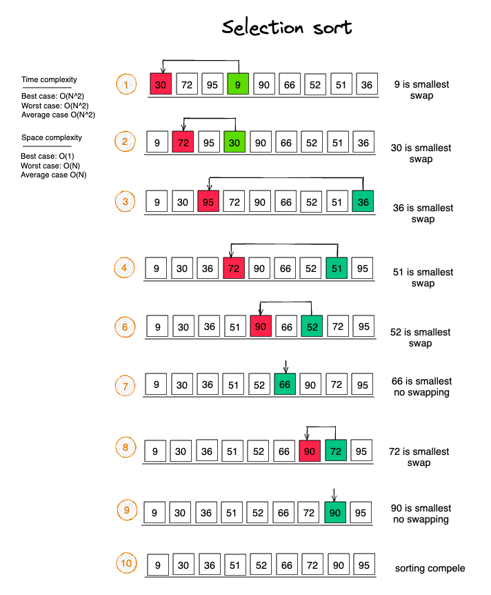
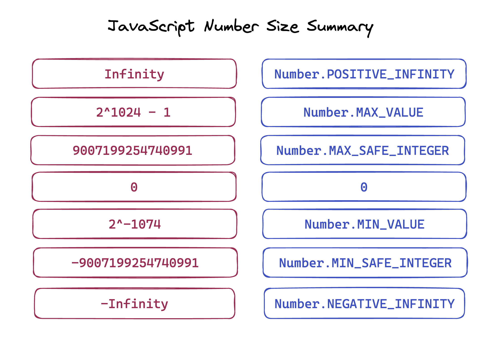
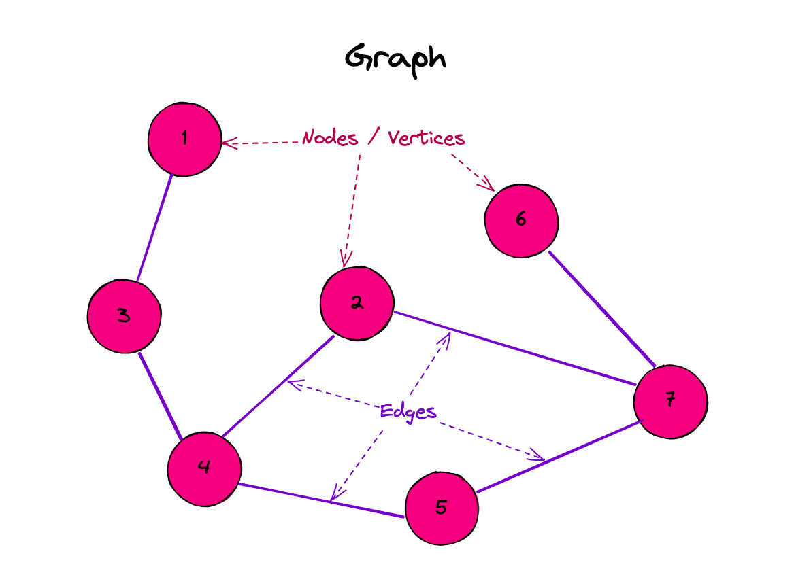
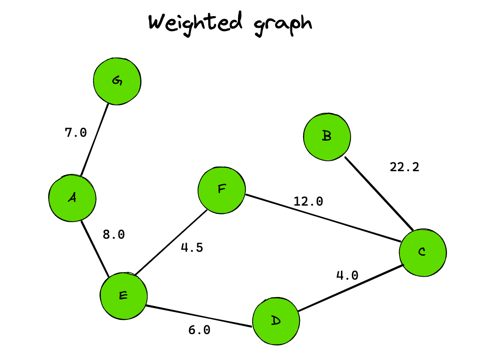
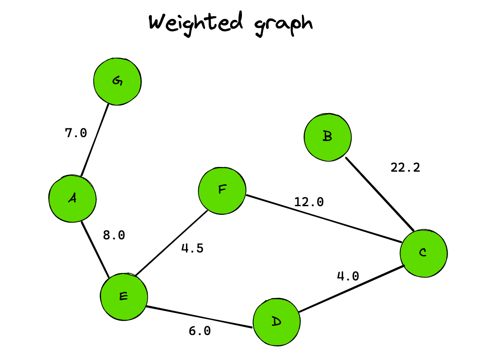
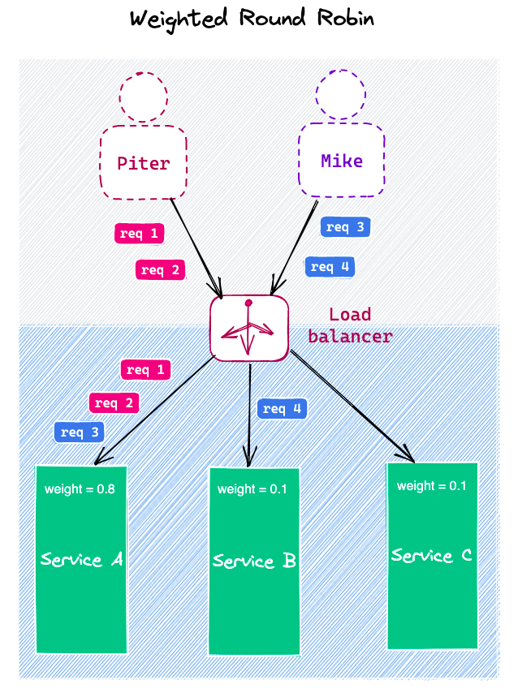
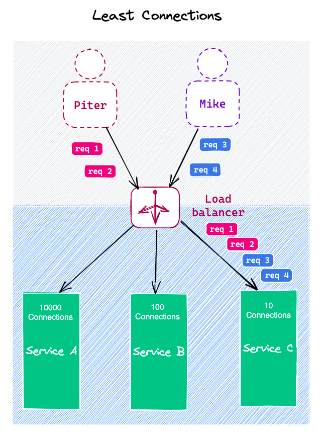

Holy Theory project
algorithms
Binary search
Binary search
Steps:
Step 1 - Read the search element from the user. Step 2 - Find the middle element in the sorted list. Step 3 - Compare the search element with the middle element in the sorted list. Step 4 - If both are matched, then display "Given element is found!!!" and terminate the function. Step 5 - If both are not matched, then check whether the search element is smaller or larger than the middle element. Step 6 - If the search element is smaller than middle element, repeat steps 2, 3, 4 and 5 for the left sublist of the middle element. Step 7 - If the search element is larger than middle element, repeat steps 2, 3, 4 and 5 for the right sublist of the middle element. Step 8 - Repeat the same process until we find the search element in the list or until sublist contains only one element. Step 9 - If that element also doesn't match with the search element, then returns -1;
Time Complexity:
Worst case: O(log n) Average case: O(log n) Best case: O(1)
function binarySearch(nums: number[], target: number): number {
let left: number = 0;
let right: number = nums.length - 1;
while (left <= right) {
const mid: number = Math.floor((left + right) / 2);
if (nums[mid] === target) return mid;
if (target < nums[mid]) right = mid - 1;
else left = mid + 1;
}
return -1;
}
class Solution {
private static int binarySearch(int[] array, int target) {
int low = 0;
int high = array.length - 1;
while(low <= high) {
int middle = low + (high - low) / 2;
int value = array[middle];
if(value < target) {
low = middle + 1;
} else if(value > target) {
high = middle - 1;
} else {
return middle;
}
}
return -1;
}
}
#binary search
def binary_search(list, item):
low = 0
high = len(list) - 1
while low <= high:
mid = (low+high)/2
guess = list[mid]
if guess == item:
return mid
if guess > item:
high = mid - 1
else:
low = mid +1
return None
my_list = [1, 3, 5, 7, 9]
res = binary_search(my_list, 3)
print(my_list[res])
Binary tree in order traversal
Binary tree in order traversal
class Solution {
List<Integer> getInOrderTraversal(Node root) {
List<Integer> list = new ArrayList<Integer>();
Stack<Node> stack = new Stack<>();
Node node = root;
while(node != null || !stack.isEmpty()) {
while(node != null) {
stack.push(node);
node = node.left;
}
list.add(stack.peek().data);
node = stack.pop().right;
}
return list;
}
}
Binary tree postorder traversal
Binary tree postorder traversal
class Solution {
void utility(Node root, List<Integer> traversal) {
if(root == null) {
return;
}
utility(root.left, traversal);
utility(root.right, traversal);
traversal.add(root.data);
}
List<Integer> getPostorderTraversal(Node root) {
List<Integer> traversal = new ArrayList<Integer>();
utility(root, traversal);
return traversal;
}
}
Binary tree preorder traversal
Binary tree preorder traversal
class Solution {
void utility(Node root, List<Integer> traversal) {
if(root == null) {
return;
}
traversal.add(root.data);
utility(root.left, traversal);
utility(root.right, traversal);
}
List<Integer> getPreorderTraversal(Node root) {
List<Integer> traversal = new ArrayList<Integer>();
utility(root, traversal);
return traversal;
}
}
Bubble sort
Bubble sort
function bubbleSort(array: number[] | string[]) {
for (let i = 0; i < array.length; i++) {
for (let j = 0; j < array.length - 1 - i; j++) {
if (array[j] > array[j + 1]) {
[array[j], array[j + 1]] = [array[j + 1], array[j]];
}
}
}
return array;
}
console.log(bubbleSort([2,5,2,6,7,2,22,5,7,9,0,2,3]))
public static void bubbleSort(int[] array) {
for(int i = 0; i < array.length - 1; i++) {
for(int j = 0; j < array.length - i - 1; j++) {
if(array[j] > array[j + 1]) {
int temp = array[j];
array[j] = array[j + 1];
array[j + 1] = temp;
}
}
}
}
Diffie hellman algorithm
Diffie hellman algorithm
function power(a: any, b: any, p: any) {
if(b === 1) {
return 1
} else {
return Math.pow(a,b) % p
}
}
function DiffieHellman() {
let P, G, x, a, y, b, ka, kb;
P = 23
console.log("The value of P :", P);
G = 9;
console.log("The value of G :", G);
a = 4;
console.log("The private key a for Alice : ", a);
x = power(G,a,P);
b = 3;
console.log("The private key a for Bob : ", b);
y = power(G,b,P);
ka = power(y, a, P);
kb = power(x, b, P);
console.log("Secret key for the Alice is : ", ka);
console.log("Secret key for the Bob is : ", kb);
}
DiffieHellman()
Graph adjacency list
Graph adjacency list
public class GraphList {
ArrayList<LinkedList<Node>> alist;
GraphList() {
alist = new ArrayList<>();
}
public void addNode(Node node) {
LinkedList<Node> currentList = new LinkedList<>();
currentList.add(node);
alist.add(currentList);
}
public void addEdge(int src, int dst) {
LinkedList<Node> currentList = alist.get(src);
Node dstNode = alist.get(dst).get(0);
currentList.add(dstNode);
}
public boolean checkEdge(int src, int dst) {
LinkedList<Node> currentList = alist.get(src);
Node dstNode = alist.get(dst).get(0);
for(Node node: currentList) {
if(node == dstNode) {
return true;
}
}
return false;
}
public void print() {
for(LinkedList<Node> currentList : alist) {
for(Node node: currentList) {
System.out.print(node.data + " -> ");
}
System.out.println();
}
}
}
Graph adjacency matrix
Graph adjacency matrix
public class Graph {
ArrayList<Node> nodes;
int[][] matrix;
Graph(int size) {
nodes = new ArrayList<>();
matrix = new int[size][size];
}
public void addNode(Node node) {
nodes.add(node);
}
public void addEdge(int src, int dst) {
matrix[src][dst] = 1;
}
public boolean checkEdge(int src, int dst) {
if(matrix[src][dst] == 1) {
return true;
} else {
return false;
}
}
public void print() {
System.out.print(" ");
for(Node node : nodes) {
System.out.print(node.data + " ");
}
System.out.println();
for(int i = 0; i < matrix.length; i++) {
System.out.print(nodes.get(i).data + " ");
for(int j =0; j < matrix[i].length; j++) {
System.out.print(matrix[i][j] + " ");
}
System.out.println();
}
}
}
Insertion sort
Insertion sort
TypeScript
function insertionSort(array: number[] | string[]) {
for (let i = 1; i < array.length; i++) {
let curr = array[i];
let j = i - 1;
for (j; j >= 0 && array[j] > curr; j--) {
array[j + 1] = array[j];
}
array[j + 1] = curr;
}
return array;
}
console.log(insertionSort([1, 4, 2, 8, 345, 123, 43, 32, 5643, 63, 123, 43, 2, 55, 1, 234, 92]));
Java
class Solution {
void insertionSort (int[] arr) {
int n = arr.length;
for(int i = 1; i < n; i++) {
int current = arr[i];
int position = i - 1;
while(position >= 0 && arr[position] > current) {
arr[position + 1] = arr[position];
position--;
}
arr[position + 1] = current;
}
}
}
Interpolation search
Interpolation search
class Solution {
private static int interpolationSearch(int[] array, int value) {
int low = 0;
int high = array.length - 1;
while(value >=array[low] && value <= array[high] && low <= high) {
int probe = low + (high - low) * (value - array[low]) / (array[high] - array[low]);
if(array[probe] == value) {
return probe;
} else if(array[probe] > value) {
low = probe + 1;
} else {
high = probe -1;
}
}
return -1;
}
}
Merge sort
Merge sort
Java
class Solution {
void merge(int[] arr, int low, int mid, int high) {
int subArr1Size = mid - low + 1;
int subArr2Size = high - mid;
int [] subArr1 = new int[subArr1Size];
int [] subArr2 = new int[subArr2Size];
for (int i = 0; i < subArr1Size; i++) {
subArr1[i] = arr[low + i];
}
for (int i = 0; i < subArr2Size; i++) {
subArr2[i] = arr[mid + 1 + i];
}
int i = 0, j = 0, k = low;
while(i < subArr1Size && j < subArr2Size) {
if(subArr1[i] <= subArr2[j]) {
arr[k] = subArr1[i];
i++;
} else {
arr[k] = subArr2[j];
j++;
}
k++;
}
while(i < subArr1Size) {
arr[k++] = subArr1[i++];
}
while (j < subArr2Size) {
arr[k++] = subArr2[j++];
}
}
void mergesort(int[] arr, int low, int high){
if(high > low) {
int mid = (high + low) / 2;
mergesort(arr, low, mid);
mergesort(arr, mid + 1, high);
merge(arr, low, mid, high);
}
}
void mergeSort (int[] arr) {
int n = arr.length;
mergesort(arr, 0, n - 1);
}
}
Quick sort
Quicksort
class Solution {
int makePartition(int [] arr, int low, int high) {
int pivot = arr[high];
int currentIndex = low - 1;
for(int i = low; i < high; i++) {
if(arr[i] < pivot) {
currentIndex++;
int temp = arr[i];
arr[i] = arr[currentIndex];
arr[currentIndex] = temp;
}
}
int temp = arr[high];
arr[high] = arr[currentIndex + 1];
arr[currentIndex + 1] = temp;
return currentIndex + 1;
}
void quicksort(int[] arr, int low, int high) {
if(low < high) {
int pivot = makePartition(arr, low, high);
quicksort(arr, low, pivot - 1);
quicksort(arr, pivot + 1, high);
}
}
void quickSort (int[] arr) {
int n = arr.length;
quicksort(arr, 0, n - 1);
}
}
def quicksort(arr):
if len(arr) < 2:
return arr
else:
pivot = arr[len(arr)/2]
less = [i for i in arr[1:] if i <= pivot]
greater = [i for i in arr[1:] if i > pivot]
return quicksort(less) + [pivot] + quicksort(greater)
print(quicksort([10,2,3,1,5,4]))
class Solution {
static void swap(int[] array, int i, int j) {
int temp = array[i];
array[i] = array[j];
array[j] = temp;
}
private static void quickSort(int[] array, int start, int end) {
if(end <= start) return; // base case
int pivot = partition(array, start, end);
quickSort(array, start, pivot -1);
quickSort(array, pivot + 1, end);
}
private static int partition(int[] array, int start, int end) {
int pivot = array[end];
int i = start - 1;
for(int j = start; j <= end -1; j++) {
if(array[j] < pivot) {
i++;
swap(array, i, j);
}
}
i++;
swap(array, i, end);
return i;
}
}
Selection sort
Selection sort

function selectionSort(array: any[]) {
for (let i = 0; i < array.length - 1; i++) {
let min = i;
for (let j = i + 1; j < array.length; j++) {
if (array[min] > array[j]) min = j;
}
[array[i], array[min]] =[array[min], array[i]]
}
return array;
}
console.log(selectionSort([1, 4, 2, 8, 345, 123, 43, 32, 5643, 63, 123, 43, 2, 55, 1, 234, 92]));
public static void selectionSort(int[] array) {
for(int i = 0; i < array.length - 1; i++) {
int min = i;
for(int j = i + 1; j < array.length; j++) {
if(array[min] > array[j]) {
min = j;
}
}
int temp = array[i];
array[i] = array[min];
array[min] = temp;
}
}
print('This is selection sort')
def find_smallest(arr):
smallest = arr[0]
smallest_index = 0
for i in range(1, len(arr)):
if arr[i] < smallest:
smallest = arr[i]
smallest_index = i
return smallest_index
def selection_sort(arr):
newArr = []
for i in range(len(arr)):
smallest = find_smallest(arr)
newArr.append(arr.pop(smallest))
return newArr
print(selection_sort([5,4,6,2,1,123, 2, 3,1,23 ,1,1,]))
javascript
Array length property
Array length property
What is the value of clothes[0]:
const clothes = ['jacket', 't-shirt'];
clothes.length = 0;
clothes[0];
Reducing the value of the length property has the side-effect of deleting own array elements whose array index is between the old and new length values. https://262.ecma-international.org/6.0/#sec-properties-of-array-instances-length
As result when JavaScript executes clothes.length = 0, all clothes items are deleted.
clothes[0] is undefined, because clothes array has been emptied.
Different ways of declaring functions in JS
Different ways of declaring functions in JS
Event Loop
Event Loop

In JavaScript, the event loop is a fundamental concept for managing asynchronous operations. To understand the event loop, it's essential to grasp the other components involved:
Memory Heap: This is where memory allocation happens. Objects and variables are stored here.
Call Stack: It keeps track of the execution of functions. When a function is invoked, it's added to the call stack. When the function finishes executing, it's removed from the stack.
Web APIs: These are provided by the browser, such as DOM manipulation methods, setTimeout, XMLHttpRequest, etc. They are not part of the JavaScript language itself but are accessible through JavaScript. When you make an asynchronous request, it's handled by the Web APIs.
Event Loop: The event loop constantly checks the call stack and the callback queue to see if there's any function that needs to be executed. If the call stack is empty, it takes a callback from the queue and pushes it onto the call stack, initiating its execution.
Callback Queue: When asynchronous operations (like setTimeout or XMLHttpRequest) are completed, their callback functions are pushed into the callback queue.
Macrotasks: These are higher priority tasks in the callback queue. They include I/O operations, setTimeout, setInterval, etc. Macrotasks are processed after the call stack is empty.
Microtasks: Microtasks are tasks with a higher priority than macrotasks and include processes like Promise callbacks, queueMicrotask, MutationObserver, etc. Microtasks are executed after the current task and before the next macrotask.
Here's how they work together:
- Functions are pushed onto the call stack and executed synchronously until the stack is empty.
- Asynchronous functions are offloaded to the Web APIs.
- When the asynchronous operation is completed, its callback function is placed in the callback queue.
- The event loop checks the callback queue. If the call stack is empty, it pushes the callback function from the queue onto the stack, executing it.
- Microtasks are executed between macrotasks, ensuring that certain asynchronous operations are prioritized and processed promptly.
This cycle allows JavaScript to handle asynchronous tasks efficiently, providing a smooth user experience in web applications.
Give best practices for handling errors in asynchronous code.
Give best practices for handling errors in asynchronous code.
Handling errors in asynchronous code is a critical aspect of developing reliable and secure applications. Here are some best practices for handling errors in asynchronous code:
Use try-catch blocks: Wrap asynchronous operations within a
tryblock and handle errors within the correspondingcatchblock. This allows you to catch synchronous errors that might occur in asynchronous code.try { // Asynchronous operation } catch (error) { // Handle the error }Use callbacks with the first argument as an error: When writing functions with callbacks, always pass the error as the first argument in the callback. Functions typically follow a calling convention like
callback(error, result). Iferroris notnullorundefined, an error has occurred.function asyncFunction(callback) { // Asynchronous operation if (error) { return callback(error); } callback(null, result); }Use Promises: If possible, use Promises to perform asynchronous operations. Promises provide a convenient way to handle successful results and errors.
asyncFunction() .then(result => { // Handle the successful result }) .catch(error => { // Handle the error });Use async/await: With asynchronous functions in JavaScript, you can use the
asyncandawaitkeywords for a more convenient syntax when working with asynchronous operations and errors.async function fetchData() { try { let data = await asyncFunction(); // Handle the successful result } catch (error) { // Handle the error } }Do not ignore errors: Never ignore errors. Always handle them or propagate them up the call stack to be handled at a higher level.
Log errors: Log errors to quickly detect and troubleshoot issues in production. A robust logging system will help you track errors in your application.
Use specific error classes: Create custom error classes for different types of errors. This helps you understand the nature of the error and handle them more precisely.
class CustomError extends Error { constructor(message) { super(message); this.name = 'CustomError'; } }
Adhering to these practices will help you manage errors in asynchronous code more effectively and build more reliable applications.
How can JavaScript codes be hidden from old browsers that do not support JavaScript?
How can JavaScript codes be hidden from old browsers that do not support JavaScript?
Add
<!--before the<script>tag: This starts an HTML comment, which is ignored by old browsers that do not understand JavaScript.<!-- <script type="text/javascript"> // JavaScript code here </script> -->Add
//-->after the<script>tag: This ends the HTML comment for old browsers. Modern browsers will treat//-->as a one-line JavaScript comment, effectively ignoring it.<!-- <script type="text/javascript"> // JavaScript code here </script> //-->
By using this technique, the JavaScript code is effectively hidden from old browsers, but it will still be executed by modern browsers that support JavaScript. Keep in mind that this method is somewhat outdated, and modern web development practices often involve using feature detection and progressive enhancement to handle different browser capabilities.
How JavaScript Engine works
How JavaScript Engine works
JavaScript engines are responsible for executing JavaScript code on web browsers and other environments. They follow a multi-step process to parse, compile, optimize, and execute JavaScript code efficiently. Here's a simplified overview of how a typical JavaScript engine works:
1. Lexical Analysis:
When you load a web page, the JavaScript engine first performs lexical analysis or tokenization. This involves breaking the source code into tokens, which are the smallest units of meaning in the language. Tokens include keywords, operators, literals, and identifiers.
2. Parsing:
The tokens are then parsed to create an Abstract Syntax Tree (AST). The AST represents the grammatical structure of the code. Parsing involves organizing the tokens into a hierarchical tree that defines the order of operations and relationships between different parts of the code.
3. Compilation:
Once the AST is created, it goes through a compilation process. In this step, the engine translates the AST into intermediate code. This code is also known as bytecode or machine code. Some engines use Just-In-Time (JIT) compilation, where the intermediate code is further optimized for execution.
4. Optimization:
Modern JavaScript engines employ various optimization techniques to improve the performance of the code. These include inline caching, function inlining, loop unrolling, and many others. Engines can also analyze the code during execution and apply optimizations dynamically based on the actual usage patterns.
5. Execution:
The optimized intermediate code is executed by the engine. During execution, the engine manages the call stack, memory allocation, and variable scope. It interprets the bytecode and performs the operations specified by the code.
6. Garbage Collection:
JavaScript engines have automatic memory management, including garbage collection. Unused objects and variables are identified and deallocated to free up memory. This process ensures efficient memory usage and prevents memory leaks.
7. Callbacks and Web APIs (in browser environments):
In browser environments, JavaScript can interact with the DOM (Document Object Model) and perform asynchronous operations using callbacks and Web APIs (such as setTimeout, fetch, and XMLHttpRequest). These operations are offloaded to the browser's internal components and are executed asynchronously, allowing the main JavaScript thread to remain responsive.
8. Event Loop (in asynchronous environments):
In asynchronous environments like web browsers, JavaScript uses an event loop to handle asynchronous operations. The event loop continuously checks the message queue for pending events (such as user interactions or completed network requests) and processes them, ensuring that asynchronous tasks are executed when their results are ready.
Different JavaScript engines might implement these steps differently, but the overall process remains similar. Understanding these fundamental concepts can help developers write more efficient JavaScript code and optimize their applications for better performance.
How to get argv in nodejs?
How to get argv in nodejs?
In Node.js, you can access command-line arguments using the process.argv array. The process.argv array contains the command-line arguments that were passed when the Node.js process was launched. Here's how you can access and use process.argv:
Basic Usage:
process.argvis an array where the first two elements are:process.argv[0]: The path to the Node.js executableprocess.argv[1]: The path to the JavaScript file being executed
The actual command-line arguments start from
process.argv[2]onwards. For example:// app.js console.log(process.argv);If you run this script from the command line with additional arguments:
node app.js arg1 arg2 arg3The output will be an array:
[ '/path/to/node', '/path/to/app.js', 'arg1', 'arg2', 'arg3' ]Parsing Command-Line Arguments:
If you want to extract specific arguments, you can access them by their index in the
process.argvarray. For example, if you want to access'arg1'from the above example, you would useprocess.argv[2]:// app.js const arg1 = process.argv[2]; console.log('Argument 1:', arg1);Running the script with the same command as before will output:
Argument 1: arg1If you need to parse command-line arguments in a more structured way, you might want to consider using libraries like
yargsorcommander, which provide a more user-friendly and powerful interface for handling command-line arguments in Node.js applications. These libraries make it easier to define options, handle flags, and manage arguments in a more intuitive manner.
JavaScript data types
JavaScript data types
JavaScript number size summary
JavaScript number size summary

JavaScript Arrays cheat sheet
JavaScript Arrays cheat sheet

OOP in JavaScript
OOP in JavaScript
Object-Oriented Programming (OOP) is a programming paradigm that uses objects and classes for organizing code. JavaScript, although primarily a prototype-based language, supports object-oriented programming concepts. Here's how OOP concepts are implemented in JavaScript:
1. Objects:
In JavaScript, everything is an object (or a primitive data type). Objects are collections of key-value pairs. You can create objects using object literals or constructor functions.
// Object literal
let person = {
name: "John",
age: 30,
sayHello: function() {
console.log("Hello!");
}
};
// Constructor function
function Person(name, age) {
this.name = name;
this.age = age;
}
let person1 = new Person("Alice", 25);
2. Classes (Introduced in ECMAScript 6):
JavaScript introduced the class keyword in ECMAScript 6, providing syntactical sugar for constructor functions. Classes are templates for creating objects with specific methods and properties.
class Person {
constructor(name, age) {
this.name = name;
this.age = age;
}
sayHello() {
console.log("Hello!");
}
}
let person1 = new Person("Bob", 35);
person1.sayHello();
3. Inheritance:
JavaScript supports inheritance through prototype chaining. Objects can inherit properties and methods from other objects.
class Animal {
constructor(name) {
this.name = name;
}
makeSound() {
console.log("Some sound");
}
}
class Dog extends Animal {
constructor(name, breed) {
super(name);
this.breed = breed;
}
makeSound() {
console.log("Woof!");
}
}
let myDog = new Dog("Buddy", "Golden Retriever");
myDog.makeSound(); // Output: Woof!
4. Encapsulation:
JavaScript doesn't have built-in support for private variables, but closures can be used to achieve encapsulation.
function Counter() {
let count = 0;
this.increment = function() {
count++;
};
this.getCount = function() {
return count;
};
}
let counter = new Counter();
counter.increment();
console.log(counter.getCount()); // Output: 1
5. Polymorphism:
JavaScript allows objects of different classes to be treated as objects of a common superclass through dynamic typing and duck typing.
class Cat {
makeSound() {
console.log("Meow!");
}
}
class Duck {
makeSound() {
console.log("Quack!");
}
}
function makeAnimalSound(animal) {
animal.makeSound();
}
let myCat = new Cat();
let myDuck = new Duck();
makeAnimalSound(myCat); // Output: Meow!
makeAnimalSound(myDuck); // Output: Quack!
JavaScript's object-oriented features provide flexibility and allow developers to create complex applications following the principles of OOP.
Possible types of function in JavaScript
Possible types of function in JavaScript
Promise action flow
Promise action flow
What is event bubbling?
What is event bubbling?
Event bubbling is a concept in JavaScript and many other programming languages where events triggered on an element will "bubble up" and trigger parent elements' event handlers as well. When an event occurs on a DOM (Document Object Model) element, it first runs the event's handler on that element, then on its parent element, and so on, propagating up through its ancestors in the DOM tree.
Consider the following HTML structure:
<div id="parent">
<button id="child">Click me!</button>
</div>
If you have an event listener attached to both the parent and the child element like this:
const parentElement = document.getElementById('parent');
const childElement = document.getElementById('child');
parentElement.addEventListener('click', function() {
console.log('Parent element clicked');
});
childElement.addEventListener('click', function(event) {
console.log('Child element clicked');
event.stopPropagation(); // Stops the event from bubbling up
});
If you click the button with the id "child," you might expect only "Child element clicked" to be logged. However, due to event bubbling, both messages will be logged because the click event bubbles up from the child element to its parent.
In the example above, event.stopPropagation() is used to stop the event from further propagation, preventing it from reaching the parent element. Without this line, the event would continue to bubble up to the parent element, triggering its event handler as well. This can be useful in certain cases, but it's important to understand event bubbling to control how events propagate through the DOM tree.
What is the difference between Call and Apply?
What is the difference between Call and Apply?
call() and apply() are two methods in JavaScript that allow you to invoke a function with a specified this value and arguments. They are similar in purpose but differ in how they accept arguments.
call()
The call() method calls a function with a given this value and individual arguments passed one by one.
Syntax:
functionName.call(thisValue, arg1, arg2, ...);
functionName: The function to be called.thisValue: The value to be passed asthisto the function.arg1, arg2, ...: The arguments to be passed to the function individually.
Example:
function greet(message) {
console.log(`${message}, ${this.name}!`);
}
const person = {
name: 'John'
};
greet.call(person, 'Hello');
// Output: Hello, John!
In this example, call() is used to invoke the greet function with person object as the this value and 'Hello' as the argument.
apply()
The apply() method is similar to call(), but it accepts arguments as an array.
Syntax:
functionName.apply(thisValue, [arg1, arg2, ...]);
functionName: The function to be called.thisValue: The value to be passed asthisto the function.[arg1, arg2, ...]: An array or array-like object containing the arguments to be passed to the function.
Example:
function introduce(greeting, age) {
console.log(`${greeting}, I am ${this.name} and I am ${age} years old.`);
}
const person = {
name: 'Alice'
};
introduce.apply(person, ['Hi', 30]);
// Output: Hi, I am Alice and I am 30 years old.
In this example, apply() is used to invoke the introduce function with person object as the this value and ['Hi', 30] as the arguments passed in an array.
Differences:
Argument Format:
call()accepts arguments individually.apply()accepts arguments as an array.
Use Cases:
- Use
call()when you know the exact number of arguments the function expects and you want to pass them individually. - Use
apply()when the number of arguments is not known in advance, or when the arguments are already in an array or array-like object.
- Use
In modern JavaScript, you can often use the more versatile spread operator (...) to achieve the same result as apply() while providing a cleaner syntax, especially when working with arrays. However, apply() can still be useful in certain situations, such as when dealing with variadic functions or functions that accept a variable number of arguments.
What is the NaN
What is the NaN
In JavaScript, NaN stands for "Not a Number." It is a special value representing an unrepresentable or undefined value resulting from operations that cannot produce a valid numeric result. For example, dividing zero by zero or trying to parse a string that does not represent a valid number results in NaN.
The concept of NaN in JavaScript can be traced back to the early versions of the language. JavaScript was created by Brendan Eich in 1995 while he was working at Netscape Communications Corporation. NaN was introduced as a way to handle undefined or unrepresentable values in mathematical operations.
When a mathematical operation in JavaScript can't produce a meaningful numeric result, the value is set to NaN. For instance:
var result = 0 / 0; // result is NaN because dividing zero by zero is undefined
It's important to note that NaN is not equal to itself according to JavaScript's specifications. This means that you cannot directly check if a value is NaN by using the equality operator (== or ===). Instead, you should use the isNaN() function to determine whether a value is NaN:
isNaN(NaN); // true
isNaN(10); // false
isNaN("Hello"); // true, because trying to convert "Hello" to a number results in NaN
The isNaN() function has been part of JavaScript since its early versions and provides a way to reliably check for NaN values.
In summary, NaN has been a fundamental concept in JavaScript since its inception, providing a way to handle undefined or unrepresentable values in numeric operations. The introduction of NaN has helped improve the reliability and consistency of numerical computations in JavaScript.
What is the difference between var, const, and const?
What is the difference between var, const, and const?
In JavaScript, var, let, and const are used to declare variables, but they have different scoping rules and behaviors. Here's a breakdown of their differences:
var:vardeclarations are globally scoped or function scoped.- They are hoisted to the top of their scope and can be accessed before the declaration.
varvariables can be reassigned and updated.
Example:
function example() { if (true) { var x = 10; } console.log(x); // Outputs 10, because var is function scoped }let:letdeclarations are block-scoped (limited to the block, statement, or expression where it is defined).- They are hoisted to the top of their scope but are not initialized until the interpreter reaches the declaration.
letvariables can be reassigned, but they cannot be redeclared in the same scope.
Example:
function example() { if (true) { let x = 10; console.log(x); // Outputs 10, because let is block scoped } console.log(x); // Error: x is not defined outside the block }const:constdeclarations are also block-scoped.- They must be initialized during declaration and cannot be reassigned to a different value after initialization.
- Like
let,constdeclarations are hoisted to the top of their scope but are not initialized until the interpreter reaches the declaration.
Example:
function example() { const x = 10; console.log(x); // Outputs 10, const variables cannot be reassigned x = 20; // Error: Assignment to constant variable }
In modern JavaScript, it is generally recommended to use const by default, and only use let when you know the variable's value will change. Avoid using var unless you have a specific reason to use it, as its behavior can sometimes lead to unexpected results due to its function scope or global scope. Using let and const helps in writing more predictable and maintainable code.
Weird and unexpected behavior of JavaScript
Weird and unexpected behavior of JavaScript
JavaScript is a versatile and powerful programming language, but it has its fair share of quirks and behaviors that can be considered weird or unexpected. Here are more examples:
Type Coercion: JavaScript's loose typing system can lead to unexpected results when different types are used together:
console.log(1 + "1"); // "11" console.log(true + 1); // 2NaN: The special value
NaNcan be perplexing:console.log(typeof NaN); // "number" console.log(NaN === NaN); // false console.log(1 + NaN); // NaNTruthy and Falsy Values: JavaScript's concept of truthy and falsy values can lead to surprises:
if ("false") { console.log("This will be executed."); // This will be executed. } if (0) { console.log("This will not be executed."); } console.log(Boolean("")); // false console.log(Boolean(0)); // falseHoisting: JavaScript hoists variable and function declarations, which can lead to seemingly unusual behavior:
console.log(x); // undefined var x = 5;Closures: Closures can cause inner functions to access outer function variables even after the outer function has completed:
function outer() { var x = 10; function inner() { console.log(x); } return inner; } var closureFunc = outer(); closureFunc(); // Outputs 10NaN Equality: NaN does not equal itself, making NaN comparisons tricky:
console.log(NaN == NaN); // false console.log(isNaN(NaN)); // trueAutomatic Semicolon Insertion (ASI): JavaScript inserts semicolons in certain situations, affecting code behavior:
function example() { return; { value: 42; } } console.log(example()); // undefinedVariable Declarations Without var/let/const: Missing variable declarations can lead to global scope pollution:
function noVarDeclaration() { x = 20; // This becomes a global variable! } noVarDeclaration(); console.log(x); // 20
These examples highlight some of the idiosyncrasies of JavaScript. Understanding these quirks is crucial for writing reliable and predictable JavaScript code.
patterns
Event Bus
Event Bus
interface IEventBus {
channels: any,
subscribe: (arg1: string, listener: (...args: any[]) => void) => void,
publish: (arg1: string, arg2: any) => void
}
const EventBus: IEventBus = {
channels: {},
subscribe (channelName: string, listener: (...args: any[]) => void) {
if (!this.channels[channelName]) {
this.channels[channelName] = []
}
this.channels[channelName].push(listener);
},
publish (channelName: string, data: any) {
const channel = this.channels[channelName];
if (!channel || !channel.length) {
return
}
channel.forEach((listener: (...args: any[]) => void) => listener(data))
}
}
Observer
Observer
export class Observer {
private observers: any[] = [];
public subscribe(fn: any) {
this.observers.push(fn);
}
public unsubscribe(fn:any) {
this.observers = this.observers.filter(subscriber => subscriber!==fn);
}
public next(data:any) {
this.observers.forEach(subscriber => subscriber(data));
}
}
Singleton
Singleton
const singleton = (function() {
let instance:any;
class User {
public name = '';
public age = 0;
constructor(name: string, age: number) {
this.name = name;
this.age = age;
}
}
return {
getInstance: function(name?: string, age?: number) {
if(!instance) {
const newName = name || "";
const newAge = age || 0;
instance = new User(newName, newAge);
}
return instance;
}
}
})();
questions
How to reverse a number?
How to reverse a number?
To invert a number in Java, you need to divide the number by 10 in the loop until it equals 0. And in the body of the loop find the remainder of the division by 10 and add to the result from the previous step, increased by a factor of 10.
int number = 12132;
int reverse = 0;
while(number > 0) {
reverse = reverse * 10 + number % 10;
number /= 10;
}
Big O
Big O

** Source: https://github.com/jamiebuilds/itsy-bitsy-data-structures/blob/master/itsy-bitsy-data-structures.js**
OOP Principles
OOP Principles
Abstraction
Abstract means a concept or an Idea which is not associated with any particular instance. Using abstract class/Interface we express the intent of the class rather than the actual implementation. In a way, one class should not know the inner details of another in order to use it, just knowing the interfaces should be good enough.
Inheritance
Inheritances expresses is-a and/or has-a relationship between two objects. Using Inheritance, In derived classes we can reuse the code of existing super classes. In Java, concept of is-a is based on class inheritance (using extends) or interface implementation (using implements).
Encapsulation
Encapsulation is the mechanism of hiding of data implementation by restricting access to public methods. Instance variables are kept private and accessor methods are made public to achieve this.
Polymorphism
It means one name many forms. It is further of two types static and dynamic. Static polymorphism is achieved using method overloading and dynamic polymorphism using method overriding. It is closely related to inheritance. We can write a code that works on the superclass, and it will work with any subclass type as well.
RESTful API methods
RESTful API methods
Types of Databases
Types of Databases

Software categories
Software categories

Software characteristics
Software characteristics

Software development life cycle
Software development life cycle
Design patterns
Design patterns
Creational Patterns:
Factory Method: Creates objects without specifying the exact class by delegating the instantiation to subclasses. Provides a way to create objects based on certain conditions or parameters.
Abstract Factory: Provides an interface for creating families of related or dependent objects without specifying their concrete classes. Supports creating objects with different implementations but having a common theme.
Builder: Separates the construction of a complex object from its representation, allowing the same construction process to create different representations. Useful when there are multiple ways to construct an object.
Prototype: Clones existing objects to create new ones, avoiding the need for subclassing. Allows objects to be copied without making the code dependent on their classes.
Singleton: Ensures a class has only one instance and provides a global point of access to it. Useful when you need to have a single shared instance across the entire application.
Structural Patterns: 6. Adapter: Converts the interface of one class into another interface that clients expect, making incompatible classes work together.
Bridge: Decouples an abstraction from its implementation, allowing them to vary independently. Useful when you want to extend a class in two independent dimensions.
Composite: Treats individual objects and compositions of objects uniformly, allowing you to create complex tree-like structures.
Decorator: Dynamically adds behavior or responsibilities to objects without altering their code directly. Offers a flexible alternative to subclassing.
Facade: Provides a simplified interface to a complex subsystem, making it easier to use and understand.
Flyweight: Shares data between multiple objects to reduce memory usage when many similar objects exist.
Proxy: Acts as a placeholder for another object, controlling access to it, and providing additional functionality when required.
Behavioral Patterns: 13. Chain of Responsibility: Allows multiple objects to handle a request without specifying the receiver explicitly. The request is passed along the chain until it's handled.
Command: Encapsulates a request as an object, allowing parameterization of clients with different requests, queuing of requests, or logging of the requests.
Iterator: Provides a way to access elements of a collection without exposing its underlying representation.
Mediator: Defines an object that centralizes communication between multiple objects, reducing their direct interactions.
Memento: Captures and externalizes an object's internal state, allowing the object to be restored to that state later.
Observer: Allows an object to publish changes to its state, notifying dependent objects to update automatically.
State: Allows an object to change its behavior when its internal state changes.
Strategy: Defines a family of algorithms, encapsulates each one, and makes them interchangeable. Enables selecting an algorithm at runtime.
Template Method: Defines the skeleton of an algorithm in a method, allowing subclasses to provide specific implementations of some steps.
Visitor: Separates algorithms from the objects on which they operate, enabling adding new operations without modifying the objects' classes.
SOLID
SOLID
The SOLID principles are a set of five design principles that aim to guide software developers in creating maintainable, scalable, and flexible code. Each principle focuses on a specific aspect of software design, and when applied together, they promote better software quality and reduce the risk of technical debt. Let's go through each SOLID principle:
Single Responsibility Principle (SRP):
- A class should have only one reason to change, i.e., it should have only one responsibility.
- This principle promotes the idea that a class should be focused on doing one thing well, making it easier to understand, maintain, and extend.
- By keeping classes small and focused, changes to one aspect of the system are less likely to affect other unrelated aspects.
Open/Closed Principle (OCP):
- Software entities (classes, modules, functions, etc.) should be open for extension but closed for modification.
- This means that you should be able to extend the behavior of a class or module without modifying its existing code.
- Achieving this often involves using abstractions (interfaces, abstract classes) and polymorphism, allowing you to add new functionality through inheritance or composition.
Liskov Substitution Principle (LSP):
- Objects of a superclass should be replaceable with objects of its subclasses without affecting the correctness of the program.
- In other words, a subclass should adhere to the behavior expected by the superclass and not violate the contract established by the superclass.
- Violating this principle can lead to unexpected behaviors when substituting objects and can undermine the correctness and reliability of the software.
Interface Segregation Principle (ISP):
- Clients should not be forced to depend on interfaces they do not use.
- This principle advocates for small, specific interfaces rather than large, general ones.
- By having fine-grained interfaces, clients can depend only on the functionality they require, reducing unnecessary dependencies and potential coupling.
Dependency Inversion Principle (DIP):
- High-level modules should not depend on low-level modules. Both should depend on abstractions.
- Abstractions should not depend on details. Details should depend on abstractions.
- This principle encourages the use of interfaces or abstract classes to define contracts, allowing high-level modules to be decoupled from low-level implementation details.
- By relying on abstractions, it becomes easier to change implementations without affecting higher-level modules.
By adhering to the SOLID principles, developers can create code that is more maintainable, extensible, and easier to test. These principles contribute to the development of robust and adaptable software systems, which can evolve over time with fewer risks of introducing bugs or unintended side effects when making changes.
GRASP
GRASP
Certainly! GRASP stands for General Responsibility Assignment Software Patterns, a set of object-oriented design principles used to guide the assignment of responsibilities to classes and objects in a software system. These principles help in creating a flexible and maintainable design. Here are the GRASP principles:
Creator:
- This principle suggests that a class should be responsible for creating instances of other classes if there is a strong relationship between them. For example, a factory class can be responsible for creating and initializing objects of a specific class.
Information Expert:
- This principle states that a responsibility should be assigned to the class with the most information required to fulfill that responsibility. In other words, a class that has the necessary data and behavior to perform a task should be given the responsibility to do so.
Low Coupling:
- This principle advocates for reducing the dependencies between classes by keeping them loosely coupled. Low coupling improves the maintainability and flexibility of the system as changes in one class are less likely to impact other classes.
High Cohesion:
- This principle suggests that a class should have a single, well-defined purpose or responsibility. High cohesion within a class ensures that it is focused and easy to understand.
Controller:
- The Controller pattern deals with managing the flow of information and requests between objects or components. It is responsible for interpreting user input and deciding which objects should handle the request.
Polymorphism:
- The Polymorphism principle involves the use of interfaces and abstract classes to allow multiple implementations for a single behavior or action. This increases the flexibility and extensibility of the system.
Indirection:
- The Indirection principle promotes the use of intermediaries to reduce direct dependencies between classes. It can be achieved through the use of interfaces or abstract classes, which enable more flexible and interchangeable components.
Protected Variations:
- This principle aims to protect a system from the impact of future changes by encapsulating the variations or volatile components within the system. It promotes using abstraction to isolate these variations.
Pure Fabrication:
- When no natural class fits the responsibility, a new class can be created solely to handle that specific responsibility. This class is considered a "pure fabrication" and helps in achieving a more maintainable design.
GRASP principles provide a set of guidelines for assigning responsibilities to classes, ensuring a well-structured and adaptable object-oriented design. Applying these principles can lead to more maintainable, robust, and flexible software systems.
Browser URL Search
Browser URL Search
Question
A person settled in front of their laptop, launching a browser before typing a URL into the search bar. What unfolds within the browser at the network level following this action?
Answer
URL Parsing: When a user enters a URL into the browser's search bar, the browser parses the URL to extract components like the protocol (e.g., "https"), the domain name (e.g., "www.example.com"), and the path (e.g., "/page"). The browser also checks the URL's validity.
DNS Resolution: To find the IP address associated with the domain name, the browser queries a DNS (Domain Name System) server. This process involves multiple steps, potentially starting with the local cache and progressing to the ISP's DNS server and authoritative DNS servers for the domain.
TCP/IP Connection: The browser initiates a secure TCP connection using TLS (Transport Layer Security) to the IP address of the web server hosting the website. A process known as the TLS handshake occurs, involving encryption negotiation, key exchange, and verification to establish a secure connection.
HTTPs Request: With the secure connection established, the browser sends an HTTPS (HTTP Secure) request to the web server. The request includes the HTTP method (e.g., GET, POST), headers (including user agent information), and the requested path.
Server Processing: The web server receives the HTTPS request, processes it, and generates an appropriate HTTPS response. This response includes a status code (e.g., 200 OK), headers (e.g., content type), and the requested content (HTML, images, etc.).
TCP/IP Data Transfer: The server sends the HTTPS response back to the browser over the established encrypted TCP connection.
Rendering and Display: The browser receives the response, interprets the HTML content, and renders the page. Additional resources referenced in the HTML (such as images, stylesheets, and JavaScript files) are fetched over the secure connection and processed similarly.
Page Interaction: Users interact with the rendered page, which may involve actions like clicking links or submitting forms. These actions trigger additional HTTPS requests for resources and data.
Caching: The browser may cache certain resources for improved performance during subsequent visits. Cached resources are reused to load pages faster.
Connection Termination: When the user closes the browser tab or navigates away from the page, the browser may gracefully terminate the encrypted TCP connection, involving a process to ensure proper closure.
It's important to note that the use of HTTPS adds an extra layer of security through encryption, helping to protect the confidentiality and integrity of the data exchanged between the browser and the web server.
Rest API
Rest API
1. Introduction to REST API:
- Begin by defining REST API. REST stands for Representational State Transfer, and it is an architectural style for designing networked applications.
2. Key Principles of REST:
- Mention the key principles of REST:
- Stateless: Each request from a client to the server must contain all the information needed to understand and process the request.
- Client-Server: The client and server are separate entities that communicate over a network.
- Uniform Interface: A consistent and uniform way of interacting with resources (typically using HTTP methods).
- Resource-Based: Everything in a REST API is treated as a resource, and each resource is identified by a unique URI.
- Representation: Resources can have multiple representations (e.g., JSON, XML) to support different clients.
3. HTTP Methods:
- Explain the common HTTP methods used in REST:
- GET: Retrieve data from the server.
- POST: Create a new resource on the server.
- PUT: Update an existing resource on the server.
- DELETE: Remove a resource from the server.
- PATCH: Partially update a resource.
- OPTIONS: Retrieve information about the communication options available for a resource.
4. URI Structure:
- Discuss how URIs are structured in REST APIs.
- Explain the concept of endpoints and how they map to resources.
5. Status Codes:
- Mention the significance of HTTP status codes (e.g., 200 for success, 404 for not found, 500 for server error) in REST APIs.
6. Data Formats:
- Explain that data in REST APIs is typically exchanged in standardized formats like JSON or XML.
- Discuss how clients can request specific formats using the "Accept" header.
7. Authentication and Authorization:
- Briefly touch on the importance of authentication and authorization mechanisms in securing REST APIs.
8. Statelessness and Scalability:
- Emphasize how the statelessness of REST allows for easy scalability because each request contains all necessary information.
9. Advantages of REST API:
- Highlight the benefits of using REST, such as simplicity, scalability, and ease of caching.
10. Use Cases and Examples: - Provide examples of real-world applications or services that use REST APIs (e.g., Twitter API for retrieving tweets).
11. Drawbacks and Considerations: - Mention any potential drawbacks or challenges, such as over-fetching data or lack of support for real-time updates.
12. Conclusion: - Summarize by reiterating the key points about REST APIs and their significance in modern web development.
Remember to tailor your response to the specific details of the interview question and your own experiences or knowledge of REST APIs. Providing concrete examples from your previous work or projects can also enhance your answer and demonstrate your practical understanding of REST.
Websockets
Websocket
WebSocket is a communication protocol that provides full-duplex, bidirectional communication channels over a single TCP connection. It is designed to enable real-time, interactive communication between a client (typically a web browser) and a server. WebSocket is often used in web applications and other scenarios where low-latency, efficient communication is required.
Here's how WebSocket works:
Handshake: WebSocket communication begins with an initial handshake. This handshake is an HTTP request from the client to the server, usually in the form of a standard HTTP GET request. However, it includes an additional
Upgradeheader field with a value of "websocket" to indicate that the client wants to establish a WebSocket connection. The server must also support WebSocket and, if it does, it responds with a status code of 101 (Switching Protocols) to confirm the upgrade.WebSocket Connection Established: Once the handshake is successful, the connection is upgraded from HTTP to WebSocket. From this point onward, the communication occurs over a single, persistent TCP connection, eliminating the need for repeated HTTP requests and responses.
Data Exchange: With the WebSocket connection established, both the client and server can send data to each other at any time, without the need for a request-response pattern. Data is sent as frames, which can be either text or binary. Each frame includes an opcode to indicate its type (e.g., text, binary, close, ping, pong), the payload data, and other control bits for framing.
Full-Duplex Communication: WebSocket supports full-duplex communication, meaning both the client and server can send messages independently without waiting for a response. This real-time, bidirectional communication makes it suitable for interactive applications, such as chat applications, online gaming, and live updates.
Keep-Alive and Ping/Pong: WebSocket includes built-in mechanisms for keeping the connection alive and detecting if it's still active. Periodically, one party may send a ping frame, and the other must respond with a pong frame. If one party fails to receive a pong response within a specified timeout, it can assume the connection is lost and take appropriate action.
Close Connection: Either party can initiate the closing of the WebSocket connection by sending a close frame. This allows for a graceful termination of the connection, and both sides can perform cleanup operations before disconnecting.
WebSocket offers several advantages over traditional HTTP communication for real-time applications, as it eliminates the overhead of repeated HTTP requests and reduces latency. It is widely used in web development, online gaming, financial trading platforms, and any application that requires low-latency, bi-directional communication between a client and server. Additionally, WebSocket libraries and APIs are available for various programming languages, making it relatively easy to implement in web and mobile applications.
Graphql
Graphql
GraphQL is a query language for APIs (Application Programming Interfaces) and a runtime for executing those queries by using a type system you define for your data. It was developed by Facebook in 2012 and open-sourced in 2015. GraphQL is designed to enable clients to request exactly the data they need, and nothing more, making it a powerful alternative to REST (Representational State Transfer) APIs for building flexible and efficient APIs. Here are the main principles and concepts of GraphQL:
Hierarchical Structure: GraphQL queries are hierarchical in nature, mirroring the shape of the response data. This allows clients to specify exactly what data they want, including nested fields and related data, in a single query.
Strongly Typed: GraphQL APIs are defined by a schema that explicitly defines the types of data that can be queried. These types can be scalars (integers, strings, etc.) or complex types (objects with fields). This schema provides a clear contract between the client and server.
Single Endpoint: Unlike REST, which often requires multiple endpoints for different resources, GraphQL typically has a single endpoint for all queries and mutations. This simplifies API requests and reduces over-fetching of data.
Client-Defined Queries: Clients are responsible for specifying the shape and structure of the data they need. This eliminates the problem of over-fetching or under-fetching data that can occur with REST APIs, where the server determines the response structure.
No Over-fetching or Under-fetching: With GraphQL, clients can request only the data they need, reducing the amount of data transferred over the network. This helps optimize performance, especially in mobile applications with limited bandwidth.
Real-time Data: GraphQL supports real-time data updates through subscriptions. Clients can subscribe to specific events or data changes and receive updates when those changes occur on the server.
Batching: Clients can send multiple queries in a single request to reduce the number of round-trips to the server. This is especially useful for optimizing network performance.
Introspection: GraphQL APIs are self-documenting. Clients can query the schema itself to discover the available types, queries, mutations, and their descriptions. This makes it easier to explore and interact with the API.
Mutations: GraphQL allows clients to modify data on the server using mutations. Mutations are defined in the schema and can be used to create, update, or delete data.
Validation and Type Checking: GraphQL servers perform validation and type checking on incoming queries to ensure that they adhere to the schema. This helps catch errors early in the development process.
Security: GraphQL provides mechanisms for controlling access to data, including authentication and authorization. Developers can implement custom logic to secure their GraphQL APIs.
In summary, GraphQL offers a more flexible and efficient way to interact with APIs by giving clients the power to request precisely the data they need, reducing over-fetching, and providing a strongly typed schema for clarity and validation. These principles make it a popular choice for modern web and mobile application development.
Git + Gitflow
Git + Gitflow
1. Purpose of Using GIT:
Git is a distributed version control system (DVCS) designed to track changes in source code during software development. Its main purposes are:
a. Version Control: Git helps developers manage and track different versions of their codebase, allowing for easy collaboration and tracking changes over time.
b. Collaboration: It enables multiple developers to work on the same project simultaneously, facilitating collaboration and reducing conflicts.
c. History Tracking: Git records every change made to the codebase, making it easy to trace back to specific changes, find bugs, and understand the evolution of the project.
d. Branching and Merging: Git allows developers to create branches for experimenting or developing new features without affecting the main codebase. Merging these branches back into the main codebase is seamless.
e. Backup and Recovery: Git provides redundancy and a backup mechanism for your code, reducing the risk of data loss.
2. How Git Works:
Git works based on the following core concepts:
a. Repository: A repository is where your project's files and their history are stored. It can be local (on your computer) or remote (on a server like GitHub or GitLab).
b. Commit: A commit is a snapshot of changes made to your code. Commits have unique identifiers and capture the state of your project at a specific moment.
c. Branch: A branch is a separate line of development. You can create branches to work on features or bug fixes independently. Branches help prevent conflicts when multiple people work on the same codebase.
d. Merge: Merging combines changes from one branch into another, typically integrating a feature branch back into the main codebase.
e. Pull and Push: Pulling retrieves changes from a remote repository to your local repository, while pushing sends your local changes to a remote repository.
f. Remote: A remote is a repository hosted on a server, like GitHub or GitLab, that allows multiple developers to collaborate on a project.
3. Gitflow:
Gitflow is a branching model and workflow that defines a set of rules for managing branches in a Git repository. It was popularized by Vincent Driessen and helps teams organize their development process. It consists of the following main branches:
a. Master (Main) Branch: This branch contains production-ready code. It should always be stable and deployable.
b. Develop Branch: The develop branch is used for ongoing development. It's where new features and bug fixes are integrated before they reach the master branch.
c. Feature Branches: Feature branches are created for new features or enhancements. Each feature gets its own branch, allowing developers to work on features independently.
d. Release Branches: When it's time to prepare a new release, a release branch is created from the develop branch. Final testing and bug fixes are done here before merging into the master branch.
e. Hotfix Branches: Hotfix branches are used for critical bug fixes in the master branch. They are created from the master branch and merged back into both master and develop branches.
Gitflow provides a structured approach to managing code changes, ensuring a stable master branch while allowing for parallel development of new features and bug fixes. It enhances collaboration and coordination within development teams.
What is functional programming
What is functional programming
Functional programming is a programming paradigm that treats computation as the evaluation of mathematical functions and avoids changing state and mutable data. In functional programming, functions are first-class citizens, meaning they can be passed as arguments to other functions, returned as values from other functions, and assigned to variables. This approach emphasizes immutability, purity, and higher-order functions.
Here are some key concepts in functional programming:
Pure Functions: Pure functions are functions where the output value is determined only by its input values, without observable side effects. This means if you call a function with the same arguments, it will always return the same result.
Immutability: In functional programming, data is immutable, which means once it is created, it cannot be changed. Instead of modifying existing data, functional programs create new data.
First-Class and Higher-Order Functions: Functions are treated as first-class citizens, which means they can be passed as arguments to other functions, returned as values from other functions, and assigned to variables. Higher-order functions are functions that can take other functions as arguments or return them as results.
Referential Transparency: An expression is called referentially transparent if it can be replaced with its value without changing the program's behavior. This is closely related to the concept of pure functions.
Recursion: Functional programming languages often rely heavily on recursion instead of loops for repetitive tasks.
Lazy Evaluation: Lazy evaluation delays the evaluation of an expression until its value is actually needed. This can help improve performance and allows for the creation of potentially infinite data structures.
Popular functional programming languages include Haskell, Lisp, Erlang, F#, and Scala. However, many other programming languages, like JavaScript, Python, and Java, also support functional programming paradigms to varying degrees, allowing developers to use functional programming concepts alongside other programming styles.
What is REPL and how to use it?
What is REPL and how to use it?
REPL stands for Read-Eval-Print Loop. It is an interactive programming environment that allows you to enter commands or code snippets, evaluate them, and immediately see the results. REPLs are especially common in interpreted languages like Python, JavaScript, Ruby, and also in compiled languages like Swift and TypeScript.
To use a REPL, you typically open a terminal or an online tool, enter your code, and observe the output instantly. This interactive nature makes it great for learning, testing small pieces of code, and exploring language features.
Example in TypeScript:
In TypeScript, you can utilize the TypeScript Playground, an online REPL environment provided by the TypeScript team.
Access the TypeScript Playground: Open your web browser and navigate to the TypeScript Playground at TypeScript Playground.
Write TypeScript Code: In the left pane, you can write TypeScript code directly. For example:
function greet(name: string): string { return `Hello, ${name}!`; } const message: string = greet("TypeScript"); console.log(message);Observe Compilation and Output: As you type, the TypeScript Playground will compile your code in real-time. The compiled JavaScript code appears in the right pane. You can also see the output in the console at the bottom.
Experiment and Learn: You can experiment with different TypeScript features, explore type annotations, interfaces, classes, and more. Any errors or issues in your code will be highlighted, helping you learn and correct mistakes on the fly.
Remember that the TypeScript Playground provides a sandboxed environment to try out TypeScript without any local setup, making it a valuable resource for learning and experimenting with the language.
Why do you need dto files?
Why do you need dto files?
DTO files, or Data Transfer Object files, are a common pattern in software development used for transferring data between different parts of an application or between different applications. While the concept of DTOs doesn't specifically require dedicated files, developers often create separate DTO classes or files for various reasons:
Separation of Concerns: Keeping DTOs in separate files promotes a clear separation of concerns within the codebase. By isolating data transfer logic into distinct files, developers can manage data-related tasks independently of other parts of the application, making the codebase more organized and maintainable.
Reusability: DTOs often represent common data structures used across different parts of an application or even in multiple applications. Having DTOs in separate files allows them to be easily reused in various components or services without duplicating code.
Code Organization: Placing DTOs in dedicated files enhances code readability and organization. Developers and other team members can quickly locate and understand the data structures used for data transfer without having to search through large, complex files.
Testing: Separate DTO files simplify the testing process. Unit tests and integration tests can focus specifically on the data transfer logic by importing and testing individual DTOs, making it easier to verify that the data is being transferred correctly between components.
Versioning and Compatibility: When DTOs are used in APIs or services, having them in separate files can aid in versioning. New versions of APIs can introduce updated DTOs without affecting existing implementations, ensuring backward compatibility for clients using older versions of the API.
Collaboration: In collaborative development environments, having DTOs in separate files allows multiple developers to work on different parts of the application simultaneously. Each developer can focus on a specific DTO without conflicting with others, streamlining the development process.
In summary, while DTOs themselves don't require dedicated files, creating separate DTO files offers advantages in terms of separation of concerns, reusability, code organization, testing, versioning, and collaboration. These benefits contribute to more maintainable, scalable, and efficient software development practices.
Can you explain the difference between REST API and GraphQL?
Can you explain the difference between REST API and GraphQL?
REST API and GraphQL are both technologies used for building APIs (Application Programming Interfaces) that allow different software systems to communicate with each other. However, they have distinct differences in terms of architecture and data fetching mechanisms.
REST API:
REST (Representational State Transfer) is an architectural style that uses a set of constraints when building web services. REST APIs are based on the principles of statelessness, meaning each request from a client to a server must contain all the information needed to understand and process the request. REST APIs use standard HTTP methods (GET, POST, PUT, DELETE) to perform operations on resources, which are identified by URIs (Uniform Resource Identifiers). Data is typically exchanged in JSON or XML format.
REST APIs have a fixed structure, and clients often end up over-fetching or under-fetching data. Over-fetching means fetching more data than needed, leading to wasteful bandwidth usage, while under-fetching means not getting enough data in a single request, resulting in multiple requests and reduced efficiency.
GraphQL:
GraphQL, on the other hand, is a query language for APIs and a server-side runtime for executing those queries with existing data. It provides a more efficient, flexible, and powerful alternative to the REST API. Unlike REST, where the server determines the response structure, in GraphQL, the client specifies exactly what data it needs, and the server responds with only that data. Clients can request multiple resources in a single query, avoiding issues like over-fetching and under-fetching.
GraphQL APIs have a strong type system, allowing clients to specify the shape and structure of the response data. This enables faster iteration for frontend developers, as they can request the exact data they need without relying on changes in the backend API. GraphQL APIs are typically exposed via a single endpoint, and clients can request nested or related data in a single query, reducing the number of requests made to the server.
In summary, while REST APIs follow a fixed structure and can lead to over-fetching or under-fetching of data, GraphQL provides a more efficient and flexible approach by allowing clients to request only the specific data they need, leading to more efficient data retrieval and improved performance for applications.
security
Main principles of security in ExpressJS server
Main principles of security in ExpressJS server
Input Validation: Validate and sanitize all user input, including parameters, query strings, and request bodies, to prevent common vulnerabilities like SQL injection, cross-site scripting (XSS), and command injection.
Authentication: Implement proper user authentication mechanisms, such as username/password authentication, token-based authentication (JWT), or OAuth, to ensure that only authorized users can access protected resources.
Authorization: Enforce authorization checks to ensure that authenticated users have the appropriate permissions to access specific resources or perform certain actions.
Session Management: Use secure session management techniques, such as setting secure and HTTP-only cookies, implementing session expiration and regeneration, and guarding against session fixation attacks.
Secure Communication: Always use HTTPS (TLS/SSL) to encrypt communication between the server and clients, preventing eavesdropping, data tampering, and man-in-the-middle attacks.
Error Handling: Handle errors carefully to avoid leaking sensitive information in error messages and implement proper error logging to help identify and respond to potential security issues.
Secure Headers: Set secure HTTP response headers, including Content Security Policy (CSP), Strict-Transport-Security (HSTS), X-XSS-Protection, X-Content-Type-Options, and X-Frame-Options, to mitigate common web vulnerabilities.
Cross-Site Request Forgery (CSRF) Protection: Implement CSRF tokens and enforce their usage to protect against CSRF attacks, ensuring that requests made to your server originate from legitimate sources.
Security Updates: Regularly update and patch both Express.js and its dependencies to address any security vulnerabilities that may be discovered.
Security Audits and Testing: Conduct security audits and perform penetration testing to identify potential vulnerabilities and weaknesses in your server, and regularly test your application for security issues.
Secure File Uploads: Implement proper validation and handling of file uploads to prevent malicious files from being uploaded and executed on the server.
Rate Limiting: Implement rate limiting mechanisms to prevent brute force attacks, denial-of-service (DoS) attacks, and other forms of abuse.
Database Security: Implement secure database practices, such as parameterized queries or prepared statements, to prevent SQL injection attacks, and ensure proper access control and encryption of sensitive data.
Server Hardening: Secure the underlying server infrastructure by following best practices for server configuration, firewall settings, and restricting unnecessary services and ports.
Regular Monitoring and Logging: Implement logging and monitoring systems to detect and respond to security incidents, unusual activities, and potential threats in a timely manner.
structures
Array
Array
An array is a collection of items stored at contiguous memory locations. The idea is to store multiple items of the same type together. This makes it easier to calculate the position of each element by simply adding an offset to a base value, i.e., the memory location of the first element of the array (generally denoted by the name of the array).
Basic Operations:
- Traverse - print all the array elements one by one
- Insertion - adds an element at the given index
- Deletion - deletes an element at the given index
- Search - searches an elem,ent using the given index or by the value
- Update - updates an element at the given index
Common Data Structures
Common Data Structures
Data structures types
Data structures types
Linear Data Structure: A data structure that includes data elements arranged sequentially or linearly, where each element is connected to its previous and next nearest elements, is referred to as a linear data structure. Arrays and linked lists are two examples of linear data structures.
Non-Linear Data Structure: Non-linear data structures are data structures in which data elements are not arranged linearly or sequentially. We cannot walk through all elements in one pass in a non-linear data structure, as in a linear data structure. Trees and graphs are two examples of non-linear data structures.
Graph
Graph


 

Basic Operations:
Hash table
Hash table
const superPrimitiveHashingFunc = (string: string) => {
var hash = 0;
for (var i = 0; i < string.length; i++) { hash += string.charCodeAt(i); }
return hash;
}
export class HashTable {
private collection: any = {}
public add(key: any, value: any) {
const theHash = superPrimitiveHashingFunc(key);
if (!this.collection.hasOwnProperty(theHash)) {
this.collection[theHash] = {};
}
this.collection[theHash][key] = value;
}
public remove(key: any) {
const hashedObj = this.collection[superPrimitiveHashingFunc(key)];
if (hashedObj.hasOwnProperty(key)) {
delete hashedObj[key];
}
if (!Object.keys(hashedObj).length) {
delete this.collection[superPrimitiveHashingFunc(key)];
}
}
public lookup(key: any) {
var theHash = superPrimitiveHashingFunc(key);
if (this.collection.hasOwnProperty(theHash)) {
return this.collection[theHash][key];
}
return null
}
}
A hash table is a data structure that allows you to store and retrieve values associated with a specific key in an efficient manner. It uses a hash function to compute an index into an array of buckets or slots, from which the desired value can be found.
Here's how it works:
Hash Function: When you want to store data in a hash table, a hash function is applied to the key. The hash function converts the key into an index, a numeric value that represents the position in the hash table array where the associated value will be stored.
Array of Buckets: The hash table consists of an array (often called a hash table array) where values are stored. Each index in the array is known as a bucket or slot.
Collisions: Since hash functions can produce the same index for different keys (a situation known as a collision), hash tables must have a strategy for handling these collisions. Common techniques include chaining (where each bucket contains a linked list of key-value pairs) and open addressing (where the hash table searches for the next open slot in the array).
Efficient Operations: Hash tables provide fast insertion, deletion, and lookup operations. When you want to find a value associated with a specific key, the hash function calculates the index, and then the hash table quickly retrieves the value from the corresponding bucket. The time complexity for these operations is often considered to be O(1) on average, making hash tables very efficient for handling large datasets.
Hash tables are widely used in various applications such as databases, caches, symbol tables in compilers, and in many other scenarios where fast data retrieval based on a key is required. The efficiency of hash tables largely depends on the quality of the hash function and the method used to handle collisions.
Linked list
Linked list
export class Noddy {
public element = null;
public next = null;
constructor(element: any) {
this.element = element;
}
}
export class LinkedList {
private length = 0;
private _head: any = null;
public size() {
return this.length;
}
public head() {
return this._head;
}
public add(element: any) {
const node = new Noddy(element);
if (this._head === null) {
this._head = node;
} else {
let currentNode = this._head;
while (currentNode.next) {
currentNode = currentNode.next;
}
currentNode.next = node;
}
this.length++;
}
public remove(element: any) {
let currentNode = this._head;
let previousNode = null;
if (currentNode.element === element) {
this._head = currentNode.next;
} else {
while (currentNode.element !== element) {
previousNode = currentNode;
currentNode = currentNode.next;
}
previousNode.next = currentNode.next;
}
this.length -= 1;
}
public isEmpty() {
return !(this.size() > 0);
}
public indexOf(element: any) {
if (this._head === null) return -1;
let current = this._head;
let index = 0;
while (current.element !== element && current.next !== null) {
current = current.next;
index++
}
if (current.element !== element && current.next === null) {
return -1
}
return index;
}
public elementAt(index: number) {
if (this._head === null) return undefined;
let current = this._head;
let currentIndex = 0;
while (currentIndex !== index && current.next !== null) {
current = current.next;
currentIndex++
}
if (currentIndex !== index && current.next === null) {
return undefined;
}
return current.element;
}
public removeAt(index: number) {
if (this._head === null) return undefined;
let current = this._head;
let currentIndex = 0;
while (currentIndex !== index && current.next !== null) {
current = current.next;
currentIndex++
}
if (currentIndex !== index && current.next === null) {
return null;
}
this.remove(current.element)
return current.element;
}
public addAt(index: number, element: any) {
let node = new Noddy(element);
if (index < 0 || index > length) {
return false;
}
if (index == 0) {
node.next = this._head
this._head = node
length++;
return true;
} else {
let currentnode = this._head;
let currentindex = 0;
let previousnode;
while (index !== currentindex) {
previousnode = currentnode;
currentnode = currentnode.next;
currentindex++;
}
previousnode.next = node;
node.next = currentnode;
length++;
return true
}
}
}
Map
Map
export class Map {
private collection: any = {}
public add(key: any, value: any) {
this.collection[key] = value;
}
public delete(key: any) {
delete this.collection[key]
}
public get(key: any) {
return this.collection[key]
}
public has(key: any) {
return Object.keys(this.collection).includes(key);
}
public values() {
return Object.values(this.collection)
}
public size() {
return Object.keys(this.collection).length
}
public clear() {
this.collection = []
}
}
Priority Queue
Priority Queue

export class PriorityQueue {
private collection: any[] = []
public printCollection() {
return this.collection;
}
public enqueue(element: any) {
if (this.isEmpty()) {
return this.collection.push(element);
}
this.collection = this.collection.reverse()
let index = this.collection.findIndex((item) => {
return element[1] >= item[1];
});
if (index === -1) {
this.collection.push(element);
} else {
this.collection.splice(index, 0, element);
}
this.collection = this.collection.reverse()
}
public dequeue() {
if (!this.isEmpty()) {
return this.collection.shift()[0];
} else {
return "The queue is empty.";
}
}
public front():any {
return this.collection[0][0]
}
public size(): number {
return this.collection.length
}
public isEmpty(): boolean {
return !this.size();
}
}
Queue
Queue

export class Queue {
private collection: any[] = [];
public print() {
return this.collection;
}
public enqueue(element: any) {
this.collection.push(element);
return element;
}
public dequeue() {
return this.collection.shift();
}
public front() {
return this.collection[0];
}
public size() {
return this.collection.length
}
public isEmpty() {
return !this.collection.length
}
}
Set
Set
export class Set {
private dictionary: any = {}
private length = 0
constructor(...elements: any) {
if (elements.length > 0) {
elements.forEach((el: any) => {
this.add(el);
});
}
}
public has(element: any) {
return this.dictionary[element] !== undefined;
}
public values() {
return Object.keys(this.dictionary);
}
public add(element: any) {
if (!this.has(element)) {
this.dictionary[element] = true;
this.length++;
return true;
}
return false;
}
public delete(element: any) {
if (this.has(element)) {
delete this.dictionary[element];
this.length--;
return true;
}
return false;
}
public size() {
return this.length;
}
public union(set: any) {
const newSet = new Set();
this.values().forEach((value: any) => {
newSet.add(value);
})
set.values().forEach((value: any) => {
newSet.add(value);
})
return newSet;
}
public intersection(set: any) {
const newSet = new Set();
let big: any;
let small: any;
if (this.dictionary.length > set.length) {
big = this;
small = set;
} else {
big = set;
small = this;
}
small.values().forEach((value: any) => {
if (big.dictionary[value]) {
newSet.add(value);
}
})
return newSet;
}
public difference(set:any) {
const newSet = new Set();
let big: any;
let small: any;
if (this.dictionary.length > set.length) {
big = this;
small = set;
} else {
big = set;
small = this;
}
small.values().forEach((value: any) => {
if (!big.dictionary[value]) {
newSet.add(value);
}
})
return newSet;
}
public isSubsetOf(set: any) {
let counter = 0;
this.values().forEach((el) => {
if (set.has(el)) {
counter++;
}
});
return this.values().length === counter;
}
}
Stack
Stack

export class Stack {
private collection:any[] = [];
public print() {
return this.collection;
}
public push(element: any) {
this.collection.push(element);
return element;
}
public pop() {
return this.collection.pop();
}
public peek() {
return this.collection[this.collection.length - 1];
}
public isEmpty() {
return !this.collection.length;
}
public clear() {
this.collection = []
}
}
class Stack {
int[] stack;
int top, capacity, currentSize;
public Stack (int capacity) {
this.capacity = capacity;
top = -1;
currentSize = 0;
stack = new int[this.capacity];
}
public boolean isEmpty() {
return currentSize == 0;
}
public int size() {
return currentSize;
}
public int top() {
if(top < 0){
return -1;
}
return stack[top];
}
public void push(int element) {
if(top >= capacity - 1) {
return;
}
stack[++top] = element;
currentSize++;
}
public void pop() {
if(top < 0) {
return;
}
top--;
currentSize--;
}
}
Tree
Tree


Tree
class Tree {
constructor() {
this.root = null;
}
traverse(callback) {
function walk(node) {
callback(node);
node.children.forEach(walk);
}
walk(this.root);
}
add(value, parentValue) {
let newNode = {
value,
children: []
};
if (this.root === null) {
this.root = newNode;
return;
}
this.traverse(node => {
if (node.value === parentValue) {
node.children.push(newNode);
}
});
}
}
Binary search tree
class BinarySearchTree {
constructor() {
this.root = null;
}
contains(value) {
let current = this.root;
while (current) {
if (value > current.value) {
current = current.right;
} else if (value < current.value) {
current = current.left;
} else {
return true;
}
}
return false;
}
add(value) {
let node = {
value: value,
left: null,
right: null
};
if (this.root === null) {
this.root = node;
return;
}
let current = this.root;
while (true) {
if (value > current.value) {
if (!current.right) {
current.right = node;
break;
}
current = current.right;
} else if (value < current.value) {
if (!current.left) {
current.left = node;
break;
}
current = current.left;
} else {
break;
}
}
}
}
system-design
Horizontal and vertical scaling
Horizontal and vertical scaling
Scalability refers to an applications ability to handle and withstand an increased workload without sacrificing latency. An application needs solid computing power to scale well. The servers should be powerful enough to handle increased traffic loads. There are two main ways to scale an application: horizontally and vertically.
Horizontal scaling, or scaling out, means adding more hardware to the existing hardware resource pool. It increases the computational power of the system as a whole. Vertical scaling, or scaling up, means adding more power to your server. It increases the power of the hardware running the application.
CAP theorem
CAP theorem
CAP theorem, also known as Brewer's theorem, has become a fundamental principle in the design and operation of distributed systems. Let's delve deeper into each aspect of the theorem and explore real-world examples and implications.
1. Consistency:
Consistency in the context of CAP theorem means that all nodes in a distributed system have the same data at any given point in time. Ensuring consistency often involves coordination and synchronization between nodes. Strongly consistent systems guarantee that once a piece of data is written, all subsequent reads will return that value.
- Example: Traditional relational databases (like MySQL, PostgreSQL) often prioritize consistency. When a transaction is committed, the database ensures that the changes are immediately visible to all subsequent queries.
2. Availability:
Availability refers to the ability of the system to respond to every request, without any downtime. Highly available systems remain operational and responsive, even in the face of failures.
- Example: NoSQL databases like Cassandra and Couchbase emphasize availability. They are designed to operate without interruption even if some of their nodes fail, ensuring that the service is always accessible.
3. Partition Tolerance:
Partition tolerance means that the system continues to function even if network partitions occur, i.e., if communication between nodes is unreliable or slow. Partition tolerance is crucial for distributed systems because network failures are inevitable in real-world scenarios.
- Example: Distributed systems like Hadoop and Apache Kafka prioritize partition tolerance. They are built to handle network partitions and communication delays between nodes, ensuring the system's stability under adverse network conditions.
Real-World Scenarios and Trade-Offs:
RDBMS (Relational Database Management Systems): Traditional SQL databases are typically designed for consistency and availability. They sacrifice partition tolerance to ensure data integrity and accuracy. This means that in the event of a network partition, these systems might not be fully operational.
NoSQL Databases (Cassandra, Couchbase, MongoDB, Redis): NoSQL databases often choose to sacrifice consistency under certain conditions to achieve high availability and partition tolerance. They provide eventual consistency, meaning that given enough time, all nodes in the system will converge to a consistent state, but immediate consistency might be compromised.
NewSQL Databases: Some modern databases like Google Spanner and CockroachDB attempt to provide a balance between consistency, availability, and partition tolerance. They use innovative techniques like synchronized clocks and distributed transactions to achieve global consistency while maintaining high availability and partition tolerance.
Considerations for System Architects:
Understanding Requirements: Architects need to assess the specific needs of their applications. Some applications, like banking systems, require strict consistency, while others, like social media platforms, can tolerate eventual consistency.
Tuning for Trade-Offs: Architects often need to make trade-offs based on the CAP theorem. For instance, during network partitions, architects might choose to sacrifice consistency temporarily to maintain system availability.
Hybrid Approaches: In many real-world scenarios, hybrid approaches are adopted. Different parts of the system might prioritize different aspects of the CAP theorem based on their requirements. For example, a system might use a consistent database for financial transactions while employing an eventually consistent database for non-critical data.
In summary, the CAP theorem provides a valuable framework for understanding the inherent trade-offs in distributed systems. Architects and developers must carefully consider these trade-offs based on the specific requirements and use cases of their applications.
How DNS resolves ip address
How DNS resolves ip address

Single server setup
Single server setup

Database + Single servers setup
Database + Single servers setup

Load balancer
Load balancer

Database replication
Database replication

Web tier + Data tier + Load balancer System design
Web tier + Data tier + Load balancer System design

Cache tier
Cache tier
CDN Workflow
CDN Workflow

Web tier + Data tier + Load balancer + Cache + CDN System design
Web tier + Data tier + Load balancer + Cache + CDN System design

Stateful architecture
Stateful architecture

Stateless architecture
Stateless architecture

Web tier + Data tier + Load balancer + Cache + CDN stateless System design
Web tier + Data tier + Load balancer + Cache + CDN stateless System design
System design with data centers
System design with data centers

Message queue
Message queue

A message queue is a communication mechanism that allows different parts of a software system to send and receive messages or data asynchronously. It is often used to facilitate communication between different components or services within a distributed system. In the context you mentioned, where there is a server and a consumer, a message queue can be used to enable communication and data exchange between them.
Here's a breakdown of the key components and concepts associated with message queues:
Producer: The producer is responsible for sending messages to the message queue. In your scenario, the "server" could be acting as the producer, generating messages or data that need to be processed or consumed by another part of the system.
Message Queue: This is the central component that stores and manages the messages. Messages are typically stored in a queue-like fashion, with new messages being added to the end and consumed from the front. The message queue ensures that messages are processed in the order they are received (FIFO - First In, First Out).
Consumer: The consumer is responsible for retrieving messages from the message queue and processing them. In your scenario, the "consumer" could be a separate service or component that takes the messages generated by the server and performs some action based on those messages.
Asynchronous Communication: Message queues enable asynchronous communication, meaning that producers and consumers don't need to interact with each other in real-time. Producers can send messages to the queue at their own pace, and consumers can retrieve and process them at their own pace. This decoupling of components can improve system scalability and robustness.
Message Persistence: Many message queues offer message persistence, which means that messages are stored even if the system or components fail. This ensures that messages are not lost and can be processed once the system or component recovers.
Message Broker: In some cases, a message queue system is implemented using a message broker, which acts as an intermediary responsible for routing messages between producers and consumers. Popular message brokers include Apache Kafka, RabbitMQ, and Apache ActiveMQ.
Message Formats: Messages sent via a message queue can be in various formats, such as JSON, XML, or binary data, depending on the requirements of the system.
Overall, message queues are a fundamental building block in many distributed systems, helping to decouple different components, improve system resilience, and enable efficient communication between services or parts of a system. They are widely used in scenarios like job queues, event-driven architectures, and microservices-based applications.
System design with message queue
System design with message queue

Round robin
Round robin

Sticky round robin
Sticky round robin

Weighted round robin
Weighted round robin

IP/URL hash
IP/URL hash
Least connections
Least connections

Least time
Least time

Simplified Continuous integration flow
Simplified Continuous integration flow

Architectural characteristics
Architectural characteristics

Common anti-patterns in microservices architecture
Common anti-patterns in microservices architecture
Monolithic Mindset: Treating microservices as miniature monoliths, where services are tightly coupled and communicate extensively, negating the benefits of independent, autonomous services.
Chatty Communication: Excessive inter-service communication, leading to network congestion, increased latency, and reduced performance. Services should communicate judiciously to minimize network overhead.
Lack of Service Boundaries: Poorly defined or ambiguous service boundaries, resulting in overlapping responsibilities and difficulty in managing and scaling services independently.
Data Inconsistency: Sharing databases or data stores across multiple services without proper coordination, leading to data inconsistency, integrity issues, and coupling between services.
Service Sprawl: Creating an excessive number of microservices without a clear reason or justification, resulting in complexity, operational overhead, and difficulty in managing and coordinating the services effectively.
Neglecting Operational Concerns: Ignoring operational aspects such as monitoring, logging, error handling, and deployment automation, which can hinder observability, maintainability, and reliability of the microservices.
Poorly Defined Service Contracts: Lack of well-defined and stable service contracts or API specifications, making it difficult for consumers to integrate with the services and increasing the likelihood of breaking changes.
Inadequate Service Discovery: Relying on hard-coded service endpoints or manual configuration instead of implementing a robust service discovery mechanism, causing challenges in service deployment, scaling, and fault tolerance.
Distributed Data Management: Attempting to maintain strong consistency across multiple services, leading to complex distributed transactions and increased chances of failures and performance degradation.
Neglecting Security: Failing to implement proper authentication, authorization, and encryption mechanisms, exposing services to security vulnerabilities and unauthorized access.
Lack of Testing Strategies: Insufficient testing strategies for end-to-end integration testing, service contracts, fault tolerance, and failure scenarios, resulting in higher chances of undetected issues in the microservices ecosystem.
Insufficient Monitoring and Debugging: Inadequate monitoring and debugging capabilities across services, making it challenging to identify and troubleshoot issues promptly.
Inconsistent Deployment and Release Management: Lack of standardized deployment processes and release management practices across services, leading to inconsistencies, deployment errors, and versioning issues.
Over-optimization: Premature optimization of individual microservices without considering the overall system performance and bottlenecks, leading to suboptimal performance at the system level.
Lack of Governance and Documentation: Insufficient governance processes, documentation, and guidelines for designing, implementing, and evolving microservices, resulting in inconsistencies and difficulty in maintaining the architecture over time.
What does API gateway do?
What does API gateway do?
API Gateway serves as a centralized entry point for client applications to access multiple backend APIs. It offers several key functions, including:
- Routing: Directs incoming requests to the appropriate backend service/API based on the requested resource path or other routing rules.
- Authentication: Validates and authorizes client requests using various authentication mechanisms such as API keys, JWT tokens, or other credentials.
- Authorization: Determines if a client has permission to access a specific resource or perform a certain action.
- Rate Limiting: Controls the number of requests allowed from a client within a certain timeframe, preventing abuse or excessive usage.
- Caching: Stores frequently accessed API responses to reduce backend load and improve response times.
- Transformation: Modifies request/response payloads to match the requirements of backend services or client applications.
- Monitoring: Tracks and logs API usage and performance metrics to monitor overall health and identify potential issues.
Here are some examples to illustrate these functionalities:
- Routing: An API Gateway receives an HTTP request and routes it to the appropriate backend service based on the requested resource path.
- Authentication: An API Gateway verifies the identity of a client by validating API keys, JWT tokens, or other authentication credentials.
- Authorization: An API Gateway checks if a client has the necessary permissions to access a specific API endpoint or perform a particular action.
- Rate Limiting: An API Gateway restricts the number of requests a client can make within a given time period (e.g., 100 requests per minute).
- Caching: An API Gateway caches the response from a backend API and serves it directly to future identical requests, reducing backend load.
- Transformation: An API Gateway modifies the request or response payloads to match the format required by the backend service or client application.
- Monitoring: An API Gateway tracks API usage metrics such as request count, latency, and error rates to monitor performance and health.
How is NoSQL database different from SQL databases?
How is NoSQL database different from SQL databases?
NoSQL (which stands for "Not Only SQL") databases are a class of database management systems that differ from traditional SQL (Structured Query Language) databases in several ways. These differences primarily stem from the fact that NoSQL databases are designed to handle unstructured or semi-structured data and are often used in scenarios where scalability, flexibility, and speed are critical. Here are some key differences between NoSQL and SQL databases:
Data Model:
- SQL databases are relational databases, which means they store data in structured tables with predefined schemas. Data is organized into rows and columns.
- NoSQL databases use various data models, such as document-based, key-value, column-family, or graph-based. These models allow for more flexible and dynamic data structures.
Schema:
- SQL databases require a rigid schema that defines the structure of the data before it is inserted. Any changes to the schema typically require altering tables and can be time-consuming.
- NoSQL databases are schema-less or have a dynamic schema, meaning you can add new fields to documents or records without altering the entire database structure.
Query Language:
- SQL databases use the SQL query language for data retrieval and manipulation. SQL provides a powerful and standardized way to interact with relational data.
- NoSQL databases often have their query languages or APIs specific to their data model. Queries may not be as expressive as SQL but are tailored to the database's particular data structure.
Scalability:
- SQL databases are typically scaled vertically by adding more resources (CPU, RAM, etc.) to a single server. This can be expensive and has limitations in terms of scalability.
- NoSQL databases are designed for horizontal scalability. You can distribute data across multiple servers or nodes to handle large amounts of data and high traffic loads more easily.
ACID vs. BASE:
- SQL databases follow the ACID (Atomicity, Consistency, Isolation, Durability) properties, ensuring strict data consistency and reliability.
- NoSQL databases follow the BASE (Basically Available, Soft state, Eventually consistent) model, which prioritizes availability and partition tolerance over strict consistency. This makes them suitable for scenarios where eventual consistency is acceptable.
Use Cases:
- SQL databases are well-suited for applications with structured and well-defined data, such as financial systems, ERP (Enterprise Resource Planning) software, and traditional relational data storage.
- NoSQL databases are often chosen for applications with large amounts of semi-structured or unstructured data, such as social media, content management systems, real-time analytics, and IoT (Internet of Things) applications.
How Would You Design an API for Third-Party Developers?
How Would You Design an API for Third-Party Developers?
Designing an API for third-party developers requires careful planning and consideration to ensure it is user-friendly, well-documented, and secure. Here are the key steps and principles to follow when designing an API for third-party developers:
Define Clear Objectives:
- Understand the purpose of your API and what problem it solves.
- Identify the target audience and use cases for third-party developers.
RESTful Design Principles:
- Design your API using RESTful principles, which include using HTTP methods (GET, POST, PUT, DELETE) to perform actions on resources.
- Use meaningful resource URIs that are intuitive to developers.
- Implement statelessness, where each API request should contain all the information needed to fulfill it.
Authentication and Authorization:
- Implement robust authentication and authorization mechanisms to ensure only authorized users can access the API.
- Use industry-standard authentication protocols like OAuth 2.0 or API keys.
Versioning:
- Include versioning in your API design to ensure backward compatibility as you make updates in the future. You can include version numbers in the URI (e.g.,
/v1/resource) or use headers.
- Include versioning in your API design to ensure backward compatibility as you make updates in the future. You can include version numbers in the URI (e.g.,
Use Standard HTTP Status Codes:
- Respond to API requests with standard HTTP status codes to indicate the success or failure of the request (e.g., 200 for success, 401 for unauthorized).
Error Handling:
- Provide detailed error messages in the response to help developers diagnose issues.
- Use consistent error formats and codes.
Rate Limiting:
- Implement rate limiting to prevent abuse of your API and to ensure fair usage for all developers.
Data Formats:
- Use standard data formats like JSON or XML for data exchange.
- Clearly define the data structure and provide examples in your documentation.
Documentation:
- Create comprehensive and easy-to-understand documentation. Include:
- API endpoints and methods
- Request and response examples
- Authentication instructions
- Rate-limiting details
- Error codes and explanations
- Use cases and sample code
- Consider using tools like Swagger, API Blueprint, or OpenAPI for documenting your API.
- Create comprehensive and easy-to-understand documentation. Include:
Developer Portal:
- Provide a developer portal or website where third-party developers can access documentation, register for API keys, and find other resources.
Testing and Sandbox Environment:
- Offer a sandbox environment where developers can test their integrations without affecting production data.
Security:
- Implement security best practices, including input validation, encryption, and protection against common vulnerabilities like SQL injection and CSRF attacks.
Monitoring and Analytics:
- Implement monitoring tools to track API usage, performance, and errors.
- Use analytics to gain insights into how developers are using your API and what can be improved.
Feedback and Support:
- Provide channels for developers to give feedback and request support.
- Actively engage with the developer community to address concerns and improve the API.
Developer Onboarding:
- Simplify the process of getting started with your API by offering clear onboarding steps and tutorials.
Change Management:
- Communicate changes to the API, such as deprecations or updates, well in advance.
- Provide migration guides to help developers transition to new versions or features.
Legal and Terms of Use:
- Clearly outline the terms of use and any legal requirements for using your API.
Scalability and Performance:
- Ensure that your API infrastructure can handle a growing number of requests and maintain good performance under load.
Feedback Loop:
- Continuously gather feedback from third-party developers and iterate on your API based on their needs and suggestions.
Compliance:
- Ensure your API complies with industry regulations and standards, such as GDPR for data protection or HIPAA for healthcare data.
Remember that the key to a successful API for third-party developers is to make it as intuitive, reliable, and well-documented as possible. Regularly update and improve the API based on developer feedback and evolving industry standards.
How to optimize work of a web application using caching?
How to optimize work of a web application using caching?
Optimizing a web application using caching is a crucial technique to improve performance, reduce server load, and enhance user experience. Caching involves storing copies of files or data in a location that is closer to the end-users, allowing quicker access without fetching the data from the original source every time. Here are some strategies to optimize your web application using caching:
1. Browser Caching:
- Leverage browser caching by setting appropriate cache headers. This instructs the user's browser to cache certain resources locally.
- Set an expiration date or a maximum age in the HTTP headers for static resources (images, CSS, JavaScript). Tools like mod_expires for Apache or ngx_http_headers_module for Nginx can help with this.
2. Content Delivery Network (CDN):
- Use a CDN service to cache and deliver your static assets. CDNs have servers located worldwide, reducing latency by serving content from a server geographically closer to the user.
3. Server-Side Caching:
- Implement server-side caching for dynamic content. Popular caching mechanisms include:
- Page Caching: Cache the entire HTML output of a page and serve it to subsequent users without hitting the server. Tools like Varnish can help.
- Object Caching: Cache specific objects or database queries so they can be retrieved quickly without recalculating them.
- Opcode Caching: Use PHP opcode caching extensions like OPCache to store compiled PHP code, reducing the overhead of parsing and compiling on each request.
4. Database Caching:
- Cache database queries and responses. Use caching mechanisms provided by your database system or an in-memory data store like Redis or Memcached to store frequently accessed data.
- Implement query caching at the database level to store results of frequent queries.
5. API Response Caching:
- If your application relies on external APIs, cache the responses from these APIs to reduce response time and prevent unnecessary API calls.
6. Fragment Caching:
- Cache specific parts of a web page (fragments) that are resource-intensive to generate. This is particularly useful for content management systems where certain parts of a page change infrequently.
7. Cache Invalidation:
- Implement cache invalidation strategies to ensure that cached data is updated when the underlying data changes. Techniques like cache timeouts or versioned URLs can help in this regard.
8. Mobile Caching:
- Optimize caching for mobile devices, as they often have slower network connections. Serve appropriately sized images and leverage caching for mobile-specific resources.
9. Monitoring and Tuning:
- Regularly monitor cache performance using tools and logs. Adjust cache expiration times and cache policies based on usage patterns.
- Use tools like Google PageSpeed Insights or GTmetrix to identify caching opportunities and performance bottlenecks.
10. HTTPS and Cache Control:
- When implementing caching, ensure that your HTTPS configuration is correct. Caching might behave differently for encrypted (HTTPS) and unencrypted (HTTP) connections.
By combining these strategies and tailoring them to your specific web application, you can significantly optimize its performance and improve user experience. Remember that proper testing and monitoring are essential to fine-tune your caching strategies for optimal results.
10 steps for system design
10 steps for system design
Keep in mind that the specifics can vary based on the type of system you're designing (software, hardware, IT, etc.).
Define the Problem: Clearly state the problem your system is going to solve. Understand the requirements and constraints.
Gather Requirements: Collect detailed requirements from stakeholders. Understand both functional (what the system should do) and non-functional requirements (performance, reliability, security, etc.).
Research and Brainstorm: Investigate existing solutions and brainstorm potential approaches. Consider technologies, frameworks, and methodologies that might be suitable.
Create System Architecture: Develop a high-level architecture of the system. Identify major components, their relationships, and how data will flow between them.
Detailed Design: Dive into the details of each component. Design algorithms, data structures, interfaces, and databases. Choose appropriate technologies and tools.
Prototyping: Create a prototype or a proof of concept to validate critical aspects of the design. It helps in identifying potential issues early on.
Testing: Develop a testing plan. This includes unit testing for individual components and integration testing to ensure different components work together as intended.
Implementation: Write code and build the system according to the design. Follow best practices, coding standards, and version control procedures.
Deployment: Deploy the system in the target environment. This might involve setting up servers, configuring networks, and ensuring all dependencies are met.
Maintenance and Updates: Once the system is live, there will be a need for ongoing maintenance. This includes bug fixes, updates for new requirements, and possibly scaling the system as user demands grow.
These steps are iterative and often involve revisiting previous stages as new information comes to light or as the project progresses. Effective communication with stakeholders and team members is crucial throughout the process.
testing
What is stress test?
What is stress test?
In software engineering, a stress test refers to a type of performance testing that evaluates the behavior and stability of a software system under extreme or stressful conditions. The purpose of a stress test is to assess the system's ability to handle high loads, heavy traffic, or resource-intensive scenarios.
During a stress test, the software system is intentionally pushed to its limits to observe how it performs under extreme conditions. The test focuses on identifying performance bottlenecks, uncovering weaknesses, and validating the system's response and recovery capabilities when subjected to stress factors such as high user concurrency, large data volumes, or excessive processing demands.
The stress test simulates conditions that go beyond the typical usage patterns and aims to answer questions like:
- How does the system behave when a significantly higher number of users access it simultaneously?
- Does the system respond within acceptable time frames under high load?
- Does the system handle sudden spikes in traffic without crashing or experiencing performance degradation?
- Can the system recover gracefully from resource exhaustion or failures?
By conducting stress tests, software engineers can proactively identify and address performance issues, scalability limitations, and architectural flaws before they impact the system's stability, user experience, or overall business operations. The insights gained from stress testing can inform optimization efforts, capacity planning, and infrastructure adjustments to ensure the software system meets performance requirements and can withstand stressful conditions in production environments.
What types of software testing do you know?
What types of software testing do you know?
There are several types of software testing, each serving a specific purpose in the software development lifecycle. Here are some common types of software testing:
Unit Testing: This type of testing involves testing individual components or modules of a software application to ensure they work as intended.
Integration Testing: Integration testing is the process of testing the interaction between different components or systems to verify that they work together as expected.
Functional Testing: Functional testing checks if the software functions as expected and according to the requirements. It focuses on the software's behavior and ensures that it performs its functions correctly.
Regression Testing: Regression testing involves re-running functional and non-functional tests to ensure that previously developed and tested software still works after a change.
Performance Testing: Performance testing evaluates the software's performance, responsiveness, and stability under a particular workload. It helps identify and eliminate performance bottlenecks.
Load Testing: Load testing is a subset of performance testing that assesses the software's ability to handle a specific load, typically focusing on a large number of simultaneous users or transactions.
Stress Testing: Stress testing evaluates the software's stability and reliability under extreme conditions, such as high loads, limited resources, or unusual data volumes.
Security Testing: Security testing identifies vulnerabilities in the software to ensure that data and resources are protected from unauthorized access, attacks, and other security threats.
Usability Testing: Usability testing assesses the software's user interface and user experience to ensure that it is intuitive, easy to use, and meets users' needs.
Compatibility Testing: Compatibility testing checks if the software is compatible with different operating systems, browsers, devices, and network environments.
Acceptance Testing: Acceptance testing is performed to determine whether the software meets the acceptance criteria set by the client or end users. It often includes alpha and beta testing phases.
Exploratory Testing: Exploratory testing involves simultaneous learning, test design, and test execution. Testers explore the software, learn about its behavior, and design and execute tests dynamically.
Ad Hoc Testing: Ad hoc testing is informal testing without any specific test design or documentation. Testers spontaneously test the software based on their knowledge and experience.
These are some of the most common types of software testing, and they can be further customized or combined to meet the specific needs of a software development project.
training
10001st prime
10001st prime
function nthPrime(n: number): number {
const primes: number[] = [2];
let num: number = 3;
while (primes.length < n) {
const sqrtNum: number = Math.sqrt(num);
let isPrime: boolean = true;
for (let i: number = 0; i < primes.length && primes[i] <= sqrtNum; i++) {
if (num % primes[i] === 0) {
isPrime = false;
break;
}
}
if (isPrime) {
primes.push(num);
}
num += 2;
}
return primes[primes.length - 1];
}
Solution:
Initialization:
- Initialize an array
primeswith the first prime number, 2. - Initialize a variable
numto 3. This variable represents the number to be checked for primality.
- Initialize an array
Loop until
primesarray hasnelements:- Use a
whileloop that continues until the length of theprimesarray is less thann. - Within the loop:
- Calculate the square root of
numand store it insqrtNum. - Initialize a boolean variable
isPrimetotrue. - Iterate through the
primesarray up to the square root ofnum:- If
numis divisible by any number in theprimesarray, setisPrimetofalseand break the loop.
- If
- If
isPrimeistrueafter the loop, pushnuminto theprimesarray. - Increment
numby 2 to check only odd numbers for efficiency, as even numbers greater than 2 are not prime.
- Calculate the square root of
- Use a
Return the Nth Prime Number:
- Once the loop finishes and the
primesarray hasnelements, return the last element of theprimesarray, which represents the Nth prime number.
- Once the loop finishes and the
3Sum Closest
3Sum Closest
function threeSumClosest(nums: number[], target: number): number {
nums.sort((a, b) => a - b);
let closestSum = nums[0] + nums[1] + nums[2];
for (let i = 0; i < nums.length - 2; i++) {
let left = i + 1;
let right = nums.length - 1;
while (left < right) {
const sum = nums[i] + nums[left] + nums[right];
if (Math.abs(sum - target) < Math.abs(closestSum - target)) {
closestSum = sum;
}
if (sum < target) {
left++;
} else if (sum > target) {
right--;
} else {
return sum;
}
}
}
return closestSum;
};
Solution:
The threeSumClosest function aims to find the sum of three numbers in an array (nums) that is closest to a target sum (target). Below are the step-by-step explanations of the code:
| Step | Description |
|---|---|
| 1 | The function threeSumClosest is defined, taking two parameters: nums (an array of numbers) and target (the target sum). |
| 2 | The nums array is sorted in ascending order using the sort method. This ensures that the array is arranged numerically. |
| 3 | A variable named closestSum is initialized with the sum of the first three numbers in the sorted array (nums[0] + nums[1] + nums[2]). This initial sum serves as the closest sum. |
| 4 | The code enters a for loop that iterates over the array nums from the first element to the third-to-last element (nums.length - 2). |
| 5 | Inside the for loop, two pointers named left and right are initialized. left is set to i + 1 (the next index after i), and right is set to the last index of the array (nums.length - 1). |
| 6 | A while loop is used to iterate as long as the left pointer is less than the right pointer. |
| 7 | Inside the while loop, the code calculates the sum of three elements: nums[i], nums[left], and nums[right], and stores it in a variable named sum. |
| 8 | The code checks if the absolute difference between sum and target is less than the absolute difference between closestSum and target. If it is, then the closestSum is updated with the new sum. This ensures that we keep track of the sum closest to the target. |
| 9 | The code then checks three conditions:
|
| 10 | After the while loop ends, the for loop continues to the next iteration, and the process is repeated with a new i value. |
| 11 | Once all iterations of the for loop are complete, the function returns the closestSum, which represents the sum closest to the target. |
Techniques used:
The following techniques are utilized within the code:
- Sorting an array using the
sortmethod. - Using two pointers (
leftandright) to traverse the array. - Calculating the sum of three numbers.
- Using a
forloop to iterate over an array. - Using a
whileloop for
3Sum
3Sum
function threeSum(nums: number[]): number[][] {
nums.sort((a, b) => a - b);
const triplets = [];
for (let i = 0; i < nums.length; i++) {
if (i > 0 && nums[i] === nums[i - 1]) {
continue;
}
let j = i + 1;
let k = nums.length - 1;
while (j < k) {
if (nums[i] + nums[j] + nums[k] === 0) {
triplets.push([nums[i], nums[j], nums[k]]);
j++;
while (j < k && nums[j] === nums[j - 1]) {
j++;
}
} else if (nums[i] + nums[j] + nums[k] < 0) {
j++;
} else {
k--;
}
}
}
return triplets;
};
Solution: Below are the step-by-step explanations of the code:
| Step | Description |
|---|---|
| 1 | The function threeSum is defined, taking one parameter: nums (an array of numbers). |
| 2 | The nums array is sorted in ascending order using the sort method. This ensures that the array is arranged numerically. |
| 3 | An empty array named triplets is initialized to store the found triplets. |
| 4 | The code enters a for loop that iterates over the array nums from the first element to the last element. |
| 5 | Inside the for loop, the code first checks if the current element is a duplicate by comparing it with the previous element. If they are the same, the loop skips to the next iteration using the continue statement. This ensures that duplicate triplets are avoided. |
| 6 | Two pointers, j and k, are initialized. j is set to i + 1 (the next index after i), and k is set to the last index of the array (nums.length - 1). |
| 7 | A while loop is used to iterate as long as j is less than k. |
| 8 | Inside the while loop, the code checks three conditions:
|
| 9 | After the inner while loop ends, the for loop continues to the next iteration, and the process is repeated with a new i value. |
| 10 | Once all iterations of the for loop are complete, the function returns the triplets array, which contains all unique triplets that sum up to zero. |
Techniques used:
The following techniques are utilized within the code:
- Sorting an array using the
sortmethod. - Using a
forloop to iterate over an array. - Using conditional statements (
if,else if,else) to handle different cases. - Using a
whileloop for iterative calculations. - Skipping to the next iteration using the
continuestatement. - Adding elements to an array using the
pushmethod.
Add binary
Add binary
/**
* @param {string} a
* @param {string} b
* @return {string}
*/
var addBinary = function(a, b) {
let result = "";
let i = a.length - 1;
let j = b.length - 1;
let carry = 0;
while (i >= 0 || j >= 0) {
let sum = carry;
if (i >= 0) {
sum += a[i--] - '0';
}
if (j >= 0) {
sum += b[j--] - '0';
}
result = sum % 2 + result;
carry = parseInt(sum / 2);
}
if (carry > 0) {
result = 1 + result;
}
return result;
};
Time complexity: O(n) Space complexity: O(n)
Apologies for the oversight. Here's the revised explanation of the addBinary code, including a Markdown table for better clarity:
Solution:
The provided code solves the task by performing binary addition on the input strings a and b. Here's a step-by-step breakdown:
| Step | Description |
|---|---|
| 1 | The addBinary function is defined, taking two parameters: a (a binary string) and b (another binary string). |
| 2 | Several variables are initialized:
|
| 3 | A while loop is used to iterate as long as either i or j is greater than or equal to 0. |
| 4 | Inside the while loop, the variable sum is initialized with the value of carry. This represents the current sum at each iteration. |
| 5 | Conditional statements are used to add the respective binary digits of strings a and b to the sum:
|
| 6 | The current binary digit of the sum, obtained by taking the modulo 2 (sum % 2), is concatenated to the left side of the result string. |
| 7 | The carry value for the next iteration is updated by dividing the sum by 2 and parsing the integer value using parseInt. |
| 8 | If there is a remaining carry after the while loop ends (i.e., carry > 0), a '1' is concatenated to the left side of the result string. |
| 9 | Finally, the result string, which represents the sum of the binary strings a and b, is returned. |
Techniques used:
The following techniques are utilized within the code:
- Iterating over a string using a
whileloop. - Accessing characters in a string using indices.
- Converting a character to a number using subtraction (
'0'). - Concatenating strings using the
+operator. - Performing arithmetic operations (addition, modulo, division) on numbers.
- Handling carry values during addition.
- Checking conditions using
ifstatements. - Updating variables with post-increment (
i--) and assignment (=) operations.
Add Strings
Add Strings
function addStrings(num1: string, num2: string): string {
let carry = 0;
let firstP = num1.length - 1;
let secondP = num2.length - 1;
let res = '';
while (firstP >= 0 || secondP >= 0) {
let sum = 0;
let first = firstP >= 0 ? Number(num1[firstP--]) : 0
let second = secondP >= 0 ? Number(num2[secondP--]) : 0
sum += first + second + carry;
carry = 0;
if (sum > 9) {
sum %= 10;
carry++;
}
res = sum + res;
};
if (carry > 0) {
res = carry + res;
}
return res;
};
Solution: Below are the step-by-step explanations of the code:
The function
addStringsis defined, taking two parameters:num1(a number string) andnum2(another number string).Several variables are initialized:
carryis initialized as 0 to hold the carry value during addition.firstPis set to the index of the last character in stringnum1.secondPis set to the index of the last character in stringnum2.resis initialized as an empty string to store the result of the addition.
A
whileloop is used to iterate as long as eitherfirstPorsecondPis greater than or equal to 0.Inside the
whileloop, the variablesumis initialized with the sum of the corresponding digits fromnum1andnum2, along with the carry value.Conditional statements are used to handle cases where either
firstPorsecondPis less than 0 (reached the beginning of the string). In such cases, the corresponding digit is considered as 0.The sum is computed by adding
first,second, andcarry. Thecarryvalue is reset to 0.If the sum is greater than 9, indicating a carry, the sum is updated to the remainder of dividing by 10, and the
carryvalue is incremented.The current digit of the sum, obtained after carry adjustment, is concatenated to the left side of the
resstring.After the
whileloop ends, if there is a remaining carry (i.e.,carry > 0), it is concatenated to the left side of theresstring.Finally, the
resstring, which represents the sum of the number stringsnum1andnum2, is returned.
Techniques used:
The following techniques are utilized within the code:
- Iterating over strings using a
whileloop. - Accessing characters in a string using indices.
- Converting characters to numbers using
Number. - Performing arithmetic operations (addition, modulo) on numbers.
- Handling carry values during addition.
- Concatenating strings using the
+operator.
Add Two Numbers
Add Two Numbers
/**
* Definition for singly-linked list.
* class ListNode {
* val: number
* next: ListNode | null
* constructor(val?: number, next?: ListNode | null) {
* this.val = (val===undefined ? 0 : val)
* this.next = (next===undefined ? null : next)
* }
* }
*/
function addTwoNumbers(l1: ListNode | null, l2: ListNode | null): ListNode | null {
let head = null
let temp = null;
let carry = 0;
while(l1 !== null || l2 !== null) {
let sum = carry;
if(l1 !== null) {
sum += l1.val;
l1 = l1.next;
}
if(l2 !== null) {
sum += l2.val;
l2 = l2.next;
}
const node = new ListNode(Math.floor(sum) % 10);
carry = Math.floor(sum / 10);
if(temp === null) {
temp = node;
head = node;
} else {
temp.next = node;
temp = temp.next;
}
}
if(carry > 0) {
temp.next = new ListNode(carry);
}
return head;
};
Solution: Below are the step-by-step explanations of the code:
The code begins with the definition of the
ListNodeclass, representing a node in the singly-linked list. It has avalproperty to store the node value and anextproperty to reference the next node in the list.The
addTwoNumbersfunction is defined, taking two parameters:l1(a ListNode representing the first linked list) andl2(a ListNode representing the second linked list). It returns a ListNode representing the sum of the two linked lists.Several variables are initialized:
headis initially set tonulland will be used to keep track of the head node of the resulting linked list.tempis initially set tonulland will be used to traverse the linked list and add new nodes.carryis initially set to 0 and will hold the carry value during addition.
A
whileloop is used to iterate as long as eitherl1orl2is notnull.Inside the
whileloop, the variablesumis initialized with the current carry value.Conditional statements are used to handle cases where either
l1orl2is notnull. Ifl1is notnull, the value ofl1is added tosum, andl1is moved to the next node. Similarly, ifl2is notnull, the value ofl2is added tosum, andl2is moved to the next node.A new
ListNodeis created with the value ofMath.floor(sum) % 10(to handle carry) and assigned to thenodevariable.The carry value is updated by calculating
Math.floor(sum / 10).Depending on whether
tempisnullor not, thenodeis either assigned totempandhead(in the case of the first node), or it is assigned totemp.next(for subsequent nodes), andtempis moved to the next node.After the
whileloop ends, if there is a remaining carry (i.e.,carry > 0), a newListNodewith the carry value is appended to the linked list by assigning it totemp.next.Finally, the
headnode of the resulting linked list is returned.
Techniques used:
The following techniques are utilized within the code:
- Definition and usage of a
ListNodeclass for representing a node in a singly-linked list. - Iterating over linked lists using a
whileloop. - Accessing properties (
valandnext) of a linked list node. - Performing arithmetic operations (addition, modulo, division) on numbers.
- Handling carry values during addition.
- Creating new linked list nodes using the
ListNodeconstructor. - Updating references between linked list nodes to form the resulting linked list.
Adjacency list to adjacency matrix
Adjacency list to adjacency matrix
class Solution {
int[][] adjListToMatrix(int n, ArrayList<Integer>[] adjList) {
int [][] matrix = new int[n][n];
for(int i = 0; i < n; i++) {
for(int j = 0; j < adjList[i].size(); j++) {
matrix[i][adjList[i].get(j)] = 1;
}
}
return matrix;
}
}
Solution: Below are the step-by-step explanations of the code:
The
Solutionclass is defined, containing theadjListToMatrixmethod.The
adjListToMatrixmethod takes two parameters:n: an integer representing the number of nodes in the graph.adjList: an array ofArrayList<Integer>representing the adjacency list of the graph.
A 2D array,
matrix, is initialized with dimensionsnn. It will hold the adjacency matrix representation of the graph.Two nested
forloops are used to iterate over each node in the adjacency list and its corresponding neighbors.The outer loop iterates from 0 to
n-1, representing each node in the graph.The inner loop iterates over the neighbors of the current node, accessed through
adjList[i], whereiis the index of the current node.For each neighbor, the corresponding entry in the
matrixis set to 1 to indicate an edge between the current node and its neighbor.After the nested loops finish, the completed
matrixrepresenting the adjacency matrix is returned.
Techniques used:
The following techniques are utilized within the code:
- Iterating over arrays using
forloops. - Accessing elements of an array using indices.
- Accessing elements of an
ArrayListusing thegetmethod. - Constructing a 2D array with specified dimensions.
- Assigning values to elements of a 2D array.
- Converting an adjacency list representation to an adjacency matrix representation.
Adjacency matrix to adjacency list
Adjacency matrix to adjacency list
class Solution {
ArrayList<Integer>[] matrixToAdjList(int n, int[][] matrix) {
ArrayList<Integer>[] adjList = new ArrayList [n];
for(int i = 0; i < n; i++) {
adjList[i] = new ArrayList<Integer>();
}
for(int i = 0; i < n; i++) {
for(int j = 0; j < n; j++) {
if(matrix[i][j] == 1) {
adjList[i].add(j);
}
}
}
return adjList;
}
}
Solution: Below are the step-by-step explanations of the code:
The
Solutionclass is defined, containing theadjListToMatrixmethod.The
adjListToMatrixmethod takes two parameters:n: an integer representing the number of nodes in the graph.adjList: an array ofArrayList<Integer>representing the adjacency list of the graph.
A 2D array,
matrix, is initialized with dimensionsnn. It will hold the adjacency matrix representation of the graph.Two nested
forloops are used to iterate over each node in the adjacency list and its corresponding neighbors.The outer loop iterates from 0 to
n-1, representing each node in the graph.The inner loop iterates over the neighbors of the current node, accessed through
adjList[i], whereiis the index of the current node.For each neighbor, the corresponding entry in the
matrixis set to 1 to indicate an edge between the current node and its neighbor.After the nested loops finish, the completed
matrixrepresenting the adjacency matrix is returned.
Techniques used:
The following techniques are utilized within the code:
- Iterating over arrays using
forloops. - Accessing elements of an array using indices.
- Accessing elements of an
ArrayListusing thegetmethod. - Constructing a 2D array with specified dimensions.
- Assigning values to elements of a 2D array.
- Converting an adjacency list representation to an adjacency matrix representation.
Arithmetic sequence
Arithmetic sequence
class Solution {
boolean isArithmeticSequence (int[] arr) {
int length = arr.length;
if(length == 1) {
return true;
}
Arrays.sort(arr);
int diff = arr[1] - arr[0];
for(int i = 1; i < length; i++) {
if(arr[i] - arr[i-1] != diff) {
return false;
}
}
return true;
}
}
Solution: Below are the step-by-step explanations of the code:
The
Solutionclass is defined, containing theisArithmeticSequencemethod.The
isArithmeticSequencemethod takes one parameter:arr: an array of integers to be checked for being an arithmetic sequence.
The length of the array,
length, is assigned to thelengthvariable.An
ifstatement is used to check if the length of the array is equal to 1. If so, it means there is only one element in the array, and the method immediately returnstruesince a single element can be considered an arithmetic sequence.The
Arrays.sort()method is called to sort the array in ascending order. This step is necessary to ensure that the elements are in increasing order for checking the difference.The difference between the second element (
arr[1]) and the first element (arr[0]) is computed and assigned to thediffvariable. This represents the expected constant difference between consecutive elements in an arithmetic sequence.A
forloop is used to iterate over the elements of the array starting from the second element (i = 1) up to the last element (i < length).Inside the loop, an
ifstatement is used to check if the difference between the current element and the previous element (arr[i] - arr[i-1]) is not equal to the expected difference (diff). If the difference is not equal, it means the array does not form an arithmetic sequence, and the method immediately returnsfalse.If the loop completes without encountering any mismatch in differences, it means all elements satisfy the condition for an arithmetic sequence, and the method returns
true.
Techniques used:
The following techniques are utilized within the code:
- Performing operations on array lengths and accessing elements of an array.
- Sorting an array using
Arrays.sort(). - Computing the difference between two consecutive elements in an array.
- Using a
forloop to iterate over array elements. - Performing equality checks and conditional branching using
ifstatements. - Returning boolean values based on the outcome of the checks.
Arranging Coins
Arranging Coins
function arrangeCoins(n: number): number {
let i = 1;
let coins = 0;
let cnt = 0;
while((n-coins) >= i) {
coins += i;
i++;
cnt++;
}
return cnt;
};
Solution: Below are the step-by-step explanations of the code:
The
arrangeCoinsfunction is defined, which takes one parameter:n: a number representing the total number of coins.
Three variables are initialized:
iis set to 1 and represents the number of coins in the current row.coinsis set to 0 and will keep track of the total number of coins arranged.cntis set to 0 and will be used to count the number of complete rows.
A
whileloop is used to iterate while the number of remaining coins (n-coins) is greater than or equal to the number of coins in the current row (i).Inside the loop, the number of coins in the current row (
i) is added to thecoinsvariable, representing the accumulation of coins as each row is added.The
ivariable is incremented by 1 to move to the next row.The
cntvariable is incremented by 1 to count the completion of a full row.The loop continues until the number of remaining coins is no longer sufficient to form a complete row.
Once the loop exits, the final value of
cntrepresents the maximum number of complete rows that can be arranged.The
cntvalue is returned as the result.
Techniques used:
The following techniques are utilized within the code:
- Variable initialization and assignment.
- Incrementing a variable using the
++operator. - Comparison and subtraction operations to control the
whileloop. - Accumulation of values using the
+=operator. - Returning a calculated result.
Array Partition
Array Partition
function arrayPairSum(nums: number[]): number {
nums.sort((a, b) => a - b);
let sum = 0;
for (let i = 0; i < nums.length; i += 2) {
sum += nums[i];
}
return sum;
};
Solution: Below are the step-by-step explanations of the code:
The
arrayPairSumfunction is defined, which takes one parameter:nums: an array of numbers.
The
sortmethod is called on thenumsarray with a comparator function(a, b) => a - b. This sorts the array in ascending order.A variable
sumis initialized to 0, which will store the sum of the pairs.A
forloop is used to iterate over the elements of thenumsarray with a step size of 2. This means it will process elements at indices 0, 2, 4, and so on.Inside the loop, the current element at index
iis added to thesum.The loop continues until
ireaches the end of thenumsarray.Once the loop exits, the final value of
sumrepresents the maximum possible sum of the pairs formed from the array.The
sumvalue is returned as the result.
Techniques used:
The following techniques are utilized within the code:
- Sorting an array using the
sortmethod with a comparator function. - Iterating over array elements using a
forloop with a step size. - Accumulating values using the
+=operator. - Returning a calculated result.
Assign Cookies
Assign Cookies
function findContentChildren(g: number[], s: number[]): number {
const sortedG: number[] = g.sort((a,b) => a-b);
const sortedS: number[] = s.sort((a,b) => a-b);
let gCount: number = 0;
let sCount: number = 0;
while(gCount < sortedG.length && sCount < sortedS.length) {
if(sortedG[gCount] <= sortedS[sCount]) {
gCount++;
sCount++;
} else {
sCount++
}
}
return gCount;
};
Solution: Below are the step-by-step explanations of the code:
The
findContentChildrenfunction is defined, which takes two parameters:g: an array of numbers representing the greed factor of children.s: an array of numbers representing the size of cookies.
Two new arrays,
sortedGandsortedS, are initialized to store the sorted versions of arraysgandsrespectively. The sorting is done in ascending order using thesortmethod with a comparator function(a, b) => a - b.Two variables,
gCountandsCount, are initialized to 0. They will keep track of the indices being compared in the sorted arrays.A
whileloop is used to iterate while there are elements remaining in bothsortedGandsortedS.Inside the loop, an
ifstatement checks if the greed factor of the current child (sortedG[gCount]) is less than or equal to the size of the current cookie (sortedS[sCount]).If the condition is true, it means the child can be content with the cookie. Therefore, both
gCountandsCountare incremented to move on to the next child and cookie respectively.If the condition is false, it means the current cookie is not enough to satisfy the child's greed. In this case, only
sCountis incremented to move on to the next cookie.The loop continues until either
gCountreaches the end ofsortedGorsCountreaches the end ofsortedS.Once the loop exits, the value of
gCountrepresents the maximum number of children that can be content with the available cookies.The value of
gCountis returned as the result.
Techniques used:
The following techniques are utilized within the code:
- Sorting arrays using the
sortmethod with a comparator function. - Iterating over arrays using a
whileloop and comparing array indices. - Conditional branching using an
ifstatement. - Incrementing variables to move to the next element in the array.
- Returning a calculated result.
Balanced Binary Tree
Balanced Binary Tree
/**
* Definition for a binary tree node.
* class TreeNode {
* val: number
* left: TreeNode | null
* right: TreeNode | null
* constructor(val?: number, left?: TreeNode | null, right?: TreeNode | null) {
* this.val = (val===undefined ? 0 : val)
* this.left = (left===undefined ? null : left)
* this.right = (right===undefined ? null : right)
* }
* }
*/
function isBalanced(root: TreeNode | null): boolean {
if(root === null) return true;
if(height(root) === -1) return false;
return true;
};
function height(node: TreeNode): number {
if(node == null) return 0;
const left = height(node.left)
const right = height(node.right);
if(left === -1 || right === -1) return -1;
if(Math.abs(left - right) > 1) return -1;
return Math.max(left, right) + 1;
}
Solution: Below are the step-by-step explanations of the code:
A binary tree node is defined using the
TreeNodeclass, which has properties:val: a number representing the value of the node.left: a reference to the left child node.right: a reference to the right child node.
The
isBalancedfunction is defined, which takes one parameter:root: a reference to the root node of the binary tree.
In the
isBalancedfunction, the first condition checks if therootisnull. If it isnull, it means the tree is empty, and an empty tree is considered balanced. In that case, the function returnstrue.The second condition calls the
heightfunction to calculate the height of therootnode. If the height is-1, it indicates that the subtree rooted atrootis not balanced, so the function returnsfalse.If both conditions are passed, it means the tree is balanced, and the function returns
true.The
heightfunction is defined, which takes one parameter:node: a reference to the current node being processed.
Inside the
heightfunction, the first condition checks if thenodeisnull. If it isnull, it means the current subtree has no nodes, so the height is 0. In that case, the function returns 0.The
heightfunction recursively calls itself to calculate the height of the left subtree and assigns the result to the variableleft.Similarly, the function recursively calls itself to calculate the height of the right subtree and assigns the result to the variable
right.The next condition checks if either
leftorrightis-1. If any of them is-1, it means the respective subtree is not balanced, so the function returns-1.The next condition checks if the absolute difference between
leftandrightis greater than 1. If it is, it means the current node's subtree is not balanced, so the function returns-1.If none of the above conditions are met, it means the current node's subtree is balanced. The function returns the maximum of
leftandright(the height of the taller subtree) plus 1, representing the height of the current node's subtree.
Techniques used:
The following techniques are utilized within the code:
- Defining a binary tree node using a class with properties.
- Recursive function calls to calculate heights and check subtree balance.
- Conditional branching using
ifstatements. - Returning results based on conditions.
- Performing mathematical calculations using
Math.absandMath.max.
Balanced brackets
Balanced brackets
const tokens = {
'{': '}',
'[': ']',
'(': ')'
}
function isOpenTerm(s) {
return tokens[s];
}
function matches(first, second) {
for(let item in tokens) {
if(item === first) {
return tokens[item] === second
}
}
return false;
}
function isBalanced(s) {
// Write your code here
const stack = [];
for(let i = 0; i < s.length; i++) {
if(isOpenTerm(s[i])) {
stack.push(s[i]);
} else {
if(stack.length === 0 || !matches(stack.pop(), s[i])) {
return 'NO';
}
}
}
return stack.length === 0 ? 'YES' : 'NO'
}
Solution: Below are the step-by-step explanations of the code:
The
tokensobject is defined, which maps opening parentheses, braces, and brackets to their corresponding closing counterparts.The
isOpenTermfunction is defined, which takes one parameter:s: a character representing an opening term.
The
isOpenTermfunction returns the corresponding closing term from thetokensobject by accessingtokens[s]. If the opening term exists in thetokensobject, its corresponding closing term is returned; otherwise,undefinedis returned.The
matchesfunction is defined, which takes two parameters:first: a character representing an opening term.second: a character representing a closing term.
The
matchesfunction iterates over the properties of thetokensobject using afor...inloop. For each property, it checks ifitem(the opening term) is equal tofirst. If there is a match, it comparestokens[item](the corresponding closing term) withsecondand returnstrueif they match; otherwise, it returnsfalse.If no match is found in the
tokensobject, thematchesfunction returnsfalse.The
isBalancedfunction is defined, which takes one parameter:s: a string of parentheses, braces, and brackets.
A stack data structure,
stack, is initialized as an empty array. It will be used to track opening terms.The function iterates over each character of the input string using a
forloop.For each character, it checks if it is an opening term by calling the
isOpenTermfunction. If it is an opening term, it is pushed onto the stack.If the character is not an opening term, it means it is a closing term. In this case, it checks if the stack is empty or if the closing term matches the last opening term on the stack using the
matchesfunction. If either condition fails, indicating unbalanced terms, it returns'NO'.After processing all characters, the function checks if the stack is empty. If it is empty, it means all opening terms have been matched with their corresponding closing terms, and it returns
'YES'. Otherwise, it returns'NO'.
Techniques used:
The following techniques are utilized within the code:
- Defining an object to store mappings between opening and closing terms.
- Accessing object properties using dot notation and square bracket notation.
- Iterating over object properties using a
for...inloop. - Conditional branching using
ifstatements. - Manipulating an array-based stack by pushing and popping elements.
- Returning results based on conditions.
** Source: http://hackerrank.com**
Base 7
Base 7
function convertToBase7(num: number): string {
if (num === 0) {
return "0";
}
let isNegative = num < 0;
num = Math.abs(num);
let base7 = "";
while (num > 0) {
base7 = (num % 7).toString() + base7;
num = Math.floor(num / 7);
}
if (isNegative) {
base7 = "-" + base7;
}
return base7;
};
Solution: Below are the step-by-step explanations of the code:
The
convertToBase7function is defined, which takes one parameter:num: a number to be converted to base-7.
The first condition checks if
numis equal to 0. If it is, it means the input number is already 0, so the function returns the string "0" as the base-7 representation of 0.A variable
isNegativeis initialized totrueifnumis less than 0, indicating a negative number. This is used to determine the sign of the base-7 representation.The
numis converted to its absolute value usingMath.abs(num)to ensure positive values for further calculations.A variable
base7is initialized as an empty string. It will store the base-7 representation ofnum.A
whileloop is used to iterate as long asnumis greater than 0.Inside the loop, the remainder of
numdivided by 7 (num % 7) is computed and converted to a string using.toString(). This represents the next digit in the base-7 representation.The obtained digit is appended to the front of the
base7string usingbase7 = (num % 7).toString() + base7.The
numis updated by performing integer division (Math.floor(num / 7)), effectively removing the last digit in the base-7 representation.Steps 7-9 are repeated until
numbecomes 0.After the loop ends, the base-7 representation, stored in the
base7string, is ready.If the original
numwas negative (isNegativeistrue), a "-" sign is prefixed to thebase7string to indicate the negative sign.The final
base7string is returned as the result.
Techniques used:
The following techniques are utilized within the code:
- Conditional branching using
ifstatements. - Manipulating variables to track the sign and absolute value of a number.
- Performing mathematical operations, such as modulus and integer division.
- Concatenating strings to build the base-7 representation.
- Returning a calculated result.
Source: https://leetcode.com
Best Time to Buy and Sell Stock
Best Time to Buy and Sell Stock
function maxProfit(prices: number[]): number {
let min = 10000;
let maxDiff = 0;
for (let i = 0; i < prices.length; i++){
min = Math.min(prices[i], min);
maxDiff = Math.max(prices[i] - min, maxDiff);
}
return maxDiff;
};
Solution: Below are the step-by-step explanations of the code:
The
maxProfitfunction is defined, which takes one parameter:prices: an array of numbers representing the stock prices.
A variable
minis initialized to a high value, 10000, to track the minimum price encountered during the iteration. It will be updated as a new minimum price is found.A variable
maxDiffis initialized to 0, which will store the maximum difference (profit) encountered during the iteration. It will be updated if a higher difference is found.A
forloop is used to iterate over the elements of thepricesarray.Inside the loop, the minimum value between the current price (
prices[i]) and the current minimum (min) is calculated usingMath.min(prices[i], min). This updates theminvariable to track the new minimum price encountered.The maximum difference (profit) between the current price and the minimum price (
prices[i] - min) is calculated usingMath.max(prices[i] - min, maxDiff). This updates themaxDiffvariable if a higher difference is found.The loop continues until all prices in the array are processed.
Once the loop exits, the final value of
maxDiffrepresents the maximum possible profit that can be obtained by buying and selling the stock.The
maxDiffvalue is returned as the result.
Techniques used:
The following techniques are utilized within the code:
- Initializing variables to track minimum prices and maximum differences.
- Iterating over array elements using a
forloop. - Updating variables based on conditions using
Math.minandMath.max. - Returning a calculated result.
Source: https://leetcode.com
Big countries
Big countries
SELECT name, population, area FROM World WHERE population >= 25000000 OR area >= 3000000;
The given code is a SQL query. It selects the columns name, population, and area from the World table and applies a filter using the WHERE clause. The filter specifies that only rows satisfying either the condition population >= 25000000 or the condition area >= 3000000 should be returned. Here's the breakdown of the query:
SELECT: Specifies the columns to be retrieved from the table.name, population, area: The columns to be selected.FROM World: Specifies the tableWorldfrom which the data will be retrieved.WHERE: Specifies the condition for filtering the rows.population >= 25000000 OR area >= 3000000: The filtering condition. It checks if either the population is greater than or equal to 25,000,000 or the area is greater than or equal to 3,000,000.
In summary, the query selects the name, population, and area columns from the World table, and only retrieves the rows where either the population is greater than or equal to 25,000,000 or the area is greater than or equal to 3,000,000.
Binary Tree Inorder Traversal
Binary Tree Inorder Traversal
/**
* Definition for a binary tree node.
* class TreeNode {
* val: number
* left: TreeNode | null
* right: TreeNode | null
* constructor(val?: number, left?: TreeNode | null, right?: TreeNode | null) {
* this.val = (val===undefined ? 0 : val)
* this.left = (left===undefined ? null : left)
* this.right = (right===undefined ? null : right)
* }
* }
*/
function inorderTraversal(root: TreeNode | null): number[] {
const list = [];
const stack = [];
let node = root;
while(node !== null || stack.length > 0) {
while(node !== null) {
stack.push(node);
node = node.left
}
list.push(stack[stack.length -1].val);
let el = stack.pop();
node = el.right;
}
return list;
};
Solution: Below are the step-by-step explanations of the code:
A binary tree node is defined using the
TreeNodeclass, which has properties:val: a number representing the value of the node.left: a reference to the left child node.right: a reference to the right child node.
The
inorderTraversalfunction is defined, which takes one parameter:root: a reference to the root node of the binary tree.
A variable
listis initialized as an empty array. It will store the inorder traversal values.A stack,
stack, is initialized as an empty array. It will be used to keep track of the nodes during traversal.A variable
nodeis initialized with the value of therootnode.The outer
whileloop runs as long asnodeis notnullor thestackis not empty.Inside the outer loop, an inner
whileloop is used to traverse to the leftmost node of the current subtree. It keeps pushing the nodes onto thestackuntil reaching anullleft child.After the inner loop, the value of the rightmost node in the current subtree is retrieved from the
stackand added to thelistusinglist.push(stack[stack.length - 1].val).The rightmost node is popped from the
stackand stored in a temporary variableel.The
nodeis updated to the right child of the popped node (node = el.right), which will be processed in the next iteration of the outer loop.The outer loop continues until all nodes are processed.
Once the loop exits, the
listarray contains the inorder traversal values of the binary tree.The
listarray is returned as the result.
Techniques used:
The following techniques are utilized within the code:
- Defining a binary tree node using a class with properties.
- Initializing variables and arrays to store values and references.
- Iterating using
whileloops. - Traversing a binary tree in inorder fashion using a stack.
- Pushing and popping elements from a stack.
- Accessing properties and values of nodes.
- Returning a calculated result.
Binary Tree Paths
Binary Tree Paths
/**
* Definition for a binary tree node.
* class TreeNode {
* val: number
* left: TreeNode | null
* right: TreeNode | null
* constructor(val?: number, left?: TreeNode | null, right?: TreeNode | null) {
* this.val = (val===undefined ? 0 : val)
* this.left = (left===undefined ? null : left)
* this.right = (right===undefined ? null : right)
* }
* }
*/
function binaryTreePaths(root: TreeNode | null): string[] {
const responce: string[] = [];
helper(root, "", responce);
return responce;
};
function helper(root: TreeNode, path: string, responce: string[]) {
if (root == null) { return; }
if (root.left == null && root.right == null) {
responce.push(path + root.val);
return;
}
helper(root.left, path + root.val + "->", responce);
helper(root.right, path + root.val + "->", responce);
}
Solution: Below are the step-by-step explanations of the code:
A binary tree node is defined using the
TreeNodeclass, which has properties:val: a number representing the value of the node.left: a reference to the left child node.right: a reference to the right child node.
The
binaryTreePathsfunction is defined, which takes one parameter:root: a reference to the root node of the binary tree.
A variable
responseis initialized as an empty array of strings. It will store the paths from the root to the leaf nodes.The
helperfunction is called with theroot, an empty string"", and theresponsearray.The
helperfunction is defined, which takes three parameters:root: a reference to the current node being processed.path: a string representing the current path from the root to the current node.response: a reference to the array storing the paths.
The first condition checks if the
rootisnull. If it is, it means the current subtree is empty, so the function returns without any further processing.The second condition checks if the
rootis a leaf node, i.e., it has no left or right child. If it is a leaf node, the current path (path + root.val) is appended to theresponsearray usingresponse.push(path + root.val).If neither of the above conditions is true, it means the current node is not a leaf node. The
helperfunction is recursively called with the left child node, updating thepathby appending the current node's value and a "->" separator. This explores the left subtree.Similarly, the
helperfunction is recursively called with the right child node, updating thepathin the same way. This explores the right subtree.The recursive calls continue until all paths from the root to the leaf nodes are traversed.
Once all recursive calls are completed, the
responsearray contains all the paths from the root to the leaf nodes.The
responsearray is returned as the result.
Techniques used:
The following techniques are utilized within the code:
- Defining a binary tree node using a class with properties.
- Initializing variables and arrays to store values and references.
- Recursive function calls to explore the tree.
- Conditional branching using
ifstatements. - Appending strings and values to an array.
- Returning a calculated result.
Binary Tree Postorder Traversal
Binary Tree Postorder Traversal
/**
* Definition for a binary tree node.
* class TreeNode {
* val: number
* left: TreeNode | null
* right: TreeNode | null
* constructor(val?: number, left?: TreeNode | null, right?: TreeNode | null) {
* this.val = (val===undefined ? 0 : val)
* this.left = (left===undefined ? null : left)
* this.right = (right===undefined ? null : right)
* }
* }
*/
function postorderTraversal(root: TreeNode | null): number[] {
var res = [];
helper(root, res);
return res;
};
const helper = function (root, res) {
if (!root) return;
helper(root.left, res);
helper(root.right, res);
res.push(root.val);
};
Solution: Below are the step-by-step explanations of the code:
A binary tree node is defined using the
TreeNodeclass, which has properties:val: a number representing the value of the node.left: a reference to the left child node.right: a reference to the right child node.
The
postorderTraversalfunction is defined, which takes one parameter:root: a reference to the root node of the binary tree.
A variable
resis initialized as an empty array. It will store the postorder traversal values.The
helperfunction is called with therootand theresarray.The
helperfunction is defined, which takes two parameters:root: a reference to the current node being processed.res: a reference to the array storing the traversal values.
The first condition checks if the
rootisnull. If it is, it means the current subtree is empty, so the function returns without any further processing.The
helperfunction is recursively called with the left child node, which explores the left subtree.Similarly, the
helperfunction is recursively called with the right child node, which explores the right subtree.The recursive calls continue until all nodes are traversed in a postorder manner (left subtree, right subtree, current node).
After the recursive calls, the function pushes the value of the current node (
root.val) to theresarray usingres.push(root.val). This appends the value in the postorder traversal order.Once all recursive calls are completed, the
resarray contains the postorder traversal values of the binary tree.The
resarray is returned as the result.
Techniques used:
The following techniques are utilized within the code:
- Defining a binary tree node using a class with properties.
- Initializing variables and arrays to store values and references.
- Recursive function calls to explore the tree.
- Conditional branching using
ifstatements. - Appending values to an array.
- Returning a calculated result.
Binary Tree Preorder Traversal
Binary Tree Preorder Traversal
/**
* Definition for a binary tree node.
* class TreeNode {
* val: number
* left: TreeNode | null
* right: TreeNode | null
* constructor(val?: number, left?: TreeNode | null, right?: TreeNode | null) {
* this.val = (val===undefined ? 0 : val)
* this.left = (left===undefined ? null : left)
* this.right = (right===undefined ? null : right)
* }
* }
*/
function preorderTraversal(root: TreeNode | null): number[] {
const output: any[] = [];
preorder(root, output);
return output;
};
function preorder(root: TreeNode | null, output: any[]) {
if (root == null) return;
output.push(root.val);
preorder(root.left, output);
preorder(root.right, output);
}
Solution: Below are the step-by-step explanations of the code:
A binary tree node is defined using the
TreeNodeclass, which has properties:val: a number representing the value of the node.left: a reference to the left child node.right: a reference to the right child node.
The
preorderTraversalfunction is defined, which takes one parameter:root: a reference to the root node of the binary tree.
A variable
outputis initialized as an empty array. It will store the preorder traversal values.The
preorderfunction is called with therootand theoutputarray.The
preorderfunction is defined, which takes two parameters:root: a reference to the current node being processed.output: a reference to the array storing the traversal values.
The first condition checks if the
rootisnull. If it is, it means the current subtree is empty, so the function returns without any further processing.The function pushes the value of the current node (
root.val) to theoutputarray usingoutput.push(root.val). This appends the value in the preorder traversal order.The
preorderfunction is recursively called with the left child node, which explores the left subtree.Similarly, the
preorderfunction is recursively called with the right child node, which explores the right subtree.The recursive calls continue until all nodes are traversed in a preorder manner (current node, left subtree, right subtree).
Once all recursive calls are completed, the
outputarray contains the preorder traversal values of the binary tree.The
outputarray is returned as the result.
Techniques used:
The following techniques are utilized within the code:
- Defining a binary tree node using a class with properties.
- Initializing variables and arrays to store values and references.
- Recursive function calls to explore the tree.
- Conditional branching using
ifstatements. - Appending values to an array.
- Returning a calculated result.
Binary Tree Tilt
Binary Tree Tilt
/**
* Definition for a binary tree node.
* class TreeNode {
* val: number
* left: TreeNode | null
* right: TreeNode | null
* constructor(val?: number, left?: TreeNode | null, right?: TreeNode | null) {
* this.val = (val===undefined ? 0 : val)
* this.left = (left===undefined ? null : left)
* this.right = (right===undefined ? null : right)
* }
* }
*/
function findTilt(root: TreeNode | null): number {
let tilt = 0;
function calculateTiltAndSum(node: TreeNode | null): number {
if (node === null) {
return 0;
}
const leftSum = calculateTiltAndSum(node.left);
const rightSum = calculateTiltAndSum(node.right);
tilt += Math.abs(leftSum - rightSum);
return node.val + leftSum + rightSum;
}
calculateTiltAndSum(root);
return tilt;
};
Solution: Below are the step-by-step explanations of the code:
A binary tree node is defined using the
TreeNodeclass, which has properties:val: a number representing the value of the node.left: a reference to the left child node.right: a reference to the right child node.
The
findTiltfunction is defined, which takes one parameter:root: a reference to the root node of the binary tree.
A variable
tiltis initialized to 0. It will store the total tilt of the binary tree.The
calculateTiltAndSumfunction is defined inside thefindTiltfunction. It takes one parameter:node: a reference to the current node being processed.
The
calculateTiltAndSumfunction calculates the sum of the node's value, left subtree values, and right subtree values recursively. It also updates thetiltvariable by adding the absolute difference between the sum of left subtree values and right subtree values.The first condition checks if the
nodeisnull. If it is, it means the current subtree is empty, so the function returns 0.The function recursively calls
calculateTiltAndSumwith the left child node and assigns the returned value to the variableleftSum.Similarly, the function recursively calls
calculateTiltAndSumwith the right child node and assigns the returned value to the variablerightSum.The absolute difference between
leftSumandrightSumis calculated usingMath.abs(leftSum - rightSum), and the result is added to thetiltvariable.The sum of the current node's value,
leftSum, andrightSumis calculated and returned (node.val + leftSum + rightSum).The
calculateTiltAndSumfunction is initially called with therootnode.The
tiltvalue now contains the total tilt of the binary tree.The
tiltvalue is returned as the result.
Techniques used:
The following techniques are utilized within the code:
- Defining a binary tree node using a class with properties.
- Initializing variables to store values.
- Recursive function calls to explore the tree.
- Conditional branching using
ifstatements. - Calculating absolute differences using
Math.abs. - Updating variables with calculated values.
- Returning a calculated result.
Binary Watch
Binary Watch
class Solution {
public List<String> readBinaryWatch(int turnedOn) {
List<String> res = new ArrayList<>();
for(int h = 0; h < 12; h++){
for(int m = 0; m < 60; m++){
if(Integer.bitCount(h) + Integer.bitCount(m) == turnedOn){
res.add(String.format("%d:%02d", h, m));
}
}
}
return res;
}
}
Solution: Below is the step-by-step explanation of the code:
The
readBinaryWatchmethod is defined as a part of theSolutionclass. It takes an integerturnedOnas the input.A new
ArrayListcalledresis created to store the resulting times on the binary watch.The outer
forloop iterates over the possible values of the hours (0 to 11).The inner
forloop iterates over the possible values of the minutes (0 to 59).For each combination of hours and minutes, the condition
Integer.bitCount(h) + Integer.bitCount(m) == turnedOnis checked. This condition ensures that the total number of turned-on LEDs in the binary representation of hours and minutes combined is equal toturnedOn.If the condition is satisfied, the current time is added to the
reslist usingString.format("%d:%02d", h, m). The"%d:%02d"format is used to represent the time in the HH:MM format with leading zeros for minutes.The loops continue until all possible combinations of hours and minutes are checked.
Once the loops exit, the
reslist contains all the valid times where the number of turned-on LEDs matchesturnedOn.The
reslist is returned as the result.
Techniques used:
The following techniques are utilized within the code:
- Using nested
forloops to iterate over all possible combinations of hours and minutes. - Checking the number of turned-on LEDs in the binary representation using
Integer.bitCount. - Formatting the time string using
String.format. - Adding elements to an
ArrayList. - Returning a calculated result.
Chain adding functions
Chain adding functions
Multiple calls:
add(1)(2)(3); // 6 add(1)(2)(3)(4); // 10 add(1)(2)(3)(4)(5); // 15
Single call: add(1); // 1
Mixed thing: let addTwo = add(2); addTwo; // 2 addTwo + 5; // 7 addTwo(3); // 5 addTwo(3)(5); // 10
function add(x: number): any {
let sum = x;
function f(y: number) {
sum += y;
return f;
}
f.toString = function() {
return sum;
};
return f;
}
The provided code defines a function add that returns a special function f with a cumulative behavior. Each time f is called with a parameter y, it adds y to the accumulated sum sum and returns f itself, allowing for chaining multiple function calls. The toString method is overridden to return the current value of sum when f is coerced to a string.
Here's a step-by-step breakdown of the code:
The
addfunction is defined, which takes a parameterxof type number.Inside the
addfunction, a local variablesumis initialized with the value ofx. This variable will hold the accumulated sum.The function
fis defined inside theaddfunction. It takes a parameteryof type number.Within
f, thesumvariable is updated by addingyto it (sum += y).The
ffunction returns itself, allowing for chaining multiple function calls.The
toStringmethod is defined for theffunction. It overrides the defaulttoStringmethod and returns the value ofsumwhenfis coerced to a string.Finally, the
ffunction is returned from theaddfunction.
This code implements a concept called "currying" where functions are transformed to take multiple arguments by returning a series of functions that each take one argument. The returned function f allows for a fluent syntax where multiple numbers can be added together by calling add(x)(y)(z)... and the final value can be obtained by coercing add(x)(y)(z)... to a string.
Example usage:
const result = add(1)(2)(3)(4).toString();
console.log(result); // Output: 10
In this example, the add function is called with the initial value of 1, and then f is repeatedly called with subsequent values 2, 3, and 4. The cumulative sum is 1 + 2 + 3 + 4 = 10. When toString() is called on the returned function, it returns the string representation of the accumulated sum, which is "10".
Chain calculator
Chain calculator
function ChainCalculator(given) {
this.num = given || 0;
const actions = {
half: ['this.num = this.num/2; return this;'],
quarter: ['this.num = this.num/4; return this;'],
third: ['this.num = this.num/3; return this;'],
pow: ['given', 'this.num = Math.pow(this.num, given); return this;'],
sqrt: ['this.num = Math.sqrt(this.num); return this;'],
log: [`console.log(this.num); return this;`],
sum: ['given',`this.num += given; return this;`],
minus: ['given',`this.num -= given; return this;`],
multiply: ['given',`this.num *= given; return this;`],
divide: ['given',`this.num /= given; return this;`],
finish: ['return this.num;']
}
for(const key in actions) {
this[key] = new Function(...actions[key])
}
}
const calculator = new ChainCalculator();
calculator.log().sum(15).log().sum(10).log().finish().log()
The code above defines a ChainCalculator constructor function that creates calculator objects with chainable operations. The calculator can perform various mathematical operations on a number value and supports method chaining. The operations are defined as properties of the calculator object, and each operation returns the calculator object itself, allowing for sequential method calls.
Here's a step-by-step breakdown of the code:
The
ChainCalculatorconstructor function is defined, which takes an optional parametergiven(defaults to 0). This parameter represents the initial value of the calculator.Inside the constructor function, the
numproperty is assigned the value ofgiven. This property holds the current number value.The
actionsobject is defined, which maps operation names to their corresponding code strings. Each code string is an array of statements that modify thenumproperty and return the calculator object.A loop is used to iterate over each key (operation name) in the
actionsobject.For each key, a new function is created using the
Functionconstructor. The code string for the corresponding operation is passed as arguments to theFunctionconstructor to create the function.The newly created function is assigned as a property of the calculator object using the current key (operation name).
The
...actions[key]syntax is used to spread the code string array elements as separate arguments to theFunctionconstructor. This allows the function to be defined with the statements from the code string.After the loop, an instance of the
ChainCalculatoris created using thenewkeyword, without passing any arguments. This creates a calculator object with an initial value of 0.The
calculatorobject is used to chain method calls, performing various operations on the number value.The
log()method is called on thecalculatorobject, which logs the current number value to the console. It returns thecalculatorobject itself.The
sum(15)method is called on thecalculatorobject, which adds 15 to the current number value. It returns thecalculatorobject itself.The
log()method is called again, logging the updated number value to the console.The
sum(10)method is called, adding 10 to the current number value.The
log()method is called once more, logging the final number value to the console.The
finish()method is called, which returns the final number value.The
log()method is called again, but since it doesn't return thecalculatorobject, it doesn't have any effect.
Please note that the code provided uses the Function constructor to dynamically create functions from code strings. While this approach offers flexibility, it can also be potentially unsafe if the code strings come from untrusted sources. It's important to ensure that the code strings used in this manner are secure and not susceptible to code injection vulnerabilities.
Climbing stairs
Climbing stairs
function climbStairs(n: number): number {
if(n <= 3) {
return n;
}
let a = 3;
let b = 2;
for(let i = 0; i < n -3; i++) {
a = a + b;
b = a - b;
}
return a;
};
Solution: Below is the step-by-step breakdown of the code:
The
climbStairsfunction takes an integernas input.If
nis less than or equal to 3, there arendistinct ways to climb the stairs. In this case,nis directly returned.If
nis greater than 3, two variablesaandbare initialized.arepresents the number of distinct ways to reach the current step, andbrepresents the number of distinct ways to reach the previous step.A loop is started from 0 up to
n - 3(since the cases forn <= 3are handled separately).Inside the loop,
ais updated to the sum of its current value andb. This represents the number of distinct ways to reach the current step based on the number of ways to reach the previous step and the step before that.The value of
bis updated toa - b, which becomes the number of distinct ways to reach the previous step for the next iteration.Once the loop completes, the value of
arepresents the total number of distinct ways to climb the stairs withnsteps.The final value of
ais returned as the result.
Techniques used:
The following techniques are utilized within the code:
- Conditional branching using
ifstatement. - Iterative loop using
forloop. - Updating variables to store intermediate results.
- Mathematical computation to calculate the number of distinct ways.
- Efficient variable swapping using
a = a + b; b = a - b;.
This approach uses a dynamic programming-like approach to solve the problem, avoiding the need for recursion or maintaining an array. By iteratively updating the number of ways to reach each step based on the previous steps, the code calculates the total number of distinct ways to climb the stairs.
The time complexity of this solution is O(n) since the loop iterates n - 3 times. It has a constant space complexity since it only requires two variables to store the intermediate results.
Source: https://leetcode.com
Combine Two Tables
Combine Two Tables
select p.FirstName, p.LastName, a.City, a.State from person p
left join address a on p.personid = a.personid
The SQL query retrieves the FirstName and LastName columns from the person table, along with the City and State columns from the address table. It performs a LEFT JOIN operation between the person and address tables using the personid column as the join condition.
Here's a breakdown of the query:
The
SELECTstatement specifies the columns to be retrieved from the tables.p.FirstNameretrieves theFirstNamecolumn from thepersontable.p.LastNameretrieves theLastNamecolumn from thepersontable.a.Cityretrieves theCitycolumn from theaddresstable.a.Stateretrieves theStatecolumn from theaddresstable.The
FROMclause specifies the source tables for the query.person pspecifies thepersontable with an alias ofp.The
LEFT JOINkeyword performs a left outer join operation between thepersonandaddresstables.address aspecifies theaddresstable with an alias ofa.The
ONkeyword specifies the join condition between thepersonandaddresstables. In this case, the join is based on matching values in thepersonidcolumn.
The result of the query will contain rows with the FirstName and LastName values from the person table, along with the corresponding City and State values from the address table. If there is no matching address for a person, the City and State values will be NULL for that person.
Construct the Rectangle
Construct the Rectangle
function constructRectangle(area: number): number[] {
let width = Math.floor(Math.sqrt(area));
while (area % width !== 0) {
width--;
}
const length = area / width;
return [length, width];
};
Solution: Below is the step-by-step breakdown of the code:
The
constructRectanglefunction takes a numberareaas input.The variable
widthis initialized to the square root of theareausing theMath.sqrtfunction and rounded down to the nearest integer using theMath.floorfunction. This provides an initial estimate for the width of the rectangle.A
whileloop is used to find the exact width of the rectangle. The loop continues as long as the remainder of dividingareabywidthis not equal to 0.Inside the loop,
widthis decremented by 1 in each iteration until a width is found that evenly divides the area without any remainder.Once the loop exits, the value of
widthrepresents the exact width of the rectangle.The variable
lengthis calculated by dividing theareaby thewidth, which gives the corresponding length of the rectangle.The function returns an array
[length, width]containing the calculated dimensions of the rectangle.
Techniques used:
The following techniques are utilized within the code:
- Mathematical computation using
Math.sqrtto calculate the square root of a number andMath.floorto round down a decimal number to the nearest integer. - Looping using a
whileloop to perform iterative computations until a certain condition is met. - Conditional branching using the
whileloop condition to check for the remainder of the division. - Variable manipulation by decrementing the
widthvariable inside the loop. - Division and arithmetic computation to calculate the length of the rectangle based on the given area.
- Array creation and return using
[length, width]to return the calculated dimensions.
The code efficiently calculates the dimensions of a rectangle given its area by using the square root of the area as an initial estimate for the width and then iteratively adjusting the width until an exact value is found. The calculated width and length guarantee that their product equals the given area.
The time complexity of this solution is O(sqrt(area)) since it uses Math.sqrt to calculate the initial width, and the loop has a maximum number of iterations equal to the square root of the area.
Source: https://leetcode.com
Container With Most Water
Container With Most Water
function maxArea(height: number[]): number {
let maximumArea = Number.MIN_SAFE_INTEGER;
let left = 0;
let right = height.length - 1;
while (left < right) {
let shorterLine = Math.min(height[left], height[right]);
maximumArea = Math.max(maximumArea, shorterLine * (right - left));
if (height[left] < height[right]) {
left++;
} else {
right--;
}
}
return maximumArea;
};
Solution: Below is the step-by-step breakdown of the code:
The
maxAreafunction takes an arrayheightas input.The variable
maximumAreais initialized to the minimum safe integer value usingNumber.MIN_SAFE_INTEGER. This variable will be used to track the maximum area encountered.The variables
leftandrightare initialized to 0 andheight.length - 1respectively. These variables represent the left and right pointers that will traverse the array.A
whileloop is used to iterate until theleftpointer is less than therightpointer. This ensures that all possible container configurations are explored.Inside the loop, the variable
shorterLineis calculated as the minimum value between the heights atheight[left]andheight[right]. This represents the height of the shorter line in the container.The maximum area is updated by taking the maximum value between the current
maximumAreaand the product ofshorterLineand the distance between therightandleftpointers. This accounts for the width of the container.Depending on the comparison between
height[left]andheight[right], either theleftpointer is incremented (ifheight[left]is smaller) or therightpointer is decremented (ifheight[right]is smaller). This allows the pointers to move towards the center, exploring potentially higher lines.Once the loop exits, the value of
maximumArearepresents the maximum area of water that can be contained in the container formed by the vertical lines.The maximum area is returned as the result.
Techniques used:
The following techniques are utilized within the code:
- Two-pointer technique using
leftandrightpointers to traverse the array from both ends towards the center. - Conditional branching using an
ifstatement to compare the heights of the lines and determine which pointer to move. - Updating variables to track the maximum area encountered and the height of the shorter line.
- Mathematical computation to calculate the area based on the shorter line's height and the width of the container.
- Looping using a
whileloop to iterate until a certain condition is met. - Efficient variable initialization using
Number.MIN_SAFE_INTEGERto initializemaximumArea.
This approach efficiently explores all possible configurations of the container by utilizing the two-pointer technique and calculating the area based on the shorter line and the width. By gradually moving the pointers towards the center, the algorithm examines potentially higher lines and keeps track of the maximum area encountered.
The time complexity of this solution is O(n) since it uses a single loop to traverse the height array. The space complexity is O(1) as the algorithm uses a constant amount of additional space to store variables.
Source: https://leetcode.com
Contains Duplicates 2
Contains Duplicates 2
function containsNearbyDuplicate(nums: number[], k: number): boolean {
const seen: any = new Map();
for (let i = 0; i < nums.length; ++i) {
if (i - seen.get(nums[i]) <= k) {
return true;
}
seen.set(nums[i], i);
}
return false;
};
Solution: Below is the step-by-step breakdown of the code:
The
containsNearbyDuplicatefunction takes an arraynumsand a distancekas input.A
Mapobject namedseenis initialized to keep track of previously seen elements and their indices.A
forloop is used to iterate over the elements of thenumsarray.For each element at index
i, the code checks if there exists a previous occurrence of the same element within the distancekfrom the current index. This is done by retrieving the index of the previous occurrence from theseenMap usingseen.get(nums[i])and comparing it with the current indexi.If the condition
i - seen.get(nums[i]) <= kis satisfied, it means that a duplicate element within the given distancekhas been found. In such a case, the function returnstrueto indicate the presence of nearby duplicates.If no duplicate element is found within the distance
k, the current element and its indexiare added to theseenMap usingseen.set(nums[i], i). This allows tracking of the latest occurrence of each element.Once the loop completes without finding any duplicates, the function returns
falseto indicate the absence of nearby duplicates.
Techniques used:
The following techniques are utilized within the code:
Map data structure: A
Mapobject namedseenis used to store previously seen elements and their indices, allowing efficient lookup and retrieval.Iteration: The
forloop is used to iterate over the elements of thenumsarray.Conditional branching: An
ifstatement is used to check the conditioni - seen.get(nums[i]) <= kand determine whether a duplicate element within the specified distancekhas been found.Index retrieval and comparison: The code retrieves the index of a previously seen element using
seen.get(nums[i])and compares it with the current indexito check the distance between occurrences.Element and index tracking: The code updates the
seenMap with the latest occurrence of each element and its index usingseen.set(nums[i], i).
The provided solution efficiently checks for nearby duplicates by utilizing a Map data structure to store previously seen elements and their indices. By iterating over the array and comparing indices, the algorithm determines whether there are any duplicate elements within the specified distance k.
The time complexity of this solution is O(n), where n is the length of the nums array, since it requires iterating over the entire array. The space complexity is also O(n) due to the usage of the seen Map to store elements and their indices.
Source: https://leetcode.com
Contains Duplicate
Contains Duplicate
function containsDuplicate(nums: number[]): boolean {
nums.sort((a: any, b: any) => a-b);
for(let i = 0; i < nums.length -1; i++) {
if(nums[i] === nums[i+1]) {
return true;
}
}
return false;
};
Solution: Below is the step-by-step breakdown of the code:
The
containsDuplicatefunction takes an arraynumsas input.The
sortmethod is called on thenumsarray using a comparison function(a: any, b: any) => a - b. This sorts the array in ascending order.A
forloop is used to iterate over the elements of thenumsarray from index 0 tonums.length - 1.Inside the loop, the code compares each element
nums[i]with its adjacent elementnums[i+1].If a duplicate element is found (i.e.,
nums[i] === nums[i+1]), the function immediately returnstrueto indicate the presence of duplicates.If no duplicates are found after the loop completes, the function returns
falseto indicate the absence of duplicates.
Techniques used:
The following techniques are utilized within the code:
Sorting: The
sortmethod is used to sort thenumsarray in ascending order. This brings duplicate elements next to each other, simplifying the duplicate check.Iteration: The
forloop is used to iterate over the elements of thenumsarray.Conditional branching: An
ifstatement is used to compare adjacent elements and check for duplicates.
The provided solution sorts the array to bring duplicate elements together, allowing for a simple comparison of adjacent elements to determine duplicates. This approach has a time complexity of O(n log n) due to the sorting operation and a space complexity of O(1) since no additional data structures are used.
Source: https://leetcode.com
Convert a Number to Hexadecimal
Convert a Number to Hexadecimal
class Solution {
public String toHex(int num) {
if(num == 0) return "0";
char[] map = {'0','1','2','3','4','5','6','7','8','9','a','b','c','d','e','f'};
StringBuilder sb = new StringBuilder();
while(num != 0){
sb.insert(0, map[num & 15]);
num = num >>> 4;
}
return sb.toString();
}
}
Solution: Below is the step-by-step breakdown of the code:
The
toHexmethod takes an integernumas input and returns its hexadecimal representation as a string.The code checks if
numis equal to 0. If it is, the method immediately returns the string "0" since the hexadecimal representation of 0 is "0".An array
mapis initialized with characters representing the hexadecimal digits from 0 to 15. This array allows easy mapping between decimal values and their corresponding hexadecimal characters.A
StringBuilderobject namedsbis created to build the hexadecimal string.The code enters a
whileloop that continues untilnumbecomes 0.Inside the loop, the code performs the following operations:
- It extracts the last 4 bits of
numusing the bitwise AND operationnum & 15. The number 15 is represented in binary as 0000 1111, so the AND operation with 15 extracts the rightmost 4 bits. - It inserts the hexadecimal character corresponding to the extracted value at the beginning of the
sbusingsb.insert(0, map[num & 15]). - It right shifts
numby 4 bits using the logical right shift operatornum >>> 4to discard the processed bits.
- It extracts the last 4 bits of
After the loop completes, the
sbcontains the hexadecimal representation of the inputnum. It is converted to a string usingsb.toString()and returned as the result.
Techniques used:
The following techniques are utilized within the code:
Bitwise operations: The code uses the bitwise AND operation
num & 15to extract the last 4 bits ofnumand convert them to a hexadecimal digit. It also uses the logical right shift operatornum >>> 4to discard processed bits during each iteration.StringBuilder: The
StringBuilderobjectsbis used to efficiently build the hexadecimal string by inserting characters at the beginning.
The provided solution efficiently converts an integer to its hexadecimal representation by extracting the bits and mapping them to their corresponding hexadecimal characters. It utilizes bitwise operations and a StringBuilder object to perform the conversion.
Convert Sorted Array to Binary Search Tree
Convert Sorted Array to Binary Search Tree
/**
* Definition for a binary tree node.
* class TreeNode {
* val: number
* left: TreeNode | null
* right: TreeNode | null
* constructor(val?: number, left?: TreeNode | null, right?: TreeNode | null) {
* this.val = (val===undefined ? 0 : val)
* this.left = (left===undefined ? null : left)
* this.right = (right===undefined ? null : right)
* }
* }
*/
function sortedArrayToBST(nums: number[]): TreeNode | null {
return helper(nums, 0, nums.length - 1);
};
function helper(nums: number[], start:number, end: number) {
if(start > end) return null;
let mid = Math.trunc((start + end) / 2);
let node = new TreeNode(nums[mid]);
node.left = helper(nums, start, mid -1);
node.right = helper(nums, mid + 1, end);
return node
}
Solution: Below is the step-by-step breakdown of the code:
The
sortedArrayToBSTfunction takes a sorted arraynumsas input and returns the root node of the constructed BST.The function calls a helper function
helperwith the arraynums, start index 0, and end indexnums.length - 1as arguments.The
helperfunction is a recursive function that constructs a BST from a subarray ofnums.If the start index
startis greater than the end indexend, thehelperfunction immediately returnsnullto indicate an empty subarray.If the subarray is not empty, the
helperfunction calculates the middle indexmidas the truncation of the average ofstartandend.A new
TreeNodeobject is created with the value at the middle indexnums[mid].Recursive calls to the
helperfunction are made to construct the left subtree and right subtree of the current node:- The left subtree is constructed by calling
helperwithstartandmid - 1as the new start and end indices. - The right subtree is constructed by calling
helperwithmid + 1andendas the new start and end indices.
- The left subtree is constructed by calling
The left and right subtrees are assigned to the
leftandrightproperties of the current node, respectively.Finally, the constructed node is returned.
Techniques used:
The following techniques are utilized within the code:
Recursion: The
helperfunction uses recursion to construct the BST. It recursively divides the input array into smaller subarrays to create balanced subtrees.Divide and Conquer: The code follows a divide-and-conquer strategy by splitting the sorted array into halves and constructing balanced subtrees for each half.
Binary Search Tree (BST): The code constructs a BST by assigning values from the sorted array to the tree nodes. The left subtree contains smaller values, and the right subtree contains larger values.
The provided solution effectively constructs a height-balanced BST from a sorted array using recursive divide-and-conquer techniques.
Counting Bits
Counting Bits
function countBits(n: number): number[] {
let result: number[] = [0];
let pow = 1;
let offset = 1;
for (let i = 1; i <= n; i ++) {
if (i == pow) {
result[i] = 1;
pow = pow << 1;
offset = 1;
} else {
result[i] = result[offset] + 1;
offset++;
}
}
return result;
};
Solution:
Step-by-step breakdown of the code:
The
countBitsfunction takes an integernas input and returns an array where each element represents the number of 1-bits in the binary representation of the corresponding index.Initialize an array
resultwith the first element set to 0. This array will store the count of 1-bits for each index.Initialize variables
powandoffsetto keep track of the power of 2 and the current offset, respectively. Start withpowset to 1 andoffsetset to 1.Iterate from
i = 1ton.Check if
iis equal topow. If it is, it means thatiis a power of 2. In this case:- Set
result[i]to 1, as a power of 2 always has a single 1-bit in its binary representation. - Update
powby left-shifting it by 1 to get the next power of 2. - Reset
offsetto 1.
- Set
If
iis not a power of 2:- Set
result[i]toresult[offset] + 1. This means that the number of 1-bits iniis equal to the number of 1-bits in the number at the corresponding offset in the array, plus 1. - Increment
offsetby 1 to move to the next offset.
- Set
Return the
resultarray containing the counts of 1-bits for each index.
Techniques used:
Bitwise Operations: The code utilizes the bitwise left shift operator (
<<) to update thepowvariable by shifting it to the left, effectively calculating the next power of 2.Binary Representation: The solution leverages the binary representation of numbers to count the number of 1-bits at each index.
Summary:
The provided solution efficiently counts the number of 1-bits in the binary representation of each number from 0 to n and stores the counts in an array. It achieves this by identifying powers of 2 and updating the count based on the previously calculated counts using bitwise operations.
Cumulative Sum
Cumulative Sum
class Solution {
int[] getCumulativeSum (int[] arr) {
int[] out = new int[arr.length];
int total = 0;
for(int i = 0; i < arr.length; i++) {
total += arr[i];
out[i] = total;
}
return out;
}
}
Solution:
Step-by-step breakdown of the code:
The
getCumulativeSumfunction takes an integer arrayarras input and returns a new arrayoutwhere each element represents the cumulative sum of elements up to that index.Initialize a new integer array
outwith the same length as the input arrayarr.Initialize a variable
totalto keep track of the running total. Set it to 0.Iterate through each element of the input array
arrusing a for loop.Inside the loop:
- Add the current element
arr[i]to thetotalvariable, updating the running sum. - Assign the value of
totalto the corresponding indexout[i]in the output array.
- Add the current element
Repeat steps 5 for each element in the input array until the loop completes.
Return the resulting output array
out, which contains the cumulative sum of elements up to each index.
Techniques used:
Array Manipulation: The code initializes and updates the elements of the
outarray to store the cumulative sum values.Looping: The code utilizes a for loop to iterate through each element of the input array and perform the necessary calculations.
Accumulation: The code calculates the cumulative sum by continuously adding the current element to the running total.
Summary:
The provided solution efficiently calculates the cumulative sum of the input array by iteratively summing up the elements and storing the cumulative sum at each index in a new array. This approach allows for quick access to the cumulative sum at any given index.
Curry function
Curry function
function curry(func: any) {
const curried = (...args: any) => {
if(args.length >= func.length) {
return func.apply(this, args);
} else {
return (...args2: any) => {
return curried.apply(this, args.concat(args2))
}
}
};
return curried;
}
Solution:
Step-by-step breakdown of the code:
The
curryfunction takes a functionfuncas input and returns a curried version of the function.Inside the
curryfunction, a new functioncurriedis defined using arrow function syntax. This function will be the curried version of the original function.The
curriedfunction accepts any number of arguments using the rest parameter syntax...args. These arguments will be passed to the original functionfunc.Inside the
curriedfunction, a check is performed to determine if the number of arguments passed (args.length) is greater than or equal to the expected number of arguments of the original function (func.length).If the condition is true:
- The original function
funcis called using theapplymethod, passingthisas the context andargsas the arguments. - The result of the function call is returned.
- The original function
If the condition is false:
- A new function is returned using arrow function syntax. This new function accepts additional arguments
args2. - The
curriedfunction is recursively called with the combined arguments ofargsandargs2using theapplymethod.
- A new function is returned using arrow function syntax. This new function accepts additional arguments
The process of checking the number of arguments and either returning the result or returning a new function is repeated until the required number of arguments is met.
The curried function
curriedis returned.
Techniques used:
Higher-Order Functions: The
curryfunction takes a functionfuncas input and returns a new functioncurriedas the result.Rest Parameter: The rest parameter syntax
...argsallows thecurriedfunction to accept any number of arguments and collect them into an array.Arrow Function: The arrow function syntax is used to define the
curriedfunction, which simplifies the syntax and provides lexical scoping ofthis.Conditional Statements: The code uses a conditional statement to check the number of arguments and determine whether to return the result or a new curried function.
Summary:
The provided solution implements the concept of currying by creating a curried version of a function. It allows the function to be called with a partial set of arguments, returning a new function that accepts the remaining arguments until the required number of arguments is provided.
Customers Who Never Order
Customers Who Never Order
SELECT Name AS Customers FROM Customers WHERE Id NOT IN( SELECT CustomerId FROM Orders);
Solution:
Step-by-step breakdown of the SQL query:
The query selects the
Namecolumn from theCustomerstable and aliases it asCustomers.The
FROMclause specifies the tableCustomersfrom which to retrieve the data.The
WHEREclause filters the results based on a condition.The condition uses the
NOT INoperator and a subquery to check if theIdcolumn of theCustomerstable is not present in theCustomerIdcolumn of theOrderstable.The subquery selects the
CustomerIdcolumn from theOrderstable.The
NOT INoperator negates the condition, selecting only the rows where theIdcolumn ofCustomersdoes not exist in theCustomerIdcolumn ofOrders.The query returns the result set with the selected
Namecolumn aliased asCustomers.
Techniques used:
Column Selection: The query uses the
SELECTstatement to specify theNamecolumn from theCustomerstable.Table Specification: The
FROMclause identifies the tableCustomersfrom which to retrieve the data.Conditional Filtering: The
WHEREclause filters the results based on a condition involving theNOT INoperator and a subquery.Subquery: The subquery is used to retrieve the
CustomerIdcolumn from theOrderstable for comparison in the outer query.Alias: The
ASkeyword is used to alias the selectedNamecolumn asCustomersin the result set.
Summary:
The provided SQL query retrieves the names of customers from the Customers table who do not have any corresponding orders in the Orders table. It achieves this by using a subquery with the NOT IN operator to exclude customers whose Id values exist in the CustomerId column of the Orders table.
Delete Duplicate Emails
Delete Duplicate Emails
delete A from Person A, Person B where A.id > B.id and A.email=B.email;
Solution:
Step-by-step breakdown of the SQL query:
The query uses the
DELETEstatement to remove rows from the tablePerson.The tables
Person AandPerson Bare specified in theFROMclause, representing two instances of thePersontable.The
WHEREclause is used to specify the condition for deleting rows.The condition
A.id > B.idcompares theidcolumn values between the two instances of thePersontable.The condition
A.email = B.emailcompares theemailcolumn values between the two instances of thePersontable.The
DELETEstatement removes the rows from thePersontable where both conditions are satisfied.
Techniques used:
Table Specification: The
FROMclause identifies the tablesPerson AandPerson Bfrom which to delete rows.Conditional Filtering: The
WHEREclause filters the rows based on the specified conditions.Comparison Operators: The
>operator is used to compare theidcolumn values, and the=operator is used to compare theemailcolumn values.Delete Statement: The
DELETEstatement is used to remove the selected rows from the table.
Summary:
The provided SQL query deletes rows from the Person table where the id value of one row is greater than the id value of another row, and their email values are the same. This ensures that only one row with the duplicate email address and the higher id value remains in the table.
Detect Capital Use
Detect Capital Use
function detectCapitalUse(word: string): boolean {
const isUpperCase = (ch: string): boolean => ch === ch.toUpperCase();
if (word === word.toUpperCase()) {
return true;
}
if (word === word.toLowerCase()) {
return true;
}
if (isUpperCase(word[0]) && word.slice(1) === word.slice(1).toLowerCase()) {
return true;
}
return false;
};
Solution:
Step-by-step breakdown of the code:
The function
detectCapitalUsetakes awordas input and returns a boolean value indicating if the capitalization of the word is correct.The function defines an inner helper function
isUpperCasewhich takes a characterchas input and returnstrueif the character is uppercase, andfalseotherwise.The first condition checks if the entire
wordis uppercase. It uses theword.toUpperCase()method to convert thewordto uppercase and compares it with the originalword. If they are equal, it means that all characters in the word are uppercase, so the function returnstrue.The second condition checks if the entire
wordis lowercase. It uses theword.toLowerCase()method to convert thewordto lowercase and compares it with the originalword. If they are equal, it means that all characters in the word are lowercase, so the function returnstrue.The third condition checks if the first character of the
wordis uppercase (isUpperCase(word[0])) and the remaining characters (excluding the first character) are all lowercase (word.slice(1) === word.slice(1).toLowerCase()). If both conditions are true, it means that the capitalization of the word follows the correct pattern, so the function returnstrue.If none of the above conditions are satisfied, it means that the capitalization of the word is incorrect, so the function returns
false.
Techniques used:
Function Declaration: The code defines the function
detectCapitalUseto encapsulate the capitalization checking logic.Helper Function: The code defines an inner helper function
isUpperCaseto check if a character is uppercase.Conditional Statements: The code uses conditional statements (
ifstatements) to check different conditions and return the appropriate boolean value.String Methods: The code uses the
toUpperCase(),toLowerCase(),slice(), and===methods to manipulate and compare strings.
Summary:
The provided JavaScript code checks the capitalization of a given word and returns true if the capitalization is correct (e.g., all uppercase, all lowercase, or starting with an uppercase followed by lowercase), and false otherwise.
Diameter of Binary Tree
Diameter of Binary Tree
/**
* Definition for a binary tree node.
* class TreeNode {
* val: number
* left: TreeNode | null
* right: TreeNode | null
* constructor(val?: number, left?: TreeNode | null, right?: TreeNode | null) {
* this.val = (val===undefined ? 0 : val)
* this.left = (left===undefined ? null : left)
* this.right = (right===undefined ? null : right)
* }
* }
*/
function diameterOfBinaryTree(root: TreeNode | null): number {
let diameter = 0;
function depth(node: TreeNode | null): number {
if (node === null) {
return 0;
}
const leftDepth = depth(node.left);
const rightDepth = depth(node.right);
diameter = Math.max(diameter, leftDepth + rightDepth);
return Math.max(leftDepth, rightDepth) + 1;
}
depth(root);
return diameter;
}
Solution:
Step-by-step breakdown of the code:
The function
diameterOfBinaryTreetakes arootnode of the binary tree as input and returns the diameter of the tree.The function initializes a variable
diameterto 0. This variable will store the maximum diameter found during the depth traversal of the tree.The function defines an inner helper function
depthwhich calculates the depth of a given node in the binary tree.The
depthfunction takes anodeas input and returns the depth (height) of the node.If the
nodeisnull, indicating an empty subtree, the function returns 0.The
depthfunction recursively calculates the depth of the left and right subtrees of the current node using thedepthfunction.The
leftDepthandrightDepthvariables store the depths of the left and right subtrees, respectively.The variable
diameteris updated by comparing its current value with the sum ofleftDepthandrightDepth. This step finds the maximum diameter among all nodes of the binary tree.The function returns the maximum depth of the current node by adding 1 to the maximum of
leftDepthandrightDepth. This represents the depth of the current subtree rooted at the current node.The function
depth(root)is called to start the recursive depth traversal from the root of the binary tree.The function returns the calculated
diameter, which represents the diameter of the binary tree.
Techniques used:
Function Declaration: The code defines the function
diameterOfBinaryTreeto calculate the diameter of the binary tree.Helper Function: The code defines an inner helper function
depthto calculate the depth (height) of a node in the binary tree.Recursive Approach: The code uses a recursive approach to calculate the depth of the binary tree nodes and to find the maximum diameter.
Tree Traversal: The code traverses the binary tree to calculate the depth of each node and update the maximum diameter.
Summary:
The provided TypeScript code calculates the diameter of a binary tree by finding the maximum depth of each node and updating the maximum diameter accordingly. The function returns the calculated diameter value.
Distribute Candies
Distribute Candies
function distributeCandies(candyType: number[]): number {
const uniqueCandies = new Set(candyType);
const maxCandies = candyType.length / 2;
return Math.min(uniqueCandies.size, maxCandies);
};
Solution:
Step-by-step breakdown of the code:
The function
distributeCandiestakes an arraycandyTyperepresenting the types of candies available and returns the maximum number of unique candies the sister can receive.The function creates a
SetcalleduniqueCandiesto store the unique types of candies available in thecandyTypearray. TheSetautomatically eliminates duplicates, so it contains only unique candy types.The variable
maxCandiesis assigned the value of half the length of thecandyTypearray (candyType.length / 2). This represents the maximum number of candies the sister can receive if the candies are distributed equally between her and her brother.The function returns the minimum value between the size of the
uniqueCandiesset andmaxCandies. This step ensures that the sister receives the maximum possible unique candies while adhering to the constraint that she cannot receive more than half of the total candies.The function returns the calculated maximum number of unique candies that the sister can receive.
Techniques used:
Data Structure - Set: The code uses a
Setto store the unique types of candies available in thecandyTypearray. TheSetensures that only unique candy types are present in the collection.Mathematical Calculation: The code calculates the maximum number of candies the sister can receive (half of the total candies) and compares it with the number of unique candies available. The minimum value of these two is returned as the result.
Summary:
The provided TypeScript code calculates the maximum number of unique candies that the sister can receive when the candies are distributed equally between her and her brother. It ensures that she receives the maximum possible unique candies without exceeding half of the total candies.
Duplicate Emails
Duplicate Emails
select `Email` from `Person` group by `Email` having count(*) > 1
Solution:
Step-by-step breakdown of the query:
SELECT Email: This part of the query selects theEmailcolumn from thePersontable.FROM Person: This part of the query specifies the source table, which isPersonin this case.GROUP BY Email: This part of the query groups the results based on the values in theEmailcolumn. It combines rows with the same email into a single group.HAVING COUNT(*) > 1: This part of the query filters the groups after the grouping has been done. It retains only those groups that have a count (number of occurrences) greater than 1. In other words, it selects only those email addresses that appear more than once in thePersontable.The query execution returns the
Emailvalues that satisfy the condition of having a count greater than 1.
Techniques used:
SQL Query Language: The code uses SQL (Structured Query Language) to interact with the database. SQL is a standard language used for querying and manipulating relational databases.
SELECT Statement: The query uses the
SELECTstatement to specify the columns to be retrieved from the database.GROUP BY Clause: The query uses the
GROUP BYclause to group the rows based on the values in theEmailcolumn.HAVING Clause: The query uses the
HAVINGclause to filter the groups based on the condition that the count of rows in each group (COUNT(*)) is greater than 1.
Summary:
The provided SQL query retrieves the Email values from the Person table, groups them by Email, and then selects only those groups where the Email occurs more than once in the table.
Employee Bonus
Employee Bonus
SELECT Employee.name, Bonus.bonus
FROM Employee
LEFT JOIN Bonus ON Employee.empId = Bonus.empId
WHERE Bonus.bonus < 1000 OR Bonus.bonus IS NULL;
Solution:
Step-by-step breakdown of the query:
SELECT Employee.name, Bonus.bonus: This part of the query selects thenamecolumn from theEmployeetable and thebonuscolumn from theBonustable.FROM Employee: This part of the query specifies the source table, which isEmployeein this case.LEFT JOIN Bonus ON Employee.empId = Bonus.empId: This part of the query performs aLEFT JOINbetween theEmployeeandBonustables based on the common columnempId. TheLEFT JOINensures that all rows from the left table (Employee) are included in the result, and matching rows from the right table (Bonus) are joined based on the specified condition.WHERE Bonus.bonus < 1000 OR Bonus.bonus IS NULL: This part of the query filters the joined results. It includes only those rows where thebonusvalue from theBonustable is less than 1000 or where thebonusvalue isNULL. This means that the query includes employees who have a bonus less than 1000 or employees who do not have any bonus (bonus value isNULL).The query execution returns the
nameandbonusvalues that satisfy the condition of having a bonus less than 1000 or no bonus (NULL).
Techniques used:
SQL Query Language: The code uses SQL (Structured Query Language) to interact with the database. SQL is a standard language used for querying and manipulating relational databases.
SELECT Statement: The query uses the
SELECTstatement to specify the columns to be retrieved from the database.LEFT JOIN: The query uses a
LEFT JOINto combine rows from two tables based on a common column (empId), including all rows from the left table (Employee) and matching rows from the right table (Bonus).WHERE Clause: The query uses the
WHEREclause to filter the rows based on the specified condition (bonus less than 1000 orNULL).
Summary:
The provided SQL query retrieves the name and bonus values from the Employee and Bonus tables, respectively, using a LEFT JOIN. It filters the results to include only employees with a bonus amount less than 1000 or employees who do not have any bonus (NULL value in the bonus column).
Employees Earning More Than Their Managers
Employees Earning More Than Their Managers
SELECT a.Name AS Employee
FROM Employee a, Employee b
WHERE a.ManagerId = b.Id AND a.Salary > b.Salary
Solution:
Step-by-step breakdown of the query:
SELECT a.Name AS Employee: This part of the query selects theNamecolumn from theEmployeetable and aliases it asEmployee.FROM Employee a, Employee b: This part of the query specifies the source table, which isEmployee, and aliases it asaandb. The query performs a self-join on theEmployeetable by referencing it twice with different aliases (aandb).WHERE a.ManagerId = b.Id AND a.Salary > b.Salary: This part of the query specifies the condition for the self-join. It selects only those rows where theManagerIdof an employee (a) matches theIdof another employee (b), and the salary of the employee (a) is greater than the salary of their respective manager (b). This effectively retrieves employees who have higher salaries than their managers.The query execution returns the
Namevalues of employees who meet the condition of having higher salaries than their managers.
Techniques used:
SQL Query Language: The code uses SQL (Structured Query Language) to interact with the database. SQL is a standard language used for querying and manipulating relational databases.
SELECT Statement: The query uses the
SELECTstatement to specify the column to be retrieved from the database and aliases the result column asEmployee.Self-Join: The query performs a self-join on the
Employeetable by referencing it twice with different aliases (aandb). This allows the query to compare employees with their respective managers.WHERE Clause: The query uses the
WHEREclause to specify the condition for the self-join, filtering the rows based on the specified criteria (salary comparison between employees and their managers).
Summary:
The provided SQL query retrieves the Name values of employees who have higher salaries than their respective managers by performing a self-join on the Employee table based on the ManagerId and Salary columns.
Even Fibonacci Numbers
Even Fibonacci Numbers
function fiboEvenSum(n: number): number {
if (n <= 1) {
return 0;
} else {
let evenSum: number = 0;
let prevFibNum: number = 1;
let fibNum: number = 2;
while (fibNum <= n) {
if (fibNum % 2 === 0) {
evenSum += fibNum;
}
const nextFibNum: number = prevFibNum + fibNum;
prevFibNum = fibNum;
fibNum = nextFibNum;
}
return evenSum;
}
}
Step-by-Step Breakdown:
Function Declaration:
- The function
fiboEvenSumtakes a single parameternof typenumber. - The function returns a value of type
number.
- The function
Base Case Check:
- The function checks if
nis less than or equal to 1. If true, it returns 0 since there are no even Fibonacci numbers less than or equal to 1.
- The function checks if
Variable Initialization:
evenSumis initialized to 0 to store the sum of even Fibonacci numbers.prevFibNumis initialized to 1, representing the previous Fibonacci number.fibNumis initialized to 2, representing the current Fibonacci number.
Fibonacci Sequence Generation and Summation:
- A
whileloop is used to generate Fibonacci numbers until the current Fibonacci number (fibNum) is less than or equal ton. - Inside the loop, it checks if the current Fibonacci number is even. If it is, it adds the current Fibonacci number to the
evenSum. - The next Fibonacci number is generated by adding
prevFibNumandfibNum. Then, theprevFibNumis updated to the previousfibNum, andfibNumis updated to the newly generated Fibonacci number.
- A
Return Statement:
- Once the loop completes, the function returns the
evenSum, which contains the sum of even Fibonacci numbers up to and includingn.
- Once the loop completes, the function returns the
Even number of digits
Even number of digits
class Solution {
int countOfDigits(int number) {
if(number == 0) {
return 1;
}
int count = 0;
while(number > 0) {
count++;
number /= 10;
}
return count;
}
List<Integer> getEvenDigitNumbers (int[] arr) {
List<Integer> output = new ArrayList<Integer>();
for(int i = 0; i < arr.length; i++) {
if(countOfDigits(arr[i]) % 2 == 0) {
output.add(arr[i]);
}
}
return output;
}
}
Solution:
Step-by-step breakdown of the code:
int countOfDigits(int number): This method takes an integernumberas input and calculates the number of digits in that integer.if(number == 0) { return 1; }: This is a special case check. If the input number is 0, the method returns 1, as 0 has a single digit.int count = 0;: This variablecountis used to keep track of the number of digits in the input number.while(number > 0) { count++; number /= 10; }: This loop iterates until thenumberbecomes 0. In each iteration, thecountis incremented, and thenumberis divided by 10 to remove the rightmost digit. This process continues until all the digits are counted.return count;: Once the loop is completed, the method returns thecount, which represents the number of digits in the input number.List<Integer> getEvenDigitNumbers (int[] arr): This method takes an array of integersarras input and returns a list of integers that have an even number of digits.List<Integer> output = new ArrayList<Integer>();: This initializes anArrayListcalledoutputto store the integers with an even number of digits.for(int i = 0; i < arr.length; i++) {: This loop iterates through each element in the input array.if(countOfDigits(arr[i]) % 2 == 0) { output.add(arr[i]); }: This line checks if the number of digits in the current elementarr[i]is even. If it is, the element is added to theoutputlist.After processing all elements in the input array, the method returns the
outputlist, which contains the integers with an even number of digits.
Techniques used:
Java Programming Language: The code is written in the Java programming language, a widely used language for building various applications.
ArrayList: The
ArrayListdata structure from thejava.utilpackage is used to store the integers with an even number of digits.Loop: The code uses a
whileloop to count the number of digits in the input integer and aforloop to iterate through the elements in the input array.Conditional Statement: The
ifstatement is used to check if the number of digits in an integer is even.
Summary:
The provided Java code contains two methods: countOfDigits, which calculates the number of digits in an integer, and getEvenDigitNumbers, which returns a list of integers with an even number of digits from the input array.
Excel Sheet Column Title
Excel Sheet Column Title
function convertToTitle(columnNumber: number): string {
let output: string[] = [];
while (columnNumber > 0) {
let j = columnNumber % 26;
if (j == 0) {
output.push("Z");
columnNumber = Math.floor(columnNumber / 26) - 1;
}
else {
output.push(String.fromCharCode((j - 1) + 'A'.charCodeAt(0)));
columnNumber = Math.floor(columnNumber / 26);
}
}
return output.reverse().join("");
};
Solution:
Step-by-step breakdown of the code:
let output: string[] = [];: This initializes an empty array calledoutputto store the characters of the Excel sheet column title.while (columnNumber > 0) {: This loop continues until thecolumnNumberbecomes 0.let j: number = columnNumber % 26;: This calculates the remainderjwhencolumnNumberis divided by 26. The remainder represents the rightmost digit in the Excel sheet column title.if (j === 0) {: This condition checks if the remainderjis equal to 0. If it is, it means the rightmost digit should be 'Z', and the columnNumber needs to be adjusted accordingly.output.push("Z");: If the remainder is 0, 'Z' is pushed into theoutputarray.columnNumber = Math.floor(columnNumber / 26) - 1;: In this case, the columnNumber is divided by 26, and 1 is subtracted to adjust for the 'Z' digit. This step moves the columnNumber to the next left digit.else {: If the remainderjis not 0, this branch is executed.output.push(String.fromCharCode((j - 1) + 'A'.charCodeAt(0)));: This line converts the current digit to its corresponding uppercase English letter and adds it to theoutputarray. The calculation(j - 1) + 'A'.charCodeAt(0)maps the remainderjto the ASCII code of the corresponding uppercase English letter. TheString.fromCharCode()method converts the ASCII code to a character.columnNumber = Math.floor(columnNumber / 26);: This step moves the columnNumber to the next left digit.After processing all the digits in the columnNumber, the loop ends, and the function returns the Excel sheet column title.
return output.reverse().join("");: The function reverses theoutputarray (as we processed the digits from right to left) and joins the characters to form the final Excel sheet column title.
Summary:
The provided TypeScript function convertToTitle takes a column number as input and converts it to the corresponding Excel sheet column title represented by uppercase English letters.
Techniques used:
TypeScript: The code is written in the TypeScript programming language, which is a superset of JavaScript with added type annotations.
Loop: The code uses a
whileloop to process the digits in the columnNumber and convert them to the corresponding Excel sheet column title characters.Array: The
outputarray is used to store the characters of the Excel sheet column title before joining them into a string.String.fromCharCode(): The
String.fromCharCode()method is used to convert ASCII codes to characters and get the corresponding uppercase English letters.Math.floor(): The
Math.floor()method is used to round down the division result when calculating the next left digit in the columnNumber.
Fibonacci Number
Fibonacci Number
function fib(n: number): number {
if (n <= 1) {
return n;
}
let prev = 0;
let curr = 1;
for (let i = 2; i <= n; i++) {
const temp = curr;
curr = prev + curr;
prev = temp;
}
return curr;
};
Solution:
Step-by-step breakdown of the code:
if (n <= 1) {: This condition checks if the inputnis less than or equal to 1. Ifnis 0 or 1, the function returnsnitself as the Fibonacci number.let prev = 0;: This initializes a variableprevto store the Fibonacci number from the previous iteration.let curr = 1;: This initializes a variablecurrto store the current Fibonacci number.The loop
for (let i = 2; i <= n; i++) {starts fromi = 2because we have already handled the cases whennis 0 or 1.const temp = curr;: This creates a temporary variabletempto store the currentcurrvalue before updating it.curr = prev + curr;: This updates thecurrvariable by adding the previous Fibonacci number (prev) to the current one (curr). This step calculates the next Fibonacci number in the sequence.prev = temp;: This updates theprevvariable with the previouscurrvalue stored intemp. This prepares theprevvariable for the next iteration.The loop continues until
ireaches the inputn, and the Fibonacci numbers are calculated iteratively.Finally, the function returns the value of
curr, which is the nth Fibonacci number.
Summary:
The provided TypeScript function fib calculates the nth Fibonacci number using an iterative approach. It starts with prev = 0 and curr = 1, then iteratively calculates the next Fibonacci number by adding the previous two numbers. If the input n is less than or equal to 1, the function returns n itself as the Fibonacci number.
Techniques used:
TypeScript: The code is written in the TypeScript programming language, which is a superset of JavaScript with added type annotations.
Loop: The code uses a
forloop to iteratively calculate the Fibonacci numbers from2ton.Variables: The variables
prevandcurrare used to store the current and previous Fibonacci numbers, respectively.Iterative approach: The function uses an iterative method to calculate the Fibonacci numbers rather than a recursive approach.
Fibonacci streaming
Fibonacci streaming
function fibonacciSequence(): Iterator<number> {
let index = 0;
let prev = 0;
let value = 1;
return {
next: () => {
if (index >= Infinity) {
return { value: value, done: true };
}
let result = { value, done: false };
let next = value + prev;
prev = value;
value = next;
index++;
return result;
}
}
}
Solution:
Step-by-step breakdown of the code:
The function
fibonacciSequenceinitializes three variables:index: Represents the index of the current Fibonacci number in the sequence.prev: Represents the previous Fibonacci number in the sequence.value: Represents the current Fibonacci number in the sequence.
The function returns an object with a
nextmethod. This method is used to generate the next value in the Fibonacci sequence.The
nextmethod checks if theindexis greater than or equal toInfinity, which means the sequence has reached a very large value and should be terminated. In such a case, the method returns an object with the currentvalueanddoneset totrue, indicating the end of the sequence.If the
indexis still within a reasonable range, thenextmethod proceeds to calculate the next Fibonacci number.The
nextmethod creates an objectresultwith the currentvalueanddoneset tofalse.It calculates the next Fibonacci number (
next) by adding the currentvalueto the previousprev.It updates the
prevvariable with the currentvalueand thevaluevariable with the calculatednext.It increments the
indexto move to the next position in the sequence.The
nextmethod returns theresultobject, containing the currentvalue, and the loop continues to generate the next Fibonacci number.
Summary:
The provided TypeScript function fibonacciSequence returns an iterator that generates the Fibonacci sequence. It uses an object with a next method to produce the next Fibonacci number in the sequence. The next method continuously calculates the next Fibonacci number by adding the current value to the previous one and updates the variables accordingly.
Techniques used:
TypeScript: The code is written in the TypeScript programming language, which is a superset of JavaScript with added type annotations.
Iterator: The function creates an iterator using an object with a
nextmethod to generate the Fibonacci sequence.Fibonacci sequence: The function uses the Fibonacci sequence logic to calculate the next number by adding the previous two numbers.
Variables: The variables
index,prev, andvalueare used to keep track of the current state and calculate the next Fibonacci number.Infinite sequence: The function can generate Fibonacci numbers until the index reaches a very large value (Infinity).
Find All Numbers Disappeared in an Array
Find All Numbers Disappeared in an Array
function findDisappearedNumbers(nums: number[]): number[] {
for (let i = 0; i < nums.length; i ++) {
let index = Math.abs(nums[i]) - 1;
if (nums[index] > 0) {
nums[index] = - nums[index];
}
}
const result = [];
for (let i = 0; i < nums.length; i ++) {
if (nums[i] > 0) {
result.push(i + 1);
}
}
return result;
};
Solution:
Step-by-step breakdown of the code:
The function
findDisappearedNumberstakes an arraynumsas input, which contains integers.The function uses an in-place approach to mark the visited numbers in the array.
In the first loop, it iterates through the
numsarray. For each element, it calculates the index where the corresponding number should be. It usesMath.abs(nums[i]) - 1to get the index (since the array is 0-indexed and the numbers are positive).It checks if the value at the calculated index is positive. If it is, it means that the number at that index has not been visited yet. So, it updates the value at that index to its negative counterpart to mark it as visited.
After the first loop, all the numbers that appear in the array will be marked as negative, and the numbers that are not present will remain positive.
In the second loop, it iterates through the
numsarray again. For each element, if the value is positive, it means that the corresponding number is missing. So, it pushesi + 1(since the array is 0-indexed) to theresultarray.After both loops, the
resultarray will contain the numbers that are missing from the original array.The function returns the
resultarray containing the disappeared numbers.
Summary:
The provided TypeScript function findDisappearedNumbers finds the disappeared numbers from an array of integers by using an in-place approach. It iterates through the array, marks the visited numbers by updating their values to negative, and then finds the missing numbers by looking for positive values in the array.
Techniques used:
TypeScript: The code is written in the TypeScript programming language, which is a superset of JavaScript with added type annotations.
Array manipulation: The function modifies the input array to mark visited numbers and then finds the missing numbers in a second loop.
Negative numbers as markers: The function uses negative values as markers to keep track of visited numbers in the array.
Find Customer Referee
Find Customer Referee
SELECT name
FROM customer
WHERE referee_id IS NULL OR referee_id != 2;
Solution:
This SQL query is used to retrieve the names of customers from the customer table based on certain conditions.
Query breakdown:
SELECT name: This part of the query specifies that we want to retrieve thenamecolumn from thecustomertable.FROM customer: This part of the query specifies the table from which we want to retrieve the data, which is thecustomertable.WHERE referee_id IS NULL OR referee_id != 2: This part of the query specifies the condition for filtering the data. The query retrieves customer names where either of the following conditions is true:referee_idisNULL(i.e., the customer does not have a referee).referee_idis not equal to2(i.e., the customer's referee is not with an ID of2).
Summary:
The SQL query retrieves the names of customers from the customer table where either the referee_id is NULL (indicating no referee) or the referee_id is not equal to 2 (indicating a different referee from the one with an ID of 2).
Techniques used:
SQL SELECT statement: The query uses the
SELECTstatement to specify the columns to retrieve from the table.SQL WHERE clause: The query uses the
WHEREclause to specify the conditions for filtering the data.
Find Mode in Binary Search Tree
Find Mode in Binary Search Tree
/**
* Definition for a binary tree node.
* class TreeNode {
* val: number
* left: TreeNode | null
* right: TreeNode | null
* constructor(val?: number, left?: TreeNode | null, right?: TreeNode | null) {
* this.val = (val===undefined ? 0 : val)
* this.left = (left===undefined ? null : left)
* this.right = (right===undefined ? null : right)
* }
* }
*/
class ModeCounter {
maxCount: number;
currentCount: number;
currentVal: number;
modes: number[];
constructor() {
this.maxCount = 0;
this.currentCount = 0;
this.currentVal = 0;
this.modes = [];
}
update(val: number) {
if (val === this.currentVal) {
this.currentCount++;
} else {
this.currentVal = val;
this.currentCount = 1;
}
if (this.currentCount > this.maxCount) {
this.maxCount = this.currentCount;
this.modes = [this.currentVal];
} else if (this.currentCount === this.maxCount) {
this.modes.push(this.currentVal);
}
}
}
function findMode(root: TreeNode | null): number[] {
const counter = new ModeCounter();
let current = root;
let prev: TreeNode | null = null;
while (current !== null) {
if (current.left === null) {
counter.update(current.val);
current = current.right;
} else {
prev = current.left;
while (prev.right !== null && prev.right !== current) {
prev = prev.right;
}
if (prev.right === null) {
prev.right = current;
current = current.left;
} else {
prev.right = null;
counter.update(current.val);
current = current.right;
}
}
}
return counter.modes;
}
Solution:
The provided TypeScript code is used to find the mode(s) in a binary search tree. The binary search tree (BST) is defined using the TreeNode class, which has a value (val) and two children (left and right). The code implements an iterative approach to find the mode(s) in the BST.
Class ModeCounter:
maxCount: Keeps track of the maximum frequency of a value seen so far.currentCount: Keeps track of the frequency of the current value being processed.currentVal: Keeps track of the current value being processed.modes: An array to store the mode(s) found so far.
Method update(val: number):
This method is used to update the ModeCounter object when a new value val is encountered while traversing the BST.
- If the value
valis equal to the current value (currentVal), increment thecurrentCount. - If the value
valis different from the current value (currentVal), updatecurrentValtovaland setcurrentCountto 1. - If the
currentCountbecomes greater thanmaxCount, updatemaxCounttocurrentCount, and reset themodesarray with the current valueval. - If the
currentCountis equal tomaxCount, add the current valuevalto themodesarray since it is another mode.
Function findMode(root: TreeNode | null): number[]:
This function takes the root of the binary search tree (root) and returns an array containing the mode(s) of the BST.
- Create a
ModeCounterobject namedcounterto keep track of the modes and their frequencies. - Initialize
currenttorootandprevtonull. - Use a while loop to traverse the tree using Morris Inorder Traversal:
- If
currentdoes not have a left child, update thecounterwith the value ofcurrent, and move to its right child. - If
currenthas a left child, find its inorder predecessor (rightmost node in the left subtree) namedprev:- If
prev.rightisnull, setprev.righttocurrent, and move to the left child ofcurrent. - If
prev.rightiscurrent, it means we have visited the left subtree, so setprev.righttonull, update thecounterwith the value ofcurrent, and move to its right child.
- If
- If
- Return the
modesarray from thecounter, which contains the mode(s) of the BST.
Summary:
The given code implements an iterative Morris Inorder Traversal approach to find the mode(s) in a binary search tree. It uses the ModeCounter class to keep track of the modes and their frequencies during the traversal.
Techniques used:
Binary Search Tree (BST): The code works with a binary search tree data structure, where each node's left child is less than the node, and each node's right child is greater than the node.
Morris Inorder Traversal: This approach allows for traversing the BST without using recursion or an explicit stack, reducing space complexity to O(1). It helps find the mode(s) efficiently while maintaining the order of traversal.
Find Smallest Multiple
Find Smallest Multiple
function findSmallestMultiple(n: number): number {
let lcm = 1;
for (let i = 2; i <= n; i++) {
lcm = (lcm * i) / gcd(lcm, i);
}
return lcm;
}
function gcd(a: number, b: number): number {
if (b === 0) {
return a;
} else {
return gcd(b, a % b);
}
}
findSmallestMultiple Function:
Function Definition:
- The
findSmallestMultiplefunction takes a parametern, which is assumed to be a positive integer.
- The
Initialization:
- Initialize a variable
lcmto 1. This variable will store the least common multiple of numbers from 1 ton.
- Initialize a variable
Loop Through Numbers:
- The loop starts from
i = 2and goes up ton.
- The loop starts from
Calculate LCM:
- In each iteration, update
lcmusing the formula:lcm = (lcm * i) / gcd(lcm, i)
- Here,
gcd(lcm, i)calculates the greatest common divisor (GCD) oflcmandi. - The formula calculates the least common multiple using the relationship:
LCM(a, b) = (a * b) / GCD(a, b).
- In each iteration, update
gcd Function:
Function Definition:
- The
gcdfunction takes two parameters,aandb, which are assumed to be non-negative integers.
- The
GCD Calculation:
- If
bis 0, returnaas the GCD. - Otherwise, recursively call the
gcdfunction with argumentsbanda % b. This continues untilbbecomes 0, at which pointais the GCD.
- If
Find the Difference
Find the Difference
function findTheDifference(s: string, t: string): string {
let sArr = s.split('').sort()
let tArr = t.split('').sort()
for( let i = 0; i < tArr.length; i++){
if( sArr[i] !== tArr[i]){
return tArr[i];
}
}
};
Solution:
The provided function findTheDifference takes two strings s and t as input and returns a string representing the character that is added to t and not present in s. In other words, it finds the difference between the two strings.
Steps:
Create two arrays,
sArrandtArr, by splitting the input stringssandtinto individual characters and sorting them.Use a loop to iterate through the characters of the
tArrarray.Inside the loop, compare the characters at the same index in
sArrandtArr. If they are not equal, it means the current character intArris the added character (difference).Return the character that is different (added) in
tArr.
Example:
- Input:
s = "abcd",t = "abcde" - After splitting and sorting,
sArr = ['a', 'b', 'c', 'd']andtArr = ['a', 'b', 'c', 'd', 'e']. - The loop iterates through the arrays, and when it reaches the last element,
sArr[i]is'd', andtArr[i]is'e'. Since'd'is not equal to'e', the function returns'e'.
Note:
The given code assumes that the input strings s and t are valid, and t is formed by adding a single character to s.
Techniques used:
Array Manipulation: The code splits the input strings
sandtinto arrays of characters using thesplit()function and then sorts the arrays.Looping: The function uses a
forloop to iterate through the characters of thetArrarray and compare them with the characters of thesArrarray.String Comparison: The code compares characters at the same index in
sArrandtArrto find the difference.
Find the Index of the First Occurrence in a String
Find the Index of the First Occurrence in a String
function strStr(haystack: string, needle: string): number {
const haystackLength = haystack.length;
const needleLength = needle.length;
for(let i = 0; i < haystackLength - needleLength + 1; i++) {
if (haystack.substring(i, i + needleLength) === needle) {
return i;
}
}
return -1;
};
Solution:
The provided function strStr takes two strings haystack and needle as input and returns the index of the first occurrence of the needle in the haystack. If the needle is not found in the haystack, the function returns -1.
Steps:
Calculate the lengths of the
haystackand theneedleand store them in variableshaystackLengthandneedleLength, respectively.Use a
forloop to iterate through thehaystack, starting from index 0 and stopping athaystackLength - needleLength(inclusive).Inside the loop, extract a substring from the
haystackstarting from the current indexiand with a length equal to the length of theneedle.Compare the extracted substring with the
needle. If they are equal, it means theneedleis found at indexiin thehaystack, so returni.If the loop finishes without finding the
needle, return -1 to indicate that theneedleis not present in thehaystack.
Example:
- Input:
haystack = "hello",needle = "ll" - The loop iterates through the
haystackstring:- When
i = 0, the extracted substring is"he"which is not equal to theneedle. - When
i = 1, the extracted substring is"el"which is not equal to theneedle. - When
i = 2, the extracted substring is"ll"which is equal to theneedle. The function returns2.
- When
Note:
The given code assumes that the inputs haystack and needle are valid strings.
Techniques used:
Looping: The function uses a
forloop to iterate through thehaystackand search for theneedle.String Manipulation: The code extracts substrings using the
substring()function and compares them with theneedleusing the equality operator (===).
Find the median
Find the median
function findMedian(arr: number[]): number {
arr = arr.sort((a,b) => a - b);
return arr[Math.floor(arr.length / 2)];
}
Solution:
The function findMedian takes an array of numbers arr as input and returns the median of the array.
Steps:
Sort the input array
arrin ascending order using thesortmethod with a custom comparison function(a, b) => a - b. This ensures that the numbers in the array are arranged in increasing order.Calculate the index of the median element by dividing the length of the sorted array by 2 using
Math.floor(arr.length / 2).Return the element at the calculated index, which is the median of the array.
Example:
- Input:
arr = [3, 1, 5, 2, 4] - After sorting the array:
[1, 2, 3, 4, 5] - Median index =
Math.floor(5 / 2) = 2 - Median element at index 2 is
3. - The function returns
3.
Note:
The given code assumes that the input array arr is not empty and contains valid numbers.
Techniques used:
Sorting: The function uses the
sortmethod to sort the input array in ascending order.Mathematical Operation: The code uses
Math.floorto calculate the index of the median element.
Find the Pivot Integer
Find the Pivot Integer
function pivotInteger(n: number): number {
let total = (n * (n +1)) / 2;
let sum = 0;
for(let i = 1; i <= n; i++) {
sum += i;
if(sum === (total - sum + i)) {
return i;
}
}
return -1;
};
Solution:
The provided function pivotInteger takes an integer n as input and finds the pivot point (also known as equilibrium point) in a sequence of consecutive integers from 1 to n (inclusive). The pivot point is the integer at which the sum of all integers before it is equal to the sum of all integers after it.
Steps:
Calculate the total sum of all integers from 1 to
nusing the formulatotal = (n * (n + 1)) / 2.Initialize a variable
sumto 0, which will keep track of the sum of integers encountered while iterating.Iterate through integers from 1 to
n(inclusive) using a for loop.In each iteration, add the current integer
ito thesumvariable.Check if the current sum is equal to
total - sum + i. If it is, this means the current integer is the pivot point, and it divides the sequence into two parts with equal sums.If a pivot point is found, return the value of
i.If no pivot point is found after the loop, return
-1.
Example:
- Input:
n = 7 - Total sum of integers from 1 to 7:
(7 * (7 + 1)) / 2 = 28 - Iterate through the integers:
i = 1:sum = 1, check ifsum === (28 - 1 + 1), not equali = 2:sum = 3, check ifsum === (28 - 3 + 2), not equali = 3:sum = 6, check ifsum === (28 - 6 + 3), not equali = 4:sum = 10, check ifsum === (28 - 10 + 4), not equali = 5:sum = 15, check ifsum === (28 - 15 + 5), not equali = 6:sum = 21, check ifsum === (28 - 21 + 6), not equali = 7:sum = 28, check ifsum === (28 - 28 + 7), not equal
- No pivot point is found, so the function returns
-1.
Note:
The given code assumes that the input n is a positive integer.
Techniques used:
Iteration: The function iterates through integers from 1 to
n(inclusive) using a for loop to calculate the sum and find the pivot point.Mathematical Operation: The function uses mathematical formulas to calculate the total sum of integers from 1 to
n.Conditional Statement: The function uses a conditional statement (
ifstatement) to check if the current sum is equal tototal - sum + i, which helps identify the pivot point.Variable Manipulation: The function uses variables such as
total,sum, andito keep track of the calculated values during the iteration and calculation process.Comparison Operator: The function uses the equality comparison operator (
===) to compare the sum with the calculated value and determine if a pivot point is found.Returning a Value: The function returns a value (
i) when a pivot point is found, or it returns-1if no pivot point is found.Arithmetic Operators: The function uses arithmetic operators (
+,-,/) to calculate the total sum and update thesumvariable.Math.floor Function: Although not explicitly used in the provided code, the
Math.floorfunction is commonly used when dealing with floating-point values to ensure we get the nearest lower integer value.
These techniques collectively enable the function to efficiently find the pivot point in the sequence of consecutive integers from 1 to n.
First Unique Character in a String
First Unique Character in a String
function firstUniqChar(s: string): number {
let map = [];
for (let i = 0; i < s.length; i++) {
if(map[s[i]]) {
map[s[i]]++;
} else {
map[s[i]] = 1;
}
}
for (let i = 0; i < s.length; i++) {
if (map[s[i]] === 1) {
return i;
}
}
return -1;
};
Create an empty array
mapto store character counts. This array will be used as a simple hash map.Iterate through the characters of the input string
susing aforloop.Check if the current character
s[i]already exists in themaparray. This is done by using the characters[i]as the index in themaparray.If the character already exists in the
map, increment its count by 1. This is done by using the post-increment operatormap[s[i]]++.If the character does not exist in the
map, set its count to 1. This is done by assigning1tomap[s[i]].After the loop, we have an array
mapwith counts of each character in the input strings.Now, iterate through the characters of the input string
sagain using anotherforloop.For each character
s[i], check its count in themaparray.If the count is equal to
1, it means that this character is unique. Return the indexias the first occurrence of the unique character.If no unique character is found during the second loop, return
-1to indicate that there are no unique characters in the input strings.
Techniques used in this code:
- Using an array as a simple hash map to store character counts.
- Iterating through a string using a for loop to perform character counts and find the first unique character.
First Bad Version
First Bad Version
/**
* The knows API is defined in the parent class Relation.
* isBadVersion(version: number): boolean {
* ...
* };
*/
var solution = function(isBadVersion: any) {
return function(n: number): number {
let left = 1, right = n
while(left < right) {
const mid = left + Math.floor((right-left)/2)
if(isBadVersion(mid)) {
right = mid
} else {
left = mid + 1
}
}
return left
};
};
This is a classic example of the Binary Search algorithm. Let's break down the code step by step:
The function
solutiontakes a parameterisBadVersion, which is a function that returns a boolean value indicating whether a given version is a bad version or not.The
solutionfunction returns an anonymous function that takes a parametern, which represents the total number of versions.Inside the anonymous function, two variables
leftandrightare initialized with1andnrespectively. These variables will be used to define the search space for the bad version.A while loop is used to perform binary search on the versions.
In each iteration of the loop, the midpoint
midof the current search space is calculated usingleft + Math.floor((right - left) / 2).The
isBadVersionfunction is called with themidversion to determine if it is a bad version or not.If
isBadVersion(mid)returnstrue, it means the bad version is in the first half of the search space. So, therightpointer is updated tomidto narrow down the search space.If
isBadVersion(mid)returnsfalse, it means the bad version is in the second half of the search space. So, theleftpointer is updated tomid + 1to narrow down the search space.The loop continues until
leftis no longer less thanright. At this point, the search space has been narrowed down to a single version, which is the first bad version.The function returns the value of
left, which represents the first bad version.
Techniques used in this code:
- Binary Search: The algorithm uses binary search to find the first bad version among a given range of versions. The search space is repeatedly halved until the first bad version is found.
- Mathematical calculation: The midpoint
midis calculated asleft + Math.floor((right - left) / 2)to avoid integer overflow and provide the correct mid value during the binary search.
Source: https://leetcode.com
Fizz Buzz
Fizz Buzz
function fizzBuzz(n: number): string[] {
let output: any = [];
for (let i = 1; i <= n; i++) {
if (i % 3 == 0 && i % 5 == 0) {
output.push("FizzBuzz");
} else if (i % 3 == 0) {
output.push("Fizz");
} else if (i % 5 == 0) {
output.push("Buzz");
} else {
output.push(i.toString());
}
}
return output;
};
The function fizzBuzz takes an integer n as input and returns an array of strings with the following conditions:
- If the number is divisible by 3 and 5 (i.e., a multiple of 15), it adds "FizzBuzz" to the array.
- If the number is divisible by 3 (i.e., a multiple of 3), it adds "Fizz" to the array.
- If the number is divisible by 5 (i.e., a multiple of 5), it adds "Buzz" to the array.
- Otherwise, it adds the number itself as a string to the array.
Here's a step-by-step explanation of the code:
Initialize an empty array called
outputto store the result.Use a
forloop to iterate from1ton, inclusive.Inside the loop, check the following conditions:
- If the current number
iis divisible by both 3 and 5 (i.e.,i % 15 === 0), add "FizzBuzz" to theoutputarray. - Else, if the current number
iis divisible by 3 (i.e.,i % 3 === 0), add "Fizz" to theoutputarray. - Else, if the current number
iis divisible by 5 (i.e.,i % 5 === 0), add "Buzz" to theoutputarray. - If none of the above conditions are true, add the current number
ias a string to theoutputarray.
- If the current number
After the loop completes, return the
outputarray containing the FizzBuzz sequence for the numbers from1ton.
The technique used in this code is:
- Iteration: The code uses a
forloop to iterate through the numbers from1ton, applying the FizzBuzz conditions and adding the corresponding strings to theoutputarray.
Game Play Analysis I
Game Play Analysis I
SELECT player_id, MIN(event_date) AS first_login
FROM Activity
GROUP BY player_id
In the given SQL query, we are selecting the player_id and the minimum event_date (earliest login date) for each player from the Activity table. Here's a step-by-step explanation of the query:
SELECT player_id, MIN(event_date) AS first_login: This part of the query specifies the columns we want to select. We want to retrieve theplayer_idand the minimum (MIN) value of theevent_date. We also use theASkeyword to give the minimumevent_datecolumn an alias name offirst_login.FROM Activity: This part of the query specifies the table we are selecting data from, which is theActivitytable.
The query will return a result set with two columns: player_id and first_login. Each row in the result set will represent a unique player_id along with their earliest login date (first_login) recorded in the Activity table.
Technique used in the query:
- Aggregate function (
MIN): TheMINfunction is used to find the minimum value of theevent_datecolumn for eachplayer_id. It helps to determine the earliest login date for each player.
Generate Parentheses
Generate Parentheses
function generateParenthesis(n: number): string[] {
const result = [];
generator(result, "", 0,0,n)
return result;
};
function generator(result, s, open, close, n) {
if(open === n && close === n) {
result.push(s);
return;
}
if(open < n) {
generator(result, s + '(', open +1, close, n);
}
if(close < open) {
generator(result, s + ')', open, close + 1, n);
}
}
The code is an implementation of a function to generate all valid combinations of parentheses given a positive integer n. The function generateParenthesis takes an integer n as input and returns an array of strings containing all valid combinations of parentheses.
Here's a step-by-step explanation of the code:
function generateParenthesis(n: number): string[]: This is the main function that takes an integernas input and returns an array of strings representing all valid combinations of parentheses.const result = [];: This initializes an empty arrayresultto store the generated combinations of parentheses.generator(result, "", 0, 0, n): This line calls thegeneratorfunction to start generating valid combinations of parentheses. The initial values fors(current combination),open(number of open parentheses),close(number of close parentheses), andn(total number of parentheses to be generated) are passed as arguments.function generator(result, s, open, close, n): This is a recursive function that generates valid combinations of parentheses.if (open === n && close === n): This condition checks if we have generated the desired number of open and close parentheses, which is equal ton. If both are equal ton, it means we have a valid combination of parentheses, and it is added to theresultarray.if (open < n): This condition checks if the number of open parentheses is less thann. If true, we call thegeneratorfunction recursively with an additional open parenthesis added to the current combination.if (close < open): This condition checks if the number of close parentheses is less than the number of open parentheses. If true, we call thegeneratorfunction recursively with an additional close parenthesis added to the current combination.The function will continue generating combinations of parentheses until all valid combinations are found.
Finally, the
resultarray containing all valid combinations of parentheses is returned as the output.
Techniques used in the code:
- Recursion: The function
generatoris implemented using recursion to explore all possible combinations of parentheses. - Backtracking: The recursion and condition checks for open and close parentheses help in generating valid combinations and avoiding invalid ones.
Guess Number Higher or Lower
Guess Number Higher or Lower
/**
* Forward declaration of guess API.
* @param {number} num your guess
* @return -1 if num is higher than the picked number
* 1 if num is lower than the picked number
* otherwise return 0
* var guess = function(num) {}
*/
function guessNumber(n: number): number {
let left = 1, right = n
while(left < right) {
const mid = left + Math.floor((right-left)/2)
const current = guess(mid)
if(current === 0) return mid
if(current === -1) right = mid
else left = mid+1
}
return left
};
The code is an implementation of a binary search algorithm to find the number that is guessed correctly within the range of numbers from 1 to n. The guessNumber function takes an integer n as input and returns the correct number.
Here's a step-by-step explanation of the code:
function guessNumber(n: number): number: This is the main function that takes an integernas input and returns the correct number guessed within the range from 1 ton.let left = 1, right = n: This initializes two variablesleftandrightto represent the leftmost and rightmost boundaries of the search range, respectively. Initially, the range is from 1 ton.while (left < right): This is a loop that continues until theleftandrightboundaries meet or cross each other.const mid = left + Math.floor((right - left) / 2): This calculates the middle index of the current search range.const current = guess(mid): This calls theguessAPI with themidvalue to check if the guessed number is correct or not. TheguessAPI returns -1 if the guessed number is higher than the picked number, 1 if it's lower, and 0 if the guess is correct.if (current === 0) return mid: If the guess is correct (i.e.,current === 0), we found the correct number, and the function returnsmid.if (current === -1) right = mid: If the guessed number is higher than the picked number (i.e.,current === -1), we update therightboundary tomid. This means we narrow down the search range to the left half.else left = mid + 1: If the guessed number is lower than the picked number (i.e.,current === 1), we update theleftboundary tomid + 1. This means we narrow down the search range to the right half.The loop continues, and the search range is reduced in each iteration.
When the loop ends, the correct number has been found, and the function returns
left, which holds the correct number.
Techniques used in the code:
- Binary search: The function
guessNumberuses binary search to efficiently find the correct number by narrowing down the search range in each iteration.
Hamming Distance
Hamming Distance
class Solution {
public int hammingDistance(int x, int y) {
int xor = x^y;
int count = 0;
while (xor > 0) {
if ((xor&1) == 1) {
count ++;
}
xor = xor >> 1;
}
return count;
}
}
The code is a Java solution to calculate the Hamming distance between two integers x and y. The Hamming distance between two integers is the number of positions at which the corresponding bits are different.
Here's a step-by-step explanation of the code:
public int hammingDistance(int x, int y): This is the method that calculates the Hamming distance between the two integersxandy.int xor = x ^ y;: This calculates the bitwise XOR ofxandyand stores the result in the variablexor. The XOR operation results in a number where the bits are set to 1 if the corresponding bits inxandyare different.int count = 0;: This initializes a variablecountto keep track of the number of set bits (1s) in thexorvariable.while (xor > 0) {: This is a loop that continues as long as thexorvariable is greater than 0.if ((xor & 1) == 1) {: This checks if the least significant bit (LSB) of thexorvariable is 1 (i.e., the rightmost bit is 1). If it is, it means that the corresponding bits inxandyare different, and the Hamming distance should be increased.count++;: If the LSB is 1, we increment thecountvariable to keep track of the number of different bits.xor = xor >> 1;: This right-shifts thexorvariable by 1 bit, effectively moving to the next bit for comparison in the next iteration of the loop.The loop continues, and the
xorvariable is right-shifted in each iteration to check each bit.When the loop ends, the
countvariable holds the Hamming distance, which represents the number of positions at which the bits inxandyare different.The method returns the
count, which is the Hamming distance betweenxandy.
Techniques used in the provided solution:
Bitwise XOR: The code uses the bitwise XOR (
^) operation to find the differences between the bits of two integersxandy. The XOR operation sets the corresponding bits to 1 if they are different betweenxandy, and 0 if they are the same.Bitwise AND: The code uses the bitwise AND (
&) operation in the lineif ((xor & 1) == 1)to check the least significant bit (LSB) of thexorvariable. The AND operation with 1 extracts the value of the rightmost bit inxor.Right Shift: The code uses right-shift (
>>) to move to the next bit in thexorvariable. It right-shifts the bits by one position in each iteration of the loop, allowing the code to check all the bits inxor.Counting Set Bits: The code counts the number of set bits (1s) in the
xorvariable using bitwise operations. It increments thecountvariable whenever a set bit is found inxor.
Happy Number
Happy Number
function isHappy(n: number): boolean {
let slow = n;
let fast = getNextSum(n);
while(fast !== 1 && slow !== fast) {
slow = getNextSum(slow);
fast = getNextSum(getNextSum(fast));
}
return fast === 1;
};
const getNextSum = (number) => {
let sum = 0;
while(number > 0) {
let digit = number % 10;
sum += digit * digit;
number = Math.floor(number / 10);
}
return sum;
}
The code is an implementation of the "Happy Number" problem. It determines if a given number is a "happy number" or not. A happy number is defined as a number in which the sum of the squares of its digits eventually becomes 1 after a series of calculations. If the sum never becomes 1, it is not a happy number.
Here's a step-by-step explanation of the code:
The
isHappyfunction takes an integernas input and returns a boolean indicating whethernis a happy number or not.Two variables
slowandfastare initialized with the value ofn. These variables will be used to detect cycles in the sequence of sums of squares of digits.The
getNextSumfunction calculates the sum of the squares of the digits of a given number. It takes an integernumberas input and returns the sum.In the
isHappyfunction, a loop is used to calculate the next sum of squares of digits for bothslowandfastin each iteration. The loop continues untilfastbecomes 1 or untilfastbecomes equal toslow, indicating the presence of a cycle.In each iteration of the loop,
slowis updated by calculating the next sum of squares of digits using thegetNextSumfunction.fastis updated by calculating two consecutive sums of squares of digits using thegetNextSumfunction. It is used to detect cycles more quickly.If the loop exits because
fastbecomes 1, it means that the numbernis a happy number, and the function returnstrue.If the loop exits because
fastbecomes equal toslow, it means that there is a cycle in the sequence of sums, and the numbernis not a happy number. The function returnsfalse.
The techniques used in this code include:
- Mathematical operations to calculate the sum of squares of digits.
- Looping to iterate through the sequence of sums of squares of digits.
- Two pointers (slow and fast) to detect cycles in the sequence. This is also known as the Floyd's cycle-finding algorithm, or the "tortoise and hare" algorithm. It's a well-known technique for detecting cycles in linked lists or sequences. In this case, it helps to efficiently determine whether the number is a happy number or not.
Identical twins
Identical twins
class Solution {
int getIdenticalTwinsCount (int[] arr) {
HashMap<Integer, Integer> map = new HashMap<Integer, Integer>();
for (int i = 0; i < arr.length; i++) {
Integer val = map.get(arr[i]);
if(val == null) {
map.put(arr[i],1);
} else {
map.put(arr[i], ++val);
}
}
int count = 0;
for(Map.Entry<Integer, Integer> y: map.entrySet()){
int x = (y.getValue() * (y.getValue() - 1)) / 2;
count += x;
}
return count;
}
}
The code is a Java implementation of a function to count the number of identical twins in an array of integers. Identical twins are pairs of elements in the array that have the same value.
Here's a step-by-step explanation of the code:
The
getIdenticalTwinsCountfunction takes an integer arrayarras input and returns the count of identical twins in the array.A
HashMapnamedmapis created to store the frequency of each element in the array. The key represents the element value, and the value represents its frequency.The function iterates through the array using a for loop. For each element
arr[i], it checks if the element is already present in themap. If the element is not present (i.e.,valis null), it adds the element to themapwith a frequency of 1. If the element is already present, it increments the frequency by 1.After counting the frequencies of all elements in the array, the function proceeds to calculate the count of identical twins.
It initializes a variable
countto 0, which will store the final count of identical twins.The function then iterates through the entries of the
mapusing a for-each loop. For each entryyin themap, it calculates the count of identical twins for the specific element value.The count of identical twins for a specific element value is calculated as
x = (y.getValue() * (y.getValue() - 1)) / 2. This formula computes the number of combinations of 2 elements with the same value, which represents the count of identical twins for that value.The calculated
xis added to thecount, accumulating the total count of identical twins for all element values.Finally, the function returns the total count of identical twins.
Techniques used in this code include:
- Using a
HashMapto count the frequencies of elements in the array. - Iterating through the array and updating the frequency counts in the
HashMap. - Iterating through the
HashMapentries to calculate the count of identical twins for each element value. - Mathematical computation to calculate the count of identical twins using combinations.
Implement Queue using Stacks
Implement Queue using Stacks
class MyQueue {
stack1: number[] = [];
stack2: number[] = [];
constructor() {}
push(x: number): void {
this.stack1.push(x);
}
pop(): number {
this.move();
return this.stack2.pop();
}
peek(): number {
this.move();
return this.stack2[this.stack2.length - 1];
}
empty(): boolean {
return !this.stack1.length && !this.stack2.length;
}
move(): void {
if (!this.stack2.length) {
while (this.stack1.length) {
this.stack2.push(this.stack1.pop());
}
}
}
}
/**
* Your MyQueue object will be instantiated and called as such:
* var obj = new MyQueue()
* obj.push(x)
* var param_2 = obj.pop()
* var param_3 = obj.peek()
* var param_4 = obj.empty()
*/
The code is a TypeScript implementation of a queue data structure using two stacks. It defines a class MyQueue with various queue operations implemented using two stacks, stack1 and stack2.
Here's a step-by-step explanation of the code:
The class
MyQueueis defined, which represents a queue data structure.The constructor function is defined, but it doesn't do anything since the stacks (
stack1andstack2) are already initialized as empty arrays.The
pushmethod allows adding an element to the queue. It simply pushes the element ontostack1, which acts as the back of the queue.The
popmethod removes and returns the front element from the queue. It first calls themovemethod to transfer elements fromstack1tostack2, ensuring that the order of elements is reversed (first-in, first-out). Then, it pops the last element fromstack2, which is the front of the queue.The
peekmethod returns the front element of the queue without removing it. Similar topop, it also calls themovemethod to transfer elements fromstack1tostack2, and then returns the last element ofstack2.The
emptymethod checks if the queue is empty. It returnstrueif bothstack1andstack2are empty, indicating that the queue has no elements.The
movemethod is a private helper function used to transfer elements fromstack1tostack2. It is called bypopandpeekmethods when needed. The purpose of this method is to maintain the correct order of elements in the queue, allowing efficient front element retrieval.
Techniques used in this code include:
- Implementing a queue using two stacks to efficiently perform queue operations (enqueue, dequeue, and peek).
- Utilizing the LIFO (Last-In-First-Out) property of stacks to reverse the order of elements when moving them from
stack1tostack2. - Ensuring that elements are moved to
stack2only when necessary (on calls topopandpeek) to avoid unnecessary element transfers.
Implement Stack using Queues
Implement Stack using Queues
class MyStack {
public arr: any = [];
constructor() {
}
push(x: number): void {
const newq = [];
newq.push(x);
while (this.arr.length > 0) {
newq.push(this.arr.shift());
}
this.arr = newq;
}
pop(): number {
return this.arr.shift();
}
top(): number {
return this.arr[0];
}
empty(): boolean {
return this.arr.length === 0;
}
}
/**
* Your MyStack object will be instantiated and called as such:
* var obj = new MyStack()
* obj.push(x)
* var param_2 = obj.pop()
* var param_3 = obj.top()
* var param_4 = obj.empty()
*/
The code is a TypeScript implementation of a stack data structure using a single array. It defines a class MyStack with various stack operations implemented using the array arr.
Here's a step-by-step explanation of the code:
The class
MyStackis defined, which represents a stack data structure.The constructor function is defined, but it doesn't do anything since the stack array (
arr) is already initialized as an empty array.The
pushmethod allows adding an element to the stack. It creates a new arraynewq, pushes the given elementxto it, and then iteratively pops elements from the existingarrand pushes them tonewq. This process effectively reverses the order of elements, making the newly pushed elementxthe top of the stack. Finally, it updatesarrto be the new reversed arraynewq.The
popmethod removes and returns the top element from the stack. It does this by using theshiftmethod, which removes the first element (top) of the arrayarr, effectively simulating the behavior of popping the top element from the stack.The
topmethod returns the top element of the stack without removing it. It simply accesses the first element (top) of the arrayarr.The
emptymethod checks if the stack is empty. It returnstrueif the arrayarris empty, indicating that the stack has no elements.
Techniques used in this code include:
- Implementing a stack using a single array.
- Reversing the order of elements in the array using another array to achieve stack behavior (LIFO - Last-In-First-Out).
- Utilizing array methods
push,shift, and array indexing to perform stack operations efficiently.
Integer to Roman
Integer to Roman
function intToRoman(num: number): string {
const M = ['', 'M', 'MM', 'MMM'];
const C = ['', 'C', 'CC', 'CCC', 'CD', 'D', 'DC', 'DCC', 'DCCC', 'CM'];
const X = ['', 'X', 'XX', 'XXX', 'XL', 'L', 'LX', 'LXX', 'LXXX', 'XC'];
const I = ['', 'I', 'II', 'III', 'IV', 'V', 'VI', 'VII', 'VIII', 'IX'];
return (
M[Math.floor(num / 1000)] +
C[Math.floor((num % 1000) / 100)] +
X[Math.floor((num % 100) / 10)] +
I[num % 10]
);
};
The code is a TypeScript function that converts an integer to its Roman numeral representation. It uses predefined arrays for thousands (M), hundreds (C), tens (X), and ones (I) places to build the Roman numeral string.
Here's a step-by-step explanation of the code:
The function
intToRomantakes an integernumas input and returns a string representing its Roman numeral equivalent.Four arrays
M,C,X, andIare defined to represent Roman numerals for thousands, hundreds, tens, and ones places, respectively. Each array contains the Roman numerals for the numbers from 0 to 9 in their corresponding places.The function returns the Roman numeral by concatenating the Roman numerals for each place together.
To convert the integer to its Roman numeral representation:
Math.floor(num / 1000)calculates the thousands place value and retrieves the corresponding Roman numeral from theMarray.Math.floor((num % 1000) / 100)calculates the hundreds place value and retrieves the corresponding Roman numeral from theCarray.Math.floor((num % 100) / 10)calculates the tens place value and retrieves the corresponding Roman numeral from theXarray.num % 10calculates the ones place value and retrieves the corresponding Roman numeral from theIarray.
The Roman numerals for each place are concatenated to form the final Roman numeral representation of the given integer.
Techniques used in this code include:
- Utilizing predefined arrays to represent Roman numerals for different places (thousands, hundreds, tens, and ones).
- Utilizing integer division and remainder operations to extract the place values (thousands, hundreds, tens, and ones) from the given number.
- Concatenating the Roman numerals for each place to construct the final Roman numeral representation of the integer.
Intersection of two arrays 2
Intersection of two arrays 2
function intersect(nums1: number[], nums2: number[]): number[] {
let output: number[] = [];
nums1.sort((a,b) => a-b);
nums2.sort((a,b) => a-b);
let i = 0;
let j = 0;
while(i < nums1.length && j < nums2.length) {
if(nums1[i] === nums2[j]) {
output.push(nums1[i]);
i++;
j++
} else if(nums1[i] < nums2[j]) {
i++
} else {
j++
}
}
return output;
};
The code is a TypeScript function that finds the intersection of two arrays nums1 and nums2. The intersection contains elements that are common to both arrays. The arrays are assumed to be sorted in ascending order.
Here's a step-by-step explanation of the code:
The function
intersecttakes two arraysnums1andnums2as input and returns an array representing their intersection.An empty array
outputis initialized to store the intersected elements.Both
nums1andnums2arrays are sorted in ascending order using thesortmethod.Two pointers
iandjare initialized to traverse through the sortednums1andnums2arrays, respectively.A while loop is used to iterate through both arrays while
iis less than the length ofnums1andjis less than the length ofnums2.Inside the loop:
- If
nums1[i]is equal tonums2[j], it means the elements match and they are added to theoutputarray. The pointersiandjare incremented. - If
nums1[i]is less thannums2[j], it means the current element innums1is smaller, so we move to the next element by incrementingi. - If
nums1[i]is greater thannums2[j], it means the current element innums2is smaller, so we move to the next element by incrementingj.
- If
After the loop, the
outputarray contains the intersected elements.The function returns the
outputarray, which represents the intersection of the two input arrays.
Techniques used in this code include:
- Sorting arrays to enable efficient comparison and intersection.
- Using two pointers (
iandj) to traverse through the arrays while comparing their elements. - Determining whether to increment pointers based on the comparison of elements.
- Building the intersected array (
output) as the pointers traverse the input arrays.
Intersection of Two Linked Lists
Intersection of Two Linked Lists
/**
* Definition for singly-linked list.
* class ListNode {
* val: number
* next: ListNode | null
* constructor(val?: number, next?: ListNode | null) {
* this.val = (val===undefined ? 0 : val)
* this.next = (next===undefined ? null : next)
* }
* }
*/
function getIntersectionNode(headA: ListNode | null, headB: ListNode | null): ListNode | null {
let pointer1 = headA;
let pointer2 = headB;
while(pointer1 !== pointer2) {
pointer1 = pointer1 === null ? headB: pointer1.next;
pointer2 = pointer2 === null ? headA: pointer2.next;
}
return pointer1;
};
The code is a TypeScript function that finds the intersection node of two singly-linked lists headA and headB. The intersection node is the node at which the two linked lists meet if they share a common portion.
Here's a step-by-step explanation of the code:
The function
getIntersectionNodetakes two parameters:headAandheadB, which are the heads of the two linked lists.Two pointers
pointer1andpointer2are initialized to point to the heads ofheadAandheadB, respectively.A while loop is used to traverse the linked lists. The loop continues as long as
pointer1is not equal topointer2, which means they haven't met at the intersection node.Inside the loop:
- The
pointer1is moved to the next node (pointer1.next), or if it has reached the end of list A (pointer1isnull), it is moved to the head of list B (headB). - Similarly, the
pointer2is moved to the next node (pointer2.next), or if it has reached the end of list B (pointer2isnull), it is moved to the head of list A (headA).
- The
The loop continues until
pointer1andpointer2point to the same node, which is the intersection node.Once the intersection node is found, the function returns
pointer1(orpointer2, as they are both pointing to the intersection node).If there is no intersection between the linked lists, both
pointer1andpointer2will eventually becomenull, and the loop will exit.
Techniques used in this code include:
- Using two pointers (
pointer1andpointer2) to traverse the linked lists simultaneously. - Utilizing the property of linked lists to move one pointer to the head of the other list when it reaches the end, effectively accounting for the difference in lengths between the lists.
- Detecting the intersection point by checking if
pointer1andpointer2are equal. - Returning the intersection node once it is found.
Overall, this algorithm finds the intersection node of two linked lists with a time complexity of O(m + n), where m and n are the lengths of the two linked lists.
Intersection of two arrays
Intersection of two arrays
function intersection(nums1: number[], nums2: number[]) {
let nums1Map = new Set(nums1);
let result = new Set();
nums2.forEach(item => {
if(nums1Map.has(item)){
result.add(item)
}
});
return Array.from(result);
};
The code is a TypeScript function that finds the intersection of two arrays nums1 and nums2. The intersection of two arrays is a set of elements that are common to both arrays.
Here's a step-by-step explanation of the code:
The function
intersectiontakes two arrays as parameters:nums1andnums2.A
Setnamednums1Mapis created to store unique elements from thenums1array.Another
Setnamedresultis created to store the intersection of the two arrays.The
forEachmethod is used to iterate through each element in thenums2array:- For each element
iteminnums2, it is checked whetheritemexists in thenums1Mapset using thehasmethod. - If
itemis found innums1Map, it means it's an intersection element, so it is added to theresultset using theaddmethod.
- For each element
Once all elements in
nums2have been processed, theresultset contains the intersection elements.The
Array.frommethod is used to convert theresultset back into an array, which is then returned as the final result.
Techniques used in this code include:
- Using
Setto efficiently store and check for unique elements in the arrays. - Iterating through an array using the
forEachmethod. - Determining the intersection of two arrays by comparing elements using
hasmethod of aSet. - Converting a
Setback into an array using theArray.frommethod.
Overall, this algorithm finds the intersection of two arrays with a time complexity of O(m + n), where m and n are the lengths of the two arrays.
Inventory update
Inventory update
function updateInventory(arr1: any, arr2: any) {
const inventory = [...arr1]
for (let i = 0; i < arr2.length; i++) {
const item = arr2[i][1];
const quantity = arr2[i][0];
const position = inventory.indexOf(item);
if (position !== -1) {
const row = Math.floor(position / 2);
arr1[row][0] += quantity;
continue;
}
arr1.push([quantity, item]);
}
arr1.sort((previous: any, next: any) => (previous[1] > [next[1]] ? 1 : -1));
return arr1;
}
var curInv = [
[21, "Bowling Ball"],
[2, "Dirty Sock"],
[1, "Hair Pin"],
[5, "Microphone"],
];
var newInv = [
[2, "Hair Pin"],
[3, "Half-Eaten Apple"],
[67, "Bowling Ball"],
[7, "Toothpaste"],
];
const result = updateInventory(curInv, newInv);
console.log(result)
The code is a TypeScript function that updates the inventory based on two arrays: curInv and newInv. The inventory is represented as an array of arrays, where each inner array contains the quantity and name of an item.
Here's a step-by-step explanation of the code:
The function
updateInventorytakes two parameters:arr1(current inventory) andarr2(new inventory to be added or updated).A copy of the current inventory, named
inventory, is created using the spread operator...arr1.The code then iterates through each item in the new inventory array
arr2using aforloop:- For each item, the quantity (
quantity) and name (item) are extracted from the inner array. - The
indexOfmethod is used to find the position of theitemin theinventoryarray.
- For each item, the quantity (
If the
itemis found in theinventoryarray (position !== -1), the existing quantity for that item is updated by adding thequantityto the existing quantity.- The row index of the found item is calculated by dividing the
positionby 2 and taking the floor value. - The
arr1[row][0](quantity) is updated with the new quantity.
- The row index of the found item is calculated by dividing the
If the
itemis not found in theinventoryarray, a new inner array[quantity, item]is added to theinventoryarray.After processing all items in
arr2, theinventoryarray is sorted based on the item name using thesortmethod and a comparison function.- The comparison function compares the names of two items and returns 1 if the first item's name is greater than the second item's name, otherwise -1.
The updated
inventoryis returned as the final result.The provided
curInvandnewInvarrays are used as test cases, and theupdateInventoryfunction is called with these arrays.The resulting updated inventory is logged to the console.
Techniques used in this code include:
- Creating a copy of an array using the spread operator.
- Iterating through arrays using
forloops. - Finding the index of an element in an array using
indexOf. - Updating elements in a multi-dimensional array.
- Sorting an array using the
sortmethod with a custom comparison function.
Overall, this algorithm efficiently updates and merges two inventories while ensuring that duplicate items are consolidated and the final inventory is sorted by item name.
Invert Binary Tree
Invert Binary Tree
/**
* Definition for a binary tree node.
* class TreeNode {
* val: number
* left: TreeNode | null
* right: TreeNode | null
* constructor(val?: number, left?: TreeNode | null, right?: TreeNode | null) {
* this.val = (val===undefined ? 0 : val)
* this.left = (left===undefined ? null : left)
* this.right = (right===undefined ? null : right)
* }
* }
*/
function invertTree(root: TreeNode | null): TreeNode | null {
if (root == null) return null;
const left = root.left;
const right = root.right;
root.left = invertTree(right);
root.right = invertTree(left);
return root;
};
The code is a TypeScript function that inverts a binary tree. It takes the root of a binary tree as input and returns the root of the inverted binary tree.
Here's a step-by-step explanation of the code:
The function
invertTreetakes a single parameterroot, which represents the root of the binary tree to be inverted.The base case of the recursion is handled at the beginning: if
rootisnull, indicating an empty subtree, the function immediately returnsnull.If
rootis notnull, the code proceeds to swap the left and right subtrees of the current node, effectively inverting its children.The values of the
leftandrightchildren of the current node are stored in the variablesleftandright, respectively.The
leftchild of the current node is set to the result of recursively callinginvertTreeon the originalrightchild. This step inverts the right subtree and assigns it to the left child position.Similarly, the
rightchild of the current node is set to the result of recursively callinginvertTreeon the originalleftchild. This step inverts the left subtree and assigns it to the right child position.After swapping the subtrees, the
rootof the inverted subtree is returned.
Overall, this algorithm efficiently performs a recursive inversion of a binary tree by swapping the left and right subtrees at each level of the recursion.
Techniques used in this code include:
- Recursive traversal of a binary tree.
- Swapping values or nodes of the tree.
- Handling base cases to terminate recursion.
Island Perimeter
Island Perimeter
function islandPerimeter(grid: number[][]): number {
let perimeter = 0;
for (let i = 0; i < grid.length; i++) {
for (let j = 0; j < grid[i].length; j++) {
if (grid[i][j] === 1) {
perimeter += 4;
if (j > 0 && grid[i][j - 1] === 1) {
perimeter -= 2;
}
if (i > 0 && grid[i - 1][j] === 1) {
perimeter -= 2;
}
}
}
}
return perimeter;
};
The code is a TypeScript function that calculates the perimeter of an island represented by a grid. The grid is a two-dimensional array where each cell contains either 0 or 1. The function calculates the perimeter of the island by counting the number of sides that form the boundary of the island.
Here's a step-by-step explanation of the code:
The function
islandPerimetertakes a single parametergrid, which is a 2D array representing the island.It initializes the
perimetervariable to 0. This variable will hold the final perimeter count.The code then uses nested loops to iterate through each cell in the grid. The outer loop iterates through the rows, and the inner loop iterates through the columns.
For each cell
(i, j)in the grid, if it is land (i.e.,grid[i][j]is equal to 1), the perimeter is increased by 4. This is because each land cell contributes 4 sides to the perimeter.The code then checks adjacent cells to see if they are also land cells. If the cell to the left
(i, j - 1)is also land, then the perimeter is decreased by 2. Similarly, if the cell above(i - 1, j)is also land, the perimeter is decreased by 2. This adjustment is made because each common side between two adjacent land cells contributes 2 sides to the total perimeter.The iteration continues until all cells in the grid have been visited.
Finally, the function returns the calculated
perimeter, which represents the total perimeter of the island.
Techniques used in this code include:
- Nested loops to iterate through a 2D array.
- Conditional statements to check cell values and adjust perimeter accordingly.
Isomorphic Strings
Isomorphic Strings
function isIsomorphic(s: string, t: string): boolean {
if(s.length != t.length) return false;
const m1 = [];
const m2 = [];
for(let i=0; i< s.length; i++){
if(m1[s[i]] != m2[t[i]]) return false;
m1[s[i]] = i+1;
m2[t[i]] = i+1;
}
return true;
};
The code is a TypeScript function that determines whether two strings, s and t, are isomorphic. Two strings are considered isomorphic if there is a one-to-one mapping of characters between them such that each character in string s can be replaced by a corresponding character in string t.
Here's a step-by-step explanation of the code:
The function
isIsomorphictakes two string parameters:sandt.It first checks if the lengths of the two strings are not equal. If they have different lengths, the function immediately returns
false, as two strings with different lengths cannot be isomorphic.It initializes two arrays,
m1andm2, to keep track of the mappings of characters between the two strings. The indices of the arrays represent characters in the strings, and the values represent the corresponding indices where these characters were last seen.The function then iterates through each character in the strings using a
forloop.Inside the loop, it checks if the mappings of the current characters in
sandtare not the same. If they are not the same, it means that the characters do not follow the one-to-one mapping, and the function returnsfalse.If the mappings of the characters are the same, the function updates the mappings in arrays
m1andm2. It assigns the current indexi + 1to the character in both arrays. Adding 1 to the index ensures that a mapping value of 0 (which is the default) is not confused with a valid index.After iterating through all characters, the function returns
true, indicating that the two strings are indeed isomorphic.
Techniques used in this code include:
- Iterating through strings using a
forloop. - Using arrays to store character mappings between the two strings.
- Conditional statements to check character mappings and determine isomorphism.
Keyboard Row
Keyboard Row
function findWords(words: string[]): string[] {
const rowMap: Map<string, number> = new Map([
['Q', 1], ['W', 1], ['E', 1], ['R', 1], ['T', 1], ['Y', 1], ['U', 1], ['I', 1], ['O', 1], ['P', 1], ['A', 2], ['S', 2], ['D', 2], ['F', 2], ['G', 2], ['H', 2], ['J', 2], ['K', 2], ['L', 2], ['Z', 3], ['X', 3], ['C', 3], ['V', 3], ['B', 3], ['N', 3], ['M', 3]
]);
const result: string[] = [];
for (const word of words) {
if (isInSameRow(word.toUpperCase(), rowMap)) {
result.push(word);
}
}
return result;
}
function isInSameRow(word: string, rowMap: Map<string, number>): boolean {
if (word.length <= 1) {
return true;
}
const rowNumber: number = rowMap.get(word[0]) || 0;
for (let i = 1; i < word.length; i++) {
const currentChar: string = word[i];
const currentRowNumber: number = rowMap.get(currentChar) || 0;
if (currentRowNumber !== rowNumber) {
return false;
}
}
return true;
}
The code is a TypeScript function that takes an array of words and returns an array of words that can be typed using only one row of a keyboard. The function checks if the characters of each word are all located in the same row of the keyboard.
Here's a step-by-step explanation of the code:
The
findWordsfunction takes an array ofwordsas a parameter.It initializes a
rowMapusing aMapdata structure. Each key in the map represents a character, and the corresponding value represents the row number on the keyboard where the character is located.It initializes an empty array called
resultto store the words that can be typed using a single row of the keyboard.The function uses a
for...ofloop to iterate through eachwordin the inputwordsarray.Inside the loop, it calls the
isInSameRowfunction with the uppercase version of the currentwordand therowMap.If the
isInSameRowfunction returnstruefor the currentword, it means that all characters in the word can be typed using the same row of the keyboard. Therefore, thewordis added to theresultarray.After iterating through all words, the function returns the
resultarray.The
isInSameRowfunction takes awordand therowMapas parameters.If the length of the
wordis less than or equal to 1, the function immediately returnstruebecause a word with one or zero characters can be typed using a single row.The function retrieves the row number of the first character of the
wordusing therowMap.It then iterates through the remaining characters of the
wordusing aforloop.For each character, it retrieves its row number from the
rowMap.If the row number of the current character does not match the row number of the first character, the function returns
false, indicating that the characters are not in the same row.If the loop completes without returning
false, it means all characters are in the same row, and the function returnstrue.
Techniques used in this code include:
- Using a
Mapdata structure to store keyboard rows and characters. - Iterating through arrays using
for...ofandforloops. - Converting strings to uppercase using the
toUpperCasemethod. - Checking conditions and returning boolean values.
Largest palindrome product
Largest palindrome product
function largestPalindromeProduct(n: number): number {
const upperLimit: number = Math.pow(10, n) - 1;
const lowerLimit: number = Math.pow(10, n - 1);
let result: number = 0;
for (let i: number = upperLimit; i >= lowerLimit; i--) {
for (let j: number = i; j >= lowerLimit; j--) {
let product: number = i * j;
let reversed: string = [...String(product)].reverse().join("");
if (product === Number(reversed)) {
result = Math.max(product, result);
break;
}
}
}
return result;
}
Step-by-step breakdown:
Calculate Upper and Lower Limits:
upperLimitis calculated as 10^n - 1. It represents the highest n-digit number.lowerLimitis calculated as 10^(n-1). It represents the lowest n-digit number.
Initialization:
- Initialize a variable
resultto 0. This variable will store the largest palindrome product found.
- Initialize a variable
Nested Loops:
- The outer loop runs from
upperLimittolowerLimit(inclusive). It represents the first factor of the product. - The inner loop runs from the current value of the outer loop variable
itolowerLimit(inclusive). It represents the second factor of the product.
- The outer loop runs from
Calculate Product and Check for Palindrome:
- Calculate the product of the current values of
iandj. - Convert the product to a string, reverse the string, and join it back. This gives the reversed version of the product.
- Check if the product is equal to its reverse. If yes, it's a palindrome.
- Calculate the product of the current values of
Update the Result:
- If the current palindrome product is greater than the current
result, updateresultwith this palindrome product. - Break out of the inner loop to move to the next value of
i.
- If the current palindrome product is greater than the current
Return the Result:
- After both loops complete execution, return the
result, which holds the largest palindrome product of two n-digit numbers.
- After both loops complete execution, return the
Largest prime factor
Largest prime factor
function largestPrimeFactor(number: number): number {
let largestFactor: number = 1;
while (number % 2 === 0) {
largestFactor = 2;
number = number / 2;
}
for (let i: number = 3; i <= Math.sqrt(number); i += 2) {
while (number % i === 0) {
largestFactor = i;
number = number / i;
}
}
if (number > 2) {
largestFactor = number;
}
return largestFactor;
}
Step-by-step breakdown:
Step 1: The while loop checks if the given number is divisible by 2. If it is, it divides the number by 2 and updates the largestFactor variable to 2. This step continues until the number becomes odd.
Step 2: The for loop starts from 3 and iterates up to the square root of the remaining number (Math.sqrt(number)). It increments i by 2 in each iteration to check only odd numbers (skipping even numbers other than 2 for efficiency).
Step 3: Within the for loop, the while loop checks if the current factor (i) divides the remaining number. If it does, it updates the largestFactor variable and divides the number by i.
Step 4: If the current factor divides the number, the largestFactor is updated to the current factor, and the number is divided by the current factor.
Step 5: After the for loop, there might be a remaining number greater than 2, which could be a prime factor. The if statement checks if the remaining number is greater than 2 and updates the largestFactor variable if necessary.
Step 6: Finally, the function returns the largestFactor variable, which holds the largest prime factor of the given number.
Largest product in a grid
Largest product in a grid
function largestGridProduct(arr: number[][]): number {
let maxProduct: number = 0;
let currProduct: number = 0;
function maxProductChecker(n: number): void {
if (n > maxProduct) {
maxProduct = n;
}
}
// loop rows
for (let r = 0; r < arr.length; r++) {
// loop columns
for (let c = 0; c < arr[r].length; c++) {
const limit = arr[r].length - 3;
// check horizontal
if (c < limit) {
currProduct = arr[r][c] * arr[r][c + 1] * arr[r][c + 2] * arr[r][c + 3];
maxProductChecker(currProduct);
}
// check vertical
if (r < limit) {
currProduct = arr[r][c] * arr[r + 1][c] * arr[r + 2][c] * arr[r + 3][c];
maxProductChecker(currProduct);
}
// check diagonal [\]
if (c < limit && r < limit) {
currProduct =
arr[r][c] * arr[r + 1][c + 1] * arr[r + 2][c + 2] * arr[r + 3][c + 3];
maxProductChecker(currProduct);
}
// check diagonal [/]
if (c > 3 && r < limit) {
currProduct =
arr[r][c] * arr[r + 1][c - 1] * arr[r + 2][c - 2] * arr[r + 3][c - 3];
maxProductChecker(currProduct);
}
}
}
return maxProduct;
}
Step-by-step breakdown:
Initialize Variables:
- Initialize
maxProductandcurrProductto 0. These variables will be used to keep track of the maximum product and the current product being calculated.
- Initialize
maxProductChecker Function:
- Define a helper function
maxProductCheckerthat takes a numbernas an argument. - If
nis greater than the currentmaxProduct, updatemaxProductwith the value ofn.
- Define a helper function
Nested Loop for Grid Exploration:
- Use nested loops to iterate through each element in the 2D array (
arr). - The outer loop (
r) iterates through rows, and the inner loop (c) iterates through columns.
- Use nested loops to iterate through each element in the 2D array (
Check Horizontal Products:
- Inside the loops, check for horizontal products if there are at least 4 elements to the right (
c < limit). - Calculate the product of four consecutive elements in the same row and call
maxProductCheckerwith the current product.
- Inside the loops, check for horizontal products if there are at least 4 elements to the right (
Check Vertical Products:
- Check for vertical products if there are at least 4 elements below (
r < limit). - Calculate the product of four consecutive elements in the same column and call
maxProductCheckerwith the current product.
- Check for vertical products if there are at least 4 elements below (
Check Diagonal Products (\ and /):
- Check for diagonal products (
\) if there are at least 4 elements to the right and below (c < limitandr < limit). - Check for diagonal products (
/) if there are at least 4 elements to the left and below (c > 3andr < limit). - Calculate the product of four consecutive elements along each diagonal and call
maxProductCheckerwith the current product.
- Check for diagonal products (
Return the Maximum Product:
- Return the final
maxProductafter exploring all possible products in the grid.
- Return the final
The function is designed to find the largest product of four consecutive elements (horizontally, vertically, or diagonally) in a 2D array.
Largest product in a series
Largest product in a series
function largestProductinaSeries(n) {
let thousandDigits = [7,3,1,6,7,1,7,6,5,3,1,3,3,0,6,2,4,9,1,9,2,2,5,1,1,9,6,7,4,4,2,6,5,7,4,7,4,2,3,5,5,3,4,9,1,9,4,9,3,4,9,6,9,8,3,5,2,0,3,1,2,7,7,4,5,0,6,3,2,6,2,3,9,5,7,8,3,1,8,0,1,6,9,8,4,8,0,1,8,6,9,4,7,8,8,5,1,8,4,3,8,5,8,6,1,5,6,0,7,8,9,1,1,2,9,4,9,4,9,5,4,5,9,5,0,1,7,3,7,9,5,8,3,3,1,9,5,2,8,5,3,2,0,8,8,0,5,5,1,1,1,2,5,4,0,6,9,8,7,4,7,1,5,8,5,2,3,8,6,3,0,5,0,7,1,5,6,9,3,2,9,0,9,6,3,2,9,5,2,2,7,4,4,3,0,4,3,5,5,7,6,6,8,9,6,6,4,8,9,5,0,4,4,5,2,4,4,5,2,3,1,6,1,7,3,1,8,5,6,4,0,3,0,9,8,7,1,1,1,2,1,7,2,2,3,8,3,1,1,3,6,2,2,2,9,8,9,3,4,2,3,3,8,0,3,0,8,1,3,5,3,3,6,2,7,6,6,1,4,2,8,2,8,0,6,4,4,4,4,8,6,6,4,5,2,3,8,7,4,9,3,0,3,5,8,9,0,7,2,9,6,2,9,0,4,9,1,5,6,0,4,4,0,7,7,2,3,9,0,7,1,3,8,1,0,5,1,5,8,5,9,3,0,7,9,6,0,8,6,6,7,0,1,7,2,4,2,7,1,2,1,8,8,3,9,9,8,7,9,7,9,0,8,7,9,2,2,7,4,9,2,1,9,0,1,6,9,9,7,2,0,8,8,8,0,9,3,7,7,6,6,5,7,2,7,3,3,3,0,0,1,0,5,3,3,6,7,8,8,1,2,2,0,2,3,5,4,2,1,8,0,9,7,5,1,2,5,4,5,4,0,5,9,4,7,5,2,2,4,3,5,2,5,8,4,9,0,7,7,1,1,6,7,0,5,5,6,0,1,3,6,0,4,8,3,9,5,8,6,4,4,6,7,0,6,3,2,4,4,1,5,7,2,2,1,5,5,3,9,7,5,3,6,9,7,8,1,7,9,7,7,8,4,6,1,7,4,0,6,4,9,5,5,1,4,9,2,9,0,8,6,2,5,6,9,3,2,1,9,7,8,4,6,8,6,2,2,4,8,2,8,3,9,7,2,2,4,1,3,7,5,6,5,7,0,5,6,0,5,7,4,9,0,2,6,1,4,0,7,9,7,2,9,6,8,6,5,2,4,1,4,5,3,5,1,0,0,4,7,4,8,2,1,6,6,3,7,0,4,8,4,4,0,3,1,9,9,8,9,0,0,0,8,8,9,5,2,4,3,4,5,0,6,5,8,5,4,1,2,2,7,5,8,8,6,6,6,8,8,1,1,6,4,2,7,1,7,1,4,7,9,9,2,4,4,4,2,9,2,8,2,3,0,8,6,3,4,6,5,6,7,4,8,1,3,9,1,9,1,2,3,1,6,2,8,2,4,5,8,6,1,7,8,6,6,4,5,8,3,5,9,1,2,4,5,6,6,5,2,9,4,7,6,5,4,5,6,8,2,8,4,8,9,1,2,8,8,3,1,4,2,6,0,7,6,9,0,0,4,2,2,4,2,1,9,0,2,2,6,7,1,0,5,5,6,2,6,3,2,1,1,1,1,1,0,9,3,7,0,5,4,4,2,1,7,5,0,6,9,4,1,6,5,8,9,6,0,4,0,8,0,7,1,9,8,4,0,3,8,5,0,9,6,2,4,5,5,4,4,4,3,6,2,9,8,1,2,3,0,9,8,7,8,7,9,9,2,7,2,4,4,2,8,4,9,0,9,1,8,8,8,4,5,8,0,1,5,6,1,6,6,0,9,7,9,1,9,1,3,3,8,7,5,4,9,9,2,0,0,5,2,4,0,6,3,6,8,9,9,1,2,5,6,0,7,1,7,6,0,6,0,5,8,8,6,1,1,6,4,6,7,1,0,9,4,0,5,0,7,7,5,4,1,0,0,2,2,5,6,9,8,3,1,5,5,2,0,0,0,5,5,9,3,5,7,2,9,7,2,5,7,1,6,3,6,2,6,9,5,6,1,8,8,2,6,7,0,4,2,8,2,5,2,4,8,3,6,0,0,8,2,3,2,5,7,5,3,0,4,2,0,7,5,2,9,6,3,4,5,0];
let maxProduct = 0;
for (let i = 0; i <= thousandDigits.length - n; i++) {
let product = 1;
for (let j = 0; j < n; j++) {
product *= parseInt(thousandDigits[i + j], 10);
}
maxProduct = Math.max(maxProduct, product);
}
return maxProduct;
}
largestProductinaSeries(13);
Initialization:
- Initialize the
thousandDigitsarray with 1000 digits represented as individual numbers. - Initialize a variable
maxProductto store the maximum product found. Set its initial value to 0.
- Initialize the
Loop through the
thousandDigitsarray:- Use a
forloop to iterate through thethousandDigitsarray up to the length minusn(since you are looking fornconsecutive digits). - Within the loop:
- Initialize a variable
productto 1 to store the product ofnconsecutive digits. - Use another
forloop to iterate through the nextndigits. - Multiply the current digit with the
product. - Update
maxProductto be the maximum of the currentproductand the existingmaxProduct.
- Initialize a variable
- Use a
Return the Result:
- Once the loop finishes, return the
maxProduct, which represents the largest product ofnconsecutive digits in thethousandDigitsarray.
- Once the loop finishes, return the
In this specific case, the function is finding the largest product of 13 consecutive digits in the given 1000-digit number sequence.
Length of Last Word
Length of Last Word
function lengthOfLastWord(s: string): number {
s = s.trim();
let counter = 0;
for(let i = s.length - 1; i >= 0; i--) {
if(s[i] === ' ') {
break;
}
counter++;
}
return counter;
};
The code is a TypeScript function that calculates the length of the last word in a given string. It does this by iterating through the string from the end and counting the characters of the last word until a space character is encountered.
Here's a step-by-step explanation of the code:
The
lengthOfLastWordfunction takes a single parameters, which is the input string.It first trims the input string using the
trimmethod to remove any leading or trailing whitespace.It initializes a variable
counterto keep track of the length of the last word.The function uses a
forloop to iterate through the characters of the trimmed string in reverse order, starting from the end of the string (s.length - 1) and going backward.Inside the loop, it checks if the current character (
s[i]) is a space character (' '). If a space character is encountered, it means the last word has been counted, and the loop is terminated using thebreakstatement.If the current character is not a space character, the
counteris incremented.After the loop completes, the function returns the value of the
counter, which represents the length of the last word.
Techniques used in this code include:
- Using the
trimmethod to remove leading and trailing whitespace from a string. - Iterating through a string in reverse order using a
forloop. - Using conditional statements (
if) to check characters and control the loop. - Using the
breakstatement to exit a loop prematurely.
Letter Combinations of a Phone Number
Letter Combinations of a Phone Number
function letterCombinations(digits: string): string[] {
if (digits.length === 0) {
return [];
}
const digitMap: { [key: string]: string[] } = {
"2": ["a", "b", "c"],
"3": ["d", "e", "f"],
"4": ["g", "h", "i"],
"5": ["j", "k", "l"],
"6": ["m", "n", "o"],
"7": ["p", "q", "r", "s"],
"8": ["t", "u", "v"],
"9": ["w", "x", "y", "z"],
};
const result: string[] = [];
function backtrack(combination: string, index: number) {
if (index === digits.length) {
result.push(combination);
return;
}
const currentDigit = digits[index];
const letters = digitMap[currentDigit];
for (const letter of letters) {
backtrack(combination + letter, index + 1);
}
}
backtrack("", 0);
return result;
}
1. Input Validation:
- The function takes a string of digits as input.
2. Base Case Check:
- If the input
digitsstring is empty, the function returns an empty array, as there are no combinations to generate.
3. Digit to Letter Mapping:
- Create a mapping of digits to their corresponding letters according to the telephone keypad. For example, '2' corresponds to ['a', 'b', 'c'].
4. Initialize Result Array:
- Initialize an empty array called
resultto store the final combinations.
5. Backtracking Function:
- Implement a recursive backtracking function. This function takes two parameters:
combination: A string representing the current combination being constructed.index: An integer representing the index of the current digit in the inputdigitsstring.
6. Recursive Backtracking:
- The backtracking function proceeds recursively, exploring all possible combinations.
- If the
indexbecomes equal to the length of the inputdigitsstring, the currentcombinationis complete and is added to theresultarray. - If the
indexis not at the end of thedigitsstring, get the letters corresponding to the current digit from thedigitMap. - For each letter obtained, append it to the current
combinationand make a recursive call to the backtracking function with the updatedcombinationand the next index (index + 1).
7. Exploration and Recursion:
- The recursive calls explore all possible combinations by trying different letters for each digit in the input string.
- The backtracking approach ensures that all possible combinations are explored.
8. Final Result:
- After backtracking, the
resultarray contains all valid letter combinations. - Return the
resultarray as the output of the function.
License Key Formatting
License Key Formatting
function licenseKeyFormatting(s: string, k: number): string {
const str = s.replace(/-/g, '').toUpperCase();
let result = '';
let count = 0;
for (let i = str.length - 1; i >= 0; i--) {
result = str[i] + result;
count++;
if (count === k && i !== 0) {
result = '-' + result;
count = 0;
}
}
return result;
};
The code is a TypeScript function that formats a license key string by removing hyphens and grouping the characters in blocks of a specified length. It then returns the formatted license key.
Here's a step-by-step explanation of the code:
The
licenseKeyFormattingfunction takes two parameters:s(the input license key string) andk(the desired block length).It first uses the
replacemethod with a regular expression (/-/g) to remove all hyphen characters from the input strings. Then, thetoUpperCasemethod is applied to convert all characters to uppercase.The function initializes two variables:
result, which will store the formatted license key, andcount, which keeps track of the number of characters added to the current block.The function uses a
forloop to iterate through the characters of the modified stringstrin reverse order, starting from the end of the string (str.length - 1) and going backward.Inside the loop:
- The current character
str[i]is concatenated to the beginning of theresultstring. - The
countis incremented.
- The current character
If the
countreaches the specified block lengthkand the loop indexiis not at the beginning of the string (i.e.,i !== 0), a hyphen-is concatenated to the beginning of theresultstring, and thecountis reset to 0. This creates the desired block separation.After the loop completes, the function returns the
result, which now contains the formatted license key.
Techniques used in this code include:
- Using regular expressions (
replace) to modify a string. - Iterating through a string in reverse order using a
forloop. - Concatenating strings to build the formatted license key.
- Using conditional statements (
if) to check conditions and control the loop.
Linked List Cycle
Linked List Cycle
/**
* Definition for singly-linked list.
* function ListNode(val) {
* this.val = val;
* this.next = null;
* }
*/
/**
* @param {ListNode} head
* @return {boolean}
*/
var hasCycle = function(head) {
let slowNode = head;
let fastNode = head;
while(fastNode !== null && fastNode.next !== null) {
fastNode = fastNode.next.next;
slowNode = slowNode.next;
if(fastNode === slowNode) {
return true
}
}
return false;
};
The code is a JavaScript function that determines whether a singly-linked list has a cycle (a loop) or not. It uses the "tortoise and hare" approach, also known as Floyd's Cycle Detection Algorithm, to detect cycles in a linked list.
Here's a step-by-step explanation of the code:
The
hasCyclefunction takes a single parameterhead, which represents the head of the linked list.It initializes two pointers:
slowNodeandfastNode, both pointing to theheadof the linked list.It enters a
whileloop that continues as long asfastNodeis notnullandfastNode.nextis notnull. This condition ensures that the fast pointer can make a valid move without encountering a null reference.Inside the loop:
- The
fastNodepointer moves two steps ahead by accessing its.next.nextreference. This simulates the "hare" moving faster in the linked list. - The
slowNodepointer moves one step ahead by accessing its.nextreference. This simulates the "tortoise" moving slower in the linked list.
- The
After each iteration of the loop, the code checks whether the
fastNodeandslowNodepointers are pointing to the same node. If they are, it means a cycle has been detected, and the function returnstrue.If the loop completes without finding a cycle, the function returns
false.
The technique used in this code is the "tortoise and hare" algorithm for cycle detection in linked lists. This algorithm is based on the idea that if there is a cycle in the linked list, the fast and slow pointers will eventually meet at some point within the cycle. If there is no cycle, the fast pointer will reach the end of the list without encountering a null reference.
Overall, this algorithm has a time complexity of O(n), where n is the number of nodes in the linked list, and a space complexity of O(1), as it only uses a constant amount of extra space for the two pointers.
Lonely Integer
Lonely Integer
function lonelyInteger(a: number[]): number {
return a.reduce((a: number, b: number) => a^b);
}
The code is a TypeScript function that finds the "lonely integer" in an array of integers. A "lonely integer" is an element that appears only once in the array, while all other elements appear in pairs.
Here's a step-by-step explanation of the code:
The
lonelyIntegerfunction takes a single parametera, which is an array of integers.It uses the
reducemethod to iterate through the array and apply the XOR (^) operation on each element.- The XOR operation returns 0 when two identical numbers are XORed together (even number of times).
- If a number is XORed with 0, it remains unchanged.
- XOR is commutative, so the order of the operands doesn't matter.
The initial value for the accumulator
ais set to 0.For each element
bin the array, the XOR operation is applied between the current accumulator valueaand the current array elementb. The result is assigned back to the accumulatora.The final result of the
reduceoperation is the XOR of all elements in the array.The function returns the computed XOR value, which corresponds to the lonely integer in the array.
This solution works based on the property of the XOR operation where XORing a number with itself results in 0. Therefore, when XORing all pairs of identical integers, they cancel out, leaving only the lonely integer.
The technique used in this code is the XOR operation to efficiently find the lonely integer in an array. The XOR operation has the property that it is both commutative and associative, making it a suitable choice for this problem. The time complexity of this solution is O(n), where n is the number of elements in the array.
Longest common prefix
Longest common prefix
function longestCommonPrefix(strs: string[]): string {
const size = strs.length;
if(size === 0) return "";
if(size === 1) return strs[0];
strs.sort();
let end = Math.min(strs[0].length, strs[size - 1].length);
let i = 0;
while(i < end && strs[0][i] === strs[size - 1][i]) {
i++
}
const output = strs[0].substring(0, i);
return output;
};
Step-by-Step Explanation:
Define a function
longestCommonPrefixthat takes an array of stringsstrsas input.Get the size of the input array
strs.If the array is empty (size is 0), return an empty string, as there can be no common prefix.
If the array contains only one string (size is 1), return that string as it is the common prefix.
Sort the array
strslexicographically to facilitate comparison between the first and last strings.Determine the
endindex as the minimum of the lengths of the first and last strings in the sorted array.Initialize an index variable
ito 0 to traverse characters in the strings.Use a loop to compare characters at index
iof the first and last strings, continuing as long as the characters match andiis less thanend.Increment
iuntil either a character mismatch is found orireaches theendindex.After the loop exits, extract a substring from the first string from index 0 to index
i(exclusive). This substring represents the longest common prefix.Return the extracted substring as the result, which is the longest common prefix among the strings in the input array.
Techniques Used:
Array Sorting: The array of strings is sorted lexicographically to bring potentially common prefixes closer together for comparison.
String Comparison: The characters of the first and last strings are compared character by character to find the longest common prefix.
Substring Extraction: A substring is extracted from the first string based on the index where the characters of the first and last strings start to differ.
Summary:
The longestCommonPrefix function takes an array of strings, sorts them, and compares characters to find the longest common prefix among the strings. By sorting the array, it reduces the comparison complexity and efficiently identifies the common prefix. The technique of lexicographical sorting and character-by-character comparison ensures an optimal solution for finding the longest common prefix.
Longest palindrome
Longest palindrome
function longestPalindrome(s: string): string {
let length = s.length;
let maxLength = 1;
let start = 0;
let table = new Array(length);
for(let i = 0; i < length; i++) {
table[i] = new Array(length);
}
for(let i = 0; i < length; i++) {
table[i][i] = true;
}
for(let i = 0; i < length; i++) {
if(s[i] === s[i+1]) {
table[i][i + 1] = true;
start = i;
maxLength = 2;
}
}
for(let k = 3; k <= length; k++) {
for(let i = 0; i < length - k + 1; i++) {
let j = i + k - 1;
if(table[i + 1][j - 1] && s[i] == s[j]) {
table[i][j] = true;
if(k > maxLength) {
start = i;
maxLength = k;
}
}
}
}
return s.slice(start, start + maxLength);
};
Step-by-Step solution:
Define a function
longestPalindromethat takes a stringsas input.Initialize variables:
length: Length of the input string.maxLength: Length of the longest palindrome found.start: Starting index of the longest palindrome.
Create a 2D array
tableto store information about palindromes. Initialize this array withfalsevalues.Iterate through the characters of the string using a loop, and set
table[i][i]totruefor each character, indicating that single characters are palindromes.Iterate through the string again, this time checking for adjacent identical characters. If found, set
table[i][i + 1]totrue, indicating palindromes of length 2, and updatestartandmaxLengthaccordingly.Use two nested loops to iterate through possible palindrome lengths
kstarting from 3. The outer loop handles the length of palindromes, and the inner loop iterates through the string, checking substrings of lengthk.For each substring of length
k, check if the characters at the current positionsiandjmatch (s[i] == s[j]) and if the substring withintable[i + 1][j - 1]is also a palindrome. If both conditions are met, settable[i][j]totrueand updatestartandmaxLength.After completing all iterations, return the substring of
sstarting from indexstartand spanningmaxLengthcharacters. This substring represents the longest palindrome found in the input string.
Techniques Used:
Dynamic Programming: The algorithm utilizes a dynamic programming approach to solve the longest palindrome problem. The
tablearray is used to store intermediate results, avoiding redundant calculations and improving efficiency.String Manipulation: The algorithm works with the input string to identify palindromic substrings and their lengths.
Nested Loops: The solution involves nested loops to iterate through various indices and lengths of substrings, allowing for the comparison and identification of palindromic segments.
Summary:
The longestPalindrome function employs dynamic programming to find the longest palindromic substring within the input string. By utilizing the table array to store and track palindromic substrings, the algorithm optimally identifies the longest palindrome. The technique of dynamic programming and efficient substring comparison ensures an effective solution for finding the longest palindrome in a string.
Longest Palindromic Substring
Longest Palindromic Substring
function longestPalindrome(s: string): string {
let length = s.length;
let maxLength = 1;
let start = 0;
let table = new Array(length);
for(let i = 0; i < length; i++) {
table[i] = new Array(length);
}
for(let i = 0; i < length; i++) {
table[i][i] = true;
}
for(let i = 0; i < length; i++) {
if(s[i] === s[i+1]) {
table[i][i + 1] = true;
start = i;
maxLength = 2;
}
}
for(let k = 3; k <= length; k++) {
for(let i = 0; i < length - k + 1; i++) {
let j = i + k - 1;
if(table[i + 1][j - 1] && s[i] == s[j]) {
table[i][j] = true;
if(k > maxLength) {
start = i;
maxLength = k;
}
}
}
}
return s.slice(start, start + maxLength);
};
Step-by-Step solution:
Define a function
longestPalindromethat takes a stringsas input.Initialize variables:
length: Length of the input string.maxLength: Length of the longest palindrome found.start: Starting index of the longest palindrome.
Create a 2D array
tableto store information about palindromes. Initialize this array withfalsevalues.Iterate through the characters of the string using a loop, and set
table[i][i]totruefor each character, indicating that single characters are palindromes.Iterate through the string again, this time checking for adjacent identical characters. If found, set
table[i][i + 1]totrue, indicating palindromes of length 2, and updatestartandmaxLengthaccordingly.Use two nested loops to iterate through possible palindrome lengths
kstarting from 3. The outer loop handles the length of palindromes, and the inner loop iterates through the string, checking substrings of lengthk.For each substring of length
k, check if the characters at the current positionsiandjmatch (s[i] == s[j]) and if the substring withintable[i + 1][j - 1]is also a palindrome. If both conditions are met, settable[i][j]totrueand updatestartandmaxLength.After completing all iterations, return the substring of
sstarting from indexstartand spanningmaxLengthcharacters. This substring represents the longest palindrome found in the input string.
Techniques Used:
Dynamic Programming: The algorithm utilizes a dynamic programming approach to solve the longest palindrome problem. The
tablearray is used to store intermediate results, avoiding redundant calculations and improving efficiency.String Manipulation: The algorithm works with the input string to identify palindromic substrings and their lengths.
Nested Loops: The solution involves nested loops to iterate through various indices and lengths of substrings, allowing for the comparison and identification of palindromic segments.
Summary:
The longestPalindrome function employs dynamic programming to find the longest palindromic substring within the input string. By utilizing the table array to store and track palindromic substrings, the algorithm optimally identifies the longest palindrome. The technique of dynamic programming and efficient substring comparison ensures an effective solution for finding the longest palindrome in a string.
Longest Substring Without Repeating Characters
Longest Substring Without Repeating Characters
function lengthOfLongestSubstring(s: string): number {
if(s.length === 0) return 0;
let start = 0;
let end = 0;
let maxLength = 0;
const stringSet = new Set<string>();
while(end < s.length) {
if(!stringSet.has(s[end])) {
stringSet.add(s[end]);
end++;
maxLength = Math.max(maxLength, stringSet.size);
} else {
stringSet.delete(s[start]);
start++;
}
}
return maxLength;
};
Step-by-Step solution:
Define a function
lengthOfLongestSubstringthat takes a stringsas input.Handle the base case: If the input string's length is 0, return 0.
Initialize variables:
start: The starting index of the current substring.end: The ending index of the current substring.maxLength: The length of the longest substring without repeating characters.stringSet: A set to store unique characters within the current substring.
Enter a loop that iterates through the characters of the input string while
endis within the string's length:a. If the character at
endis not already instringSet:- Add the character to
stringSet. - Increment
end. - Update
maxLengthto the maximum of its current value and the size ofstringSet.
b. If the character at
endis already instringSet:- Remove the character at
startfromstringSet. - Increment
start.
- Add the character to
After the loop completes, return the value of
maxLength, which represents the length of the longest substring without repeating characters.
Techniques Used:
Sliding Window: The algorithm utilizes the sliding window technique to efficiently handle substrings and track the current substring's start and end indices.
Set Data Structure: The algorithm uses a
Setto keep track of unique characters within the current substring, enabling efficient character uniqueness checking.Looping and Conditional Logic: The solution involves iterating through the input string and using conditional logic to update the sliding window and track the longest substring.
Summary:
The lengthOfLongestSubstring function employs the sliding window technique along with a set to efficiently find the length of the longest substring without repeating characters in the given input string. By maintaining a sliding window and checking character uniqueness using a set, the algorithm optimally identifies the desired substring length. The use of looping, conditional logic, and a set data structure ensures an effective solution for this problem.
Longest Uncommon Subsequence I
Longest Uncommon Subsequence I
function findLUSlength(a: string, b: string): number {
if (a === b) {
return -1;
} else {
return Math.max(a.length, b.length);
}
};
Step-by-Step solution:
Define a function
findLUSlengththat takes two stringsaandbas input.Check if strings
aandbare equal:- If
ais equal tob, return -1. This is because a common subsequence cannot be longer than the strings themselves, so there can be no uncommon subsequence.
- If
If
aandbare not equal:- Return the maximum length between the lengths of strings
aandb. This is because if the two strings are not equal, the longer string itself is the longest uncommon subsequence.
- Return the maximum length between the lengths of strings
The function returns the length of the longest uncommon subsequence.
Techniques Used:
Conditional Logic: The algorithm uses conditional statements to check if the input strings are equal and returns the appropriate result based on the condition.
Math.max: The algorithm uses the
Math.maxfunction to compare the lengths of stringsaandband return the maximum length.
Summary:
The findLUSlength function determines the length of the longest uncommon subsequence between two input strings a and b. If the two strings are equal, it returns -1, indicating that there is no uncommon subsequence. If the strings are not equal, it returns the maximum length between the lengths of the two strings, as the longer string itself is the longest uncommon subsequence. The algorithm uses simple conditional logic and the Math.max function to achieve this.
Majority Element
Majority Element
function majorityElement(nums: number[]): number {
let count =0;
let res = 0;
for(let i = 0; i<=nums.length; i++) {
if (count==0) {
res = nums[i];
}
if (nums[i]!=res) {
count--;
}
else {
count++;
}
}
return res;
};
Step-by-Step solution:
Define a function
majorityElementthat takes an array of integersnumsas input.Initialize two variables:
count: To keep track of the count of the current majority element.res: To store the potential majority element.
Iterate through each element in the array
numsusing a for loop:- If
countis 0, setresto the current elementnums[i]. This is because we are looking for a majority element, which appears more than half the time. By settingresto the current element, we are starting a potential majority count. - If the current element
nums[i]is not equal tores, decrement thecount. This indicates that the current element is different from the potential majority element, reducing its count. - If the current element
nums[i]is equal tores, increment thecount. This indicates that the current element matches the potential majority element.
- If
After iterating through the array, return the final value of
res, which should represent the majority element.
Techniques Used:
Loop Iteration: The algorithm uses a
forloop to iterate through the elements of the input array.Conditional Logic: The algorithm uses conditional statements to update the
resandcountvariables based on the conditions specified in the problem.
Summary:
The majorityElement function aims to find the majority element in an array of integers. It iterates through the array and uses res and count variables to keep track of a potential majority element and its count. The algorithm follows a simple logic to identify the majority element and returns the final result.
Max Consecutive Ones
Max Consecutive Ones
function findMaxConsecutiveOnes(nums: number[]): number {
let maxCount = 0;
let currentCount = 0;
for (let i = 0; i < nums.length; i++) {
if (nums[i] === 1) {
currentCount++;
maxCount = Math.max(maxCount, currentCount);
} else {
currentCount = 0;
}
}
return maxCount;
};
Step-by-Step solution:
Define a function
findMaxConsecutiveOnesthat takes an array of integersnumsas input.Initialize two variables:
maxCount: To keep track of the maximum consecutive count of ones encountered so far.currentCount: To keep track of the current consecutive count of ones being processed.
Iterate through each element in the array
numsusing a for loop:- If the current element
nums[i]is equal to 1, increment thecurrentCountby 1 and updatemaxCountto the maximum ofmaxCountandcurrentCount. This ensures thatmaxCountalways holds the maximum consecutive count of ones. - If the current element
nums[i]is not equal to 1 (i.e., it's 0), resetcurrentCountto 0. This effectively breaks the consecutive count of ones sequence.
- If the current element
After iterating through the entire array, return the final value of
maxCount, which represents the maximum consecutive count of ones.
Techniques Used:
Loop Iteration: The algorithm uses a
forloop to iterate through the elements of the input array.Conditional Logic: The algorithm uses conditional statements to increment and reset the
currentCountbased on the value of the current element.Math.max: The
Math.maxfunction is used to update themaxCountwith the maximum value between the currentmaxCountandcurrentCount.
Summary:
The findMaxConsecutiveOnes function aims to find the maximum consecutive count of ones in an array of integers. It iterates through the array, keeping track of the current consecutive count of ones and updating the maximum count encountered so far. The algorithm efficiently determines the maximum consecutive ones count and returns the result.
Maximum Depth of Binary Tree
Maximum Depth of Binary Tree
/**
* Definition for a binary tree node.
* class TreeNode {
* val: number
* left: TreeNode | null
* right: TreeNode | null
* constructor(val?: number, left?: TreeNode | null, right?: TreeNode | null) {
* this.val = (val===undefined ? 0 : val)
* this.left = (left===undefined ? null : left)
* this.right = (right===undefined ? null : right)
* }
* }
*/
function maxDepth(root: TreeNode | null): number {
if(root === null) return 0;
else {
let leftDepth = maxDepth(root.left);
let rightDepth = maxDepth(root.right);
if(leftDepth > rightDepth) return leftDepth + 1;
else return rightDepth + 1;
}
};
Step-by-Step solution:
Define a function
maxDepththat takes a binary tree noderootas input.Check if the
rootisnull(indicating an empty subtree). If so, return 0 as the depth of the subtree is 0.If the
rootis notnull, recursively calculate the maximum depth of the left and right subtrees using two recursive calls tomaxDepth(root.left)andmaxDepth(root.right).Compare the depths of the left and right subtrees. If the
leftDepthis greater than therightDepth, returnleftDepth + 1, indicating the maximum depth of the current subtree. Otherwise, returnrightDepth + 1.
Techniques Used:
Recursion: The algorithm uses recursion to calculate the maximum depth of the binary tree. It breaks down the problem by considering the left and right subtrees.
Conditional Logic: The algorithm uses conditional statements to compare the depths of the left and right subtrees and determine the maximum depth of the current subtree.
Summary:
The maxDepth function calculates the maximum depth of a binary tree using a recursive approach. It handles both the base case (empty subtree) and the recursive case (non-empty subtree) to calculate the maximum depth. The algorithm returns the maximum depth of the given binary tree.
Maximum Depth of N-ary Tree
Maximum Depth of N-ary Tree
/**
* Definition for Node.
* class Node {
* val: number
* children: Node[]
* constructor(val?: number, children?: Node[]) {
* this.val = (val===undefined ? 0 : val)
* this.children = (children===undefined ? [] : children)
* }
* }
*/
function maxDepth(root: Node | null): number {
if (root === null) {
return 0;
}
let maxChildDepth = 0;
for (let child of root.children) {
const childDepth = maxDepth(child);
maxChildDepth = Math.max(maxChildDepth, childDepth);
}
return maxChildDepth + 1;
};
Step-by-Step solution:
Define a function
maxDepththat takes a node of typeNode(representing a node in a tree) as input.Check if the
rootnode isnull(indicating an empty subtree). If so, return 0 as the depth of the subtree is 0.If the
rootnode is notnull, initialize a variablemaxChildDepthto keep track of the maximum depth among the children of the current node.Iterate through each child node of the
rootnode using afor...ofloop.For each child node, recursively calculate its depth using a recursive call to
maxDepth(child).Update the value of
maxChildDepthby taking the maximum between its current value and the depth of the current child node (childDepth).After iterating through all the children nodes, return
maxChildDepth + 1, indicating the maximum depth of the current subtree.
Techniques Used:
Recursion: The algorithm uses recursion to traverse the tree and calculate the maximum depth. The recursive function is applied to each child node.
Looping: The algorithm uses a
for...ofloop to iterate through the children of the current node.Math.max: The algorithm uses the
Math.maxfunction to compare and update the maximum child depth.
Summary:
The maxDepth function calculates the maximum depth of a tree represented by nodes of type Node. It handles both the base case (empty subtree) and the recursive case (non-empty subtree) to calculate the maximum depth. The algorithm returns the maximum depth of the given tree.
Median of two sorted arrays
Median of two sorted arrays
function findMedianSortedArrays(nums1: number[], nums2: number[]): number {
if(nums1.length > nums2.length) {
return findMedianSortedArrays(nums2, nums1);
}
const lengthFirst = nums1.length;
const lengthSecond = nums2.length;
let start = 0;
let end = lengthFirst;
while(start <= end) {
let part1 = Math.floor((start+end)/2);
let part2 = Math.floor((lengthFirst + lengthSecond + 1) / 2) - part1;
let maxLeftNum1 = part1 === 0 ? Number.MIN_SAFE_INTEGER : nums1[part1 - 1];
let minRightNum1 = part1 === lengthFirst ? Number.MAX_SAFE_INTEGER : nums1[part1];
let maxLeftNum2 = part2 === 0 ? Number.MIN_SAFE_INTEGER : nums2[part2 - 1];
let minRightNum2 = part2 === lengthSecond ? Number.MAX_SAFE_INTEGER : nums2[part2];
if(maxLeftNum1 <= minRightNum2 && maxLeftNum2 <= minRightNum1) {
if((lengthFirst + lengthSecond) % 2 == 0) {
return (Math.max(maxLeftNum1, maxLeftNum2) + Math.min(minRightNum1, minRightNum2)) /2
} else {
return Math.max(maxLeftNum1, maxLeftNum2);
}
} else if(maxLeftNum1 > minRightNum2) {
end = part1 -1;
} else {
start = part1 +1;
}
}
};
Step-by-Step solution:
Define a function
findMedianSortedArraysthat takes two sorted arraysnums1andnums2as input.Check if the length of
nums1is greater than the length ofnums2. If it is, swap the arrays and recursively call the function to ensure thatnums1is always the shorter array.Calculate the lengths of
nums1andnums2and store them inlengthFirstandlengthSecondvariables.Initialize the
startandendpointers for binary search.startwill initially be 0, andendwill be the length ofnums1.Enter a
whileloop that continues as long asstartis less than or equal toend.Inside the loop, calculate the partition points
part1andpart2for dividing the two arrays. The goal is to find a partition that divides both arrays into two parts such that the maximum element on the left side is smaller than or equal to the minimum element on the right side.Calculate the maximum left elements (
maxLeftNum1andmaxLeftNum2) and minimum right elements (minRightNum1andminRightNum2) for both arrays based on the calculated partition points.Check if the conditions for a valid partition are met:
maxLeftNum1is less than or equal tominRightNum2andmaxLeftNum2is less than or equal tominRightNum1. This indicates a valid partition.If the total length of the combined arrays is even, calculate and return the median as the average of the maximum of the left elements and the minimum of the right elements.
If the total length is odd, return the maximum of the two left elements as the median.
If the valid partition conditions are not met, adjust the
startandendpointers based on the comparison betweenmaxLeftNum1andminRightNum2.If
maxLeftNum1is greater thanminRightNum2, move theendpointer to the left to reduce the partition innums1.Otherwise, move the
startpointer to the right to increase the partition innums1.After exiting the loop, the function will return the calculated median.
Techniques Used:
Binary Search: The algorithm uses binary search to find the correct partition points in both arrays.
Conditional Statements: The algorithm uses conditional statements to handle various cases, such as even and odd total lengths of combined arrays, and adjusting partition pointers.
Summary:
The findMedianSortedArrays function calculates the median of two sorted arrays nums1 and nums2 using binary search and partitioning. It handles different cases for finding the median of even and odd total lengths of combined arrays and adjusts partition points accordingly. The algorithm returns the calculated median of the two arrays.
Memo
Memo
function memo(func: any) {
const cache: any = {};
return (...args: any[]) =>{
let key = JSON.stringify(args);
if(cache[key]) {
return cache[key];
}
const value = func.apply(null, args);
cache[key] = value;
return value;
}
}
Function solution:
The memo function is a higher-order function that takes another function func as input and returns a new function with memoization applied.
Memoization is an optimization technique where the results of expensive function calls are cached and reused if the same inputs occur again. This can significantly improve the performance of functions that are computationally expensive.
Here's how the memo function works:
Declare an empty object called
cacheto store memoized results.Return an anonymous function that takes any number of arguments (
...args) using the rest parameter syntax.Convert the arguments into a unique key by using
JSON.stringify(args)and store it in thekeyvariable.Check if the computed result for the given key is already present in the
cache. If it is, return the cached result.If the result is not in the cache, execute the original function
funcwith the provided arguments using theapplymethod (func.apply(null, args)) and store the result in thevaluevariable.Store the computed value in the
cacheusing the generated key.Finally, return the computed value.
Usage:
The memo function can be used to wrap any expensive or recursive function, and it will ensure that previously computed results are reused for the same set of input arguments.
For example, if you have a recursive Fibonacci function and you want to improve its performance using memoization:
function fibonacci(n) {
if (n <= 1) return n;
return fibonacci(n - 1) + fibonacci(n - 2);
}
const memoizedFibonacci = memo(fibonacci);
console.log(memoizedFibonacci(10)); // This will be faster than the non-memoized version
Techniques Used:
- Caching/Memoization: The
memofunction implements the technique of memoization to optimize the performance of expensive or repetitive function calls by caching their results.
Summary:
The memo function is a higher-order function that adds memoization to another function, allowing it to efficiently cache and reuse computed results for the same input arguments. This can greatly improve the performance of functions that involve expensive computations or recursion.
Merge Sorted Array
Merge Sorted Array
/**
Do not return anything, modify nums1 in-place instead.
*/
function merge(nums1: number[], m: number, nums2: number[], n: number): void {
let j = 0;
for(let i = 0; i <= nums1.length; i++) {
if(nums1[i] === 0 && nums2[j] !== undefined) {
nums1[i] = nums2[j];
j++;
}
}
nums1.sort((a, b) => a - b);
};
The function merge is intended to merge two sorted arrays nums1 and nums2 into the first array nums1. Here's an explanation of how the function works:
Initialize a variable
jto keep track of the index of the elements innums2.Iterate through each element of the array
nums1using a for loop. We iterate up tonums1.lengthbecause the array contains both the merged elements and additional zeros.Check if the current element
nums1[i]is0and if there are remaining elements innums2(i.e.,nums2[j] !== undefined).If the condition is satisfied, update the value of
nums1[i]with the next element fromnums2(i.e.,nums2[j]), and incrementjto move to the next element innums2.After iterating through the entire array
nums1, sort the array in ascending order using thesortmethod and a comparison function(a, b) => a - b.
The goal of this function is to merge the elements from nums2 into nums1 while ensuring that the merged array remains sorted.
Note: The initial array lengths m and n are provided to indicate the valid elements in nums1 and nums2 respectively.
Techniques Used:
Array Manipulation: The function modifies the elements of the
nums1array in place by replacing0elements with the elements fromnums2.Sorting: The function sorts the merged
nums1array after performing the merging operation.
Summary:
The merge function takes two sorted arrays nums1 and nums2, and it merges the elements from nums2 into nums1 while maintaining the sorted order. The function achieves this by iterating through nums1 and nums2, updating elements in nums1, and then sorting the merged array.
Merge two sorted linked lists
Merge two sorted linked lists
Solution 1
function mergeLists(head1, head2) {
let newList = new SinglyLinkedList()
while (head1 && head2) {
if (head1.data < head2.data) {
newList.insertNode(head1.data)
head1 = head1.next
} else {
newList.insertNode(head2.data)
head2 = head2.next
}
}
newList.tail.next = (head1) ? head1 : head2
return newList.head;
}
The given function mergeLists is intended to merge two sorted singly linked lists head1 and head2 into a single sorted linked list. Here's an explanation of how the function works:
Create a new instance of a singly linked list named
newList.Use a while loop to iterate while both
head1andhead2are not null. This loop compares the data of the current nodes of both lists.If the data of the current node in
head1is less than the data of the current node inhead2, insert the data of the current node fromhead1into thenewList, and then movehead1to the next node.If the data of the current node in
head2is less than or equal to the data of the current node inhead1, insert the data of the current node fromhead2into thenewList, and then movehead2to the next node.After the loop finishes, if there are any remaining nodes in either
head1orhead2, attach the remaining nodes to thenewList.Return the
headof thenewList, which is the starting node of the merged sorted linked list.
Techniques Used:
Linked List Manipulation: The function iterates through the two input linked lists
head1andhead2, and constructs a new merged linked list.Comparison and Insertion: The function compares the data of the nodes from
head1andhead2, and inserts the smaller data into thenewList.
Summary:
The mergeLists function takes two sorted singly linked lists head1 and head2, and it merges the nodes from both lists to create a single sorted linked list. The function achieves this by iteratively comparing node data and constructing the merged list using the SinglyLinkedList data structure.
Solution 2
function mergeTwoLists(list1: ListNode | null, list2: ListNode | null): ListNode | null {
if(!list1) return list2;
if(!list2) return list1;
let head = null;
let temp = head;
if (list1.val < list2.val) {
temp = head = new ListNode(list1.val);
list1 = list1.next;
} else {
temp = head = new ListNode(list2.val);
list2 = list2.next;
}
while (list1 && list2) {
if (list1.val < list2.val) {
temp.next = new ListNode(list1.val);
list1 = list1.next;
temp = temp.next
} else {
temp.next = new ListNode(list2.val);
list2 = list2.next;
temp = temp.next
}
}
while (list1) {
temp.next = new ListNode(list1.val);
list1 = list1.next;
temp = temp.next;
}
while (list2) {
temp.next = new ListNode(list2.val);
list2 = list2.next;
temp = temp.next;
}
return head;
};
The given function mergeTwoLists is intended to merge two sorted linked lists list1 and list2 into a single sorted linked list. Here's an explanation of how the function works:
First, it handles base cases. If either
list1orlist2is empty, it directly returns the other list as the merged result.Next, it initializes variables
headandtempto keep track of the merged list.It compares the values of the first nodes of
list1andlist2and creates the head node of the merged list accordingly. Thetempvariable is updated to point to the head node.Using a
whileloop, the function iterates through bothlist1andlist2while comparing the values of their nodes.Inside the loop, if the value of the current node in
list1is less than the value of the current node inlist2, a new node with the value oflist1is created and attached to thetemp.next. Then,list1andtempare moved to the next nodes.If the value of the current node in
list2is less than or equal to the value of the current node inlist1, a new node with the value oflist2is created and attached to thetemp.next. Then,list2andtempare moved to the next nodes.After merging both lists, if there are any remaining nodes in
list1, they are appended to the merged list.Similarly, if there are any remaining nodes in
list2, they are also appended to the merged list.Finally, the merged list is returned by returning the
headnode.
Techniques Used:
Linked List Manipulation: The function constructs the merged list by iterating through both input linked lists
list1andlist2.Comparison and Insertion: The function compares the values of the nodes from
list1andlist2and inserts the smaller value into the merged list.
Summary:
The mergeTwoLists function takes two sorted linked lists list1 and list2, and it merges the nodes from both lists to create a single sorted linked list. The function iterates through the nodes of both lists, comparing values and constructing the merged list using linked list manipulation.
Minimum Absolute Difference in BST
Minimum Absolute Difference in BST
/**
* Definition for a binary tree node.
* class TreeNode {
* val: number
* left: TreeNode | null
* right: TreeNode | null
* constructor(val?: number, left?: TreeNode | null, right?: TreeNode | null) {
* this.val = (val===undefined ? 0 : val)
* this.left = (left===undefined ? null : left)
* this.right = (right===undefined ? null : right)
* }
* }
*/
function getMinimumDifference(root: TreeNode | null): number {
let minDiff = Infinity;
let prevVal = null;
const inorderTraversal = (node: TreeNode | null): void => {
if (node === null) {
return;
}
inorderTraversal(node.left);
if (prevVal !== null) {
minDiff = Math.min(minDiff, node.val - prevVal);
}
prevVal = node.val;
inorderTraversal(node.right);
};
inorderTraversal(root);
return minDiff;
};
The given function getMinimumDifference is intended to find the minimum absolute difference between any two nodes in a binary search tree (BST). Here's how the function works:
The function initializes
minDiffwith a value of positive infinity (to store the minimum absolute difference) andprevValwithnull(to keep track of the previous visited node's value during the in-order traversal).The function defines an
inorderTraversalfunction that performs an in-order traversal of the BST. It takes anodeas an argument and does the following:- If
nodeisnull, it returns, indicating the end of the traversal. - Recursively calls
inorderTraversalon theleftchild ofnode. - Calculates the absolute difference between the current node's value (
node.val) and the previous visited node's value (prevVal). IfprevValis notnull, it updatesminDiffwith the minimum of the currentminDiffand the calculated absolute difference. - Updates
prevValto the current node's value. - Recursively calls
inorderTraversalon therightchild ofnode.
- If
The main function,
getMinimumDifference, starts by invoking theinorderTraversalfunction on the root node of the BST.Finally, the function returns the calculated
minDiff, which represents the minimum absolute difference between any two nodes in the BST.
Techniques Used:
Binary Search Tree Traversal (In-Order): The function uses in-order traversal to visit nodes in increasing order of their values. This is a key property of BSTs, and it allows efficient calculation of the minimum absolute difference between adjacent nodes.
Tracking Previous Value: The function keeps track of the previous visited node's value (
prevVal) during the in-order traversal. This is essential for calculating the absolute differences between adjacent nodes.Updating Minimum Difference: The function calculates the absolute difference between adjacent nodes and updates the
minDiffwith the minimum value encountered so far.
Summary:
The getMinimumDifference function utilizes in-order traversal on a binary search tree to calculate the minimum absolute difference between any two nodes. It takes advantage of the BST's properties to efficiently traverse the tree and calculate the required difference.
Minimum Depth of Binary Tree
Minimum Depth of Binary Tree
/**
* Definition for a binary tree node.
* class TreeNode {
* val: number
* left: TreeNode | null
* right: TreeNode | null
* constructor(val?: number, left?: TreeNode | null, right?: TreeNode | null) {
* this.val = (val===undefined ? 0 : val)
* this.left = (left===undefined ? null : left)
* this.right = (right===undefined ? null : right)
* }
* }
*/
function minDepth(root: TreeNode | null): number {
let depth = 1;
if(root == null) return 0;
let que = []
que.push(root);
while(que.length > 0){
let size = que.length;
while(size>0){
let node =que.shift();
if(node.left == null && node.right == null) return depth;
if(node.left != null) que.push(node.left);
if(node.right != null) que.push(node.right);
size--;
}
depth++;
}
return depth;
};
The given function minDepth aims to find the minimum depth of a binary tree, where the depth is defined as the number of nodes along the shortest path from the root node to any leaf node. Here's a step-by-step explanation of how the function works:
The function initializes
depthwith 1, which will be used to track the current depth level of the traversal.The function starts by checking if the
rootnode isnull. If it is, it means the tree is empty, so the function returns 0.Otherwise, the function initializes a queue
queto perform a level-order traversal (Breadth-First Search) of the binary tree. It pushes therootnode into the queue.The function enters a loop that continues until the queue is empty. This loop represents the level-order traversal of the tree.
Inside the loop, the function retrieves the current size of the queue using
que.length. This indicates the number of nodes at the current level.The function enters another loop that processes each node at the current level. For each node, it performs the following steps:
- Dequeues (removes) the front node from the queue.
- Checks if the current node is a leaf node (both left and right children are
null). If it is, the function returns the currentdepth, as this represents the minimum depth to a leaf node. - If the current node has a left child, it enqueues the left child into the queue.
- If the current node has a right child, it enqueues the right child into the queue.
After processing all nodes at the current level, the function increments the
depthby 1 to move to the next level.The loop continues until all levels of the tree have been traversed.
Finally, the function returns the
depth, which represents the minimum depth of the binary tree.
Techniques Used:
Breadth-First Search (BFS): The function utilizes BFS to traverse the binary tree level by level. This is important for finding the minimum depth, as BFS ensures that the shortest path to a leaf node is explored first.
Queue Data Structure: The function uses a queue to keep track of nodes at each level during BFS. This allows for efficient processing of nodes level by level.
Summary:
The minDepth function employs BFS to traverse the binary tree level by level and calculates the minimum depth by finding the shortest path to a leaf node. It efficiently utilizes a queue data structure to keep track of nodes at each level and returns the minimum depth of the tree.
Missing number
Missing number
function missingNumber(nums: number[]): number {
let sum = 0;
let expected = (1 + nums.length) * nums.length / 2;
for (let i = 0; i < nums.length; i ++) {
sum += nums[i];
}
return expected - sum;
};
The given function missingNumber is designed to find the missing number in an array of consecutive integers from 0 to n. Here's a step-by-step explanation of how the function works:
The function initializes
sumto 0. This variable will be used to calculate the sum of the elements in the input array.The function calculates the expected sum of the consecutive integers using the formula
(1 + nums.length) * nums.length / 2. This formula calculates the sum of integers from 1 tonums.lengthusing the arithmetic series sum formula.The function enters a loop that iterates through each element in the
numsarray. For each element, it adds the value to thesumvariable.After iterating through all elements in the array, the function subtracts the calculated
sumfrom theexpectedsum. This operation effectively finds the missing number in the array.Finally, the function returns the calculated missing number.
Techniques Used:
- Arithmetic Series Sum Formula: The function uses the arithmetic series sum formula to calculate the expected sum of consecutive integers. This formula simplifies the calculation of the sum and allows for an efficient solution to finding the missing number.
Summary:
The missingNumber function calculates the missing number in an array of consecutive integers by finding the difference between the expected sum and the actual sum of the elements. It leverages the arithmetic series sum formula to optimize the computation of the expected sum.
Move Zeroes
Move Zeroes
/**
Do not return anything, modify nums in-place instead.
*/
function moveZeroes(nums: number[]): void {
let j = 0;
for (let i = 0; i < nums.length; i ++) {
if (nums[i] !== 0) {
if (i != j) {
let tmp = nums[i];
nums[i] = nums[j];
nums[j] = tmp;
}
j++;
}
}
};
The given function moveZeroes is designed to move all the zeroes in an array to the end while preserving the relative order of the non-zero elements. Here's a step-by-step explanation of how the function works:
The function initializes two pointers,
iandj, both starting at 0. The pointeriiterates through the array to find non-zero elements, while the pointerjkeeps track of the position where the next non-zero element should be placed.The function enters a loop that iterates through each element in the
numsarray.For each element, if it is not equal to zero (
nums[i] !== 0), the function checks if the current positions ofiandjare different (i !== j). If they are different, it means that a non-zero element needs to be moved to the position indicated byj.The function then swaps the element at position
iwith the element at positionj. This effectively moves the non-zero element to the correct position while maintaining the relative order of non-zero elements.After swapping, the pointer
jis incremented by 1 to indicate that the next non-zero element should be placed at the next position.The loop continues until all elements have been processed.
Once the loop is complete, all non-zero elements have been moved to their correct positions, and the remaining positions from
jto the end of the array are filled with zeroes.
Techniques Used:
- Two-Pointers Approach: The function uses a two-pointers approach to iterate through the array. The pointer
ifinds non-zero elements, and the pointerjkeeps track of where the next non-zero element should be placed. Swapping is used to move elements to their correct positions.
Summary:
The moveZeroes function rearranges the elements in the input array nums in such a way that all zeroes are moved to the end of the array while preserving the relative order of non-zero elements. It achieves this by using a two-pointers approach and swapping elements as needed.
Multiples of 3 and 5
Multiples of 3 and 5
function multiplesOf3and5(number: number): number {
let sum: number = 0;
for (let i: number = 0; i < number; i++) {
if (i % 3 === 0 || i % 5 === 0) {
sum += i;
}
}
return sum;
}
multiplesOf3and5(1000);
Step-by-Step:
Initialization:
let sum: number = 0;: Initialize a variablesumto store the sum of multiples of 3 and 5. Initially set it to 0.
Loop through Numbers:
for (let i: number = 0; i < number; i++) {: Start a loop fromi = 0and continue untiliis less than the givennumber.
Check Multiples:
if (i % 3 === 0 || i % 5 === 0) {: Check if the current numberiis divisible by 3 or 5 (i.e., if the remainder of the division by 3 or 5 is 0).
Sum Calculation:
sum += i;: If the current number is a multiple of 3 or 5, add it to thesumvariable.
Return the Sum:
return sum;: After the loop is complete, return the calculated sum of multiples of 3 and 5 within the given range.
Function Call:
multiplesOf3and5(1000);: Call the function with the argument 1000. In this case, the function will find and return the sum of all multiples of 3 or 5 below 1000.
The function calculates the sum of multiples of 3 or 5 up to the given number (1000 in this case) and returns the result.
Next Greater Element I
Next Greater Element I
function nextGreaterElement(nums1: number[], nums2: number[]): number[] {
const nextGreaterMap = new Map<number, number>();
const stack: number[] = [];
for (let i = 0; i < nums2.length; i++) {
while (stack.length > 0 && nums2[i] > stack[stack.length - 1]) {
const smallerNum = stack.pop();
nextGreaterMap.set(smallerNum, nums2[i]);
}
stack.push(nums2[i]);
}
const result: number[] = [];
for (let num of nums1) {
result.push(nextGreaterMap.get(num) || -1);
}
return result;
};
The nextGreaterElement function is designed to find the next greater element for each element in nums1 within the array nums2. It uses a stack-based approach and a map to achieve this. Let's break down the function step by step:
The function initializes a map named
nextGreaterMap, which will store the next greater element for each element innums2. It also initializes an empty stack namedstack.The function then loops through each element in
nums2.Inside the loop, the function checks if the
stackis not empty and the current element innums2(nums2[i]) is greater than the top element of thestack. If this condition is met, it means that the current element is the next greater element for the top element(s) in the stack. The function repeatedly pops elements from the stack and updates their next greater element in thenextGreaterMapuntil the condition is no longer satisfied.After updating the
nextGreaterMap, the current element is pushed onto the stack.Once the loop through
nums2is complete, thenextGreaterMapwill contain the next greater element for each element innums2.The function initializes an empty array named
result, which will store the next greater elements for each element innums1.The function loops through each element in
nums1.Inside the loop, the function uses the
nextGreaterMapto retrieve the next greater element for the current element innums1. If the element is found in the map, it is pushed onto theresultarray. If the element is not found,-1is pushed onto the array.After processing all elements in
nums1, theresultarray will contain the next greater elements for each element.Finally, the function returns the
resultarray.
Techniques Used:
Stack: The function uses a stack to keep track of elements in descending order while finding the next greater element in
nums2.Map: The function uses a map (
nextGreaterMap) to store the next greater element for each element innums2, allowing quick lookups when processingnums1.
Summary:
The nextGreaterElement function efficiently finds the next greater element for each element in nums1 using a stack-based approach and a map to store the results. It provides a solution with a time complexity of O(N), where N is the length of nums2.
Nim Game
Nim Game
function canWinNim(n: number): boolean {
return !(n % 4 == 0);
};
The canWinNim function determines whether a player can win the game of Nim with a given number of stones (n) based on a specific rule. In the game of Nim, two players take turns removing stones from a pile. On each turn, a player can remove 1 to 3 stones. The player who removes the last stone wins the game.
The function's logic is based on the observation that if there are 4 stones left, the player whose turn it is will lose, no matter what move they make. This is because regardless of whether they remove 1, 2, or 3 stones, the other player can always take the remaining stones and win the game. Therefore, the function returns false for n divisible by 4, indicating that the current player cannot win the game.
For all other values of n, the function returns true, indicating that the current player can make a winning move and eventually force their opponent to be the one left with 4 stones, ensuring their victory.
Techniques Used:
- Mathematical Logic: The function employs a simple mathematical rule to determine whether the current player can win the game based on the number of stones (
n) left.
Summary:
The canWinNim function provides an efficient way to determine the winning strategy for the game of Nim by leveraging a mathematical rule related to the number of stones remaining in a pile.
Number Complement
Number Complement
function findComplement(num: number): number {
let mask = 1;
while (mask < num) {
mask = (mask << 1) | 1;
}
return num ^ mask;
}
The findComplement function takes an integer num as input and returns its bitwise complement. The bitwise complement of an integer is obtained by flipping all its binary digits, changing 0s to 1s and vice versa.
Here's how the function works:
It initializes a variable
maskto 1. This mask will be used to set all the bits in the binary representation ofnumto 1.It enters a loop that continues as long as
maskis less thannum. In each iteration of the loop, the value ofmaskis shifted left by 1 (effectively adding a 0 at the least significant bit) and then a bitwise OR operation with 1 is performed. This sets all the bits ofmaskto 1 up to the highest bit position wherenumhas a 1.After the loop, the bitwise XOR operation (
^) is performed betweennumandmask. This effectively flips all the bits in the binary representation ofnumwheremaskhas 1s.The final result of the XOR operation is the bitwise complement of
num, and this value is returned.
Techniques Used:
- Bit Manipulation: The function uses bitwise shifting and bitwise XOR operations to manipulate the individual bits of the input integer to find its complement.
Summary:
The findComplement function employs bit manipulation techniques to efficiently compute the bitwise complement of an integer. It does so by using a mask that has 1s in positions corresponding to the significant bits of the input integer and then performing a bitwise XOR operation to flip the bits.
Number of 1 Bits
Number of 1 Bits
function hammingWeight(n: number): number {
let pivot = 1;
let sum = 0;
for (let i = 0; i < 32; i ++){
let p = pivot << i;
if ((n & p) == p)
sum ++;
}
return sum;
};
The hammingWeight function takes an integer n as input and returns the number of '1' bits (also known as the Hamming weight) in its binary representation.
Here's how the function works:
It initializes a variable
pivotto 1. This will be used to create a bitmask with only one bit set at a particular position.It initializes a variable
sumto 0. This will be used to keep track of the number of '1' bits.It enters a loop that iterates 32 times (since an integer in JavaScript is represented using 32 bits). In each iteration, it shifts the
pivotleft byipositions to create a bitmask with only thei-th bit set to 1.It performs a bitwise AND operation (
&) between the input integernand the bitmaskp. If the result of this operation is equal top, it means that thei-th bit ofnis a '1', so thesumis incremented.After the loop, the
sumvariable contains the count of '1' bits in the binary representation of the input integer, and this value is returned.
Techniques Used:
- Bit Manipulation: The function uses bitwise shifting and bitwise AND operations to check the individual bits of the input integer and count the '1' bits.
Summary:
The hammingWeight function effectively counts the number of '1' bits in the binary representation of an integer using bitwise manipulation techniques. It iterates through each bit position and checks if the bit is set, incrementing the count accordingly.
Number of Segments in a String
Number of Segments in a String
function countSegments(s: string): number {
s = s.trim();
if(s.length == 0) {
return 0
} else {
return s.replace(/ +/g, ' ').trim().split(' ').length
}
};
The countSegments function takes a string s as input and returns the number of segments in the string, where a segment is defined as a contiguous sequence of non-space characters.
Here's how the function works:
It trims the input string
susing thetrimmethod to remove leading and trailing whitespace.It checks if the trimmed string has a length of 0. If it does, it means there are no segments, so the function returns 0.
Otherwise, it uses regular expressions to replace multiple consecutive spaces with a single space using the
replacemethod and the regular expression/ +/g. This ensures that there is only one space between each segment.It then trims the modified string again to remove any leading or trailing spaces.
Finally, it splits the trimmed string into an array of segments using the
splitmethod with a space (' ') as the delimiter. The length of the resulting array is the number of segments, and this value is returned.
Techniques Used:
String Manipulation: The function uses string manipulation techniques such as trimming, replacing, and splitting to process the input string and count the segments.
Regular Expressions: Regular expressions are used to replace multiple consecutive spaces with a single space.
Summary:
The countSegments function effectively counts the number of segments in a given string by trimming, processing, and splitting the string based on spaces. It uses string manipulation and regular expressions to achieve this.
Pairs
Pairs
function pairs(k: number, arr: number[]): number {
arr.sort((a, b) => a - b);
let output = 0;
let i = 0;
let j = 0;
while (j < arr.length) {
let difference = arr[j] - arr[i];
if (difference === k) {
output++;
j++;
i++;
} else if (difference > k) {
i++;
} else if (difference < k) {
j++;
}
}
return output;
}
The pairs function takes an integer k and an array of integers arr as input, and it returns the count of pairs of integers from the array whose absolute difference is equal to k.
Here's how the function works:
It first sorts the input array
arrin ascending order using thesortmethod and a comparator function.It initializes variables
outputto 0,ito 0, andjto 0. These variables are used to keep track of the indices of the elements being compared.It enters a
whileloop that continues as long as thejindex is less than the length of the array.Inside the loop, it calculates the absolute difference between the elements at indices
iandj, which isarr[j] - arr[i].If the difference is equal to
k, it means a valid pair is found, so it increments theoutputcounter and increments bothiandjindices to explore the next possible pair.If the difference is greater than
k, it increments theiindex to move towards a smaller difference.If the difference is less than
k, it increments thejindex to move towards a larger difference.The loop continues until all possible pairs have been considered.
Finally, the function returns the value of the
outputcounter, which represents the count of pairs with an absolute difference ofk.
Techniques Used:
Array Sorting: The function sorts the input array in ascending order to make it easier to find pairs with a specific difference.
Two-Pointers Approach: The function uses two pointers,
iandj, to traverse the sorted array and find pairs with the desired difference.
Summary:
The pairs function effectively counts and returns the number of pairs of integers in the sorted array that have an absolute difference of k. It uses array sorting and a two-pointers approach to achieve this efficiently.
Pairwise
Pairwise
export function pairwise(arr:number[], arg:number) {
const index = [];
for (let a in arr) {
let temp = arr[a];
for (let i = 1; i < arr.length; i++) {
let temp2 = arr[i];
if (temp + temp2 === arg && i > +a && index.indexOf(+a) === -1 && index.indexOf(+i) === -1) {
index.push(+a, +i);
break;
}
}
}
if (index.length >= 1) {
const addAll = (a: any, b: any) => {
return a + b;
};
return index.reduce(addAll);
} else
return 0;
}
let res = pairwise([1, 3, 2, 4], 4);
console.log(res);
The pairwise function takes an array of integers arr and an integer arg as input, and it returns the sum of the indices of pairs in the array that add up to the given arg.
Here's how the function works:
It initializes an empty array
indexto store the indices of pairs that satisfy the condition.It uses a nested loop to iterate over each element in the array. The outer loop iterates over the elements with index
a, and the inner loop iterates over the elements starting from indexi = 1. This is done to find pairs that haven't been considered before.Inside the inner loop, it calculates the sum of the current element
tempand the element at indexi(temp2). If the sum is equal to the targetarg, and the indicesiandaare valid (i.e.,i > +a), and the indicesaandiare not already present in theindexarray, then it adds bothaandito theindexarray and breaks out of the loop.After finding all the valid pairs, it checks if there is at least one pair in the
indexarray.If there are pairs in the
indexarray, it defines a helper functionaddAllthat takes two arguments and returns their sum. Then, it uses thereducefunction with theaddAllfunction to calculate the sum of all the indices in theindexarray and returns the result.If there are no valid pairs, it returns 0.
Finally, it calls the
pairwisefunction with the example input[1, 3, 2, 4]and4, and logs the result to the console.
Techniques Used:
Nested Loops: The function uses nested loops to compare each pair of elements in the array to find pairs with the desired sum.
Array Manipulation: The function manipulates the
indexarray to keep track of the indices of valid pairs.Reduce Function: The function uses the
reducefunction to calculate the sum of the indices in theindexarray.
Summary:
The pairwise function effectively finds pairs of elements in the array that add up to the given target arg, calculates the sum of their indices, and returns the result. It uses nested loops, array manipulation, and the reduce function to achieve this.
Palindrome linked list
Palindrome linked list
/**
* Definition for singly-linked list.
* class ListNode {
* val: number
* next: ListNode | null
* constructor(val?: number, next?: ListNode | null) {
* this.val = (val===undefined ? 0 : val)
* this.next = (next===undefined ? null : next)
* }
* }
*/
function isPalindrome(head: ListNode | null): boolean {
const isP = (rHead) => {
if (rHead == null) {
return true;
}
const next = isP(rHead.next);
const valid = rHead.val === head.val;
head = head.next;
return next && valid;
}
return isP(head);
};
The isPalindrome function determines whether a given singly-linked list is a palindrome or not.
Here's how the function works:
It defines an inner recursive function
isPthat takes a single argumentrHead, which represents the current node being checked in the reverse order.If
rHeadisnull, it means we have reached the end of the reversed list, so it returnstruesince there is nothing more to compare.Inside the
isPfunction, it recursively calls itself with the next node in reverse order (rHead.next).After the recursive call, it compares the value of the current node
rHead.valwith the value of the corresponding node in the original listhead.val. If they are not equal, it means the linked list is not a palindrome, and it returnsfalse.If the values are equal, it updates the
headpointer to the next node in the original list (head.next) to continue the comparison.The
nextandvalidvalues are combined using the logical AND (&&) operator. This ensures that both the recursive call (next) and the current value comparison (valid) are true for the entire linked list to be considered a palindrome.The inner recursive function
isPreturnstrueorfalsebased on the palindrome check for the given node.The outer function
isPalindromereturns the result of the inner recursive functionisP(head), which checks if the entire linked list is a palindrome.
Techniques Used:
Recursion: The function uses recursion to traverse and compare the linked list in reverse order.
Pointer Manipulation: The function uses pointers (
rHeadandhead) to traverse and compare nodes in the reversed and original linked lists.Logical Operators: The function uses logical AND (
&&) operator to combine the results of the recursive call and the value comparison.
Summary:
The isPalindrome function uses recursion and pointer manipulation to determine whether a given singly-linked list is a palindrome. It compares the values of nodes in the reversed and original order and returns true if the entire list is a palindrome and false otherwise.
Palindrome number
Palindrome number
class Solution {
public boolean isPalindrome(int x) {
if(x < 0) {
return false;
}
int number = x;
int reverse = 0;
while(number > 0) {
reverse = reverse * 10 + number % 10;
number /= 10;
}
return x == reverse;
}
}
The Solution class contains a method isPalindrome that determines whether a given integer x is a palindrome or not.
Here's how the method works:
It first checks if the input integer
xis negative. If it's negative, it immediately returnsfalsebecause negative numbers cannot be palindromes.It creates two integer variables:
number(initialized with the value ofx) andreverse(initialized with0). Thenumbervariable will be used to extract the digits from the input integer, and thereversevariable will be used to build the reversed number.It enters a loop that continues as long as
numberis greater than0. Inside the loop:- It updates the
reversevariable by multiplying it by 10 and adding the last digit ofnumber(number % 10). - It divides the
numberby 10 to remove the last digit.
- It updates the
After the loop finishes, the value of
reversewill be the integer obtained by reversing the digits of the inputx.Finally, it compares the original input
xwith the reversed valuereverse. If they are equal, it means the input integer is a palindrome, and the method returnstrue. Otherwise, it returnsfalse.
Techniques Used:
Looping and Arithmetic Operations: The method uses a loop to reverse the digits of the input integer by repeatedly extracting the last digit and updating the reverse value.
Comparisons: The method compares the original input integer with the reversed value to determine if it's a palindrome.
Summary:
The isPalindrome method in the Solution class checks if a given integer is a palindrome by reversing its digits and comparing it with the original input. It returns true if the integer is a palindrome and false otherwise.
Pangram
Pangram
function isPangram(string:string){
const set = new Set();
string.toLowerCase().split('').forEach((letter:string) => {
if(/^[A-Za-z]+$/.test(letter)) {
set.add(letter);
}
});
return [...set].length === 26;
}
The isPangram function checks whether a given string is a pangram, which is a sentence that contains every letter of the alphabet at least once. Here's how the function works:
It initializes an empty
Setnamedsetto keep track of unique letters encountered in the string.It converts the input
stringto lowercase using thetoLowerCase()method to ensure that the function is case-insensitive.It splits the lowercase string into an array of characters using the
split('')method.It iterates through each letter using the
forEachmethod on the array. Inside the loop:- It uses a regular expression (
/^[A-Za-z]+$/) to test if the current letter is an alphabetical character (uppercase or lowercase). - If the letter matches the regular expression, it adds the lowercase version of the letter to the
set.
- It uses a regular expression (
After iterating through all letters, the function converts the
setto an array using the spread operator[...set]and calculates its length.It checks if the length of the array is equal to 26. If it is, it means that all 26 unique letters of the alphabet were encountered in the input string, and the function returns
true, indicating that the input string is a pangram. Otherwise, it returnsfalse.
Techniques Used:
Set Data Structure: The
Setdata structure is used to store unique letters encountered in the string.Regular Expression: A regular expression is used to test whether a character is an alphabetical character.
String Manipulation: The function converts the input string to lowercase and splits it into an array of characters for processing.
Summary:
The isPangram function determines if a given string is a pangram by checking if it contains all 26 unique letters of the alphabet at least once. It uses a Set to track encountered letters and a regular expression to identify alphabetical characters.
Pascal triangle 2
Pascal triangle 2
function generate(numRows: number): number[][] {
const pascal: any = [];
for (let i = 0; i < numRows; i++) {
pascal[i] = [];
pascal[i][0] = 1;
for (let j = 1; j < i; j++) {
pascal[i][j] = pascal[i - 1][j - 1] + pascal[i - 1][j];
}
pascal[i][i] = 1;
}
return pascal;
}
The generate function generates Pascal's Triangle up to a specified number of rows numRows. Pascal's Triangle is a triangular array of binomial coefficients, where each element at row i and column j is the sum of the two elements directly above it in the previous row (i-1) at columns j and j-1.
Here's how the function works:
It initializes an empty array named
pascalto hold the triangle's elements.It iterates through each row from
0tonumRows - 1using a loop. For each row:- It initializes an empty array
pascal[i]to hold the elements of the current row. - It sets the first element
pascal[i][0]of the row to1.
- It initializes an empty array
For each row, starting from the second row (
i = 1), it iterates through each columnjfrom1toi - 1. For each column:- It calculates the current element
pascal[i][j]by summing the elements from the previous row (i-1) at columnsjandj-1.
- It calculates the current element
After calculating the middle elements of the current row, it sets the last element
pascal[i][i]of the row to1.Finally, the function returns the
pascalarray, which now holds Pascal's Triangle up to the specified number of rows.
Techniques Used:
Nested Loops: The function uses nested loops to iterate through each row and column of Pascal's Triangle.
Array Initialization and Manipulation: The function initializes and manipulates arrays to store the elements of Pascal's Triangle.
Mathematical Logic: The function uses mathematical logic to calculate binomial coefficients and generate Pascal's Triangle.
Summary:
The generate function generates Pascal's Triangle up to the specified number of rows by calculating binomial coefficients and organizing them into a triangular array. It employs nested loops and array manipulation techniques to achieve this.
Pascal triangle 3
Pascal triangle 3
function getRow(rowIndex: number): number[] {
const res = Array(rowIndex + 1);
res[0] = 1;
for (let i = 1; i <= rowIndex; i++) {
res[i] = res[i - 1] * ((rowIndex - i + 1) / i);
}
return res;
}
The getRow function generates a specific row of Pascal's Triangle based on the given rowIndex. Each row in Pascal's Triangle represents the coefficients of the binomial expansion (a + b)^n for a specific value of n, where a and b are constants. The coefficients are also known as the binomial coefficients.
Here's how the function works:
It initializes an array
resof lengthrowIndex + 1to store the coefficients of the specified row.It sets the first element of the
resarray to1, as the first element of any row in Pascal's Triangle is always1.It then iterates through each index
ifrom1torowIndex, calculating the coefficient at that index using the formula:coefficient[i] = coefficient[i - 1] * ((rowIndex - i + 1) / i)This formula is derived from the fact that each coefficient is obtained by multiplying the previous coefficient by the ratio of
(rowIndex - i + 1)toi. This formula ensures that each coefficient is calculated efficiently and accurately.After calculating all coefficients, the function returns the
resarray, which represents the specified row of Pascal's Triangle.
Techniques Used:
Array Initialization and Manipulation: The function initializes an array and manipulates it to store the coefficients of the specified row.
Mathematical Logic: The function uses a mathematical formula to calculate the coefficients efficiently based on the given
rowIndex.
Summary:
The getRow function generates a specific row of Pascal's Triangle by calculating the coefficients using a formula that takes advantage of the properties of binomial coefficients. This allows for efficient computation of the coefficients for the desired row.
Pascal triangle
Pascal triangle
class Solution {
int[] pascalTriangleRow(int rowNo) {
int pascalRow[] = new int[rowNo];
pascalRow[0] = 1;
rowNo--;
for(int i = 1; i <= rowNo; i++) {
int rowElement = pascalRow[i-1] * (rowNo - i + 1) / i;
pascalRow[i] = rowElement;
}
return pascalRow;
}
}
The given Solution class contains a method pascalTriangleRow that generates a specific row of Pascal's Triangle based on the given rowNo. Each row in Pascal's Triangle represents the coefficients of the binomial expansion (a + b)^n for a specific value of n, where a and b are constants. The coefficients are also known as the binomial coefficients.
Here's how the pascalTriangleRow method works:
It initializes an array
pascalRowof lengthrowNoto store the coefficients of the specified row.It sets the first element of the
pascalRowarray to1, as the first element of any row in Pascal's Triangle is always1.It then iterates through each index
ifrom1torowNo - 1, calculating the coefficient at that index using the formula:coefficient[i] = coefficient[i - 1] * (rowNo - i + 1) / iThis formula is derived from the fact that each coefficient is obtained by multiplying the previous coefficient by the ratio of
(rowNo - i + 1)toi.After calculating all coefficients, the method returns the
pascalRowarray, which represents the specified row of Pascal's Triangle.
Techniques Used:
Array Initialization and Manipulation: The method initializes an array and manipulates it to store the coefficients of the specified row.
Mathematical Logic: The method uses a mathematical formula to calculate the coefficients based on the given
rowNo.
Summary:
The pascalTriangleRow method generates a specific row of Pascal's Triangle by calculating the coefficients using a formula that takes advantage of the properties of binomial coefficients. This allows for efficient computation of the coefficients for the desired row. The method can be used to retrieve any desired row of Pascal's Triangle by specifying the rowNo parameter.
Path Sum
Path Sum
/**
* Definition for a binary tree node.
* class TreeNode {
* val: number
* left: TreeNode | null
* right: TreeNode | null
* constructor(val?: number, left?: TreeNode | null, right?: TreeNode | null) {
* this.val = (val===undefined ? 0 : val)
* this.left = (left===undefined ? null : left)
* this.right = (right===undefined ? null : right)
* }
* }
*/
function hasPathSum(root: TreeNode | null, targetSum: number): boolean {
if(root === null) {
return false;
}
if(
root.left === null &&
root.right === null &&
targetSum - root.val === 0
) {
return true;
}
return hasPathSum(root.left, targetSum - root.val) || hasPathSum(root.right, targetSum - root.val)
};
The given hasPathSum function is designed to determine whether there exists a path from the root of a binary tree to a leaf node such that the sum of values along the path is equal to the given targetSum.
Here's how the function works:
If the
rootnode isnull, it means we have reached a null node in the tree. In this case, returnfalseas there is no valid path to consider.If the
rootnode is a leaf node (both left and right children arenull), check if thetargetSumminus the value of the currentrootnode is0. If it is, returntrue, indicating that a valid path with the desired sum has been found.Recursively call the
hasPathSumfunction for both the left and right children of the currentrootnode, with thetargetSumreduced by the value of the currentrootnode.The function returns
trueif either the left or right subtree has a valid path with the remainingtargetSum, otherwise it returnsfalse.
Techniques Used:
Binary Tree Traversal: The function traverses the binary tree using a recursive approach to check for the existence of a path with the desired sum.
Recursive Approach: The function utilizes recursion to explore each possible path in the binary tree and check whether the sum along that path matches the
targetSum.
Summary:
The hasPathSum function recursively explores the binary tree to find a path from the root to a leaf node such that the sum of values along the path is equal to the given targetSum. It employs a depth-first search approach to navigate the tree and determine whether a valid path exists.
Perfect Number
Perfect Number
function checkPerfectNumber(num: number): boolean {
if (num <= 1) {
return false;
}
let sum = 1;
const sqrt = Math.floor(Math.sqrt(num));
for (let i = 2; i <= sqrt; i++) {
if (num % i === 0) {
sum += i;
if (i !== num / i) {
sum += num / i;
}
}
}
return sum === num;
}
The checkPerfectNumber function determines whether a given number is a perfect number. A perfect number is a positive integer that is equal to the sum of its proper divisors (excluding itself).
Here's how the function works:
If the given number
numis less than or equal to 1, it's not a perfect number. In this case, the function returnsfalse.Initialize a variable
sumwith the value1. This is because all numbers are divisible by1, so we include it as a proper divisor.Calculate the square root of the given number
numusingMath.sqrt(num)and store it in the variablesqrt. We only need to check divisors up to the square root of the number.Iterate from
i = 2toi <= sqrt. For each value ofi, check ifnumis divisible byiusing the conditionnum % i === 0.a. If
numis divisible byi, addito thesumto account for the proper divisor.b. Additionally, if
iis not equal tonum / i, then addnum / ito thesum. This ensures that both divisors are counted if they are distinct.After the loop, compare the
sumwith the originalnum. If they are equal, then the given number is a perfect number, and the function returnstrue. Otherwise, it returnsfalse.
Techniques Used:
Mathematical Properties: The function leverages the concept of perfect numbers, which are defined as numbers equal to the sum of their proper divisors.
Looping and Conditionals: The function uses loops to iterate through possible divisors and conditional statements to handle proper divisor addition.
Summary:
The checkPerfectNumber function checks whether a given number is a perfect number by calculating its proper divisors and comparing their sum to the original number. If the sum of proper divisors is equal to the original number, the function returns true, indicating that the number is a perfect number. Otherwise, it returns false.
Permutations
Permutations
function permute(nums: number[]): number[][] {
let output = [];
dfs(nums, 0, output);
return output;
}
function dfs(nums, index, output) {
if (index == nums.length) {
let l = [...nums];
output.push(l);
} else {
for (let j = index; j < nums.length; j++) {
let tmp = nums[index];
nums[index] = nums[j];
nums[j] = tmp;
dfs(nums, index + 1, output);
tmp = nums[index];
nums[index] = nums[j];
nums[j] = tmp;
}
}
}
The code defines a recursive algorithm to generate all possible permutations of a given array of numbers nums.
Here's how the code works:
The
permutefunction takes an arraynumsas input and initializes an empty arrayoutputto store the generated permutations. It then calls thedfsfunction to start the recursive process.The
dfsfunction performs depth-first search to generate permutations. It takes three parameters:nums(the array of numbers),index(the current index being considered), andoutput(the array to store permutations).The base case of the recursion is when
indexis equal to the length of thenumsarray. In this case, a copy of thenumsarray is added to theoutputarray.If the base case is not met, the function iterates over the remaining elements in the array starting from index
j. It swaps the element at indexindexwith the element at indexjto generate a new permutation.The function then recursively calls itself with
index + 1to generate permutations for the remaining elements.After the recursive call, the elements are swapped back to their original positions to backtrack and explore other possibilities.
Overall, the code uses a depth-first search approach to generate all permutations of the input array
nums.
Techniques Used:
Recursion: The code uses recursion to systematically generate all possible permutations of the input array.
Backtracking: The swapping of elements and then swapping them back after the recursive call is a backtracking technique to explore different possibilities.
Summary:
The permute function generates all possible permutations of a given array of numbers using a depth-first search and backtracking approach. It starts with the dfs function, which explores different element positions and swaps them to create permutations. The base case is reached when all positions are filled, and a copy of the current permutation is added to the output array.
Plus minus
Plus minus
function plusMinus(arr: number[]): void {
// Write your code here
const length = arr.length;
let tempArr: number[] = [0, 0, 0];
for (let i = 0; i < length; i++) {
if (arr[i] > 0) {
tempArr[0]++;
} else if (arr[i] < 0) {
tempArr[1]++;
} else {
tempArr[2]++;
}
}
console.log((tempArr[0] / length).toFixed(6));
console.log((tempArr[1] / length).toFixed(6));
console.log((tempArr[2] / length).toFixed(6));
}
The code defines a function plusMinus that calculates the fractions of positive, negative, and zero elements in an array. It then prints these fractions with a precision of 6 decimal places.
Here's how the code works:
The function
plusMinustakes an array of numbersarras input.It initializes an array
tempArrwith three elements representing the counts of positive, negative, and zero elements, respectively. The initial values of all elements are set to 0.A loop iterates through each element of the input array
arr.Inside the loop, the code checks whether the current element is positive, negative, or zero. Based on the comparison, the corresponding element in
tempArris incremented.After the loop, the code calculates the fractions by dividing the count of positive, negative, and zero elements by the total length of the array.
The
toFixed(6)method is used to format the fractions with a precision of 6 decimal places.Finally, the code prints the calculated fractions using the
console.logfunction.
Techniques Used:
Looping: The code uses a loop to iterate through each element of the input array.
Conditional Statements: Conditional statements (if-else) are used to determine whether each element is positive, negative, or zero and update the corresponding count.
Summary:
The plusMinus function calculates and prints the fractions of positive, negative, and zero elements in an array, each with a precision of 6 decimal places. It provides insights into the distribution of elements in the array.
Plus One
Plus One
/**
* @param {number[]} digits
* @return {number[]}
*/
var plusOne = function (digits) {
let carry = 1;
let i = digits.length - 1;
while (i >= 0 && digits[i] === 9) {
i--;
}
if (i == -1) {
const result = new Array(digits.length + 1).fill(0);
result[0] = 1;
return result;
}
let result = new Array(digits.length).fill(0);
result[i] = digits[i] + 1;
for (let j = 0; j < i; j++) {
result[j] = digits[j];
}
return result;
};
This JavaScript code defines a function plusOne that adds one to a given array of digits representing a non-negative integer. The code handles cases where the addition results in a carry. Here's how the code works:
The function
plusOnetakes an array of digitsdigitsas input.It initializes a variable
carrywith a value of 1, representing the initial carry for addition.It initializes a variable
ito the index of the last digit in thedigitsarray.A
whileloop is used to find the rightmost non-nine digit. The loop decrementsiwhile the current digit is 9.After exiting the loop, the code checks whether
iis -1. If it is, all digits were nines, and a new result array is created with a length ofdigits.length + 1, filled with zeros. The first digit is set to 1 to handle the carry. The result array is then returned.If
iis not -1, it means there is a non-nine digit in the array. A new result array is created, and the digit at indexiis incremented by 1 to handle the carry. Then, the digits before indexiare copied from the originaldigitsarray to the result array.Finally, the result array is returned, representing the integer obtained by adding one to the original integer represented by the input
digits.
Techniques Used:
Looping: The code uses a
whileloop to find the rightmost non-nine digit.Conditional Statements: Conditional statements are used to handle cases where all digits are nines and to determine the proper action based on the value of
i.Array Manipulation: The code creates new arrays to store the result of addition and copies digits from the original array to the result array.
Summary:
The plusOne function adds one to a given non-negative integer represented by an array of digits. It handles carry and edge cases where all digits are nines, ensuring accurate addition of the one.
Power of Four
Power of Four
function isPowerOfFour(n: number): boolean {
if (n <= 0) {
return false;
}
while (n > 3) {
if (n % 4 != 0) {
return false;
}
n = n / 4;
}
return n == 1;
}
The provided JavaScript code defines a function isPowerOfFour that checks if a given number is a power of 4. Here's how the code works:
The function
isPowerOfFourtakes an integernas input.It first checks if
nis less than or equal to 0. If it is, the function immediately returnsfalsesince negative numbers and zero are not powers of 4.It enters a
whileloop that continues as long asnis greater than 3 (indicating thatnis at least 4).Inside the loop, it checks if
nis not divisible by 4. If this condition is met, it means thatnis not a power of 4, so the function returnsfalse.If the
nis divisible by 4, it dividesnby 4 to reduce it and potentially continue checking.Once the loop exits, the function checks if
nis equal to 1. If it is, that means the original number was a power of 4, and the function returnstrue. Otherwise, it returnsfalse.
Techniques Used:
Looping: The code uses a
whileloop to repeatedly dividenby 4 until it becomes less than or equal to 3.Conditional Statements: The code uses conditional statements to check if
nis not divisible by 4 and to determine ifnis equal to 1.
Summary:
The isPowerOfFour function determines whether a given number is a power of 4 by repeatedly dividing the number by 4 and checking for divisibility and final equality to 1. If the conditions are met, the function returns true, indicating that the number is a power of 4; otherwise, it returns false.
Power of two
Power of two
function isPowerOfTwo(n: number): boolean {
if (n <= 0) {
return false;
}
for (let i = 0; i < 32; i++) {
if ((n & 1) == 1) {
break;
}
n = n >>> 1;
}
n = n >>> 1;
return n == 0;
}
This JavaScript code defines a function isPowerOfTwo that checks if a given number is a power of 2. Here's how the code works:
The function
isPowerOfTwotakes an integernas input.It first checks if
nis less than or equal to 0. If it is, the function immediately returnsfalsesince negative numbers and zero are not powers of 2.The code enters a
forloop that runs for 32 iterations. This loop is used to check if all bits ofnare zero after repeatedly right-shiftingnby one bit.Inside the loop, it checks if the least significant bit of
nis 1 using the bitwise AND operator (&). If the least significant bit is 1, it indicates thatnis not a power of 2, so the loop is exited.If the least significant bit of
nis 0, the code right-shiftsnby one bit (equivalent to dividing by 2).After the loop, the code performs one more right-shift operation on
n.Finally, the code returns
trueifnis 0 after the right-shift operations, indicating that all bits ofnwere zero and it is a power of 2. Otherwise, it returnsfalse.
Techniques Used:
Looping: The code uses a
forloop to iterate through the bits ofnand check if any of them are set.Bitwise Operations: The code uses bitwise AND (
&) and bitwise right shift (>>>) operations to manipulate and check the bits ofn.
Summary:
The isPowerOfTwo function determines whether a given number is a power of 2 by repeatedly right-shifting the number's bits and checking if any of them are set. If all bits become zero after the operations, the function returns true, indicating that the number is a power of 2; otherwise, it returns false.
Primes upon to N
Primes upon to N
class Solution {
List<Integer> primesUptoN(int n) {
boolean isPrime[] = new boolean[n + 1];
ArrayList<Integer> output = new ArrayList<Integer>();
for(int i = 2; i <= n; i++) {
isPrime[i] = true;
}
isPrime[0] = false;
isPrime[1] = false;
for(int i = 2; i * i <= n; i++) {
for(int j = i * i; j <= n; j += i) {
if(isPrime[i] == true) {
isPrime[j] = false;
}
}
}
for(int i = 2; i <= n; i++) {
if(isPrime[i] == true) {
output.add(i);
}
}
return output;
}
}
This Java code defines a class Solution with a method primesUptoN that generates a list of prime numbers up to a given integer n. Here's how the code works:
The
primesUptoNmethod takes an integernas input and returns a list of prime numbers.It creates a boolean array
isPrimeof sizen + 1, where each element represents whether the corresponding index is a prime number or not. It initializes all elements totrue.The code sets
isPrime[0]andisPrime[1]tofalsesince 0 and 1 are not prime numbers.The code uses a nested loop structure to mark the multiples of each prime number as non-prime. The outer loop runs from 2 to the square root of
n, and the inner loop runs through multiples of the current prime number, starting from its square.If
isPrime[i]istrue, it meansiis a prime number. The code then marks its multiples (j) as non-prime by settingisPrime[j]tofalse.After marking all non-prime numbers, the code creates an
ArrayListnamedoutputto store the prime numbers.It iterates through the
isPrimearray and adds the indices withtruevalues (which represent prime numbers) to theoutputlist.Finally, the
outputlist containing prime numbers up tonis returned.
Techniques Used:
- Sieve of Eratosthenes: The code uses the Sieve of Eratosthenes algorithm to efficiently find prime numbers.
Summary:
The primesUptoN method of the Solution class generates a list of prime numbers up to a given integer n using the Sieve of Eratosthenes algorithm. It uses a boolean array to mark non-prime numbers and then constructs an ArrayList containing the prime numbers found.
Promises sequence
Promises sequence
const a = new Promise((resolve: any, reject: any) => {
setTimeout(() => {
console.log("Promise a");
resolve();
}, 5000);
});
const b = new Promise((resolve: any, reject: any) => {
setTimeout(() => {
console.log("Promise b");
resolve();
}, 4000);
});
const c = new Promise((resolve: any, reject: any) => {
setTimeout(() => {
console.log("Promise c");
resolve();
}, 1000);
});
let q = [a, b, c].reduce((acc: any, f: any) => {
return acc.then(() => {
return f;
});
}, Promise.resolve());
This JavaScript code demonstrates the use of Promises to create three asynchronous tasks (a, b, and c). It then uses the reduce function to sequence these promises in a specific order, ensuring that each promise resolves before the next one starts. Here's a breakdown of how the code works:
Three Promises (
a,b, andc) are created. Each Promise simulates an asynchronous operation using thesetTimeoutfunction. Each promise will print a message when resolved after a specific time delay.The
reducefunction is used to sequentially chain the promises in the order[a, b, c].The
reducefunction starts with an initial value ofPromise.resolve(). This initial value is a resolved promise, acting as a starting point for the promise chaining.For each promise
fin the array[a, b, c], the accumulator promise (acc) is chained using thethenmethod. This creates a sequence where each promise in the array waits for the previous promise to resolve before starting.The
thenmethod takes a function as an argument, which returns the promisef. This ensures that the next promise in the sequence starts only after the previous promise has resolved.
In this specific code, the output will be as follows (assuming that each promise resolves without any errors):
Promise c
Promise b
Promise a
This is because Promise c has the shortest delay (1000 ms), followed by Promise b (4000 ms), and then Promise a (5000 ms).
Techniques Used:
- Promises: Promises are used to manage asynchronous operations and ensure that they are executed in a specific order.
Summary:
The code demonstrates how to use Promises and the reduce function to sequence asynchronous operations, ensuring that they are executed in a particular order based on the timing of their resolutions.
Queue using two stacks
Queue using two stacks
function processData(input) {
let arr = input.split("\n");
const stack = [];
for (let i = 0; i < arr.length; i++) {
let [cmd, value] = arr[i].split(" ");
if (cmd == 1) {
stack.push(value);
} else if (cmd == 2) {
stack.splice(0, 1);
} else if (cmd == 3) {
console.log(stack[0]);
}
}
}
This JavaScript code defines a function processData that processes input commands to perform stack operations. Here's a breakdown of how the code works:
The
processDatafunction takes a single argumentinput, which is expected to be a string containing newline-separated commands.The
inputstring is split into an array of stringsarrusing the newline character as the delimiter.A stack (
stack) is initialized to hold elements.A loop iterates over each element in the
arrarray:- Each element in
arris split into two parts:cmdandvalue, using the space character as the delimiter. - If
cmdis'1', it indicates a push operation. Thevalueis pushed onto the stack. - If
cmdis'2', it indicates a pop operation. The first element (top) of the stack is removed using thesplicemethod. - If
cmdis'3', it indicates a print operation. The value at the top of the stack (index 0) is printed to the console.
- Each element in
The code processes each command and performs the specified stack operation based on the
cmdvalue.
Techniques Used:
String Manipulation: The
splitmethod is used to split the input string into an array of commands and values.Stack: The code uses an array (
stack) to implement a stack data structure and performs push, pop, and print operations.
Example:
If the input string is:
3
1 42
2
3
The output will be:
42
This is because the commands 1 42 push 42 onto the stack, the command 2 pops an element from the stack (which is now empty), and the command 3 prints the value 42 that was previously pushed onto the stack.
Please note that the provided code assumes valid input and does not include error handling for cases where commands are invalid or the stack is empty during a pop operation.
Range Sum Query
Range Sum Query
class NumArray {
public sums = [];
constructor(nums: number[]) {
for (var i = 0; i < nums.length; i++) {
this.sums[i] = i === 0 ? nums[0] : (this.sums[i - 1] + nums[i]);
}
}
sumRange(left: number, right: number): number {
var sums = this.sums;
return left === 0 ? sums[right] : (sums[right] - sums[left - 1]);
}
}
/**
* Your NumArray object will be instantiated and called as such:
* var obj = new NumArray(nums)
* var param_1 = obj.sumRange(left,right)
*/
This TypeScript code defines a class NumArray that implements a data structure for efficient range sum queries. Here's a breakdown of how the code works:
The
NumArrayclass has two main methods: the constructorconstructor(nums: number[])andsumRange(left: number, right: number): number.The
public sumsarray is used to store the cumulative sums of the inputnums.In the constructor, the cumulative sums are calculated and stored in the
sumsarray. For each indexi, the cumulative sum up to indexiis computed asthis.sums[i] = i === 0 ? nums[0] : (this.sums[i - 1] + nums[i]).The
sumRangemethod takes two parameters,leftandright, representing the range for which the sum is to be calculated.The cumulative sum up to index
rightis used to calculate the sum of the range[left, right]. Ifleftis not0, the cumulative sum up to indexleft - 1is subtracted from the cumulative sum up to indexrightto get the sum of the desired range.The class is used by creating an instance of
NumArrayusing thenumsarray, and then thesumRangemethod can be called to retrieve the sum of a specific range.
Example:
var nums = [-2, 0, 3, -5, 2, -1];
var obj = new NumArray(nums);
var sum1 = obj.sumRange(0, 2); // Returns 1 (sum of elements from index 0 to 2)
var sum2 = obj.sumRange(2, 5); // Returns -1 (sum of elements from index 2 to 5)
var sum3 = obj.sumRange(0, 5); // Returns -3 (sum of all elements from index 0 to 5)
In this example, the NumArray object is instantiated with the nums array, and then the sumRange method is called to compute the sum of specific ranges.
Ransom Note
Ransom Note
function canConstruct(ransomNote: string, magazine: string): boolean {
let dicArr = [...magazine];
for (const c of ransomNote) {
const index = dicArr.indexOf(c);
if (index < 0) return false;
dicArr.splice(index, 1);
}
return true;
};
Explanation with Steps:
Step 1: Create an array dicArr by spreading the characters of the magazine string.
Step 2: Iterate through each character c in the ransomNote string.
Step 3: Inside the loop:
- Use the
indexOfmethod to find the index of charactercin thedicArrarray. - If the index is negative (character not found), return
falseimmediately as the ransom note cannot be constructed. - If the character is found, use the
splicemethod to remove it from thedicArr, simulating its use in constructing the ransom note.
Step 4: After the loop completes, return true, indicating that the ransom note can be constructed.
Techniques Used:
Array Manipulation: Utilizes array manipulation techniques to simulate constructing the ransom note using characters from the magazine.
String Conversion to Array: Converts the
magazinestring into an array of characters (dicArr) to facilitate manipulation and character tracking.Looping Through Characters: Iterates through each character of the
ransomNoteusing a loop.Character Lookup: For each character in the
ransomNote, uses theindexOfmethod to check if the character exists in thedicArr(magazine characters).Character Removal: If the character exists in the
dicArr, removes the character from the array using thesplicemethod, simulating using that character to construct the ransom note.Early Return: If
indexOfreturns a negative index (character not found), returnsfalseimmediately, optimizing the process.Return Result: If all ransom note characters can be found and removed from the
dicArr, returnstrue, indicating successful construction.
At the end of this explanation, you have a clear understanding of how the canConstruct function works and the techniques applied in the code.
Regular Expression Matching
Regular Expression Matching
function isMatch(s: string, p: string): boolean {
const dp: boolean[][] = [];
for (let i = 0; i <= s.length; i++) {
dp[i] = [];
for (let j = 0; j <= p.length; j++) {
dp[i][j] = false;
}
}
dp[0][0] = true;
for (let i = 0; i <= s.length; i++) {
for (let j = 1; j <= p.length; j++) {
if (p[j - 1] === '*') {
dp[i][j] = dp[i][j - 2] || (i > 0 && dp[i - 1][j] && (s[i - 1] === p[j - 2] || p[j - 2] === '.'));
} else {
dp[i][j] = i > 0 && dp[i - 1][j - 1] && (s[i - 1] === p[j - 1] || p[j - 1] === '.');
}
}
}
return dp[s.length][p.length];
};
Explanation with Steps:
Step 1: Create a 2D array dp of booleans to store the matching status of substrings of s and p.
Step 2: Initialize the first cell dp[0][0] as true since an empty string matches an empty pattern.
Step 3: Iterate through each possible length of substring of s from 0 to its length.
Step 4: Inside the loop, iterate through each possible length of pattern substring from 1 to its length.
Step 5: If the current character in pattern p[j - 1] is a '', handle the case where '' can match zero preceding element or multiple preceding elements.
Step 6: If the current character in pattern p[j - 1] is not a '*', check if the previous characters match and the current characters match (or the current character in pattern is '.'). Update dp[i][j] accordingly.
Step 7: After completing the loops, dp[s.length][p.length] contains the result indicating whether the entire string s matches the entire pattern p.
Techniques Used:
Dynamic Programming (DP): Utilizes a 2D DP array to store the matching status of substrings of
sandp.2D Array Initialization: Initializes the 2D array
dpand sets all values tofalseinitially.Base Case Initialization: Sets
dp[0][0]totrue, indicating that an empty string matches an empty pattern.Iterative Looping: Iterates through each possible length of substring of
sand patternp.Pattern Matching Logic: Uses pattern matching logic for different cases, including handling '*', matching characters, and matching '.'.
Updating DP Array: Updates the
dparray based on the matching conditions and previous values in the array.Final Result: The value at
dp[s.length][p.length]represents whether the entire stringsmatches the entire patternp.
Relative Ranks
Relative Ranks
function findRelativeRanks(score: number[]): string[] {
const sortedNums = [...score].sort((a, b) => b - a);
const ranks: string[] = new Array(score.length);
for (let i = 0; i < score.length; i++) {
const rank = sortedNums.indexOf(score[i]) + 1;
if (rank === 1) {
ranks[i] = "Gold Medal";
} else if (rank === 2) {
ranks[i] = "Silver Medal";
} else if (rank === 3) {
ranks[i] = "Bronze Medal";
} else {
ranks[i] = rank.toString();
}
}
return ranks;
};
Sorting the Array: The input
scorearray is copied using the spread operator[...score]to create a new arraysortedNums. This new array is sorted in descending order using thesort()method, which takes a comparison function(a, b) => b - a. This ensures that the largest scores come first in the sorted array.Initializing an Empty Array: An empty array
ranksis created with a length equal to the length of the inputscorearray. This array will store the corresponding rank or medal label for each score.Iterating Through the Scores: A
forloop is used to iterate through each element in thescorearray. The loop variableirepresents the index of the current score being processed.Calculating Rank: The
indexOf()method is used on thesortedNumsarray to find the index of the current score within the sorted array. Adding 1 to this index gives the rank of the current score.Assigning Medals or Rank: Conditional statements (
if,else if,else) are used to assign the appropriate medal or rank label to theranksarray based on the calculated rank value. If the rank is 1, "Gold Medal" is assigned; if the rank is 2, "Silver Medal" is assigned; if the rank is 3, "Bronze Medal" is assigned; otherwise, the rank is converted to a string usingtoString()and assigned.Returning the Result: After iterating through all scores and assigning their corresponding ranks or medal labels, the
ranksarray is returned as the output of the function.
Techniques Used:
- Array Copy (
[...score]): Copying an array using the spread operator. - Array Sorting (
sort()): Sorting an array in descending order using a comparison function. - Array Initialization (
new Array()): Creating an empty array with a specified length. - Iterative Looping (
forloop): Iterating through elements of an array using a loop. - Array Indexing (
indexOf()): Finding the index of an element within an array. - Conditional Statements (
if,else if,else): Making decisions based on different conditions. - String Conversion (
toString()): Converting a value to a string. - Returning a Value: Using the
returnstatement to provide a function's output.
This function processes an array of scores, calculates ranks, and assigns medal labels or rank values based on the calculated ranks, returning an array with the corresponding information.
Remove duplicate words
Remove duplicate words
function removeDuplicateWords(s: string): string {
const set = new Set();
s.split(" ").forEach((str: string) => {
set.add(str);
});
return [...set].join(" ");
}
Initializing a Set: A new empty
Setis created to store unique words from the input strings.Splitting the Input String: The input string
sis split into an array of words using thesplit(" ")method. The space character" "is used as the delimiter.Iterating Through Words: A
forEachloop is used to iterate through each word in the array of words obtained from the split operation.Adding Words to the Set: Within the loop, each word is added to the
setusing theadd()method of theSet. This ensures that duplicate words are automatically eliminated due to the nature of aSet.Converting Set to Array and Joining: After adding all unique words to the
set, thesetis converted back to an array using the spread operator[...set]. The array is then joined using thejoin(" ")method, with a space" "as the separator, to reconstruct the string with duplicate words removed.Returning the Result: The final string with duplicate words removed is returned as the output of the function.
Techniques Used:
- Set (
Set): Using aSetto store unique values and automatically remove duplicates. - String Splitting (
split()): Splitting a string into an array of substrings based on a delimiter. - Iterative Looping (
forEachloop): Iterating through elements of an array using a loop. - Set Methods (
add()): Adding elements to aSet. - Array Conversion (
[...set]): Converting aSetto an array using the spread operator. - Array Joining (
join()): Joining elements of an array into a string using a separator.
This function takes an input string, removes duplicate words, and returns a new string with only the unique words present.
Remove duplicates
Remove duplicates
class Solution {
public int removeDuplicates(int[] nums) {
if(nums.length == 0) {
return 0;
}
int i = 0, j = 0;
nums[j] = nums[i];
for(i = 1; i < nums.length; i++) {
if(nums[j] != nums[i]) {
j = j + 1;
nums[j] = nums[i];
}
}
return j + 1;
}
}
Input Array Check: The function
removeDuplicatestakes an array of integersnumsas input. It first checks whether the length of the array is zero. If so, it returns 0, indicating that there are no elements in the array.Initialization: Two integer pointers
iandjare initialized to 0. The variablejis used to keep track of the index where unique elements will be placed.First Element Assignment: The value of the first element (at index 0) of the input array
numsis assigned to the first position (index 0) of the array.Loop Through Array: A
forloop is used to iterate through the array starting from index 1 (i = 1) to the end of the array.Comparing Elements: Within the loop, the current element at index
iis compared with the element at indexj. If they are not equal, it means a new unique element is found.Storing Unique Elements: The value of the current element at index
iis stored in the next position (indexj + 1) of the array, andjis incremented by 1 to mark the new position for the next unique element.Returning New Length: After iterating through the array, the length of the array with duplicates removed is given by
j + 1, wherejrepresents the index of the last unique element. This value is returned.
Techniques Used:
- Array Length Check (
nums.length): Checking the length of an array. - Two-Pointer Technique (
iandj): Using two pointers to traverse and manipulate an array. - Element Assignment (
nums[j] = nums[i]): Assigning the value of one array element to another. - Looping (
forloop): Iterating through an array. - Element Comparison (
nums[j] != nums[i]): Comparing two elements in an array. - Updating Pointer (
j = j + 1): Incrementing a pointer to mark the position of the next unique element. - Returning Length: Calculating and returning the new length of the array with duplicates removed.
This function removes duplicates from an input array of integers and returns the new length of the array with only the unique elements remaining.
Remove element in place
Remove element in place
function removeElement(nums: number[], val: number): number {
let count = 0;
for (let i = 0; i < nums.length; i++) {
if (nums[i] !== val) {
nums[count++] = nums[i];
}
}
return count;
};
Input Array Modification: The function
removeElementtakes an array of integersnumsand an integervalas input. It aims to remove all instances ofvalfrom the array.Count Initialization: A variable
countis initialized to 0. This variable will be used to keep track of the valid (non-val) elements in the modified array.Loop Through Array: A
forloop is used to iterate through the input arraynums.Valid Element Check: For each element at index
iin the array, it is checked whether the element is not equal to the given valueval. If the element is valid (not equal toval), the next steps are performed.Updating Array: The valid element at index
iis assigned to the positioncountin the array, effectively overwriting the element at indexcountwith the valid element. Then,countis incremented by 1 to mark the next position for a valid element.Returning New Length: After iterating through the array, the value of
countrepresents the new length of the array with the specified element (val) removed. This new length is returned.
Techniques Used:
- Looping (
forloop): Iterating through an array. - Element Comparison (
nums[i] !== val): Comparing an array element with a given value. - Updating Array (
nums[count++] = nums[i]): Assigning array elements to new positions while updating a counter. - Returning Length: Calculating and returning the new length of the array after removal.
This function removes all instances of a specified value from an input array of integers and returns the new length of the array with the specified value removed.
Remove Linked List Elements
Remove Linked List Elements
/**
* Definition for singly-linked list.
* class ListNode {
* val: number
* next: ListNode | null
* constructor(val?: number, next?: ListNode | null) {
* this.val = (val===undefined ? 0 : val)
* this.next = (next===undefined ? null : next)
* }
* }
*/
function removeElements(head: ListNode | null, val: number): ListNode | null {
while (head != null && head.val == val) {
head = head.next;
}
if (head == null) {
return null;
}
let temp = head;
while (temp.next != null) {
const nextNode = temp.next;
if (nextNode.val == val) {
temp.next = nextNode.next;
} else {
temp = temp.next;
}
}
return head;
};
Input Linked List Modification: The function
removeElementstakes a singly-linked listheadand an integervalas input. It aims to remove all nodes with the specified valuevalfrom the linked list.Initial Value Check: In the beginning, a
whileloop is used to repeatedly check if the currentheadnode is notnulland if itsvalis equal to the given valueval. If so, the currentheadnode is moved to the next node (head = head.next) to remove nodes with the specified value from the beginning of the linked list.Empty List Check: After the initial removal of nodes with the specified value from the beginning, a check is performed to see if the
headnode has becomenull(i.e., the list is empty). If so,nullis returned, indicating an empty list.Traversal and Removal: A temporary node
tempis initialized to theheadof the linked list. Awhileloop is used to traverse the linked list until the end. For each node, the following checks are performed:- If the value of the next node (
nextNode.val) is equal to the specified valueval, thenextpointer of the current node (temp) is updated to skip the next node (i.e.,temp.next = nextNode.next), effectively removing the node with the specified value from the list. - If the value of the next node is not equal to the specified value, the
temppointer is moved to the next node.
- If the value of the next node (
Returning Modified List: After completing the traversal and removal process, the modified linked list is returned, starting from the
headnode.
Techniques Used:
- Looping (
whileloop): Iterating through a linked list and checking conditions. - Linked List Traversal and Modification: Iterating through a linked list and modifying its nodes by updating pointers.
- Conditional Checks (
head != null,head.val == val,nextNode.val == val): Checking conditions involving linked list nodes and values. - Returning Modified Linked List: Returning the modified linked list after removal of nodes with the specified value.
This function removes all nodes with a specified value from a given singly-linked list and returns the modified linked list.
Repeated Substring Pattern
Repeated Substring Pattern
function repeatedSubstringPattern(s: string): boolean {
for (let size=1;size<=s.length/2;size++) {
if (s.length%size==0) {
let curr=s.substring(0,size);
let j=size;
while (j<s.length && s.substring(j,j+size) === curr) {
j+=size;
}
if (j==s.length) return true;
}
}
return false;
};
Input and Loop: The function
repeatedSubstringPatterntakes a stringsas input and aims to determine whether the string can be formed by repeatedly concatenating a substring. It uses aforloop to iterate through different sizes of substrings, starting from size 1 up tos.length / 2.Size-based Division Check: For each substring size, it checks if the total length of the string is divisible by the current size (i.e.,
s.length % size == 0). If not, the substring of the current size cannot be repeated to form the entire string, so the loop proceeds to the next size.Substring Formation Check: If the string length is divisible by the current size, it attempts to form the string by repeatedly concatenating the substring of the current size (
curr). It uses awhileloop with an indexjstarting from the size to traverse the string in chunks of the current size. Inside the loop, it compares the substring from indexjtoj + sizewith thecurrsubstring. If they match, it incrementsjby the current size.Final Comparison: If the
whileloop completes successfully (i.e.,jreaches the end of the string), it means the string can be formed by repeatedly concatenating the current substring size. In this case, the function returnstrue.Returning False: If none of the substring sizes can form the entire string, the function returns
false.
Techniques Used:
- Looping (
forloop andwhileloop): Iterating through different substring sizes and traversing the string to compare substrings. - Substring Comparison (
s.substring()): Checking if substrings match by comparing them using the===operator. - Divisibility Check (
s.length % size == 0): Checking if the string length is divisible by the current substring size. - String Concatenation (
curr = s.substring(0, size)): Forming substrings of the current size to attempt to construct the entire string.
This function checks if a given string can be formed by repeatedly concatenating a substring of various sizes. If so, it returns true; otherwise, it returns false.
Reshape the Matrix
Reshape the Matrix
function matrixReshape(mat: number[][], r: number, c: number): number[][] {
const m = mat.length;
const n = mat[0].length;
if (m * n !== r * c) {
return mat;
}
const reshapedMatrix: number[][] = [];
let row: number[] = [];
for (let i = 0; i < m; i++) {
for (let j = 0; j < n; j++) {
row.push(mat[i][j]);
if (row.length === c) {
reshapedMatrix.push(row);
row = [];
}
}
}
return reshapedMatrix;
};
Input and Matrix Dimensions: The function
matrixReshapetakes a matrixmatand two integersrandcas input. It aims to reshape the given matrix into a new matrix withrrows andccolumns. It first calculates the dimensions of the input matrixmatusingmfor the number of rows andnfor the number of columns.Reshaping Validation: If the total number of elements in the input matrix (
m * n) is not equal to the total number of elements in the target reshaped matrix (r * c), then the reshaping is not possible. In this case, the function returns the original matrixmatas it cannot be reshaped.Reshaped Matrix Initialization: If the reshaping is possible, an empty array
reshapedMatrixis created to hold the new matrix. Additionally, an empty arrayrowis initialized to temporarily store elements of each row during the reshaping process.Reshaping Loop: The function uses nested
forloops to traverse through each element of the input matrixmatrow by row. For each element, it adds the element's value to therowarray.Row Completion: After adding an element to the
rowarray, it checks if the length ofrowhas reached the desired number of columns (c). If so, it appends the completedrowto thereshapedMatrixand resetsrowto an empty array.Returning the Reshaped Matrix: Once the reshaping process is complete, the function returns the
reshapedMatrix, which now holds the desired reshaped matrix.
Techniques Used:
- Nested Looping (
forloop): Iterating through each element of the input matrix and constructing the reshaped matrix row by row. - Conditional Statements (
ifstatements): Checking whether the reshaping is possible and whether therowhas reached the desired number of columns. - Array Initialization and Manipulation: Creating arrays to store the reshaped matrix and the temporary row during reshaping.
- Arithmetic Operations (
m * nandr * c): Calculating the total number of elements in the input and reshaped matrices to validate if reshaping is possible.
This function reshapes a given matrix into a new matrix with the specified number of rows and columns, preserving the original order of elements.
Reverse array
Reverse array
Solution Steps
- Place the two pointers (let start and end ) at the start and end of the array.
- Swap a[start] and a[end]
- Increment start and decrement end with 1
- If start reached to the value length/2 or start =/> end , then terminate otherwise repeat from step 2.
Complexity Analysis
- Time Complexity: O(n)
- Space Complexity: O(1)
function reverseArray(a: number[]): number[] {
let start = 0;
let end = a.length - 1;
while(start < end) {
let temp = a[start];
a[start] = a[end];
a[end] = temp;
start++;
end--;
}
return a;
}
Reverse bits
Reverse bits
/**
* @param {number} n - a positive integer
* @return {number} - a positive integer
*/
var reverseBits = function(n) {
let reversedArray = n.toString(2).split("").reverse()
while(reversedArray.length <32){ reversedArray.push('0')}
return parseInt(reversedArray.join(""),2)
};
Function Input and Output: The
reverseBitsfunction takes a positive integernas input and returns another positive integer, which is the result of reversing the binary representation ofn.Binary Conversion and Reversal:
n.toString(2): The input integernis converted to its binary representation as a string..split(""): The binary string is split into an array of characters..reverse(): The array of binary digits is reversed to obtain the reversed binary representation.
Padding to 32 Bits: While the length of the reversed binary array is less than 32 (since JavaScript uses 32-bit representation for integers), the array is padded with
'0'at the end to ensure it has a total of 32 bits.Binary to Integer Conversion: The reversed binary array is then joined back into a string and converted to an integer using
parseIntwith base 2, which represents binary.Return Result: The final integer, which is the result of reversing the binary representation of the input integer
n, is returned.
Techniques Used:
- String Manipulation: Converting the integer to binary string, splitting, and joining it for reversing and padding.
- Looping and Array Manipulation: Adding
'0'padding to the binary array until it reaches a length of 32. - Integer Conversion (
parseInt): Converting the reversed binary string back to an integer using base 2.
This function essentially takes a positive integer, reverses its binary representation, and returns the resulting integer.
Reverse String II
Reverse String II
function reverseStr(s: string, k: number): string {
const chars = s.split('');
for (let i = 0; i < chars.length; i += 2 * k) {
let start = i;
let end = Math.min(i + k - 1, chars.length - 1);
while (start < end) {
[chars[start], chars[end]] = [chars[end], chars[start]];
start++;
end--;
}
}
return chars.join('');
};
Function Input and Output:
- Input: The
reverseStrfunction takes a stringsand an integerkas input. - Output: It returns a modified string where every block of
kcharacters is reversed, starting from the beginning.
- Input: The
String to Character Array Conversion:
- The input string
sis split into an array of individual characters using thesplit('')method.
- The input string
Reversing Blocks of Characters:
- The function iterates through the array of characters with a step size of
2 * k. - For each block,
startis set as the current indexi, andendis set as the minimum of(i + k - 1)and(chars.length - 1).
- The function iterates through the array of characters with a step size of
Two-Pointer Character Reversal:
- Inside each block, characters at
startandendindices are swapped using array destructuring. - The pointers
startandendmove towards each other until they meet, effectively reversing the characters within the block.
- Inside each block, characters at
Character Array to String Conversion:
- After reversing the characters, the modified character array is joined back into a string using the
join('')method.
- After reversing the characters, the modified character array is joined back into a string using the
Return Result:
- The modified string, where every block of
kcharacters has been reversed, is returned as the output.
- The modified string, where every block of
Techniques Used:
Looping and Array Manipulation:
- Iterating through the character array with a step size.
- Reversing characters within each block using two pointers.
Swapping Variables:
- Using array destructuring to swap characters at
startandendindices.
- Using array destructuring to swap characters at
String Manipulation:
- Converting the input string to an array of characters.
- Joining the character array back into a string to form the modified string.
This TypeScript function takes a string and an integer, reverses blocks of characters within the string, and returns the modified string.
Reverse string
Reverse string
function reverseString(s: string[]): void {
let l = 0;
let r = s.length - 1;
while (l < r) {
let temp = s[l];
s[l++] = s[r];
s[r--] = temp;
}
};
Function Input and Output:
- Input: The
reverseStringfunction takes an array of characterssas input. - Output: It modifies the input array in-place to reverse its contents.
- Input: The
Two-Pointer Reversal Technique:
- The function initializes two pointers,
l(left) andr(right), to the start and end of the input array, respectively.
- The function initializes two pointers,
Character Swapping:
- The function enters a
whileloop that continues as long aslis less thanr. - Inside the loop, the characters at
landrindices are swapped using a temporary variabletempand array assignment. - After swapping, both
lis incremented (usingl++) andris decremented (usingr--) to move the pointers towards each other.
- The function enters a
Loop Termination:
- The loop continues until
lis no longer less thanr. This ensures that the characters have been swapped until the middle of the array, effectively reversing the order of characters.
- The loop continues until
In-Place Modification:
- The input array
sis modified in-place, and no new arrays are created.
- The input array
Techniques Used:
Two-Pointer Reversal:
- Reversing the contents of the array using two pointers (
landr) that move towards each other.
- Reversing the contents of the array using two pointers (
Array Element Swapping:
- Swapping characters at two indices within the array using a temporary variable.
In-Place Modification:
- Modifying the input array directly without creating a new array.
This TypeScript function reverses the order of characters in the input array in-place using a two-pointer reversal technique.
Reverse Vowels of a String
Reverse Vowels of a String
function reverseVowels(s: string): string {
const arr = s.split("");
let left = 0, right = arr.length;
const vowels = ['A', 'E', 'I', 'O', 'U', 'a', 'e', 'i', 'o', 'u']
while (left < right) {
if (vowels.indexOf(arr[left]) === -1) {
left++;
continue;
}
if (vowels.indexOf(arr[right]) === -1) {
right--;
continue;
}
const temp = arr[left];
arr[left] = arr[right];
arr[right] = temp;
left++;
right--;
}
return arr.join("");
};
Function Input and Output:
- Input: The
reverseVowelsfunction takes a stringsas input. - Output: It returns a new string with the vowels of the input string reversed while keeping the non-vowel characters in the same positions.
- Input: The
Array Conversion:
- The function first converts the input string
sinto an array of charactersarrusing thesplitmethod.
- The function first converts the input string
Two-Pointer Approach:
- The function initializes two pointers,
leftandright, to the start and end of the array, respectively.
- The function initializes two pointers,
Vowel Detection:
- An array
vowelsis created containing uppercase and lowercase vowels. - The function enters a
whileloop that continues as long asleftis less thanright. - Inside the loop, the function checks if the character at the
leftpointer is not a vowel. If so,leftis incremented. - Similarly, if the character at the
rightpointer is not a vowel,rightis decremented.
- An array
Vowel Reversal:
- If both characters at the
leftandrightpointers are vowels, their positions are swapped using a temporary variabletemp.
- If both characters at the
Pointer Movement:
- After swapping or skipping non-vowel characters, both
leftandrightpointers are moved accordingly (left++andright--).
- After swapping or skipping non-vowel characters, both
Array to String Conversion:
- After the loop, the modified
arris converted back to a string using thejoinmethod, and the reversed-vowel string is returned.
- After the loop, the modified
Techniques Used:
Two-Pointer Approach:
- Reversing characters while maintaining relative positions using two pointers (
leftandright) that move towards each other.
- Reversing characters while maintaining relative positions using two pointers (
Vowel Detection and Swapping:
- Identifying vowels using an array of vowel characters and swapping vowel characters' positions within the array.
Array to String Conversion:
- Converting an array of characters back to a string using the
joinmethod to obtain the final result.
- Converting an array of characters back to a string using the
This TypeScript function reverses the positions of vowels in a string while keeping the positions of non-vowel characters unchanged.
Reverse Words in a String 3
Reverse Words in a String 3
function reverseWords(s: string): string {
const words = s.split(" ");
const reversedWords = [];
for (let word of words) {
const reversedWord = word.split("").reverse().join("");
reversedWords.push(reversedWord);
}
return reversedWords.join(" ");
}
Function Input and Output:
- Input: The
reverseWordsfunction takes a stringsas input, wheresconsists of words separated by spaces. - Output: It returns a new string with each word in the input string reversed.
- Input: The
Word Splitting:
- The input string
sis split into an array of words using thesplitmethod with space (' ') as the delimiter. The result is stored in thewordsarray.
- The input string
Word Reversal Loop:
- The function enters a loop that iterates through each word in the
wordsarray. - For each word, it creates a new array
reversedWordby splitting the word into an array of characters, reversing the characters, and then joining them back together using thereverseandjoinmethods.
- The function enters a loop that iterates through each word in the
Reversed Words Collection:
- The reversed word is pushed into the
reversedWordsarray.
- The reversed word is pushed into the
Array to String Conversion:
- After reversing all words, the
reversedWordsarray is joined into a string using space (' ') as the delimiter, resulting in a new string where each word is reversed but the order of words is maintained.
- After reversing all words, the
Output:
- The final string with reversed words is returned as the output of the function.
Techniques Used:
String Splitting and Joining:
- Splitting the input string into an array of words using the
splitmethod with space as the delimiter, and joining arrays of characters back into words using thejoinmethod.
- Splitting the input string into an array of words using the
Word Reversal:
- Reversing each word in the input string by splitting it into characters, reversing the characters, and then joining them back together.
Array to String Conversion:
- Converting an array of reversed words back to a string using the
joinmethod to obtain the final result.
- Converting an array of reversed words back to a string using the
This TypeScript function reverses the characters within each word of a string while maintaining the order of the words.
Reverse words
Reverse words
function reverseWords(str: string): string {
return str
.split(" ")
.map((word: string) => {
let w = word.split("").reverse();
return w.join("");
})
.join(" ");
}
Function Input and Output:
- Input: The
reverseWordsfunction takes a stringstras input, wherestrconsists of words separated by spaces. - Output: It returns a new string with each word in the input string reversed.
- Input: The
Word Splitting and Mapping:
- The input string
stris split into an array of words using thesplitmethod with space (' ') as the delimiter. This creates an array of words. - The
mapmethod is then applied to each word in the array. For each word, the following steps are performed.
- The input string
Word Reversal:
- Each word is further split into an array of characters using the
splitmethod. This array of characters is reversed using thereversemethod. - The reversed array of characters is then joined back together using the
joinmethod to form the reversed word.
- Each word is further split into an array of characters using the
Reversed Words Array:
- The
mapmethod returns an array of reversed words.
- The
Array to String Conversion:
- The array of reversed words is joined into a string using space (' ') as the delimiter, resulting in a new string where each word is reversed but the order of words is maintained.
Output:
- The final string with reversed words is returned as the output of the function.
Techniques Used:
String Splitting and Joining:
- Splitting the input string into an array of words using the
splitmethod with space as the delimiter, and joining arrays of characters back into words using thejoinmethod.
- Splitting the input string into an array of words using the
Mapping and Transforming:
- Using the
mapmethod to apply a transformation to each word in the array.
- Using the
Word Reversal:
- Reversing each word in the input string by splitting it into characters, reversing the characters, and then joining them back together.
Array to String Conversion:
- Converting an array of reversed words back to a string using the
joinmethod to obtain the final result.
- Converting an array of reversed words back to a string using the
This TypeScript function achieves the same result as the previous implementation, reversing the characters within each word of a string while maintaining the order of the words.
Rising Temperature
Rising Temperature
# Write your MySQL query statement below
SELECT w1.id
FROm Weather w1, Weather w2
WHERE w1.Temperature > w2.Temperature
AND datediff(w1.recordDate, w2.recordDate) = 1;
SELECT Statement:
- The query starts with the
SELECTstatement, indicating that we want to retrieve certain columns from the database.
- The query starts with the
Column Selection:
- The column selected in the query is
w1.id. This suggests that we are interested in fetching theidvalues from theWeathertable.
- The column selected in the query is
FROM Clause:
- The
FROMclause specifies the tables involved in the query. In this case, it lists two instances of theWeathertable:w1andw2. These instances are used as aliases to differentiate between two separate occurrences of the same table.
- The
WHERE Clause:
- The
WHEREclause specifies the conditions that the data must satisfy for the query to return results. w1.Temperature > w2.Temperature: This condition checks if the temperature ofw1is greater than the temperature ofw2.datediff(w1.recordDate, w2.recordDate) = 1: This condition checks if the difference in days between therecordDateofw1andw2is equal to 1. This effectively checks if the two records have consecutive dates.
- The
Result:
- The query will retrieve the
idvalues from theWeathertable where the temperature of the first record (w1) is greater than the temperature of the second record (w2) and the dates of the two records are consecutive.
- The query will retrieve the
In summary, this SQL query retrieves the id values of records from the Weather table where the temperature of the first record is higher than the temperature of the next consecutive record. It essentially finds records with a temperature increase between consecutive days.
Rotate image
Rotate image
/**
Do not return anything, modify matrix in-place instead.
*/
function rotate(matrix: number[][]): void {
if(matrix == null || matrix.length == 0 || matrix[0].length == 0) return;
const rows = matrix.length;
const cols = matrix[0].length;
for(let first = 0, last = rows - 1; first < last; first++, last --) {
const tmp = matrix[first];
matrix[first] = matrix[last];
matrix[last] = tmp;
}
for(let i = 0; i < rows; i++) {
for(let j = i + 1; j < cols; j++) {
const tmp = matrix[i][j];
matrix[i][j] = matrix[j][i];
matrix[j][i] = tmp;
}
}
};
Description:
Input Validation:
- The function takes a 2D matrix
matrixas input. - It performs initial checks to ensure the matrix is not null, and that it has non-zero dimensions. If any of these conditions is met, the function returns immediately.
- The function takes a 2D matrix
Rows and Columns:
- The number of rows and columns in the matrix is stored in variables
rowsandcols, respectively.
- The number of rows and columns in the matrix is stored in variables
Matrix Vertical Reflection (Step 1):
- A loop iterates over the top half of the matrix's rows (up to
rows / 2). - In each iteration, the rows at index
firstandlastare swapped using a temporary variabletmp. - This step effectively reflects the matrix vertically along its horizontal center.
- A loop iterates over the top half of the matrix's rows (up to
Matrix Transposition (Step 2):
- A nested loop iterates over each element above the main diagonal (where
i < j). - In each iteration, the element at
matrix[i][j]is swapped with the element atmatrix[j][i]using a temporary variabletmp. - This step effectively transposes the matrix along its main diagonal.
- A nested loop iterates over each element above the main diagonal (where
In-Place Rotation Completed:
- After both steps, the matrix has been rotated 90 degrees clockwise in-place.
Techniques used:
- In-place manipulation of the matrix elements.
- Swapping elements using temporary variables.
Algorithm Complexity:
- Time Complexity: O(N^2), where N is the number of rows or columns in the matrix.
- Space Complexity: O(1), as the operations are performed in-place without using extra space.
This code performs a two-step process: vertical reflection and matrix transposition, to achieve the desired 90-degree clockwise rotation of the given matrix in-place.
Same tree
Same tree
function isSameTree(p: TreeNode | null, q: TreeNode | null): boolean {
if(p === null && q === null) return true;
if (p === null || q === null || p.val !== q.val){
return false;
}
return isSameTree(p.left,q.left) && isSameTree(p.right, q.right);
};
Description:
Base Case Check:
- The function takes two binary tree nodes
pandqas inputs. - The first base case checks if both
pandqarenull, which indicates that the corresponding subtrees are identical. In this case, the function returnstrue.
- The function takes two binary tree nodes
Comparison and Recursion:
- If both
pandqare notnulland their values are not equal, it means that the subtrees are not identical, and the function returnsfalse. - If the values are equal, the function proceeds to check whether the left and right subtrees of
pandqare identical by making recursive calls toisSameTree.
- If both
Recursive Call:
- The function recursively calls itself for the left and right subtrees of
pandq. - The function checks if the left subtrees of both trees are the same (
isSameTree(p.left, q.left)) and if the right subtrees of both trees are the same (isSameTree(p.right, q.right)).
- The function recursively calls itself for the left and right subtrees of
Return Result:
- The final result is the logical AND (
&&) of the comparisons for both left and right subtrees. This means that for both subtrees to be the same, both left and right subtrees must be the same.
- The final result is the logical AND (
Techniques used:
- Recursive traversal of binary trees.
- Comparison of tree nodes and their values.
Algorithm Complexity:
- Time Complexity: O(N), where N is the total number of nodes in the smaller of the two trees. Each node is visited exactly once.
- Space Complexity: O(H), where H is the height of the smaller of the two trees. The space is used for the recursive call stack.
This code checks if two binary trees p and q are the same by comparing their structures and values through recursive traversal. If the trees have identical structures and node values, the function returns true, otherwise, it returns false.
Search insert position
Search insert position
function searchInsert(nums: number[], target: number): number {
for (let i = 0; i < nums.length; i++) {
if (nums[i] === target) {
return i;
} else if (nums[i] > target) {
return i;
}
}
return nums.length;
}
Description:
Linear Search:
- The function
searchInserttakes a sorted arraynumsand a target valuetargetas inputs. - It performs a linear search through the array by iterating over each element using a loop.
- The function
Comparison and Insertion Position:
- Inside the loop, the code checks two conditions:
- If the current element
nums[i]is equal to the target valuetarget, it means the target is found at indexi, and the function returnsi. - If the current element
nums[i]is greater than the target valuetarget, it means the target should be inserted at indexito maintain the sorted order. The function returnsi.
- If the current element
- Inside the loop, the code checks two conditions:
Default Insertion Position:
- If neither of the above conditions is met during the loop, it means the target value is greater than all elements in the array. Therefore, the insertion position for the target is at the end of the array, which is indicated by
nums.length.
- If neither of the above conditions is met during the loop, it means the target value is greater than all elements in the array. Therefore, the insertion position for the target is at the end of the array, which is indicated by
Techniques used:
- Linear search through an array.
- Comparison of array elements and target value.
Algorithm Complexity:
- Time Complexity: O(N), where N is the length of the array
nums. In the worst case, the entire array needs to be traversed. - Space Complexity: O(1), as no additional data structures are used, and the space used remains constant regardless of the input size.
This code efficiently finds the insertion position of a target value in a sorted array by utilizing the sorted property of the array and performing a linear search. It returns the index where the target value should be inserted while maintaining the sorted order.
Simple text editor
Simple text editor
function processData(input) {
const [numOps, ...queries] = input.split("\n");
const undoStack = [];
let str = "";
for (let query of queries) {
const [op, param] = query.split(" ");
switch (op) {
case "1":
undoStack.push(str);
str += param;
break;
case "2":
undoStack.push(str);
str = str.substring(0, str.length - Number(param));
break;
case "3":
console.log(str[Number(param) - 1]);
break;
case "4":
str = undoStack.pop();
break;
}
}
}
Description:
Input Parsing:
- The
processDatafunction takes a stringinputas input and processes it to perform various string manipulation operations.
- The
Operations and Stack:
- The input is split into an array of lines, where the first line contains the number of operations (
numOps), and the remaining lines contain the actual queries. - A stack named
undoStackis used to keep track of the history of string changes to support the "undo" operation.
- The input is split into an array of lines, where the first line contains the number of operations (
String Manipulation Operations:
- The code iterates over each query using a loop and splits the query into an operation
opand a parameterparam. - Depending on the operation, the following actions are performed:
"1": Appends the parameterparamto the current stringstrand pushes the currentstronto theundoStack."2": Removes the lastparamcharacters from the current stringstrand pushes the currentstronto theundoStack."3": Outputs the character at the(param - 1)index of the current stringstr."4": Restores the previous string state by popping from theundoStackand assigning it tostr.
- The code iterates over each query using a loop and splits the query into an operation
Techniques used:
- Stack data structure for maintaining a history of string changes.
- String manipulation and substring operations.
Algorithm Complexity:
- Time Complexity: O(Q * M), where Q is the number of queries and M is the average length of the string being manipulated.
- Space Complexity: O(Q * M), due to the space used by the
undoStackto store previous string states.
This code efficiently processes a series of string manipulation operations, including appending, removing, and retrieving characters, while providing support for undoing previous operations. It demonstrates the use of a stack to maintain history and perform string manipulations.
Single Number
Single Number
/**
* @param {number[]} nums
* @return {number}
*/
const singleNumber = function (nums) {
let ans = 0;
for (let i = 0; i < nums.length; i++) {
ans ^= nums[i];
}
return ans;
};
Description:
Input and Output:
- The
singleNumberfunction takes an array of integersnumsas input and returns the integer that appears only once in the array.
- The
Bitwise XOR Operation:
- The
ansvariable is initialized to0. The XOR operation has a property that if the same number is XORed twice, it becomes 0. XORing any number with 0 gives the number itself. - The loop iterates over each element in the
numsarray. - For each element
nums[i], it performs the XOR operation with the current value ofans. This effectively cancels out all duplicate numbers and leaves only the single number.
- The
Result:
- The final value of
answill be the single number that appears only once in the array, as all other duplicate numbers will cancel out due to the XOR property.
- The final value of
Techniques used:
- Bitwise XOR operation for finding the unique number.
Algorithm Complexity:
- Time Complexity: O(n), where n is the number of elements in the
numsarray. Each element is processed once. - Space Complexity: O(1), as only a constant amount of extra space is used (for the
ansvariable).
This code efficiently finds the single number in the array using the bitwise XOR operation, leveraging the XOR property to eliminate duplicate numbers and keep only the unique one.
Special pythagorean triplet
Special pythagorean triplet
function specialPythagoreanTriplet(n: number): number | null {
for (let a = 1; a < n / 3; a++) {
for (let b = a + 1; b < n / 2; b++) {
const c = n - a - b;
if (a * a + b * b === c * c) {
return a * b * c;
}
}
}
return null;
}
Description:
Outer Loop (Variable
a):- The outer loop iterates through possible values of
afrom 1 to(n / 3) - 1. - The condition
a < n / 3ensures thatais less than one-third of the total perimetern.
- The outer loop iterates through possible values of
Inner Loop (Variable
b):- The inner loop iterates through possible values of
bfroma + 1to(n / 2) - 1. - The condition
b < n / 2ensures thatbis less than half of the total perimetern. - This condition also guarantees that
c = n - a - bis greater than 0.
- The inner loop iterates through possible values of
Calculate
cand Check for Pythagorean Triple:- Inside the inner loop, calculate
cas the remaining value to fulfill the perimeter condition:c = n - a - b. - Check if the current combination of
a,b, andcforms a Pythagorean triplet using the conditiona^2 + b^2 === c^2. - If a Pythagorean triplet is found, return the product of
a,b, andc(a * b * c).
- Inside the inner loop, calculate
Return
nullif No Triplet is Found:- If the loops finish without finding any Pythagorean triplet, the function returns
nullto indicate that no such triplet exists for the given perimetern.
- If the loops finish without finding any Pythagorean triplet, the function returns
Sqrt(x)
Sqrt(x)
/**
* @param {number} x
* @return {number}
*/
const mySqrt = function (x) {
if (x < 2) return x;
let start = 0;
let end = x;
while (start <= end) {
let mid = (start + end) / 2;
mid = Math.floor(mid);
if (mid === x / mid) {
return mid;
}
if (mid < x / mid) {
start = mid + 1;
} else {
end = mid - 1;
}
}
if (start > x / start) {
return start - 1;
}
return start;
};
Description:
Input and Output:
- The
mySqrtfunction takes an integerxas input and returns the integer square root ofx.
- The
Binary Search Algorithm:
- The binary search algorithm is used to find the square root of
x. - The
startvariable is initialized to 0, and theendvariable is initialized tox. - The algorithm continues to narrow down the range between
startandenduntilstartis greater thanend.
- The binary search algorithm is used to find the square root of
Binary Search Iteration:
- In each iteration, the middle value
midis calculated as the average ofstartandend. - Since we are only interested in integer square roots,
midis converted to an integer usingMath.floor(mid). - If
midis equal tox / mid, we found the exact square root and returnmid. - If
midis less thanx / mid, we adjuststarttomid + 1to search in the upper half of the range. - If
midis greater thanx / mid, we adjustendtomid - 1to search in the lower half of the range.
- In each iteration, the middle value
Final Result:
- After the binary search completes, if
startbecomes greater thanx / start, we returnstart - 1as the integer square root. - If
startis not greater thanx / start, we returnstartas the integer square root.
- After the binary search completes, if
Techniques used:
- Binary search algorithm for finding the square root.
- Integer conversion using
Math.floor().
Algorithm Complexity:
- Time Complexity: O(log n), where n is the input number
x. The binary search algorithm reduces the search range by half in each iteration. - Space Complexity: O(1), as only a constant amount of extra space is used (for variables like
start,end, andmid).
This code efficiently calculates the integer square root of a number using the binary search algorithm.
String to integer (atoi)
String to integer (atoi)
/**
* @param {string} s
* @return {number}
*/
const myAtoi = function (s) {
if (!s) {
return 0;
}
s = s.trim();
const INT_MAX = 2147483647;
const INT_MIN = -2147483648;
let i = 0;
const isNegative = s[0] === "-";
const isPositive = s[0] === "+";
if (isNegative) {
i++;
} else if (isPositive) {
i++;
}
let number = 0;
while (i < s.length && s[i] >= "0" && s[i] <= "9") {
number = number * 10 + (s[i] - "0");
i++;
}
number = isNegative ? -number : number;
if (number < INT_MIN) {
return INT_MIN;
}
if (number > INT_MAX) {
return INT_MAX;
}
return number;
};
Description:
Input and Output:
- The
myAtoifunction takes a stringsas input and returns an integer value that is extracted from the string.
- The
Trimmer and Constants:
- The input string
sis trimmed to remove leading and trailing whitespace. - Constants
INT_MAXandINT_MINare defined to represent the maximum and minimum integer values.
- The input string
Parsing Signs:
- The code checks if the first character of the trimmed string is
'-'or'+'to determine if the number is negative or positive.
- The code checks if the first character of the trimmed string is
Conversion:
- The code iterates through the string from the starting position
i, converting the characters into a numeric value. - The numeric value is built using the formula:
number = number * 10 + (s[i] - '0').
- The code iterates through the string from the starting position
Negative Number:
- If the number is determined to be negative (
isNegativeis true), the final numeric value is negated.
- If the number is determined to be negative (
Boundary Checks:
- The code checks whether the calculated numeric value falls within the range of 32-bit signed integers (
INT_MAXandINT_MIN). - If the number is outside this range, the function returns the corresponding boundary value.
- The code checks whether the calculated numeric value falls within the range of 32-bit signed integers (
Returning the Result:
- If the numeric value is within the valid range, it is returned as the result.
Techniques used:
- String manipulation and parsing.
- Handling integer overflow and underflow cases.
- String trimming.
- Conversion of characters to numeric values.
Algorithm Complexity:
- Time Complexity: O(n), where n is the length of the input string
s. The code iterates through the string once. - Space Complexity: O(1), as only a constant amount of extra space is used (for variables like
i,number, etc.).
This code efficiently converts a string to an integer, considering various sign and boundary conditions.
Student Attendance Record I
Student Attendance Record I
function checkRecord(s: string): boolean {
let absentCount = 0;
let lateCount = 0;
for (let i = 0; i < s.length; i++) {
const char = s[i];
if (char === "A") {
absentCount++;
if (absentCount > 1) {
return false;
}
}
if (char === "L") {
lateCount++;
if (lateCount > 2 && s[i - 1] === "L" && s[i - 2] === "L") {
return false;
}
} else {
lateCount = 0;
}
}
return true;
}
Description:
Input and Output:
- The
checkRecordfunction takes a stringsrepresenting a student's attendance record and returns a boolean value indicating whether the record meets certain conditions.
- The
Absent and Late Counts:
absentCountkeeps track of the number of "A" (absent) occurrences in the attendance record.lateCountkeeps track of consecutive "L" (late) occurrences in the attendance record.
Iteration:
- The code iterates through the string
scharacter by character.
- The code iterates through the string
Checking Absences:
- If the current character is "A" (absent), the
absentCountis incremented. - If
absentCountexceeds 1 (more than one "A"), the function returnsfalse.
- If the current character is "A" (absent), the
Checking Lates:
- If the current character is "L" (late), the
lateCountis incremented. - If
lateCountreaches 3 and the previous two characters were also "L", the function returnsfalse.
- If the current character is "L" (late), the
Resetting Late Count:
- If the current character is not "L", the
lateCountis reset to 0.
- If the current character is not "L", the
Returning the Result:
- If the attendance record meets all conditions (at most one "A" and no more than two consecutive "L"s), the function returns
true.
- If the attendance record meets all conditions (at most one "A" and no more than two consecutive "L"s), the function returns
Techniques used:
- String manipulation and parsing.
- Tracking counts and conditions based on specific characters.
- Iterating through a string and accessing characters.
Algorithm Complexity:
- Time Complexity: O(n), where n is the length of the input string
s. The code iterates through the string once. - Space Complexity: O(1), as only a constant amount of extra space is used (for variables like
absentCountandlateCount).
This code efficiently checks a student's attendance record to ensure it meets the specified conditions.
Submission Detail
Submission Detail
function isSubsequence(s: string, t: string): boolean {
let i = 0;
let j = 0;
while (i < s.length) {
if (j === t.length) {
return false;
}
if (s[i] === t[j]) {
i++;
}
j++;
}
return true;
}
Description:
Input and Output:
- The
isSubsequencefunction takes two strings,sandt, and returns a boolean value indicating whethersis a subsequence oft.
- The
Iteration:
- The code uses two pointers,
iandj, to iterate through the stringssandt, respectively.
- The code uses two pointers,
Comparison:
- While iterating, the code compares each character of
swith the character oftat the same index (iandj).
- While iterating, the code compares each character of
Subsequence Check:
- If
s[i]matchest[j], the pointeriis advanced, indicating that the current character insis found int. - If
jreaches the end of stringtandihasn't reached the end of strings, it means there are characters left insthat haven't been found int, and the function returnsfalse.
- If
Continuation:
- Regardless of whether there is a match, the pointer
jis always advanced to move through stringt.
- Regardless of whether there is a match, the pointer
Return Result:
- If all characters in string
sare successfully matched in order in stringt, the function returnstrue, indicating thatsis a subsequence oft.
- If all characters in string
Techniques used:
- Two-pointer approach for iterating through two strings simultaneously.
- Character comparison between two strings.
- Loop control using conditions.
Algorithm Complexity:
- Time Complexity: O(n), where n is the length of string
t. The code iterates through the characters of stringtonce. - Space Complexity: O(1), as only a constant amount of extra space is used for variables (
iandj).
This code efficiently determines whether string s is a subsequence of string t.
Subtree of Another Tree
Subtree of Another Tree
/**
* Definition for a binary tree node.
* class TreeNode {
* val: number
* left: TreeNode | null
* right: TreeNode | null
* constructor(val?: number, left?: TreeNode | null, right?: TreeNode | null) {
* this.val = (val===undefined ? 0 : val)
* this.left = (left===undefined ? null : left)
* this.right = (right===undefined ? null : right)
* }
* }
*/
function isSubtree(s: TreeNode | null, t: TreeNode | null): boolean {
if (s === null) {
return false;
}
if (isSameTree(s, t)) {
return true;
}
return isSubtree(s.left, t) || isSubtree(s.right, t);
}
function isSameTree(s: TreeNode | null, t: TreeNode | null): boolean {
if (s === null && t === null) {
return true;
}
if (s === null || t === null) {
return false;
}
if (s.val !== t.val) {
return false;
}
return isSameTree(s.left, t.left) && isSameTree(s.right, t.right);
}
Description:
Input and Output:
- The
isSubtreefunction takes two binary tree nodes,sandt, and returns a boolean value indicating whethertis a subtree ofs.
- The
Base Case:
- If
sis null, there's no waytcan be a subtree, so the function returnsfalse.
- If
Check Same Tree:
- The code first checks if
tis the same ass. This is done using theisSameTreehelper function. - If
tis found to be the same ass, it means thattis a subtree ofs, so the function returnstrue.
- The code first checks if
Recursion:
- If
tis not the same ass, the code recursively checks whethertis a subtree ofs's left child or right child. - This is done by calling the
isSubtreefunction recursively ons's left and right subtrees.
- If
Helper Function
isSameTree:- This function checks if two binary trees,
sandt, are the same. - It handles the base cases when both
sandtare null, and when one of them is null and the other is not. - It compares the values of the nodes and recursively checks the left and right subtrees.
- This function checks if two binary trees,
Return Result:
- If none of the above conditions are met, the function returns
false, indicating thattis not a subtree ofs.
- If none of the above conditions are met, the function returns
Techniques used:
- Recursion to traverse and compare binary trees.
- Base case handling for null nodes.
- Node value comparison.
Algorithm Complexity:
- Time Complexity: O(m _ n), where
mis the number of nodes in treesandnis the number of nodes in treet. In the worst case, theisSameTreefunction can be calledm _ ntimes. - Space Complexity: O(max(m, n)), where
mandnare the heights of treessandt, respectively. The maximum space used by the recursive call stack is determined by the height of the taller tree.
This code efficiently determines whether binary tree t is a subtree of binary tree s.
Sum of Left Leaves
Sum of Left Leaves
/**
* Definition for a binary tree node.
* class TreeNode {
* val: number
* left: TreeNode | null
* right: TreeNode | null
* constructor(val?: number, left?: TreeNode | null, right?: TreeNode | null) {
* this.val = (val===undefined ? 0 : val)
* this.left = (left===undefined ? null : left)
* this.right = (right===undefined ? null : right)
* }
* }
*/
function sumOfLeftLeaves(root: TreeNode | null): number {
let result = 0;
const dfs = (root) => {
if (root === null) {
return;
}
if (
root.left !== null &&
root.left.left === null &&
root.left.right === null
) {
result += root.left.val;
}
dfs(root.left);
dfs(root.right);
};
dfs(root);
return result;
}
Description:
Input and Output:
- The
sumOfLeftLeavesfunction takes the root node of a binary tree and returns an integer, which is the sum of all left leaves' values.
- The
DFS Traversal:
- The code uses Depth-First Search (DFS) traversal to traverse the binary tree.
- The traversal is implemented using a recursive function named
dfs.
Base Case:
- The base case of the recursion is when
rootis null. In that case, the function simply returns without doing anything.
- The base case of the recursion is when
Checking for Left Leaves:
- For each node, the code checks if it has a left child (
root.left !== null) and if that left child is a leaf node (root.left.left === nullandroot.left.right === null). - If both conditions are met, it means the left child is a left leaf. The value of the left leaf is added to the
result.
- For each node, the code checks if it has a left child (
DFS Recursive Calls:
- The
dfsfunction is recursively called on the left child and then on the right child of the current node. - This ensures that all nodes of the binary tree are visited.
- The
Return Result:
- After traversing the entire binary tree, the function returns the final
result, which holds the sum of all left leaves' values.
- After traversing the entire binary tree, the function returns the final
Techniques used:
- Depth-First Search (DFS) traversal of a binary tree.
- Recursive function for tree traversal.
- Condition checking for left leaves.
Algorithm Complexity:
- Time Complexity: O(n), where
nis the number of nodes in the binary tree. Each node is visited exactly once. - Space Complexity: O(h), where
his the height of the binary tree. The maximum space used by the recursive call stack is determined by the height of the tree.
This code efficiently calculates the sum of all left leaves' values in a binary tree.
Sum square difference
Sum square difference
Naive solution
function sumSquareDifference(n: number):number {
let sumSquares: number = 0;
let squareSum:number = 0;
for(let i = 1; i <= n; i++) {
sumSquares += Math.pow(i, 2);
squareSum +=i;
}
return Math.pow(squareSum,2) - sumSquares;
}
Initialize Variables:
- Initialize two variables:
sumSquaresandsquareSumto keep track of the sum of squares and the sum of the numbers, respectively. Both are initially set to 0.
- Initialize two variables:
Loop through Numbers:
- Use a
forloop to iterate through numbers from 1 ton. - In each iteration:
- Add the square of the current number to the
sumSquaresvariable usingMath.pow(i, 2). - Add the current number to the
squareSumvariable.
- Add the square of the current number to the
- Use a
Calculate Square of the Sum:
- Calculate the square of the sum of numbers from 1 to
nusingMath.pow(squareSum, 2).
- Calculate the square of the sum of numbers from 1 to
Calculate the Difference:
- Calculate the difference between the square of the sum and the sum of squares.
- Subtract
sumSquaresfrom the square of the sum. - Return the result.
Return Result:
- Return the calculated difference, which represents the difference between the sum of the squares and the square of the sum of the first
nnatural numbers.
- Return the calculated difference, which represents the difference between the sum of the squares and the square of the sum of the first
Optimized solution
function sumSquareDifference(n: number): number {
const sumOfSquares = (n * (n + 1) * (2 * n + 1)) / 6;
const sum = (n * (n + 1)) / 2;
const squareOfSum = Math.pow(sum, 2);
return squareOfSum - sumOfSquares;
}
Calculate the Sum of Squares:
- The sum of squares of the first
nnatural numbers can be calculated using the formula - Calculate
sumOfSquaresusing the formula.
- The sum of squares of the first
Calculate the Sum of Numbers:
- The sum of the first
nnatural numbers can be calculated using the formula - Calculate
sumusing the formula.
- The sum of the first
Calculate the Square of the Sum:
- Calculate the square of the sum by squaring the value obtained in step 2 (
sum) usingMath.pow(sum, 2).
- Calculate the square of the sum by squaring the value obtained in step 2 (
Calculate the Difference:
- Calculate the difference between the square of the sum and the sum of squares.
- Subtract
sumOfSquaresfromsquareOfSum.
Return Result:
- Return the calculated difference, which represents the difference between the sum of the squares and the square of the sum of the first
nnatural numbers.
- Return the calculated difference, which represents the difference between the sum of the squares and the square of the sum of the first
Summary Ranges
Summary Ranges
function summaryRanges(nums: number[]): string[] {
const output: any[] = [];
for (let i = 0; i < nums.length; ++i) {
let begin = nums[i];
while (i + 1 < nums.length && nums[i] == nums[i + 1] - 1) {
++i;
}
let end = nums[i];
if (begin == end) {
output.push(begin.toString());
} else output.push(begin.toString() + "->" + end);
}
return output;
}
Description:
Input and Output:
- The
summaryRangesfunction takes an array of integersnumsand returns an array of strings, where each string represents a summary range of consecutive numbers.
- The
Loop through Numbers:
- The code uses a loop to iterate through each number in the
numsarray.
- The code uses a loop to iterate through each number in the
Finding Consecutive Ranges:
- Inside the loop, the code initializes a variable
beginwith the current number. - Then, it enters a nested loop (
whileloop) to find consecutive numbers by checking if the next number is exactly one greater than the current number. - If consecutive numbers are found, the loop continues to increment
iand check the next number.
- Inside the loop, the code initializes a variable
Creating Summary Range:
- Once the end of the consecutive range is found (
end), the code checks whether the range contains only one number (begin == end). - If the range contains only one number, it's added as a single string to the
outputarray. - If the range contains multiple consecutive numbers, it's added as a range string (
begin -> end) to theoutputarray.
- Once the end of the consecutive range is found (
Returning Output:
- After processing all numbers, the function returns the
outputarray containing summary ranges.
- After processing all numbers, the function returns the
Techniques used:
- Looping through an array.
- Nested
whileloop to find consecutive ranges.
Algorithm Complexity:
- Time Complexity: O(n), where
nis the number of elements in the input array. Each element is processed exactly once. - Space Complexity: O(1), excluding the space used for the
outputarray since the output array size is directly proportional to the input array size.
This code efficiently generates summary ranges from a sorted array of numbers.
Summation of primes
Summation of primes
function sumOfPrimes(n: number): number {
const isPrime: boolean[] = new Array(n).fill(true);
isPrime[0] = false;
isPrime[1] = false;
for (let i = 2; i <= Math.sqrt(n); i++) {
if (isPrime[i]) {
for (let j = i * i; j < n; j += i) {
isPrime[j] = false;
}
}
}
let sum = 0;
for (let i = 2; i < n; i++) {
if (isPrime[i]) {
sum += i;
}
}
return sum;
}
Description:
Initialize Prime Array:
- Create an array
isPrimeto track whether each number up ton - 1is prime. - Set the values at index 0 and 1 to
falsesince 0 and 1 are not prime numbers.
- Create an array
Sieve of Eratosthenes:
- Use the Sieve of Eratosthenes algorithm to mark non-prime numbers in the
isPrimearray. - Iterate through numbers starting from 2 up to the square root of
n:- If the current number is marked as prime (
isPrime[i]istrue):- Mark all multiples of the current number as not prime by setting
isPrime[j]tofalse, wherejranges fromi * iton - 1in increments ofi.
- Mark all multiples of the current number as not prime by setting
- If the current number is marked as prime (
- Use the Sieve of Eratosthenes algorithm to mark non-prime numbers in the
Sum Prime Numbers:
- Initialize a variable
sumto 0 to store the sum of prime numbers. - Iterate through numbers from 2 to
n - 1:- If the current number is prime (
isPrime[i]istrue), add it to thesum.
- If the current number is prime (
- Initialize a variable
Return the Sum:
- Return the final sum of prime numbers.
The function uses the Sieve of Eratosthenes algorithm to efficiently find and mark prime numbers up to a given limit n and then calculates the sum of those prime numbers.
Swap Nodes in Pairs
Swap Nodes in Pairs
/**
* Definition for singly-linked list.
* class ListNode {
* val: number
* next: ListNode | null
* constructor(val?: number, next?: ListNode | null) {
* this.val = (val===undefined ? 0 : val)
* this.next = (next===undefined ? null : next)
* }
* }
*/
function swapPairs(head: ListNode | null): ListNode | null {
const dummy = new ListNode(0);
dummy.next = head;
let current = dummy;
while (current.next && current.next.next) {
let first = current.next;
let second = current.next.next;
first.next = second.next;
current.next = second;
current.next.next = first;
current = current.next.next;
}
return dummy.next;
}
Description:
Input and Output:
- The
swapPairsfunction takes the head of a singly-linked list as input and returns the head of the modified list after swapping adjacent nodes.
- The
Dummy Node:
- The code starts by creating a dummy node (
dummy) and setting itsnextpointer to the inputhead.
- The code starts by creating a dummy node (
Swapping Pairs:
- The
whileloop iterates through the list while there are at least two nodes available for swapping (current.nextandcurrent.next.next). - Inside the loop, it creates references to the first (
first) and second (second) nodes of the pair. - It then updates the
nextpointers to perform the swap:first.nextpoints to the node aftersecond.current.nextpoints tosecond.second.nextpoints tofirst.
- Finally, it moves
currenttwo steps ahead to the next pair's position.
- The
Returning Modified List:
- After processing all pairs, the function returns the modified list's head, which is
dummy.next.
- After processing all pairs, the function returns the modified list's head, which is
Techniques used:
- Linked list manipulation.
- Using a dummy node.
- Iterative traversal with pointer manipulation.
Algorithm Complexity:
- Time Complexity: O(n), where
nis the number of nodes in the linked list. Each node is processed and swapped once. - Space Complexity: O(1), as only a constant amount of extra space is used, regardless of the size of the input linked list.
This code efficiently swaps adjacent nodes in a singly-linked list using a constant amount of extra space.
Symmetric difference
Symmetric difference
export const symmetricDifference = (...args: any) => [
...new Set(
args.reduce((arr1: any, arr2: any) => [
...arr1.filter((e: any) => !arr2.includes(e)),
...arr2.filter((e: any) => !arr1.includes(e)),
])
),
];
Description:
Input and Output:
- The
symmetricDifferencefunction takes multiple arrays as input using the rest parameter...args. - It returns an array containing the symmetric difference of all input arrays.
- The
Reduce and Filter:
- The
args.reducefunction is used to iterate through each pair of arrays and compute their symmetric difference. - The symmetric difference of two arrays is calculated by:
- Filtering elements that are in the first array but not in the second array.
- Filtering elements that are in the second array but not in the first array.
- The results of both filter operations are concatenated using the spread operator.
- The
Using Set:
- The
new Set()constructor is used to create a Set containing the concatenated symmetric differences. - A Set is chosen to eliminate duplicates from the result.
- The
Returning Result:
- The spread operator (
...) is used to convert the Set back into an array.
- The spread operator (
Techniques used:
- Rest parameter to accept a variable number of arguments.
- Using
reduceto iterate and accumulate results. - Using
filterto compute symmetric differences. - Using a
Setto eliminate duplicates. - Using the spread operator to convert a Set back to an array.
Example:
const result = symmetricDifference([1, 2, 3], [2, 3, 4], [3, 4, 5]);
console.log(result); // Output: [1, 5]
This code efficiently computes the symmetric difference of multiple arrays using JavaScript's array manipulation techniques.
Symmetric Tree
Symmetric Tree
/**
* Definition for a binary tree node.
* class TreeNode {
* val: number
* left: TreeNode | null
* right: TreeNode | null
* constructor(val?: number, left?: TreeNode | null, right?: TreeNode | null) {
* this.val = (val===undefined ? 0 : val)
* this.left = (left===undefined ? null : left)
* this.right = (right===undefined ? null : right)
* }
* }
*/
function isSymmetric(root: TreeNode | null): boolean {
return root == null || isMirror(root.left, root.right);
}
function isMirror(node1: TreeNode, node2: TreeNode): boolean {
if (node1 === null && node2 === null) return true;
if (node1 === null || node2 === null) return false;
if (node1.val !== node2.val) return false;
return isMirror(node1.left, node2.right) && isMirror(node1.right, node2.left);
}
Description:
Input and Output:
- The
isSymmetricfunction takes the root of a binary tree as input. - It returns
trueif the binary tree is symmetric (mirrored), otherwisefalse.
- The
Base Case and Recursion:
- The base case of the recursion is when
node1andnode2are bothnull, indicating that the nodes being compared are at the same positions in both subtrees. - The base case also covers scenarios where one of the nodes is
null(asymmetric) or when their values don't match (asymmetric).
- The base case of the recursion is when
Checking Mirror Symmetry:
- The
isSymmetricfunction first checks if the given binary tree isnull. If it is, it's considered symmetric. - The main recursion is done through the
isMirrorfunction, which takes two nodes as parameters. - It checks if the current nodes (
node1andnode2) are symmetric and then recursively checks their subtrees' mirror symmetry.
- The
Techniques used:
- Recursive approach to check mirror symmetry.
- Handling base cases for
nullnodes and non-matching values. - Utilizing short-circuiting to optimize the code.
Example:
// Example of creating a symmetric binary tree
const root = new TreeNode(1);
root.left = new TreeNode(2, new TreeNode(3), new TreeNode(4));
root.right = new TreeNode(2, new TreeNode(4), new TreeNode(3));
const result = isSymmetric(root); // true
console.log(result); // Output: true
This code effectively checks if a given binary tree is symmetric by comparing the subtrees' mirror symmetry.
Teemo Attacking
Teemo Attacking
function findPoisonedDuration(timeSeries: number[], duration: number): number {
if (timeSeries.length === 0) {
return 0;
}
let totalDuration = 0;
let prevAttackEnd = timeSeries[0] + duration;
for (let i = 1; i < timeSeries.length; i++) {
const currentAttackEnd = timeSeries[i] + duration;
totalDuration += Math.min(currentAttackEnd - prevAttackEnd, duration);
prevAttackEnd = currentAttackEnd;
}
return totalDuration + duration;
}
Description:
Input and Output:
- The
findPoisonedDurationfunction takes two parameters: an arraytimeSeriesrepresenting the times of attacks and an integerdurationrepresenting the duration of each attack. - It returns the total poisoned duration caused by the attacks.
- The
Base Case and Initialization:
- If there are no attacks (the
timeSeriesarray is empty), the function immediately returns 0, as there's no poison duration.
- If there are no attacks (the
Calculating Total Duration:
- The loop iterates through the
timeSeriesarray starting from the second attack (i = 1). - For each attack, it calculates the end time of the current attack by adding the attack time to the attack duration. This is stored in
currentAttackEnd.
- The loop iterates through the
Incrementing Total Duration:
- It then calculates the poisoned duration caused by the current attack using
Math.min(currentAttackEnd - prevAttackEnd, duration). This ensures that the duration doesn't exceed the actual attack duration. - The calculated poisoned duration is added to the
totalDuration.
- It then calculates the poisoned duration caused by the current attack using
Updating Previous Attack End:
- The
prevAttackEndis updated with thecurrentAttackEndso that it's ready for the next iteration.
- The
Final Calculation:
- After the loop, the code returns the
totalDurationplus thedurationof the last attack. This is done to account for the full duration of the last attack.
- After the loop, the code returns the
Techniques used:
- Looping through arrays and tracking indices.
- Basic mathematical calculations for calculating attack end times and durations.
- Efficient use of the
Math.minfunction to calculate poisoned durations without exceeding attack durations. - Handling base cases for empty input arrays.
Example:
const timeSeries = [1, 4, 7];
const duration = 3;
const result = findPoisonedDuration(timeSeries, duration);
console.log(result); // Output: 9
This code efficiently calculates the total poisoned duration caused by a series of attacks with given durations.
Tenth Line
Tenth Line
# Read from the file file.txt and output the tenth line to stdout.
head -n 10 file.txt | tail -n +10
The shell command head -n 10 file.txt | tail -n +10 is used to display lines from a file in a specific range. Let's break down how this command works:
head -n 10 file.txt: This part of the command uses theheadcommand to display the first 10 lines of the file namedfile.txt. The-noption specifies the number of lines to display.|: This is known as a pipe operator. It takes the output from the command on its left and uses it as the input for the command on its right.tail -n +10: This part of the command uses thetailcommand to display lines from the 10th line onwards. The-noption specifies the number of lines to display, and the+10means starting from the 10th line.
In summary, the combination of head -n 10 file.txt extracts the first 10 lines from the file, and then the output of this is piped to tail -n +10, which displays lines starting from the 10th line of the extracted lines. This effectively shows lines 10 to the end from the original file.
Third Maximum Number
Third Maximum Number
function thirdMax(nums: number[]): number {
const output = [...new Set(nums)];
output.sort((a, b) => b - a);
return output[2] !== undefined ? output[2] : output[0];
}
Input: An array of integers (
nums).Output: The third maximum number in the array.
Create a Set for Uniqueness:
- A
Setis used to eliminate duplicate numbers from the input array. - This ensures that only unique values are considered further.
- A
Sort Unique Values:
- The unique values in the
Setare sorted in descending order using the.sort()function. - Custom comparator
(a, b) => b - ais used to sort in descending order.
- The unique values in the
Return Third Maximum or Maximum Value:
- Check if the third maximum value exists (
output[2]):- If yes, return the third maximum value.
- If not, return the maximum value (
output[0]).
- Check if the third maximum value exists (
Techniques Used:
- Set: Used to store unique numbers and remove duplicates.
- Sorting: Sorts unique numbers in descending order.
- Ternary Operator: Used to conditionally choose between the third maximum and maximum value.
Algorithm:
- Use a
Setto remove duplicate numbers fromnums. - Sort the unique values in descending order.
- Return either the third maximum value (if exists) or the maximum value from the sorted array.
Time Complexity:
- Removing duplicates using a
Set: O(n) - Sorting unique values: O(n log n)
- Accessing third maximum value or maximum value: O(1)
Overall time complexity: O(n log n)
Space Complexity:
- Space for the
Setto store unique numbers: O(n) - Space for the sorted array: O(n)
Overall space complexity: O(n)
Time conversion
Time conversion
function timeConversion(s: string): string {
const strArr = s.split(":");
const modifier = strArr[2].slice(-2);
let hours = strArr[0];
if (modifier === "PM" && strArr[0] !== "12") {
hours = +strArr[0] + 12 + "";
}
if (modifier === "AM" && strArr[0] === "12") {
hours = "00";
}
return `${hours}:${strArr[1]}:${strArr[2].slice(0, -2)}`;
}
Input: A time string in 12-hour format (
s).Output: The corresponding time in 24-hour format.
Split the Time String:
- Split the input time string
susing the colon (:) delimiter. - Create an array
strArrcontaining hours, minutes, and seconds.
- Split the input time string
Extract the Modifier (AM/PM):
- Get the last two characters of the seconds component to determine if it's "AM" or "PM".
- Store the modifier in the
modifiervariable.
Convert Hours for PM:
- If the modifier is "PM" and the hours are not already 12, add 12 to the hours.
- Convert the hours to a number using
+, add 12, and convert it back to a string.
Convert Hours for AM:
- If the modifier is "AM" and the hours are 12, set the hours to "00".
Compose and Return the New Time String:
- Construct a new time string using the modified hours, original minutes, and seconds (excluding the modifier).
Techniques Used:
- String Splitting: The input time string is split into an array.
- Conditional Statements: Used to handle AM and PM cases and modify the hours accordingly.
- String Manipulation: Creating the final time string by composing different parts.
Algorithm:
- Split the input time string into an array of hours, minutes, and seconds.
- Determine the AM/PM modifier.
- Convert hours according to the modifier.
- If AM and hours are 12, set hours to "00".
- Compose the new time string using the modified hours, original minutes, and seconds.
Time Complexity:
- String splitting and manipulation: O(1)
Space Complexity:
- Space for the
strArrarray: O(1) - Other variables: O(1)
Overall space complexity: O(1)
Times function in JS
Times function in JS
const times = (func, n) => {
Array.from(Array(n)).forEach(() => {
func();
});
};
times(() => {
randomFunction();
}, 3);
Input:
func: A function to be executedntimes.n: The number of times thefuncfunction should be executed.
Output: None (as it performs actions but doesn't return any value).
Define the
timesFunction:- Create a function named
timesthat takes two arguments:funcandn.
- Create a function named
Execute the Function
nTimes:- Create an array of length
nusingArray.from(Array(n)). - Use the
forEachmethod to iterate over the array and execute thefuncfunction for each iteration. - The
randomFunction()is called within each iteration, simulating the execution of a random function.
- Create an array of length
Techniques Used:
- Higher-Order Function: The
timesfunction takes another function as an argument and executes it a specified number of times. - Array Iteration: Using the
forEachmethod to iterate over an array.
Algorithm:
- Define the
timesfunction that takesfuncandnas arguments. - Create an array of length
nusingArray.from(Array(n)). - Iterate over the array using the
forEachmethod. - Inside each iteration, call the
funcfunction.
Time Complexity:
- The time complexity of the
timesfunction is O(n) due to the iteration.
Space Complexity:
- The space complexity is O(n) due to the array created using
Array.from(Array(n)). - Go back
Ugly Number
Ugly Number
function isUgly(n: number): boolean {
if (n == 1) return true;
if (n <= 0) return false;
if (n % 2 == 0) return isUgly(n / 2);
else if (n % 3 == 0) return isUgly(n / 3);
else if (n % 5 == 0) return isUgly(n / 5);
else return false;
}
Input:
n: An integer value to determine whether it's an ugly number or not.
Output:
- A boolean value indicating whether
nis an ugly number or not.
- A boolean value indicating whether
Check for Base Cases:
- If
nis equal to 1, returntrue, as 1 is considered an ugly number by definition. - If
nis less than or equal to 0, returnfalse, as negative or zero values are not considered ugly numbers.
- If
Check Divisibility:
- Check if
nis divisible by 2 using the modulo operator%. If it is, call theisUglyfunction recursively withn / 2. - If
nis not divisible by 2, check if it's divisible by 3 or 5 in a similar manner and call theisUglyfunction recursively withn / 3orn / 5respectively.
- Check if
Return Result:
- If
nis divisible by 2, 3, or 5 and the recursive call for the corresponding divisor returnstrue, then returntrue, indicating thatnis an ugly number. - If none of the conditions are met, return
false, indicating thatnis not an ugly number.
- If
Techniques Used:
- Recursion: The function calls itself with smaller values of
nto determine whether it's an ugly number or not.
Algorithm:
Check the base cases:
- If
nis 1, returntrue. - If
nis less than or equal to 0, returnfalse.
- If
Check divisibility:
- If
nis divisible by 2, recursively callisUgly(n / 2). - If
nis not divisible by 2, check divisibility by 3 and 5 in the same way.
- If
Return the result:
- If any of the divisibility conditions hold and the corresponding recursive call returns
true, returntrue. - If none of the conditions hold, return
false.
- If any of the divisibility conditions hold and the corresponding recursive call returns
Time Complexity:
- The time complexity depends on the prime factors of
n, and in the worst case, the function makes multiple recursive calls. The time complexity is proportional to the number of prime factors ofn.
Space Complexity:
The space complexity is determined by the depth of the recursion stack. In the worst case, the recursion depth could be proportional to
n. Therefore, the space complexity is O(n).
Valid Anagram
Valid Anagram
function isAnagram(s: string, t: string): boolean {
if (s.length !== t.length) return false;
let hashTable = {};
for (let i = 0; i < s.length; i++) {
if (!hashTable[s[i]]) hashTable[s[i]] = 0;
if (!hashTable[t[i]]) hashTable[t[i]] = 0;
hashTable[s[i]]++;
hashTable[t[i]]--;
}
for (let key in hashTable) {
if (hashTable[key] != 0) return false;
}
return true;
}
Input:
s: A string representing the first input string.t: A string representing the second input string.
Output:
- A boolean value indicating whether
sandtare anagrams of each other.
- A boolean value indicating whether
Check Lengths:
- If the lengths of strings
sandtare not equal, returnfalse. Anagrams must have the same length.
- If the lengths of strings
Create a Hash Table:
- Initialize an empty
hashTableobject to store the frequency of characters in the strings.
- Initialize an empty
Count Characters in Both Strings:
- Iterate through the characters of both strings using the same index
i. - For each character
s[i]andt[i], increment the corresponding count in thehashTable. - If the character doesn't exist in the
hashTable, initialize its count to 1.
- Iterate through the characters of both strings using the same index
Check Character Frequencies:
- After counting characters for both strings, iterate through the keys in the
hashTable. - If any character's count is not equal to 0, return
false, as it means the frequencies of characters insandtdon't match.
- After counting characters for both strings, iterate through the keys in the
Return Result:
- If all characters' frequencies match and there is no character with a non-zero count in the
hashTable, returntrue, indicating thatsandtare anagrams of each other.
- If all characters' frequencies match and there is no character with a non-zero count in the
Techniques Used:
- Hash Table: A hash table is used to store the frequency of characters in the strings.
Algorithm:
Check if the lengths of strings
sandtare equal. If not, returnfalse.Create an empty
hashTableobject.Count the frequency of characters in both strings:
- Iterate through the characters of both strings using the same index
i. - If the character doesn't exist in the
hashTable, initialize its count to 1. - If the character exists, increment its count.
- Iterate through the characters of both strings using the same index
Check character frequencies:
- Iterate through the keys in the
hashTable. - If any character's count is not equal to 0, return
false.
- Iterate through the keys in the
If all characters' frequencies match, return
true.
Time Complexity:
- The time complexity is O(n), where
nis the length of the strings. The code iterates through both strings once and iterates through the keys in the hash table once.
Space Complexity:
- The space complexity is O(1) since the hash table stores characters, and the size of the hash table is bounded by the number of distinct characters in the input strings.
Valid parentheses
Valid parentheses
function isValid(s: string): boolean {
const temp = [];
for (let i = 0; i < s.length; i++) {
if (s[i] == "(" || s[i] == "{" || s[i] == "[") {
temp.push(s[i]);
} else if (s[i] == ")" && temp.length && temp[temp.length - 1] === "(") {
temp.pop();
} else if (s[i] == "]" && temp.length && temp[temp.length - 1] === "[") {
temp.pop();
} else if (s[i] == "}" && temp.length && temp[temp.length - 1] === "{") {
temp.pop();
} else {
return false;
}
}
return temp.length === 0;
}
Input:
s: A string containing parentheses and braces.
Output:
- A boolean value indicating whether the parentheses and braces in the string are balanced.
Initialization:
- Initialize an empty array
tempto act as a stack to track opening brackets.
- Initialize an empty array
Iterate Through the String:
- Iterate through each character
s[i]in the given strings.
- Iterate through each character
Handle Opening Brackets:
- If the current character is an opening bracket ('(', '{', or '['), push it onto the
tempstack.
- If the current character is an opening bracket ('(', '{', or '['), push it onto the
Handle Closing Brackets:
- If the current character is a closing bracket (')', '}', or ']'):
- Check if the
tempstack is not empty and the top of the stack matches the corresponding opening bracket for the current closing bracket. - If the condition is met, pop the top element from the
tempstack. - If the condition is not met, return
falseas the brackets are not balanced.
- Check if the
- If the current character is a closing bracket (')', '}', or ']'):
Handle Other Characters:
- If the current character is not an opening or closing bracket, return
falseas the string contains invalid characters.
- If the current character is not an opening or closing bracket, return
Check Stack:
- After processing all characters, check if the
tempstack is empty. - If the stack is empty, return
true(balanced brackets). - If the stack is not empty, return
false(unbalanced brackets).
- After processing all characters, check if the
Techniques Used:
- Stack: A stack data structure is used to keep track of opening brackets.
Algorithm:
Initialize an empty stack
temp.Iterate through each character
s[i]in the input strings.If the current character is an opening bracket ('(', '{', or '['), push it onto the stack.
If the current character is a closing bracket (')', '}', or ']'), check if the stack is not empty and the top element of the stack matches the corresponding opening bracket. If yes, pop the top element from the stack. If not, return
false.If the current character is neither an opening nor a closing bracket, return
false.After processing all characters, check if the stack is empty. If yes, return
true(balanced brackets). If not, returnfalse(unbalanced brackets).
Time Complexity:
- The time complexity is O(n), where
nis the length of the input string. The code iterates through the string once.
Space Complexity:
- The space complexity is O(n) in the worst case, where
nis the length of the input string. The stack can store all opening brackets in the worst case.
Valid Perfect Square
Valid Perfect Square
function isPerfectSquare(num: number): boolean {
let i = 1;
while (num > 0) {
num -= i;
i += 2;
}
return num == 0;
}
Input:
num: A non-negative integer.
Output:
- A boolean value indicating whether the given number is a perfect square.
Initialization:
- Initialize a variable
iwith the value 1. This variable will be used to generate consecutive odd numbers.
- Initialize a variable
Loop to Subtract Odd Numbers:
- Enter a loop while
numis greater than 0. - In each iteration, subtract the current value of
ifromnum. - Increment
iby 2 in each iteration to get the next odd number (1, 3, 5, ...).
- Enter a loop while
Check for Perfect Square:
- After the loop, check if
numis equal to 0. - If
numis 0, returntrueindicating that the input number is a perfect square. - If
numis not 0, returnfalseindicating that the input number is not a perfect square.
- After the loop, check if
Techniques Used:
- Mathematical Pattern: The code uses a mathematical pattern based on odd numbers to determine whether the input number is a perfect square.
Algorithm:
Initialize
ito 1.Enter a loop while
numis greater than 0.- Subtract the current value of
ifromnum. - Increment
iby 2 to get the next odd number.
- Subtract the current value of
After the loop, check if
numis 0.- If
numis 0, returntrueas the input number is a perfect square. - If
numis not 0, returnfalseas the input number is not a perfect square.
- If
Time Complexity:
- The time complexity of this code is O(sqrt(n)), where
nis the input number. This is because the loop runs untilnumbecomes 0, and in the worst case,numcan be reduced to 0 by subtracting at most sqrt(n) odd numbers.
Space Complexity:
- The space complexity is O(1) as only a constant amount of extra space is used for the variable
i.
Valid Phone Numbers
Valid Phone Numbers
# Read from the file file.txt and output all valid phone numbers to stdout.
grep -E "^(\([0-9]{3}\) |[0-9]{3}\-)[0-9]{3}\-[0-9]{4}$" file.txt
The command uses the grep utility with the -E flag to enable extended regular expressions. It searches for lines in the file "file.txt" that match a specific pattern, which corresponds to phone numbers in a specific format.
The regular expression ^(\([0-9]{3}\) |[0-9]{3}\-)[0-9]{3}\-[0-9]{4}$ is used to match phone numbers in the format "###-###-####" or "(###) ###-####". Here's the breakdown of the regular expression:
^: Anchors the start of the line.(: Matches an opening parenthesis.[0-9]{3}: Matches exactly three digits (0-9).): Matches a closing parenthesis.|: Alternation operator, matches either the pattern before or after it.[0-9]{3}\-: Matches three digits followed by a hyphen.[0-9]{3}\-: Matches another three digits followed by a hyphen.[0-9]{4}: Matches four digits.$: Anchors the end of the line.
The command searches each line in "file.txt" and displays only the lines that match the specified phone number pattern. This pattern is commonly used to match valid US phone numbers in different formats.
Validate pin
Validate pin
const validatePin = (pin: string): boolean => {
if (pin.length !== 4 && pin.length !== 6) return false;
return /^[0-9]{4}$|^[0-9]{6}$/gm.test(pin);
};
Input:
pin: A string representing a PIN code.
Output:
- A boolean value indicating whether the given PIN is valid.
Length Validation:
- Check if the length of the input
pinis either 4 or 6. - If the length is not 4 or 6, return
false, indicating that the PIN is not valid.
- Check if the length of the input
Regular Expression Validation:
- Use a regular expression
/^[0-9]{4}$|^[0-9]{6}$/gmto validate the PIN:^[0-9]{4}$: Matches exactly 4 digits.|: OR operator.^[0-9]{6}$: Matches exactly 6 digits./gm: Flags for global and multiline matching.
- Use a regular expression
Test the Regular Expression:
- Use the
.test(pin)method of the regular expression object to test if thepinmatches the pattern. - Return the result of the test (either
trueif the PIN matches the pattern, orfalseif it doesn't).
- Use the
Techniques Used:
- Regular Expressions: The code uses regular expressions to validate the PIN format.
Algorithm:
Check if the length of the input
pinis either 4 or 6.- If not, return
false.
- If not, return
Use the regular expression
/^[0-9]{4}$|^[0-9]{6}$/gmto validate the PIN format.Test the regular expression using
.test(pin)and return the result.
Time Complexity:
- The time complexity of this code is O(1) as both length validation and regular expression matching are constant time operations.
Space Complexity:
- The space complexity is O(1) as the code uses a constant amount of extra space for the regular expression and variables.
Word Pattern
Word Pattern
function wordPattern(pattern: string, s: string): boolean {
const strArr = s.split(" ");
if (strArr.length != pattern.length) {
return false;
}
let hash = {};
for (let i = 0; i < strArr.length; i++) {
if (hash[pattern[i]]) {
if (hash[pattern[i]] !== strArr[i]) {
return false;
}
} else {
if (Object.values(hash).indexOf(strArr[i]) !== -1) {
return false;
} else {
hash[pattern[i]] = strArr[i];
}
}
}
return true;
}
Inputs:
pattern: A string representing the pattern.s: A string representing the input string.
Output:
- A boolean value indicating whether the given
patternmatches the structure of the words in strings.
- A boolean value indicating whether the given
Split Input String:
- Split the string
sinto an array of words using the space character (' ') as the delimiter. - Store this array in the variable
strArr.
- Split the string
Length Check:
- Check if the length of
strArris equal to the length of thepattern. - If the lengths are not equal, return
false, indicating that the pattern cannot match the words.
- Check if the length of
Pattern Mapping:
- Create an empty object
hashto store the mapping of characters in thepatternto words instrArr. - Loop through each index
ifrom 0 to the length ofstrArr:- If
pattern[i]already exists inhash:- If the stored value does not match
strArr[i], returnfalse.
- If the stored value does not match
- If
pattern[i]does not exist inhash:- Check if the value
strArr[i]is already mapped to any character in thehashusingObject.values(hash).indexOf(strArr[i]). - If it is, return
false, as one word cannot be mapped to multiple characters. - If not, create a mapping between
pattern[i]andstrArr[i]in thehash.
- Check if the value
- If
- Create an empty object
Pattern Mapping Successful:
- If the loop completes without returning
false, returntrue, indicating that the pattern successfully matches the words in the input string.
- If the loop completes without returning
Techniques Used:
- Hash Table (Object): The code uses an object (
hash) to store the mapping between characters in the pattern and words in the input string. - Array Manipulation: The code splits the input string into an array of words using the
split()method.
Algorithm:
Split the input string into an array of words (
strArr).Check if the lengths of
strArrandpatternare equal. If not, returnfalse.Loop through each index
ifrom 0 to the length ofstrArr:- If
pattern[i]exists inhash:- If the stored value does not match
strArr[i], returnfalse.
- If the stored value does not match
- If
pattern[i]does not exist inhash:- Check if
strArr[i]is already mapped to any character inhash. If yes, returnfalse. - Otherwise, create a mapping in
hash.
- Check if
- If
If the loop completes without returning
false, returntrue.
Time Complexity:
- The time complexity of this code is O(N), where N is the length of the input string
s.
Space Complexity:
- The space complexity is O(K), where K is the number of unique characters in the pattern. In the worst case, all characters in the pattern are unique, so the space complexity is O(N), where N is the length of the pattern.
Word search
Word search
function exist(board: string[][], word: string): boolean {
const row = board.length;
const col = board[0].length;
let index = 0;
for (let i = 0; i < row; i++) {
for (let j = 0; j < col; j++) {
if (backtrack(board, word, i, j, index, row, col)) {
return true;
}
}
}
return false;
}
function backtrack(board, word, i, j, index, row, col) {
if (index === word.length) return true;
if (
i < 0 ||
j < 0 ||
i === row ||
j === col ||
board[i][j] !== word[index] ||
board[i][j] == "#"
)
return false;
let t = board[i][j];
board[i][j] = "#";
let top = backtrack(board, word, i - 1, j, index + 1, row, col);
let right = backtrack(board, word, i, j + 1, index + 1, row, col);
let bottom = backtrack(board, word, i + 1, j, index + 1, row, col);
let left = backtrack(board, word, i, j - 1, index + 1, row, col);
board[i][j] = t;
return top || right || bottom || left;
}
Inputs:
board: A 2D array of characters representing the board.word: The target word to search for in the board.
Output:
- A boolean value indicating whether the given
wordexists in theboard.
- A boolean value indicating whether the given
Board Dimensions:
- Get the number of rows (
row) and columns (col) of the board.
- Get the number of rows (
Main Function -
exist:- Initialize
indexto keep track of the current character being checked in theword. - Loop through each cell in the
board:- For each cell at
(i, j), call thebacktrackfunction to search for thewordstarting from this cell. - If
backtrackreturnstrue, thewordis found, so returntrue.
- For each cell at
- Initialize
Backtracking Function -
backtrack:- Base Cases:
- If
indexreaches the length of theword, returntrueas the word has been completely found. - If
(i, j)is out of bounds or the character at(i, j)does not match the current character in theword, or the cell has been visited ('#'), returnfalse.
- If
- Base Cases:
Mark Cell as Visited:
- Store the value of
board[i][j]intand replace it with'#'to mark the cell as visited.
- Store the value of
Recursion:
- Recursively check the four possible directions (top, right, bottom, left) from the current cell using
backtrack. Pass the updatedindexand the new(i, j)coordinates. - If any of the recursive calls returns
true, the word is found, so returntrue.
- Recursively check the four possible directions (top, right, bottom, left) from the current cell using
Restore Cell Value:
- After exploring all possible directions, restore the original value of
board[i][j].
- After exploring all possible directions, restore the original value of
Return:
- Return the result of logical OR operation between the four direction checks. If any of them returns
true, thentrueis returned to the previous recursive call.
- Return the result of logical OR operation between the four direction checks. If any of them returns
Final Output:
- If none of the cell-based
backtrackcalls in theexistfunction returnstrue, then returnfalse, indicating that the word was not found in the board.
- If none of the cell-based
Techniques Used:
- Backtracking: The algorithm explores all possible paths in the board while considering constraints and choices.
- 2D Array Traversal: The code uses nested loops to traverse through the cells of the 2D board.
Algorithm:
Get the dimensions of the board.
Loop through each cell in the board using nested loops:
- For each cell
(i, j), call thebacktrackfunction to search for the word starting from this cell. - If
backtrackreturnstrue, returntrueas the word is found.
- For each cell
The
backtrackfunction performs the recursive backtracking search for the word:- Base cases are checked first to terminate the recursion.
- If the base cases are not met, the current cell is marked as visited and the search continues recursively in the four possible directions.
- After exploring all directions, the cell value is restored, and the result of direction checks is returned.
The
existfunction returnsfalseif no cell-based backtrack call returnstrue.
Time Complexity:
- The worst-case time complexity is O(N _ M _ 4^k), where N and M are the dimensions of the board and k is the length of the word. This is because the algorithm tries all possible paths in the board, and each path can have at most 4^k branches.
Space Complexity:
- The space complexity is O(k), where k is the length of the word. This is due to the recursive call stack depth.